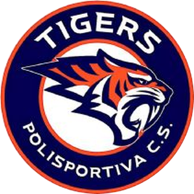

<!doctype html>
<html lang="it">
<head>
<meta charset="utf-8">
<meta name="viewport" content="width=device-width,initial-scale=1,viewport-fit=cover">
<meta name="theme-color" content="#0B1257">
<link rel="manifest" href="manifest.webmanifest">
<meta name="apple-mobile-web-app-capable" content="yes">
<meta name="mobile-web-app-capable" content="yes">
<meta name="apple-mobile-web-app-status-bar-style" content="black-translucent">
<meta name="apple-mobile-web-app-title" content="QUINTO">
<link rel="apple-touch-icon" href="icons/apple-touch-icon.png">
<title>QUINTO · Polisportiva Tigers</title>
<meta name="description" content="Lo spogliatoio digitale della Polisportiva Tigers: calendario CSI, convocazioni, live, allenamenti e area tecnica.">
<link rel="icon" href="tigers-stemma.png">
<link rel="preconnect" href="https://fonts.googleapis.com">
<link rel="stylesheet" href="https://fonts.googleapis.com/css2?family=Big+Shoulders+Display:wght@700;800;900&family=Barlow:wght@400;500;600;700&family=Barlow+Condensed:wght@500;600;700&display=swap">
<style>:root{padding-top:env(safe-area-inset-top);padding-bottom:env(safe-area-inset-bottom)}body{margin:0}img{max-width:100%}[hidden]{display:none!important}</style>
</head>
<body>
<style id="app-css">/* Layout: spogliatoio a due zone — barra laterale blu (navigazione) + campo chiaro; su telefono barra in basso e menu a tutta pagina. */
:root{
  --blu:#0B1257; --notte:#060A33; --fiamma:#F04E23; --gesso:#FFFFFF;
  --vittoria:#1E9E66; --pari:#8A90AE; --sconfitta:#C42840; --giallo:#F5C518;
  --bg:#F3F4FA; --surface:#FFFFFF; --surface-2:#EEF0F8; --fg:#0B1257; --text:#1B2150; --muted:#5B6286; --line:#DCDFEE;
  --accent:#F04E23; --accent-ink:#C63A12; --accent-soft:rgba(240,78,35,.12);
  --side:#0B1257; --side-fg:#FFFFFF; --side-muted:#9EA4CC; --side-line:#1C2468;
  --ok-soft:rgba(30,158,102,.13); --bad-soft:rgba(196,40,64,.12); --warn-soft:rgba(245,197,24,.22); --warn-ink:#7A5D00;
  --shadow:0 1px 0 rgba(11,18,87,.04),0 12px 30px -22px rgba(11,18,87,.45);
  --f-display:"Big Shoulders Display","Arial Narrow",Impact,sans-serif;
  --f-body:"Barlow",system-ui,-apple-system,"Segoe UI",sans-serif;
  --f-data:"Barlow Condensed","Arial Narrow",sans-serif;
  --r:12px;
}
@media (prefers-color-scheme: dark){:root:not([data-theme="light"]){
  --bg:#060A33; --surface:#0D1450; --surface-2:#141C5E; --fg:#F3F4FB; --text:#DDE0F2; --muted:#A1A7CE; --line:#232C70;
  --accent:#FF6339; --accent-ink:#FF8A66; --accent-soft:rgba(255,99,57,.16);
  --side:#040727; --side-fg:#FFFFFF; --side-muted:#8F96C4; --side-line:#141B57;
  --ok-soft:rgba(46,190,128,.16); --bad-soft:rgba(240,80,100,.16); --warn-soft:rgba(245,197,24,.16); --warn-ink:#F5C518;
  --shadow:0 0 0 1px rgba(255,255,255,.02); color-scheme:dark}}
:root[data-theme="dark"]{
  --bg:#060A33; --surface:#0D1450; --surface-2:#141C5E; --fg:#F3F4FB; --text:#DDE0F2; --muted:#A1A7CE; --line:#232C70;
  --accent:#FF6339; --accent-ink:#FF8A66; --accent-soft:rgba(255,99,57,.16);
  --side:#040727; --side-fg:#FFFFFF; --side-muted:#8F96C4; --side-line:#141B57;
  --ok-soft:rgba(46,190,128,.16); --bad-soft:rgba(240,80,100,.16); --warn-soft:rgba(245,197,24,.16); --warn-ink:#F5C518;
  --shadow:0 0 0 1px rgba(255,255,255,.02); color-scheme:dark}

*{box-sizing:border-box}
html,body{height:100%}
body{background:var(--bg);color:var(--text);font-family:var(--f-body);font-size:15px;line-height:1.5;-webkit-font-smoothing:antialiased}
body::before{content:"";position:fixed;inset:0 0 auto;height:env(safe-area-inset-top,0px);z-index:60;background:var(--side)}
button,input,select,textarea{font:inherit;color:inherit}
a{color:var(--accent-ink)}
h1,h2,h3,h4{font-family:var(--f-display);text-transform:uppercase;color:var(--fg);margin:0;line-height:.95;text-wrap:balance;font-weight:800}
h1{font-size:clamp(40px,6vw,64px);font-weight:900}
h2{font-size:28px}
h3{font-size:21px}
h4{font-size:17px}
p{margin:0}
:focus-visible{outline:3px solid var(--accent);outline-offset:2px;border-radius:4px}
.tab{font-variant-numeric:tabular-nums}

/* shell */
.shell{display:grid;grid-template-columns:248px minmax(0,1fr);min-height:100%}
.side{background:var(--side);color:var(--side-fg);position:sticky;top:env(safe-area-inset-top,0px);height:calc(100vh - env(safe-area-inset-top,0px));overflow:auto;display:flex;flex-direction:column;padding:20px 14px 16px max(14px,env(safe-area-inset-left,0px))}
.brand{display:flex;align-items:center;gap:2px;font-family:var(--f-display);font-weight:900;font-size:34px;line-height:1;color:#fff;text-decoration:none;padding:4px 8px 2px}
.brand .o{width:.76em;height:.76em;border-radius:50%;background:#fff;display:grid;place-items:center;margin-left:2px}
.brand .o img{width:94%}
.brand-sub{font-family:var(--f-data);font-size:11px;letter-spacing:.24em;text-transform:uppercase;color:var(--side-muted);padding:0 10px 18px}
.nav{display:grid;gap:2px}
.nav-group{font-family:var(--f-data);font-size:11px;letter-spacing:.2em;text-transform:uppercase;color:var(--side-muted);padding:14px 10px 6px}
.nav a{display:flex;align-items:center;gap:10px;color:#D6D9F0;text-decoration:none;padding:8px 10px;border-radius:8px;font-weight:600;font-size:15px}
.nav a svg{width:18px;height:18px;flex:none;opacity:.8}
.nav a:hover{background:rgba(255,255,255,.06)}
.nav a.on{background:var(--fiamma);color:#fff}
.nav a.on svg{opacity:1}
.nav a .badge{margin-left:auto;background:rgba(255,255,255,.14);border-radius:999px;font-family:var(--f-data);font-size:12px;padding:0 7px}
.side-foot{margin-top:auto;padding:16px 8px 0;border-top:1px solid var(--side-line);display:grid;gap:8px;font-size:13px;color:var(--side-muted)}
.side-foot .who{display:flex;align-items:center;gap:8px;color:#fff}
.side-foot .who img{width:26px;height:26px;border-radius:50%}
.main{min-width:0;padding-block:28px 96px;padding-left:max(16px,env(safe-area-inset-left,0px));padding-right:max(16px,env(safe-area-inset-right,0px))}
.page{max-width:1160px;margin:0 auto;display:grid;gap:22px}
.mbar{display:none}
@media (max-width:900px){
  .shell{grid-template-columns:1fr}
  .side{display:none}
  .side.open{display:flex;position:fixed;inset:0;z-index:70;height:auto;padding-top:calc(16px + env(safe-area-inset-top,0px));padding-bottom:calc(16px + env(safe-area-inset-bottom,0px));padding-right:max(14px,env(safe-area-inset-right,0px))}
  .main{padding-top:12px;padding-bottom:calc(96px + env(safe-area-inset-bottom,0px))}
  .mtop{display:flex!important}
  .mbar{display:grid;grid-template-columns:repeat(5,1fr);position:fixed;left:0;right:0;bottom:0;z-index:50;background:var(--side);padding:6px max(6px,env(safe-area-inset-right,0px)) calc(6px + env(safe-area-inset-bottom,0px)) max(6px,env(safe-area-inset-left,0px));border-top:1px solid var(--side-line)}
  .mbar a,.mbar button{display:grid;justify-items:center;gap:2px;color:#C9CCE6;text-decoration:none;font-family:var(--f-data);font-size:11px;letter-spacing:.06em;text-transform:uppercase;background:none;border:0;padding:6px 2px;border-radius:8px;cursor:pointer}
  .mbar svg{width:20px;height:20px}
  .mbar .on{color:#fff;background:rgba(240,78,35,.9)}
}
.mtop{display:none;align-items:center;justify-content:space-between;gap:12px;margin:0 auto 6px;max-width:1160px}
.mtop .brand{color:var(--fg);font-size:28px;padding:0}
.mtop .brand .o{box-shadow:inset 0 0 0 2px var(--fg)}
.iconbtn.close-side{display:none}
@media (max-width:900px){.iconbtn.close-side{display:inline-grid;position:absolute;right:max(14px,env(safe-area-inset-right,0px));top:calc(14px + env(safe-area-inset-top,0px))}}

/* page head */
.phead{display:flex;flex-wrap:wrap;align-items:flex-end;justify-content:space-between;gap:14px 24px;padding-bottom:4px}
.phead>div{display:grid;gap:8px;min-width:0}
.eyebrow{font-family:var(--f-data);font-weight:700;font-size:12px;letter-spacing:.22em;text-transform:uppercase;color:var(--accent-ink);display:flex;align-items:center;gap:10px}
.graffi{display:inline-flex;gap:3px;transform:skewX(-18deg)}
.graffi i{display:block;width:4px;height:14px;background:var(--fiamma);border-radius:1px 4px 1px 4px}
.graffi i:nth-child(2){height:17px;margin-top:-2px}.graffi i:nth-child(3){height:12px;margin-top:1px}
.lead{color:var(--muted);max-width:64ch}

/* surfaces */
.card{background:var(--surface);border:1px solid var(--line);border-radius:var(--r);padding:20px;box-shadow:var(--shadow);min-width:0}
.card.flat{box-shadow:none}
.card.dark{background:var(--blu);border-color:var(--blu);color:#fff}
.card.dark h2,.card.dark h3,.card.dark h4{color:#fff}
.card-h{display:flex;justify-content:space-between;align-items:center;gap:12px;flex-wrap:wrap;margin-bottom:14px}
.card-h .eyebrow{margin:0}
.grid{display:grid;gap:16px}
.g2{grid-template-columns:repeat(2,minmax(0,1fr))}
.g3{grid-template-columns:repeat(3,minmax(0,1fr))}
.g4{grid-template-columns:repeat(4,minmax(0,1fr))}
.g-7-5{grid-template-columns:minmax(0,7fr) minmax(0,5fr)}
@media (max-width:980px){.g3,.g4{grid-template-columns:repeat(2,minmax(0,1fr))}.g-7-5{grid-template-columns:1fr}}
@media (max-width:640px){.g2,.g3,.g4{grid-template-columns:1fr}}
.stack{display:grid;gap:12px;align-content:start}
.row{display:flex;gap:10px;align-items:center;flex-wrap:wrap}
.between{justify-content:space-between}
.muted{color:var(--muted)}
.small{font-size:13px}
.hr{height:1px;background:var(--line);margin:4px 0}
.empty{border:1.5px dashed var(--line);border-radius:var(--r);padding:26px;text-align:center;color:var(--muted);display:grid;gap:8px;justify-items:center}
.empty h3{font-size:20px}

/* buttons */
.btn{display:inline-flex;align-items:center;justify-content:center;gap:7px;font-family:var(--f-data);font-weight:700;font-size:15px;letter-spacing:.07em;text-transform:uppercase;padding:9px 15px;border-radius:9px;border:0;cursor:pointer;text-decoration:none;line-height:1.1;white-space:nowrap;background:var(--surface-2);color:var(--fg)}
.btn svg{width:16px;height:16px}
.btn:hover{filter:brightness(.97)}
.btn.fire{background:var(--fiamma);color:#fff}
.btn.blue{background:var(--blu);color:#fff}
:root[data-theme="dark"] .btn.blue{background:#26318A}
@media (prefers-color-scheme: dark){:root:not([data-theme="light"]) .btn.blue{background:#26318A}}
.btn.line{background:transparent;box-shadow:inset 0 0 0 1.5px var(--line)}
.btn.ghost{background:transparent;padding-inline:8px}
.btn.danger{background:var(--bad-soft);color:var(--sconfitta)}
.btn.sm{font-size:13px;padding:6px 10px}
.btn[disabled]{opacity:.45;cursor:not-allowed}
.iconbtn{width:36px;height:36px;display:inline-grid;place-items:center;border-radius:9px;border:0;background:var(--surface-2);color:var(--fg);cursor:pointer}
.iconbtn svg{width:18px;height:18px}

/* chips & pills */
.pill{display:inline-flex;align-items:center;gap:5px;font-family:var(--f-data);font-weight:700;font-size:12px;letter-spacing:.09em;text-transform:uppercase;padding:3px 9px;border-radius:999px;background:var(--surface-2);color:var(--muted);white-space:nowrap}
.pill.ok{background:var(--ok-soft);color:var(--vittoria)}
.pill.bad{background:var(--bad-soft);color:var(--sconfitta)}
.pill.warn{background:var(--warn-soft);color:var(--warn-ink)}
.pill.fire{background:var(--accent-soft);color:var(--accent-ink)}
.pill.blue{background:var(--blu);color:#fff}
.res{display:inline-grid;place-items:center;width:26px;height:26px;border-radius:6px;font-family:var(--f-data);font-weight:700;font-size:14px}
.res.V{background:var(--ok-soft);color:var(--vittoria)}.res.N{background:var(--surface-2);color:var(--muted)}.res.P{background:var(--bad-soft);color:var(--sconfitta)}
.seg{display:inline-flex;background:var(--surface-2);border-radius:10px;padding:3px;gap:2px;flex-wrap:wrap}
.seg button{border:0;background:transparent;padding:7px 12px;border-radius:8px;cursor:pointer;font-family:var(--f-data);font-weight:700;letter-spacing:.06em;text-transform:uppercase;font-size:13px;color:var(--muted)}
.seg button.on{background:var(--surface);color:var(--fg);box-shadow:0 1px 3px rgba(11,18,87,.15)}
.tabs{display:flex;gap:4px;border-bottom:1px solid var(--line);overflow-x:auto}
.tabs button{border:0;background:none;padding:10px 12px;font-family:var(--f-data);font-weight:700;font-size:15px;letter-spacing:.06em;text-transform:uppercase;color:var(--muted);border-bottom:3px solid transparent;cursor:pointer;white-space:nowrap}
.tabs button.on{color:var(--fg);border-color:var(--fiamma)}

/* forms */
.form{display:grid;gap:14px}
.fgrid{display:grid;grid-template-columns:repeat(2,minmax(0,1fr));gap:12px 14px}
.fgrid .full{grid-column:1/-1}
@media (max-width:640px){.fgrid{grid-template-columns:1fr}}
.field{display:grid;gap:5px;min-width:0}
.field>span{font-family:var(--f-data);font-weight:700;font-size:12px;letter-spacing:.12em;text-transform:uppercase;color:var(--muted)}
.field small{color:var(--muted);font-size:12px}
input,select,textarea{width:100%;min-width:0;border:1.5px solid var(--line);background:var(--surface);border-radius:9px;padding:9px 11px;font-size:15px}
textarea{resize:vertical;min-height:70px}
input[type=checkbox],input[type=radio]{width:18px;height:18px;accent-color:var(--fiamma);flex:none;padding:0}
input[type=range]{accent-color:var(--fiamma);padding:0;border:0}
input:focus,select:focus,textarea:focus{border-color:var(--fiamma);outline:none}
.check{display:flex;align-items:center;gap:9px;cursor:pointer}
.search{position:relative;min-width:0}
.search svg{position:absolute;left:10px;top:50%;transform:translateY(-50%);width:16px;height:16px;color:var(--muted)}
.search input{padding-left:32px}
.toolbar{display:flex;flex-wrap:wrap;gap:10px;align-items:center}
.toolbar>*{min-width:0}
.toolbar .search{flex:1 1 220px}
.toolbar select{width:auto;flex:0 1 auto}

/* tables */
.tablewrap{overflow-x:auto;border:1px solid var(--line);border-radius:var(--r);background:var(--surface)}
table{border-collapse:collapse;width:100%;font-size:14px}
th{font-family:var(--f-data);font-weight:700;font-size:12px;letter-spacing:.12em;text-transform:uppercase;color:var(--muted);text-align:left;padding:10px 12px;border-bottom:1px solid var(--line);white-space:nowrap;background:var(--surface)}
td{padding:9px 12px;border-bottom:1px solid var(--line);vertical-align:middle}
tr:last-child td{border-bottom:0}
td.num,th.num{text-align:right;font-variant-numeric:tabular-nums;font-family:var(--f-data);font-size:16px}
tr.us td{background:var(--accent-soft);font-weight:700}
.pos{font-family:var(--f-display);font-weight:900;font-size:20px;width:34px}

/* modal */
.scrim{position:fixed;inset:0;background:rgba(6,10,51,.6);z-index:80;display:grid;place-items:center;padding:calc(16px + env(safe-area-inset-top,0px)) max(12px,env(safe-area-inset-right,0px)) calc(16px + env(safe-area-inset-bottom,0px)) max(12px,env(safe-area-inset-left,0px))}
.modal{background:var(--surface);border-radius:16px;width:min(720px,100%);max-height:100%;overflow:auto;box-shadow:0 30px 80px -30px rgba(0,0,0,.6);display:flex;flex-direction:column}
.modal.wide{width:min(1000px,100%)}
.modal-h{position:sticky;top:0;z-index:2;background:var(--surface);display:flex;align-items:center;justify-content:space-between;gap:12px;padding:16px 18px;border-bottom:1px solid var(--line)}
.modal-b{padding:18px;display:grid;gap:16px}
.modal-f{position:sticky;bottom:0;background:var(--surface);display:flex;justify-content:space-between;gap:10px;flex-wrap:wrap;padding:12px 18px;border-top:1px solid var(--line)}
.confirm{background:var(--warn-soft);border-radius:10px;padding:12px;display:grid;gap:10px}

/* toast */
.toast{position:fixed;left:50%;transform:translateX(-50%);bottom:calc(84px + env(safe-area-inset-bottom,0px));z-index:90;background:var(--notte);color:#fff;padding:11px 16px;border-radius:10px;font-weight:600;box-shadow:0 10px 30px -10px rgba(0,0,0,.5);max-width:calc(100% - 32px)}
.toast.err{background:var(--sconfitta)}
@media (min-width:901px){.toast{bottom:24px}}

/* home */
.hero{background:var(--blu);color:#fff;border-radius:18px;position:relative;overflow:hidden;padding:26px;display:grid;grid-template-columns:minmax(0,1fr) auto;gap:20px;align-items:end}
.hero canvas{position:absolute;inset:0;width:100%;height:100%;pointer-events:none}
.hero>*{position:relative}
.hero h1{color:#fff;font-size:clamp(46px,7vw,86px)}
.hero h1 em{font-style:normal;color:var(--fiamma)}
.hero .eyebrow{color:#FF8A66}
.hero-stats{display:flex;gap:26px;flex-wrap:wrap}
.hstat b{display:block;font-family:var(--f-data);font-weight:700;font-size:44px;line-height:1;font-variant-numeric:tabular-nums}
.hstat span{font-family:var(--f-data);font-size:12px;letter-spacing:.16em;text-transform:uppercase;color:#AEB3D6}
@media (max-width:640px){.hero{grid-template-columns:1fr;padding:20px}.hstat b{font-size:36px}}

.match{display:grid;gap:14px}
.vs{display:grid;grid-template-columns:minmax(0,1fr) auto minmax(0,1fr);align-items:center;gap:12px;text-align:center}
.team{display:grid;justify-items:center;gap:8px;font-family:var(--f-display);font-weight:800;font-size:22px;text-transform:uppercase;line-height:1;color:var(--fg);min-width:0;overflow-wrap:anywhere}
.crest{width:58px;height:58px;border-radius:50%;background:#fff;display:grid;place-items:center;border:2px solid var(--line);flex:none}
.crest img{width:92%}
.crest.opp{background:var(--surface-2);font-family:var(--f-display);font-weight:900;font-size:26px;color:var(--fg)}
.crest.sm{width:34px;height:34px;font-size:16px;border-width:1.5px}
.when{font-family:var(--f-data);text-align:center}
.when b{display:block;font-size:36px;font-weight:700;line-height:1;color:var(--fg)}
.when small{color:var(--muted);letter-spacing:.1em;text-transform:uppercase}
.bigscore{font-family:var(--f-data);font-weight:700;font-size:64px;line-height:.9;color:var(--fg);font-variant-numeric:tabular-nums}
.place{display:flex;gap:8px;align-items:flex-start;color:var(--muted);font-size:14px}
.place svg{width:16px;height:16px;flex:none;margin-top:2px}

/* list rows */
.list{display:grid}
.lrow{display:grid;grid-template-columns:auto minmax(0,1fr) auto;gap:12px;align-items:center;padding:12px 4px;border-bottom:1px solid var(--line)}
.lrow:last-child{border-bottom:0}
.lrow.btnrow{cursor:pointer;border-radius:8px;padding-inline:8px}
.lrow.btnrow:hover{background:var(--surface-2)}
.date-tile{width:52px;text-align:center;border-radius:9px;background:var(--surface-2);padding:5px 0;font-family:var(--f-data);line-height:1}
.date-tile b{display:block;font-size:22px;color:var(--fg)}
.date-tile small{font-size:11px;letter-spacing:.1em;text-transform:uppercase;color:var(--muted)}
.date-tile.match{background:var(--blu)} .date-tile.match b,.date-tile.match small{color:#fff}
.date-tile.tbd{background:var(--warn-soft)}
.ttl{font-weight:700;color:var(--fg);overflow-wrap:anywhere}

/* players */
.pgrid{display:grid;grid-template-columns:repeat(auto-fill,minmax(250px,1fr));gap:14px}
.pcard{background:var(--surface);border:1px solid var(--line);border-radius:var(--r);padding:16px;position:relative;overflow:hidden;display:grid;gap:10px;box-shadow:var(--shadow)}
.pcard .num{position:absolute;right:-4px;top:-16px;font-family:var(--f-display);font-weight:900;font-size:110px;line-height:1;color:transparent;-webkit-text-stroke:1.5px var(--line);pointer-events:none}
.pcard .nick{font-family:var(--f-display);font-weight:900;font-size:30px;line-height:.9;text-transform:uppercase;color:var(--fg);position:relative;overflow-wrap:anywhere}
.pcard .name{color:var(--muted);font-size:14px;position:relative}
.pcard>*{position:relative}
.pstats{display:flex;gap:16px}
.pstats div{display:grid}
.pstats b{font-family:var(--f-data);font-size:24px;line-height:1;color:var(--fg)}
.pstats small{font-family:var(--f-data);font-size:11px;letter-spacing:.12em;text-transform:uppercase;color:var(--muted)}
.bars{display:grid;gap:6px}
.bar{display:grid;grid-template-columns:118px minmax(0,1fr) 22px;gap:8px;align-items:center;font-size:13px}
.bar .tr{height:8px;border-radius:4px;background:var(--surface-2);overflow:hidden}
.bar .tr i{display:block;height:100%;background:var(--fiamma);border-radius:4px}
.bar .tr i.b{background:var(--blu)}
:root[data-theme="dark"] .bar .tr i.b{background:#8C95E8}
@media (prefers-color-scheme: dark){:root:not([data-theme="light"]) .bar .tr i.b{background:#8C95E8}}
.bar b{font-family:var(--f-data);text-align:right}

/* centro partita */
.avail{display:grid;gap:0}
.arow{display:grid;grid-template-columns:minmax(0,1fr) auto auto;gap:10px;align-items:center;padding:9px 0;border-bottom:1px solid var(--line)}
.arow:last-child{border-bottom:0}
.arow .who{display:flex;gap:10px;align-items:center;min-width:0}
.shirt{width:32px;height:32px;border-radius:8px;display:grid;place-items:center;background:var(--blu);color:#fff;font-family:var(--f-data);font-weight:700;font-size:15px;flex:none}
.shirt.gk{background:var(--fiamma)}
.counter{font-family:var(--f-data);font-weight:700;font-size:40px;line-height:1;color:var(--fg)}
.counter.full{color:var(--accent-ink)}

/* pitch */
.pitch{position:relative;width:100%;aspect-ratio:2/1;max-width:100%;border-radius:12px;background:#1D6B4E;overflow:hidden;touch-action:none;user-select:none}
.pitch.v{aspect-ratio:3/4}
.pitch svg.lines{position:absolute;inset:0;width:100%;height:100%}
.token{position:absolute;transform:translate(-50%,-50%);width:38px;height:38px;border-radius:50%;display:grid;place-items:center;font-family:var(--f-data);font-weight:700;font-size:13px;color:#fff;border:2px solid #fff;cursor:grab;box-shadow:0 3px 8px rgba(0,0,0,.35);line-height:1;text-align:center;overflow:hidden;padding:2px}
.token.a{background:var(--fiamma)} .token.b{background:var(--blu)} .token.gk{background:#F5C518;color:#0B1257}
.token.ball{width:20px;height:20px;background:#fff;border-color:#0B1257;cursor:grab}
.token.sel{outline:3px solid #fff;outline-offset:2px}
.token-name{position:absolute;top:100%;left:50%;transform:translateX(-50%);margin-top:3px;font-size:11px;font-weight:700;color:#fff;white-space:nowrap;text-shadow:0 1px 2px rgba(0,0,0,.7);pointer-events:none}

/* live */
.board{background:var(--notte);color:#fff;border-radius:18px;padding:20px;display:grid;gap:16px;position:relative;overflow:hidden}
.board canvas{position:absolute;inset:0;width:100%;height:100%;pointer-events:none}
.board>*:not(canvas){position:relative}
.board .sc{display:grid;grid-template-columns:minmax(0,1fr) auto minmax(0,1fr);gap:12px;align-items:center;text-align:center}
.board .n{font-family:var(--f-data);font-weight:700;font-size:clamp(64px,12vw,110px);line-height:.9;font-variant-numeric:tabular-nums}
.board .t{font-family:var(--f-display);font-weight:800;font-size:clamp(16px,2.6vw,24px);text-transform:uppercase;color:#AEB3D6;overflow-wrap:anywhere}
.clock{font-family:var(--f-data);font-weight:700;font-size:clamp(34px,6vw,54px);padding:6px 16px;border-radius:12px;background:rgba(240,78,35,.16);color:#FF8A66;font-variant-numeric:tabular-nums;line-height:1}
.clock.run{background:var(--fiamma);color:#fff}
.period{font-family:var(--f-data);letter-spacing:.16em;text-transform:uppercase;color:#AEB3D6;font-size:13px}
.fouls{display:flex;justify-content:space-between;gap:12px;font-family:var(--f-data);font-size:13px;letter-spacing:.1em;text-transform:uppercase;color:#AEB3D6;flex-wrap:wrap}
.pips{display:inline-flex;gap:4px;vertical-align:middle;margin-left:6px}
.pips i{width:11px;height:11px;border-radius:2px;background:#232B6B}.pips i.on{background:var(--fiamma)}.pips i.over{background:var(--sconfitta)}
.liveact{display:grid;grid-template-columns:repeat(auto-fill,minmax(120px,1fr));gap:8px}
.liveact .btn{padding:14px 10px;font-size:15px}
.feed{display:grid}
.ev{display:grid;grid-template-columns:62px 22px minmax(0,1fr) auto;gap:8px;align-items:center;padding:8px 0;border-bottom:1px solid var(--line);font-size:14px}
.ev time{font-family:var(--f-data);font-weight:700;color:var(--accent-ink)}
.card-y{display:inline-block;width:11px;height:15px;border-radius:2px;background:var(--giallo)}
.card-r{display:inline-block;width:11px;height:15px;border-radius:2px;background:var(--sconfitta)}
.onfield{display:flex;flex-wrap:wrap;gap:6px}
.onfield .pill{font-size:13px}

/* diagram */
.diagram{width:100%;max-width:100%;border-radius:10px;display:block}
.drill{border:1px solid var(--line);border-radius:var(--r);background:var(--surface);overflow:hidden}
.drill>summary{list-style:none;cursor:pointer;display:grid;grid-template-columns:auto minmax(0,1fr) auto;gap:12px;align-items:center;padding:12px 14px}
.drill>summary::-webkit-details-marker{display:none}
.drill[open]>summary{border-bottom:1px solid var(--line)}
.mins{font-family:var(--f-data);font-weight:700;font-size:20px;color:var(--fg);min-width:44px;text-align:center;background:var(--surface-2);border-radius:8px;padding:2px 6px}
.drill-b{padding:14px;display:grid;grid-template-columns:minmax(0,1fr) minmax(0,1fr);gap:16px}
@media (max-width:760px){.drill-b{grid-template-columns:1fr}}
.drill-b ol{margin:0;padding-left:20px;display:grid;gap:4px}
.kv{display:grid;gap:3px}
.kv>span{font-family:var(--f-data);font-weight:700;font-size:12px;letter-spacing:.12em;text-transform:uppercase;color:var(--muted)}
.timeline{display:flex;height:14px;border-radius:7px;overflow:hidden;gap:2px}
.timeline span{display:block;min-width:4px}

/* intro */
.intro{position:fixed;inset:0;z-index:100;background:var(--notte);color:#fff;display:grid;grid-template-rows:auto 1fr auto;overflow:hidden;padding:calc(18px + env(safe-area-inset-top,0px)) max(20px,env(safe-area-inset-right,0px)) calc(18px + env(safe-area-inset-bottom,0px)) max(20px,env(safe-area-inset-left,0px))}
.intro canvas{position:absolute;inset:0;width:100%;height:100%}
.intro>*{position:relative}
.intro-c{display:grid;place-items:center;align-content:center;gap:18px;text-align:center}
.intro .disc{width:clamp(110px,22vw,170px);aspect-ratio:1;border-radius:50%;background:#fff;display:grid;place-items:center;box-shadow:0 0 0 10px rgba(255,255,255,.06),0 0 0 22px rgba(240,78,35,.2)}
.intro .disc img{width:92%}
.intro h1{color:#fff;font-size:clamp(64px,15vw,190px);line-height:.85}
.intro h1 em{font-style:normal;color:var(--fiamma);display:block}
.intro .tag{font-family:var(--f-data);letter-spacing:.3em;text-transform:uppercase;font-size:13px;color:#AEB3D6}
.intro-progress{height:4px;width:min(320px,70vw);background:rgba(255,255,255,.15);border-radius:2px;overflow:hidden}
.intro-progress i{display:block;height:100%;background:var(--fiamma);width:0}
@media (prefers-reduced-motion:no-preference){
  .intro.play .disc{animation:pop .8s cubic-bezier(.2,.9,.2,1.2) both}
  .intro.play h1 span{display:inline-block;animation:rise .7s cubic-bezier(.2,.8,.2,1) both}
  .intro.play h1 em{animation:rise .7s .35s cubic-bezier(.2,.8,.2,1) both}
  @keyframes pop{from{transform:scale(.4) rotate(-30deg);opacity:0}to{transform:none;opacity:1}}
  @keyframes rise{from{transform:translateY(40%);opacity:0}to{transform:none;opacity:1}}
}

/* misc */
.kpis{display:grid;grid-template-columns:repeat(4,minmax(0,1fr));gap:12px}
@media (max-width:760px){.kpis{grid-template-columns:repeat(2,minmax(0,1fr))}}
.kpi{background:var(--surface);border:1px solid var(--line);border-radius:var(--r);padding:14px 16px;display:grid;gap:4px}
.kpi b{font-family:var(--f-data);font-weight:700;font-size:34px;line-height:1;color:var(--fg);font-variant-numeric:tabular-nums}
.kpi span{font-family:var(--f-data);font-size:12px;letter-spacing:.14em;text-transform:uppercase;color:var(--muted)}
.chart{width:100%;height:auto;display:block}
.chart text{fill:var(--muted);font-family:var(--f-data);font-size:12px}
.note-line{border-left:3px solid var(--fiamma);padding:6px 0 6px 12px;color:var(--text)}
.callout{background:var(--surface-2);border-radius:10px;padding:12px 14px;display:flex;gap:10px;align-items:flex-start;font-size:14px}
.callout svg{width:18px;height:18px;flex:none;color:var(--accent-ink);margin-top:1px}
.callout.warn{background:var(--warn-soft)}
.copybox{white-space:pre-wrap;background:var(--surface-2);border-radius:10px;padding:14px;font-size:14px;max-height:320px;overflow:auto;border:0;width:100%;min-height:200px}
.audio{width:100%}
.hide-sm{}
@media (max-width:640px){.hide-sm{display:none!important}}
.sr{position:absolute;width:1px;height:1px;overflow:hidden;clip:rect(0 0 0 0)}
.readonly-banner{display:flex;gap:10px;align-items:center;background:var(--surface);border:1px solid var(--line);border-radius:10px;padding:10px 14px;font-size:14px;color:var(--muted)}
.readonly-banner svg{width:18px;height:18px;flex:none}

/* ---------- trailer della partita ---------- */
.trailer{position:fixed;inset:0;z-index:150;background:#060A33;color:#fff;overflow:hidden;--pulse:0;--tension:0;--prog:0;font-family:var(--f-body)}
.tr-bg{position:absolute;inset:0;opacity:calc(.5 + var(--tension)*.5)}
.tr-bg canvas{position:absolute;inset:0;width:100%;height:100%}
.trailer::before{content:"";position:absolute;inset:-20%;background:radial-gradient(circle at 50% 45%,rgba(240,78,35,calc(.12 + var(--tension)*.25 + var(--pulse)*.3)),transparent 55%);pointer-events:none}
.tr-flash{position:absolute;inset:0;background:#fff;opacity:calc(var(--pulse)*.16);pointer-events:none}
.tr-close{position:absolute;top:calc(14px + env(safe-area-inset-top,0px));right:max(14px,env(safe-area-inset-right,0px));z-index:5;width:44px;height:44px;border-radius:50%;border:0;background:rgba(255,255,255,.14);color:#fff;display:grid;place-items:center;cursor:pointer}
.tr-close svg{width:22px;height:22px}
.tr-stage{position:absolute;inset:0}
.tr-center{position:absolute;inset:0;display:grid;place-items:center;align-content:center;gap:clamp(8px,2vh,18px);text-align:center;padding:24px max(18px,env(safe-area-inset-right,0px)) 24px max(18px,env(safe-area-inset-left,0px))}
.tr-kicker{font-family:var(--f-data);font-weight:700;letter-spacing:.3em;text-transform:uppercase;font-size:clamp(13px,2.2vw,18px);color:#FF8A66}
.tr-sub{font-family:var(--f-display);font-weight:800;font-size:clamp(28px,6vw,54px);text-transform:uppercase;color:#AEB3D6}
.tr-vs{font-family:var(--f-data);font-weight:700;letter-spacing:.2em;text-transform:uppercase;font-size:clamp(16px,3vw,24px)}
.tr-h,.tr-opp,.tr-mega,.tr-section,.tr-chant{font-family:var(--f-display);font-weight:900;text-transform:uppercase;line-height:.86;margin:0;color:#fff}
.tr-h{font-size:clamp(48px,11vw,120px)} .tr-h em{font-style:normal;color:var(--fiamma)}
.tr-opp{font-size:clamp(44px,11vw,130px)}
.tr-mega{font-size:clamp(84px,24vw,280px);letter-spacing:-.01em}
.tr-mega.outline{color:transparent;-webkit-text-stroke:2px rgba(255,255,255,.55);margin-top:-.25em}
.tr-section{font-size:clamp(56px,15vw,190px);color:transparent;-webkit-text-stroke:2px #fff}
.tr-chant{font-size:clamp(56px,14vw,150px);color:var(--fiamma)}
.tr-disc{width:clamp(110px,24vw,190px);aspect-ratio:1;border-radius:50%;background:#fff;display:grid;place-items:center;box-shadow:0 0 0 12px rgba(255,255,255,.06),0 0 calc(30px + var(--pulse)*60px) rgba(240,78,35,.6)}
.tr-disc img{width:92%}
.tr-disc.big{width:clamp(130px,28vw,230px)}
.tr-start .tr-play{padding:15px 24px;font-size:18px}
.tr-err{color:#FF8A66;font-size:18px}
/* persona */
.tr-person{position:absolute;inset:0;display:grid;grid-template-columns:minmax(0,1fr) minmax(0,1.1fr);align-items:center;gap:2vw;padding:0 max(24px,4vw)}
.tr-num{font-family:var(--f-display);font-weight:900;font-size:clamp(150px,36vw,460px);line-height:.8;color:transparent;-webkit-text-stroke:3px var(--fiamma);text-align:right;text-shadow:0 0 60px rgba(240,78,35,.35)}
.tr-num.coach{font-size:clamp(70px,14vw,170px);-webkit-text-stroke:2px #fff}
.tr-who{display:grid;gap:6px;justify-items:start;min-width:0}
.tr-role{font-family:var(--f-data);font-weight:700;letter-spacing:.28em;text-transform:uppercase;font-size:clamp(12px,2vw,17px);color:#AEB3D6;border:1px solid rgba(255,255,255,.25);padding:4px 10px;border-radius:999px}
.tr-first{font-family:var(--f-display);font-weight:800;font-size:clamp(30px,6vw,70px);text-transform:uppercase;line-height:.9;color:#D6D9F0}
.tr-last{font-family:var(--f-display);font-weight:900;font-size:clamp(52px,11vw,140px);text-transform:uppercase;line-height:.84;overflow-wrap:anywhere}
.tr-nick{display:inline-flex;align-items:center;gap:12px;font-family:var(--f-display);font-weight:900;font-size:clamp(38px,8vw,96px);text-transform:uppercase;color:#fff;background:var(--fiamma);padding:4px 18px 2px;transform:skewX(-8deg);margin-top:8px}
.tr-nick .graffi i{background:#fff}
.tr-count{position:absolute;left:max(18px,env(safe-area-inset-left,0px));bottom:calc(22px + env(safe-area-inset-bottom,0px));font-family:var(--f-data);font-weight:700;letter-spacing:.2em;color:#AEB3D6;font-size:14px}
@media (max-width:700px) and (orientation:portrait){
  .tr-person{grid-template-columns:1fr;align-content:center;justify-items:center;text-align:center;gap:0}
  .tr-num{text-align:center;font-size:clamp(150px,52vw,300px)}
  .tr-who{justify-items:center}
}
/* costruzione e drop */
.tr-ring{position:relative;width:min(84vw,84vh);aspect-ratio:1;display:grid;place-items:center}
.tr-ring-n{position:absolute;inset:0;animation:trspin 2.4s linear infinite}
.tr-ring span{position:absolute;left:50%;top:50%;width:2.4em;margin:-.6em 0 0 -1.2em;text-align:center;font-family:var(--f-display);font-weight:900;font-size:clamp(24px,5vw,44px);line-height:1.2;color:#fff;transform:rotate(var(--a)) translateY(calc(-1 * min(36vw,36vh))) rotate(calc(-1 * var(--a)));text-shadow:0 0 18px rgba(240,78,35,.8);animation:trfade .6s both}
@keyframes trfade{from{opacity:0}to{opacity:1}}
.tr-marquee{width:100vw;overflow:hidden;border-block:2px solid rgba(255,255,255,.2);padding:10px 0;margin-top:2vh}
.tr-marquee div{display:flex;gap:34px;width:max-content;animation:trmarq 9s linear infinite}
.tr-marquee span{font-family:var(--f-display);font-weight:900;font-size:clamp(26px,5vw,52px);text-transform:uppercase;white-space:nowrap}
.tr-marquee b{color:var(--fiamma);margin-right:10px}
.tr-beat{transform:scale(calc(1 + var(--pulse)*.06))}
.tr-bar{position:absolute;left:0;right:0;bottom:0;height:4px;background:rgba(255,255,255,.1)}
.tr-bar i{display:block;height:100%;width:calc(var(--prog)*100%);background:var(--fiamma)}
/* animazioni d'ingresso */
@media (prefers-reduced-motion:no-preference){
  .tr-in{animation:trin .5s cubic-bezier(.2,.8,.2,1) both}
  .tr-slam{animation:trslam .45s cubic-bezier(.2,1.4,.3,1) both}
  .tr-pop{animation:trpop .4s cubic-bezier(.2,1.6,.3,1) both}
  .tr-wipe{animation:trwipe .6s cubic-bezier(.7,0,.2,1) both}
  .tr-shake{animation:trslam .45s cubic-bezier(.2,1.4,.3,1) both,trshake .35s .3s both}
  .tr-spin{animation:trspinin .9s cubic-bezier(.2,.9,.2,1.2) both}
  .trailer .tr-person .tr-num{animation:trnum .55s cubic-bezier(.2,1.3,.3,1) both}
}
@keyframes trin{from{opacity:0;transform:translateY(24px)}to{opacity:1;transform:none}}
@keyframes trslam{from{opacity:0;transform:scale(2.4)}to{opacity:1;transform:none}}
@keyframes trpop{from{opacity:0;transform:skewX(-8deg) scale(.3)}to{opacity:1;transform:skewX(-8deg)}}
@keyframes trwipe{from{clip-path:inset(0 100% 0 0);transform:translateX(-6%)}to{clip-path:inset(0 0 0 0);transform:none}}
@keyframes trshake{0%,100%{translate:0 0}20%{translate:-8px 4px}40%{translate:7px -5px}60%{translate:-5px 3px}80%{translate:4px -2px}}
@keyframes trspinin{from{opacity:0;transform:scale(.3) rotate(-120deg)}to{opacity:1;transform:none}}
@keyframes trnum{from{opacity:0;transform:translateX(-30%) scale(1.6)}to{opacity:1;transform:none}}
@keyframes trspin{to{transform:rotate(360deg)}}
@keyframes trmarq{to{transform:translateX(-50%)}}
/* drop rinnovato */
.trailer.dropping .tr-flash{background:var(--fiamma);opacity:calc(var(--bar)*.55 + var(--pulse)*.08)}
.trailer.dropping .tr-bg{transform:translateY(calc(var(--pulse)*-14px)) scale(calc(1.04 + var(--pulse)*.03))}
.tr-mega.outline.solo{margin-top:0}
.tr-wall{display:grid;grid-template-columns:repeat(3,minmax(0,1fr));gap:10px;width:min(92vw,980px)}
@media (min-width:760px){.tr-wall{grid-template-columns:repeat(6,minmax(0,1fr))}}
.tr-tile{border:2px solid rgba(255,255,255,.18);border-radius:12px;padding:10px 6px;display:grid;justify-items:center;gap:2px;opacity:.12;transform:scale(.85);transition:opacity .12s,transform .25s cubic-bezier(.2,1.6,.3,1),background .2s}
.tr-tile.on{opacity:1;transform:none;background:rgba(240,78,35,.18);border-color:var(--fiamma)}
.tr-tile b{font-family:var(--f-display);font-weight:900;font-size:clamp(34px,8vw,64px);line-height:.9;color:#fff}
.tr-tile span{font-family:var(--f-data);font-weight:700;letter-spacing:.1em;text-transform:uppercase;font-size:clamp(12px,2.4vw,18px);color:#FF8A66}
.tr-strobe{position:absolute;inset:0;display:grid;place-items:center;background:var(--blu);overflow:hidden}
.tr-strobe.alt{background:var(--fiamma)}
.tr-strobe-num{position:absolute;font-family:var(--f-display);font-weight:900;font-size:min(95vw,95vh);line-height:.8;color:transparent;-webkit-text-stroke:3px rgba(255,255,255,.22);transform:scale(calc(1 + var(--pulse)*.05))}
.tr-strobe-txt{position:relative;display:grid;justify-items:center;text-align:center;gap:6px;padding:0 16px}
.tr-strobe-nick{font-family:var(--f-display);font-weight:900;text-transform:uppercase;font-size:clamp(70px,20vw,240px);line-height:.85;margin:0;color:#fff;transform:skewX(-8deg)}
.tr-strobe.alt .tr-strobe-nick{color:var(--blu)}
.tr-strobe.alt .tr-first{color:#fff}
.tr-versus{position:absolute;inset:0;display:grid;grid-template-rows:1fr auto 1fr}
.tr-vs-side{display:grid;align-content:center;gap:6px;padding:0 max(22px,5vw)}
.tr-vs-side h2{font-family:var(--f-display);font-weight:900;text-transform:uppercase;font-size:clamp(54px,14vw,170px);line-height:.85;margin:0;color:#fff;overflow-wrap:anywhere}
.tr-vs-side.l{background:linear-gradient(180deg,transparent,rgba(255,255,255,.04));animation:trleft .5s cubic-bezier(.2,.9,.2,1) both}
.tr-vs-side.r{text-align:right;justify-items:end;background:linear-gradient(0deg,transparent,rgba(240,78,35,.18));animation:trright .5s cubic-bezier(.2,.9,.2,1) both}
.tr-vs-side.r h2{color:var(--fiamma)}
.tr-vs-x{justify-self:center;font-family:var(--f-display);font-weight:900;font-size:clamp(44px,10vw,110px);color:#060A33;background:#fff;padding:2px 22px;transform:skewX(-10deg) scale(calc(1 + var(--pulse)*.12))}
.tr-word{font-family:var(--f-display);font-weight:900;text-transform:uppercase;font-size:clamp(64px,16vw,200px);line-height:.88;margin:0;color:#fff;padding:0 12px}
.tr-word.hot{color:var(--fiamma)}
.tr-burst{position:absolute;width:150vmax;height:150vmax;background:repeating-conic-gradient(from 0deg,rgba(240,78,35,.16) 0 6deg,transparent 6deg 18deg);animation:trspin 14s linear infinite;pointer-events:none}
@keyframes trleft{from{transform:translateX(-100%)}to{transform:none}}
@keyframes trright{from{transform:translateX(100%)}to{transform:none}}
</style>
<div id="app"></div>
<script src="https://unpkg.com/htm@3.1.1/preact/standalone.umd.js"></script>
<script src="https://www.gstatic.com/firebasejs/10.12.2/firebase-app-compat.js"></script>
<script src="https://www.gstatic.com/firebasejs/10.12.2/firebase-auth-compat.js"></script>
<script src="https://www.gstatic.com/firebasejs/10.12.2/firebase-firestore-compat.js"></script>
<script src="config.js"></script>
<script type="application/json" id="pub">{"publishedAt": "2026-11-17T09:00:00.000Z", "club": {"profile": {"teamName": "Polisportiva Tigers", "season": "2026/27", "category": "Calcio a 5 · Open M", "committee": "CSI Lodi/Crema", "ground": "Palestra Comunale, Via Mazzini, 26858 Sordio", "staff": "Davide Mastronardi", "currentPhase": "Girone", "notes": "", "trainingConfig": {"mondayTime": "20:30", "thursdayTime": "20:00", "duration": 120}}, "standings": {"rows": [{"name": "Daniel San Zelo", "position": 1, "points": 15, "played": 5, "wins": 5, "draws": 0, "losses": 0, "gf": 33, "ga": 10, "notes": ""}, {"name": "Don Lorenzo Milani Club", "position": 2, "points": 12, "played": 4, "wins": 4, "draws": 0, "losses": 0, "gf": 21, "ga": 14, "notes": ""}, {"name": "Atletico Gerre", "position": 3, "points": 10, "played": 5, "wins": 3, "draws": 1, "losses": 1, "gf": 14, "ga": 12, "notes": ""}, {"name": "U.S. i Dispettosi", "position": 4, "points": 9, "played": 4, "wins": 3, "draws": 0, "losses": 1, "gf": 22, "ga": 7, "notes": ""}, {"name": "Mirmidoni", "position": 5, "points": 6, "played": 3, "wins": 2, "draws": 0, "losses": 1, "gf": 13, "ga": 6, "notes": ""}, {"name": "Atalantina", "position": 6, "points": 5, "played": 5, "wins": 1, "draws": 2, "losses": 2, "gf": 15, "ga": 21, "notes": ""}, {"name": "La Petrarca Pub", "position": 7, "points": 4, "played": 4, "wins": 1, "draws": 1, "losses": 2, "gf": 15, "ga": 20, "notes": ""}, {"name": "Spartak Comazzo", "position": 8, "points": 4, "played": 4, "wins": 1, "draws": 1, "losses": 2, "gf": 12, "ga": 18, "notes": ""}, {"name": "Lodifutsal 2009", "position": 9, "points": 3, "played": 4, "wins": 1, "draws": 0, "losses": 3, "gf": 15, "ga": 19, "notes": ""}, {"name": "Polisportiva Tigers Casalmaiocco Sordio A.S.D.", "position": 10, "points": 2, "played": 4, "wins": 0, "draws": 2, "losses": 2, "gf": 5, "ga": 12, "notes": ""}, {"name": "Izanese", "position": 11, "points": 1, "played": 4, "wins": 0, "draws": 1, "losses": 3, "gf": 14, "ga": 19, "notes": ""}, {"name": "Marescoglio", "position": 12, "points": 0, "played": 4, "wins": 0, "draws": 0, "losses": 4, "gf": 13, "ga": 34, "notes": ""}], "checkedAt": "2026-11-17"}, "league": {"scores": {"2615A1": [2, 0, "2026-10-19", "21:00"], "2615A2": [2, 6, "2026-10-23", "21:00"], "2615A3": [4, 2, "2026-10-20", "22:00"], "2615A4": [3, 8, "2026-10-20", "21:15"], "2615A5": [3, 6, "2026-10-20", "21:30"], "2615A6": [5, 0, "2026-10-22", "21:30"], "2615A10": [2, 5, "2026-10-29", "21:30"], "2615A11": [4, 4, "2026-10-29", "20:30"], "2615A7": [3, 10, "2026-10-27", "21:15"], "2615A8": [3, 3, "2026-10-26", "21:00"], "2615A9": [7, 4, "2026-10-27", "22:00"], "2615A13": [7, 1, "2026-11-02", "21:45"], "2615A14": [2, 10, "2026-11-03", "21:15"], "2615A15": [3, 4, "2026-11-03", "21:30"], "2615A16": [3, 3, "2026-11-05", "21:30"], "2615A17": [5, 0, "2026-11-05", "20:30"], "2615A18": [5, 4, "2026-11-06", "21:00"], "2615A19": [3, 2, "2026-11-09", "21:00"], "2615A20": [6, 5, "2026-11-10", "21:00"], "2615A21": [6, 5, "2026-11-10", "22:00"], "2615A22": [1, 1, "2026-11-12", "20:30"], "2615A23": [2, 3, "2026-11-12", "21:30"], "2615A24": [9, 2, "2026-11-13", "22:00"], "2615A25": [5, 0, "2026-11-16", "21:00"], "2615A26": [7, 2, "2026-11-16", "21:45"]}, "checkedAt": "2026-11-17"}}, "matches": {"csi-2615A1": {"id": "csi-2615A1", "opponent": "Atletico Gerre", "date": "2026-10-19", "time": "21:00", "round": "1ª · Andata", "phase": "Girone", "home": false, "venue": "Campo Comunale Via Roma - 26862 Guardamiglio Lo", "meeting": "", "status": "played", "ourScore": 0, "theirScore": 2, "formation": "1-2-1", "sourceCode": "2615A1", "sourceUrl": "https://live.centrosportivoitaliano.it/26/Calcio-a-5/Lombardia/Lodi/P2615A1/?j=NEU9RUdLJjRGPVBOUCY0Rz1HSkVHRSY0SD1GTEdMS0cmNEk9VHY0IGgwdnAxJjRKPUZKRUlORSY0TD1FR0smNDI9Yw==", "sourceNote": "", "live": {"period": "1", "periodMinutes": 20, "extraMinutes": 5, "countdown": false, "elapsedMs": 2417000, "runningSince": null, "initialLineup": [], "events": [{"id": "c2cc7a61-df77-446b-85c1-45c0aeece869", "kind": "yellow", "side": "opponent", "period": "1", "elapsedMs": 199630, "createdAt": "2026-10-19T19:04:00.199Z", "playerId": "", "inId": "", "opponentNumber": "", "note": "", "ownGoal": false, "accumulated": false}, {"id": "62adc9a8-5eb6-42a2-b19e-1b2556c7a450", "kind": "goal", "side": "opponent", "period": "1", "elapsedMs": 461863, "createdAt": "2026-10-19T19:08:22.432Z", "playerId": "", "inId": "", "opponentNumber": "", "note": "", "ownGoal": false, "accumulated": false}, {"id": "b9599340-2825-41ff-a3f5-039d32388d9c", "kind": "goal", "side": "opponent", "period": "1", "elapsedMs": 2417000, "createdAt": "2026-10-19T19:54:57.307Z", "playerId": "", "inId": "", "opponentNumber": "", "note": "", "ownGoal": false, "accumulated": false}], "baseOurs": 0, "baseOpponent": 0, "finished": true, "finalizedAt": "2026-10-19T19:55:17.858Z", "started": true}}, "csi-2615A11": {"id": "csi-2615A11", "opponent": "Atalantina", "date": "2026-10-29", "time": "20:30", "round": "2ª · Andata", "phase": "Girone", "home": true, "venue": "Palestra Comunale Via Mazzini - 26858 Sordio Lo", "meeting": "", "status": "played", "ourScore": 4, "theirScore": 4, "formation": "1-2-1", "sourceCode": "2615A11", "sourceUrl": "https://live.centrosportivoitaliano.it/26/Calcio-a-5/Lombardia/Lodi/P2615A11/?j=NEU9RUdLJjRGPVBOUCY0Rz1HSkVHRSY0SD1GTEdMS0cmNEk9VHY0IGgwdnAxJjRKPUZKRUlORUUmNEw9RUdLJjQyPWM=", "sourceNote": ""}, "csi-2615A17": {"id": "csi-2615A17", "opponent": "Mirmidoni", "date": "2026-11-05", "time": "20:30", "round": "3ª · Andata", "phase": "Girone", "home": false, "venue": "Palestra Comunale Piazza Libertà - 26833 Merlino Lo", "meeting": "", "status": "played", "ourScore": 0, "theirScore": 5, "formation": "1-2-1", "sourceCode": "2615A17", "sourceUrl": "https://live.centrosportivoitaliano.it/26/Calcio-a-5/Lombardia/Lodi/P2615A17/?j=NEU9RUdLJjRGPVBOUCY0Rz1HSkVHRSY0SD1GTEdMS0cmNEk9VHY0IGgwdnAxJjRKPUZKRUlORUsmNEw9RUdLJjQyPWM=", "sourceNote": ""}, "csi-2615A22": {"id": "csi-2615A22", "opponent": "Spartak Comazzo", "date": "2026-11-12", "time": "20:30", "round": "4ª · Andata", "phase": "Girone", "home": true, "venue": "Palestra Comunale Via Mazzini - 26858 Sordio Lo", "meeting": "", "status": "played", "ourScore": 1, "theirScore": 1, "formation": "1-2-1", "sourceCode": "2615A22", "sourceUrl": "https://live.centrosportivoitaliano.it/26/Calcio-a-5/Lombardia/Lodi/P2615A22/?j=NEU9RUdLJjRGPVBOUCY0Rz1HSkVHRSY0SD1GTEdMS0cmNEk9VHY0IGgwdnAxJjRKPUZKRUlORkYmNEw9RUdLJjQyPWM=", "sourceNote": ""}, "csi-2615A27": {"id": "csi-2615A27", "opponent": "Marescoglio", "date": "2026-11-17", "time": "21:15", "round": "5ª · Andata", "phase": "Girone", "home": false, "venue": "Oratorio Castelnuovo Via Zambellini - 26013 Crema", "meeting": "", "status": "scheduled", "ourScore": null, "theirScore": null, "formation": "1-2-1", "sourceCode": "2615A27", "sourceUrl": "https://live.centrosportivoitaliano.it/26/Calcio-a-5/Lombardia/Lodi/P2615A27/?j=NEU9RUdLJjRGPVBOUCY0Rz1HSkVHRSY0SD1GTEdMS0cmNEk9VHY0IGgwdnAxJjRKPUZKRUlORksmNEw9RUdLJjQyPWM=", "sourceNote": "", "live": {"period": "1", "periodMinutes": 20, "extraMinutes": 5, "countdown": false, "elapsedMs": 0, "runningSince": null, "initialLineup": [], "events": [], "baseOurs": 0, "baseOpponent": 0, "finished": false, "finalizedAt": null}}, "csi-2615A33": {"id": "csi-2615A33", "opponent": "Izanese", "date": "2026-11-26", "time": "20:30", "round": "6ª · Andata", "phase": "Girone", "home": true, "venue": "Palestra Comunale Via Mazzini - 26858 Sordio Lo", "meeting": "", "status": "scheduled", "ourScore": null, "theirScore": null, "formation": "1-2-1", "sourceCode": "2615A33", "sourceUrl": "https://live.centrosportivoitaliano.it/26/Calcio-a-5/Lombardia/Lodi/P2615A33/?j=NEU9RUdLJjRGPVBOUCY0Rz1HSkVHRSY0SD1GTEdMS0cmNEk9VHY0IGgwdnAxJjRKPUZKRUlOR0cmNEw9RUdLJjQyPWM=", "sourceNote": ""}, "csi-2615A41": {"id": "csi-2615A41", "opponent": "La Petrarca Pub", "date": "2026-12-03", "time": "21:30", "round": "7ª · Andata", "phase": "Girone", "home": false, "venue": "Palazzetto Via F. Coppi - 26812 Borghetto Lodigiano Lo", "meeting": "", "status": "scheduled", "ourScore": null, "theirScore": null, "formation": "1-2-1", "sourceCode": "2615A41", "sourceUrl": "https://live.centrosportivoitaliano.it/26/Calcio-a-5/Lombardia/Lodi/P2615A41/?j=NEU9RUdLJjRGPVBOUCY0Rz1HSkVHRSY0SD1GTEdMS0cmNEk9VHY0IGgwdnAxJjRKPUZKRUlOSEUmNEw9RUdLJjQyPWM=", "sourceNote": ""}, "csi-2615A45": {"id": "csi-2615A45", "opponent": "U.S. i Dispettosi", "date": "2026-12-17", "time": "20:30", "round": "8ª · Andata", "phase": "Girone", "home": true, "venue": "Palestra Comunale Via Mazzini - 26858 Sordio Lo", "meeting": "", "status": "scheduled", "ourScore": null, "theirScore": null, "formation": "1-2-1", "sourceCode": "2615A45", "sourceUrl": "https://live.centrosportivoitaliano.it/26/Calcio-a-5/Lombardia/Lodi/P2615A45/?j=NEU9RUdLJjRGPVBOUCY0Rz1HSkVHRSY0SD1GTEdMS0cmNEk9VHY0IGgwdnAxJjRKPUZKRUlOSEkmNEw9RUdLJjQyPWM=", "sourceNote": ""}, "csi-2615A52": {"id": "csi-2615A52", "opponent": "Don Lorenzo Milani Club", "date": "2027-01-12", "time": "22:00", "round": "9ª · Andata", "phase": "Girone", "home": false, "venue": "Palazzetto Via F. Coppi - 26812 Borghetto Lodigiano Lo", "meeting": "", "status": "scheduled", "ourScore": null, "theirScore": null, "formation": "1-2-1", "sourceCode": "2615A52", "sourceUrl": "https://live.centrosportivoitaliano.it/26/Calcio-a-5/Lombardia/Lodi/P2615A52/?j=NEU9RUdLJjRGPVBOUCY0Rz1HSkVHRSY0SD1GTEdMS0cmNEk9VHY0IGgwdnAxJjRKPUZKRUlOSUYmNEw9RUdLJjQyPWM=", "sourceNote": ""}, "csi-2615A57": {"id": "csi-2615A57", "opponent": "Daniel San Zelo", "date": "2027-01-21", "time": "20:30", "round": "10ª · Andata", "phase": "Girone", "home": true, "venue": "Palestra Comunale Via Mazzini - 26858 Sordio Lo", "meeting": "", "status": "scheduled", "ourScore": null, "theirScore": null, "formation": "1-2-1", "sourceCode": "2615A57", "sourceUrl": "https://live.centrosportivoitaliano.it/26/Calcio-a-5/Lombardia/Lodi/P2615A57/?j=NEU9RUdLJjRGPVBOUCY0Rz1HSkVHRSY0SD1GTEdMS0cmNEk9VHY0IGgwdnAxJjRKPUZKRUlOSUsmNEw9RUdLJjQyPWM=", "sourceNote": ""}, "csi-2615A66": {"id": "csi-2615A66", "opponent": "Lodifutsal 2009", "date": "2027-01-29", "time": "22:00", "round": "11ª · Andata", "phase": "Girone", "home": false, "venue": "Palestra Com. Via per Cassino 20 - 26837 Mulazzano Lo", "meeting": "", "status": "scheduled", "ourScore": null, "theirScore": null, "formation": "1-2-1", "sourceCode": "2615A66", "sourceUrl": "https://live.centrosportivoitaliano.it/26/Calcio-a-5/Lombardia/Lodi/P2615A66/?j=NEU9RUdLJjRGPVBOUCY0Rz1HSkVHRSY0SD1GTEdMS0cmNEk9VHY0IGgwdnAxJjRKPUZKRUlOSkomNEw9RUdLJjQyPWM=", "sourceNote": ""}, "csi-2615R68": {"id": "csi-2615R68", "opponent": "Don Lorenzo Milani Club", "date": "2027-02-04", "time": "20:30", "round": "1ª · Ritorno", "phase": "Girone", "home": true, "venue": "Palestra Comunale Via Mazzini - 26858 Sordio Lo", "meeting": "", "status": "scheduled", "ourScore": null, "theirScore": null, "formation": "1-2-1", "sourceCode": "2615R68", "sourceUrl": "https://live.centrosportivoitaliano.it/26/Calcio-a-5/Lombardia/Lodi/P2615R68/?j=NEU9RUdLJjRGPVBOUCY0Rz1HSkVHRSY0SD1GTEdMS0cmNEk9VHY0IGgwdnAxJjRKPUZKRUllSkwmNEw9RUdLJjQyPWM=", "sourceNote": ""}, "csi-2615R76": {"id": "csi-2615R76", "opponent": "Atalantina", "date": "2027-02-09", "time": "22:30", "round": "2ª · Ritorno", "phase": "Girone", "home": false, "venue": "C.S. Enzo Saronni Via Convento 11 - 26010 Pianengo Cr", "meeting": "", "status": "scheduled", "ourScore": null, "theirScore": null, "formation": "1-2-1", "sourceCode": "2615R76", "sourceUrl": "https://live.centrosportivoitaliano.it/26/Calcio-a-5/Lombardia/Lodi/P2615R76/?j=NEU9RUdLJjRGPVBOUCY0Rz1HSkVHRSY0SD1GTEdMS0cmNEk9VHY0IGgwdnAxJjRKPUZKRUllS0omNEw9RUdLJjQyPWM=", "sourceNote": ""}, "csi-2615R84": {"id": "csi-2615R84", "opponent": "Spartak Comazzo", "date": "2027-02-19", "time": "21:00", "round": "3ª · Ritorno", "phase": "Girone", "home": false, "venue": "Palestra Comunale Piazza Libertà - 26833 Merlino Lo", "meeting": "", "status": "scheduled", "ourScore": null, "theirScore": null, "formation": "1-2-1", "sourceCode": "2615R84", "sourceUrl": "https://live.centrosportivoitaliano.it/26/Calcio-a-5/Lombardia/Lodi/P2615R84/?j=NEU9RUdLJjRGPVBOUCY0Rz1HSkVHRSY0SD1GTEdMS0cmNEk9VHY0IGgwdnAxJjRKPUZKRUllTEgmNEw9RUdLJjQyPWM=", "sourceNote": "Variazione di orario. 21:30 -> 21:00"}, "csi-2615R89": {"id": "csi-2615R89", "opponent": "Mirmidoni", "date": "2027-02-25", "time": "20:30", "round": "4ª · Ritorno", "phase": "Girone", "home": true, "venue": "Palestra Comunale Via Mazzini - 26858 Sordio Lo", "meeting": "", "status": "scheduled", "ourScore": null, "theirScore": null, "formation": "1-2-1", "sourceCode": "2615R89", "sourceUrl": "https://live.centrosportivoitaliano.it/26/Calcio-a-5/Lombardia/Lodi/P2615R89/?j=NEU9RUdLJjRGPVBOUCY0Rz1HSkVHRSY0SD1GTEdMS0cmNEk9VHY0IGgwdnAxJjRKPUZKRUllTE0mNEw9RUdLJjQyPWM=", "sourceNote": ""}, "csi-2615R93": {"id": "csi-2615R93", "opponent": "Lodifutsal 2009", "date": "2027-03-04", "time": "20:30", "round": "5ª · Ritorno", "phase": "Girone", "home": true, "venue": "Palestra Comunale Via Mazzini - 26858 Sordio Lo", "meeting": "", "status": "scheduled", "ourScore": null, "theirScore": null, "formation": "1-2-1", "sourceCode": "2615R93", "sourceUrl": "https://live.centrosportivoitaliano.it/26/Calcio-a-5/Lombardia/Lodi/P2615R93/?j=NEU9RUdLJjRGPVBOUCY0Rz1HSkVHRSY0SD1GTEdMS0cmNEk9VHY0IGgwdnAxJjRKPUZKRUllTUcmNEw9RUdLJjQyPWM=", "sourceNote": ""}, "csi-2615R100": {"id": "csi-2615R100", "opponent": "La Petrarca Pub", "date": "2027-03-11", "time": "20:30", "round": "6ª · Ritorno", "phase": "Girone", "home": true, "venue": "Palestra Comunale Via Mazzini - 26858 Sordio Lo", "meeting": "", "status": "scheduled", "ourScore": null, "theirScore": null, "formation": "1-2-1", "sourceCode": "2615R100", "sourceUrl": "https://live.centrosportivoitaliano.it/26/Calcio-a-5/Lombardia/Lodi/P2615R100/?j=NEU9RUdLJjRGPVBOUCY0Rz1HSkVHRSY0SD1GTEdMS0cmNEk9VHY0IGgwdnAxJjRKPUZKRUllRUREJjRMPUVHSyY0Mj1j", "sourceNote": ""}, "csi-2615R105": {"id": "csi-2615R105", "opponent": "Izanese", "date": "2027-03-16", "time": "21:30", "round": "7ª · Ritorno", "phase": "Girone", "home": false, "venue": "Palestra Comunale Viale Europa, 2 - 26010 Izano Cr", "meeting": "", "status": "scheduled", "ourScore": null, "theirScore": null, "formation": "1-2-1", "sourceCode": "2615R105", "sourceUrl": "https://live.centrosportivoitaliano.it/26/Calcio-a-5/Lombardia/Lodi/P2615R105/?j=NEU9RUdLJjRGPVBOUCY0Rz1HSkVHRSY0SD1GTEdMS0cmNEk9VHY0IGgwdnAxJjRKPUZKRUllRURJJjRMPUVHSyY0Mj1j", "sourceNote": ""}, "csi-2615R114": {"id": "csi-2615R114", "opponent": "U.S. i Dispettosi", "date": "2027-04-01", "time": "21:30", "round": "8ª · Ritorno", "phase": "Girone", "home": false, "venue": "Palestra Comunale Via Dell Incastrone - 26010 Casaletto Ceredano Cr", "meeting": "", "status": "scheduled", "ourScore": null, "theirScore": null, "formation": "1-2-1", "sourceCode": "2615R114", "sourceUrl": "https://live.centrosportivoitaliano.it/26/Calcio-a-5/Lombardia/Lodi/P2615R114/?j=NEU9RUdLJjRGPVBOUCY0Rz1HSkVHRSY0SD1GTEdMS0cmNEk9VHY0IGgwdnAxJjRKPUZKRUllRUVIJjRMPUVHSyY0Mj1j", "sourceNote": "Variazione di data. 08/04/2027 -> 01/04/2027"}, "csi-2615R116": {"id": "csi-2615R116", "opponent": "Atletico Gerre", "date": "2027-04-08", "time": "20:30", "round": "9ª · Ritorno", "phase": "Girone", "home": true, "venue": "Palestra Comunale Via Mazzini - 26858 Sordio Lo", "meeting": "", "status": "scheduled", "ourScore": null, "theirScore": null, "formation": "1-2-1", "sourceCode": "2615R116", "sourceUrl": "https://live.centrosportivoitaliano.it/26/Calcio-a-5/Lombardia/Lodi/P2615R116/?j=NEU9RUdLJjRGPVBOUCY0Rz1HSkVHRSY0SD1GTEdMS0cmNEk9VHY0IGgwdnAxJjRKPUZKRUllRUVKJjRMPUVHSyY0Mj1j", "sourceNote": "Variazione di data. 15/04/2027 -> 08/04/2027"}, "csi-2615R121": {"id": "csi-2615R121", "opponent": "Daniel San Zelo", "date": "2027-04-12", "time": "21:45", "round": "10ª · Ritorno", "phase": "Girone", "home": false, "venue": "Palestra Comunale Via Cassanello 1 - 26839 Zelo Buon Persico Lo", "meeting": "", "status": "scheduled", "ourScore": null, "theirScore": null, "formation": "1-2-1", "sourceCode": "2615R121", "sourceUrl": "https://live.centrosportivoitaliano.it/26/Calcio-a-5/Lombardia/Lodi/P2615R121/?j=NEU9RUdLJjRGPVBOUCY0Rz1HSkVHRSY0SD1GTEdMS0cmNEk9VHY0IGgwdnAxJjRKPUZKRUllRUZFJjRMPUVHSyY0Mj1j", "sourceNote": "Variazione di data. 19/04/2027 -> 12/04/2027"}, "csi-2615R129": {"id": "csi-2615R129", "opponent": "Marescoglio", "date": "2027-04-22", "time": "20:30", "round": "11ª · Ritorno", "phase": "Girone", "home": true, "venue": "Palestra Comunale Via Mazzini - 26858 Sordio Lo", "meeting": "", "status": "scheduled", "ourScore": null, "theirScore": null, "formation": "1-2-1", "sourceCode": "2615R129", "sourceUrl": "https://live.centrosportivoitaliano.it/26/Calcio-a-5/Lombardia/Lodi/P2615R129/?j=NEU9RUdLJjRGPVBOUCY0Rz1HSkVHRSY0SD1GTEdMS0cmNEk9VHY0IGgwdnAxJjRKPUZKRUllRUZNJjRMPUVHSyY0Mj1j", "sourceNote": "Variazione di data. 29/04/2027 -> 22/04/2027"}}, "training": {"weekly-2026-10-19": {"id": "weekly-2026-10-19", "title": "Allenamento Tigers", "date": "2026-10-19", "time": "20:30", "venue": "Palestra Comunale, Via Mazzini, 26858 Sordio", "duration": 120, "objective": "", "status": "replaced", "replacedBy": "csi-2615A1", "automatic": true, "blocks": [], "attendance": {}, "notes": ""}, "weekly-2026-10-22": {"id": "weekly-2026-10-22", "programId": "tigers-movement-1", "title": "1. Passo e mi muovo", "date": "2026-10-22", "time": "20:00", "venue": "Palestra Comunale, Via Mazzini, 26858 Sordio", "duration": 105, "objective": "Collaborazione offensiva, movimento senza palla, soluzioni di passaggio e attacco del secondo palo.", "status": "planned", "automatic": true, "blocks": [{"id": "movement-1-1", "exerciseId": "", "title": "Attivazione tecnica con passaggi e movimenti", "minutes": 12, "notes": "", "details": {"sourceLabel": "Proposta Tigers basata sulle direttive dell’allenatore", "phase": "general", "setup": "14 giocatori in 7 coppie, portieri inclusi. Campo intero diviso in corridoi, un pallone per coppia. Intensità progressiva.", "equipment": "Campo intero, palloni, cinesini, casacche e due porte.", "steps": ["3 minuti di mobilità e corsa leggera con palla.", "3 minuti di passaggi sul posto e orientamento del corpo.", "Due blocchi da 2 minuti: passaggio, cambio di linea e nuova ricezione; 1 minuto di pausa e spiegazione tra i blocchi, 1 minuto per preparare le stazioni."], "load": "3 + 3 + 2 + 1 + 2 + 1 = 12 minuti. Nessuna corsa massimale a freddo.", "cue": "Guardare prima di ricevere, orientarsi e muoversi dopo il passaggio.", "easier": "Allargare lo spazio, togliere il limite di tocchi e ridurre l’opposizione.", "harder": "Ridurre gradualmente lo spazio o aumentare l’opposizione, conservando la qualità delle scelte.", "sourcePages": "", "pdfPage": 1, "diagram": {"kind": "passing", "caption": "Rombo mobile: il passatore offre un nuovo appoggio. Le frecce sono un esempio, non una rotazione obbligatoria.", "goals": "mini", "players": [{"x": 20, "y": 50, "label": "1", "team": "a"}, {"x": 50, "y": 20, "label": "2", "team": "a"}, {"x": 80, "y": 50, "label": "3", "team": "a"}, {"x": 50, "y": 80, "label": "4", "team": "a"}], "arrows": [{"x1": 20, "y1": 50, "x2": 50, "y2": 20, "kind": "pass"}, {"x1": 20, "y1": 50, "x2": 40, "y2": 45, "kind": "run"}], "ball": {"x": 24, "y": 50}}}}, {"id": "movement-1-2", "exerciseId": "", "title": "Rondo 3 contro 1 in tre gruppi", "minutes": 18, "notes": "", "details": {"sourceLabel": "Proposta Tigers basata sulle direttive dell’allenatore", "phase": "specific", "setup": "12 giocatori di movimento in tre quadrati 10 × 10 m, 4 per stazione. I due portieri in coppia: presa, appoggio e passaggio corto su bersaglio. Dopo ogni serie cambiare compito.", "equipment": "Campo intero, palloni, cinesini, casacche e due porte.", "steps": ["2 minuti per spiegare il compito e la rotazione.", "Quattro serie da 3 minuti con 1 minuto di recupero e correzione dopo ciascuna.", "Nel rondo chi passa deve cambiare angolo di sostegno. Difensore sostituito ogni minuto, non solo dopo l’errore.", "I portieri alternano il piede di passaggio senza cercare potenza; Davide supervisiona tutte le stazioni."], "load": "2 minuti di briefing + 4 × (3 lavoro + 1 recupero) = 18 minuti.", "cue": "Contare i possessi in cui il portatore ha due linee di passaggio utilizzabili.", "easier": "Allargare lo spazio, togliere il limite di tocchi e ridurre l’opposizione.", "harder": "Ridurre gradualmente lo spazio o aumentare l’opposizione, conservando la qualità delle scelte.", "sourcePages": "", "pdfPage": 1, "diagram": {"kind": "passing", "caption": "Un gruppo 3 contro 1. Replicare tre stazioni, i due portieri lavorano insieme prima di ruotare.", "goals": "mini", "players": [{"x": 25, "y": 25, "label": "1", "team": "a"}, {"x": 75, "y": 25, "label": "2", "team": "a"}, {"x": 50, "y": 80, "label": "3", "team": "a"}, {"x": 50, "y": 48, "label": "D", "team": "b"}], "arrows": [{"x1": 25, "y1": 25, "x2": 75, "y2": 25, "kind": "pass"}, {"x1": 50, "y1": 80, "x2": 70, "y2": 70, "kind": "run"}], "ball": {"x": 24, "y": 50}}}}, {"id": "movement-1-3", "exerciseId": "", "title": "Movimenti a rombo con progressiva opposizione", "minutes": 20, "notes": "", "details": {"sourceLabel": "Proposta Tigers basata sulle direttive dell’allenatore", "phase": "tactics", "setup": "Tre gruppi da 4 giocatori di movimento. Due portieri lavorano su appoggio e riposizionamento. Tre spazi di 12 × 15 m: il rombo è un riferimento mobile, non un modulo definitivo.", "equipment": "Campo intero, palloni, cinesini, casacche e due porte.", "steps": ["2 minuti: dimostrazione del passo e mi muovo.", "Prima serie senza avversario: dopo il passaggio liberare la linea e offrire sostegno.", "Nelle successive due serie un componente diventa difensore: 3 contro 1, alternandolo ogni minuto.", "Per mantenere il 4 contro 1, unire due gruppi e alternare il quartetto in attacco; il terzo gruppo continua il rondo. Non aggiungere un difensore immaginario."], "load": "2 minuti di spiegazione + 3 × (5 lavoro + 1 recupero) = 20 minuti.", "cue": "Corpo aperto, triangoli di passaggio e copertura dietro la palla.", "easier": "Allargare lo spazio, togliere il limite di tocchi e ridurre l’opposizione.", "harder": "Ridurre gradualmente lo spazio o aumentare l’opposizione, conservando la qualità delle scelte.", "sourcePages": "", "pdfPage": 1, "diagram": {"kind": "passing", "caption": "Rombo mobile: il passatore offre un nuovo appoggio. Le frecce sono un esempio, non una rotazione obbligatoria.", "goals": "mini", "players": [{"x": 20, "y": 50, "label": "1", "team": "a"}, {"x": 50, "y": 20, "label": "2", "team": "a"}, {"x": 80, "y": 50, "label": "3", "team": "a"}, {"x": 50, "y": 80, "label": "4", "team": "a"}], "arrows": [{"x1": 20, "y1": 50, "x2": 50, "y2": 20, "kind": "pass"}, {"x1": 20, "y1": 50, "x2": 40, "y2": 45, "kind": "run"}], "ball": {"x": 24, "y": 50}}}}, {"id": "movement-1-4", "exerciseId": "", "title": "Situazioni offensive 2 contro 1", "minutes": 20, "notes": "", "details": {"sourceLabel": "Proposta Tigers basata sulle direttive dell’allenatore", "phase": "technique", "setup": "Due stazioni, una per porta: 6 giocatori di movimento e un portiere ciascuna. In ogni stazione 2 attaccano, 1 difende, 3 recuperano e si preparano. Cambiare ruoli a ogni azione.", "equipment": "Campo intero, palloni, cinesini, casacche e due porte.", "steps": ["2 minuti per dimostrare fissazione del difensore e scelta passaggio/tiro.", "Avviare l’azione dal centrocampo. Il secondo attaccante si apre e poi attacca lo spazio sul secondo palo.", "Tre serie da 5 minuti, con 1 minuto di pausa dopo ciascuna. Alternare lato e ruoli.", "Il portiere dà un’indicazione breve prima del tiro. Ripartenza solo quando la porta è libera."], "load": "2 + 3 × (5 + 1) = 20 minuti. Ogni terzetto recupera mentre agisce l’altro.", "cue": "Passaggio nel tempo utile, attacco del secondo palo, tiro solo con reale vantaggio.", "easier": "Allargare lo spazio, togliere il limite di tocchi e ridurre l’opposizione.", "harder": "Ridurre gradualmente lo spazio o aumentare l’opposizione, conservando la qualità delle scelte.", "sourcePages": "", "pdfPage": 1, "diagram": {"kind": "game", "focus": "attacco", "caption": "Due attaccanti contro un difensore e un portiere: fissare il difensore e occupare il secondo palo.", "goals": "one", "players": [{"x": 70, "y": 35, "label": "A", "team": "a"}, {"x": 70, "y": 70, "label": "B", "team": "a"}, {"x": 32, "y": 50, "label": "D", "team": "b"}, {"x": 7, "y": 50, "label": "P", "team": "gk"}], "arrows": [{"x1": 70, "y1": 35, "x2": 40, "y2": 28, "kind": "run"}, {"x1": 70, "y1": 70, "x2": 15, "y2": 65, "kind": "run"}, {"x1": 40, "y1": 28, "x2": 15, "y2": 65, "kind": "pass"}], "ball": {"x": 66, "y": 35}}}}, {"id": "movement-1-5", "exerciseId": "", "title": "4 contro 4 + portieri, tre squadre a rotazione", "minutes": 30, "notes": "", "details": {"sourceLabel": "Proposta Tigers basata sulle direttive dell’allenatore", "phase": "match", "setup": "Tre quartetti A, B, C e due portieri. Due quartetti giocano, il terzo osserva e recupera. Portieri nelle porte; concordare eventuali pause e cambi.", "equipment": "Campo intero, palloni, cinesini, casacche e due porte.", "steps": ["Sei blocchi da 5 minuti, inclusi il cambio e un breve richiamo: AB, AC, BC, AB, AC, BC. Ogni quartetto gioca 20 minuti e recupera/osserva 10.", "Nei primi quattro blocchi il gol vale 2 punti se nasce da uno smarcamento efficace. Il punteggio del gioco resta distinto dai dati di partita.", "Gli ultimi due blocchi sono gioco libero, senza bonus né vincoli di tocchi.", "Il quartetto fuori osserva uno degli indicatori e comunica il conteggio a Davide. Le rotazioni sono a tempo, non in base al risultato."], "load": "6 × 5 = 30 minuti, pause e cambi compresi. Carico adattato al gruppo presente.", "cue": "Condividere la costruzione dell’azione e riconoscere spontaneamente il secondo palo.", "easier": "Allargare lo spazio, togliere il limite di tocchi e ridurre l’opposizione.", "harder": "Ridurre gradualmente lo spazio o aumentare l’opposizione, conservando la qualità delle scelte.", "sourcePages": "", "pdfPage": 1, "diagram": {"kind": "game", "caption": "Due quartetti in campo e due portieri; il terzo quartetto osserva e ruota ogni 5 minuti. Attacco verso sinistra per gli arancioni.", "goals": "two", "players": [{"x": 5, "y": 50, "label": "P", "team": "gk"}, {"x": 95, "y": 50, "label": "P", "team": "gk"}, {"x": 25, "y": 30, "label": "1", "team": "a"}, {"x": 45, "y": 70, "label": "2", "team": "a"}, {"x": 65, "y": 30, "label": "3", "team": "a"}, {"x": 80, "y": 70, "label": "4", "team": "a"}, {"x": 20, "y": 62, "label": "1", "team": "b"}, {"x": 40, "y": 38, "label": "2", "team": "b"}, {"x": 60, "y": 62, "label": "3", "team": "b"}, {"x": 75, "y": 38, "label": "4", "team": "b"}], "arrows": [], "ball": {"x": 48, "y": 55}}}}, {"id": "movement-1-6", "exerciseId": "", "title": "Confronto e registrazione osservazioni", "minutes": 5, "notes": "", "details": {"sourceLabel": "Proposta Tigers basata sulle direttive dell’allenatore", "phase": "cooldown", "setup": "Tutti i 14 giocatori con Davide. Cammino lento, respiro e confronto finale a bordo campo.", "equipment": "Campo intero, palloni, cinesini, casacche e due porte.", "steps": ["2 minuti di recupero tranquillo e idratazione.", "2 minuti: una cosa riuscita e una da riprendere, senza classifiche individuali.", "1 minuto per registrare i cinque indicatori e le osservazioni. Lasciare vuoto ciò che non è stato misurato."], "load": "5 minuti finali come nel piano fornito. Se occorre più recupero, ridurre prima il blocco di gioco.", "cue": "Distinguere osservazioni da impressioni; nessun miglioramento viene presunto.", "easier": "Allargare lo spazio, togliere il limite di tocchi e ridurre l’opposizione.", "harder": "Ridurre gradualmente lo spazio o aumentare l’opposizione, conservando la qualità delle scelte.", "sourcePages": "", "pdfPage": 1, "diagram": {"kind": "cooldown", "caption": "Recupero attivo e confronto con il gruppo.", "goals": "mini", "players": [{"x": 20, "y": 50, "label": "1", "team": "a"}, {"x": 50, "y": 20, "label": "2", "team": "a"}, {"x": 80, "y": 50, "label": "3", "team": "a"}, {"x": 50, "y": 80, "label": "4", "team": "a"}], "arrows": [], "ball": {"x": 24, "y": 50}}}}], "attendance": {}, "notes": ""}, "weekly-2026-10-26": {"id": "weekly-2026-10-26", "programId": "tigers-movement-2", "title": "2. Due soluzioni per chi ha palla", "date": "2026-10-26", "time": "20:30", "venue": "Palestra Comunale, Via Mazzini, 26858 Sordio", "duration": 105, "objective": "Collaborazione offensiva, movimento senza palla, soluzioni di passaggio e attacco del secondo palo.", "status": "planned", "automatic": true, "blocks": [{"id": "movement-2-1", "exerciseId": "", "title": "Attivazione tecnica con passaggi e movimenti", "minutes": 12, "notes": "", "details": {"sourceLabel": "Proposta Tigers basata sulle direttive dell’allenatore", "phase": "general", "setup": "14 giocatori in 7 coppie, portieri inclusi. Campo intero diviso in corridoi, un pallone per coppia. Intensità progressiva.", "equipment": "Campo intero, palloni, cinesini, casacche e due porte.", "steps": ["3 minuti di mobilità e corsa leggera con palla.", "3 minuti di passaggi sul posto e orientamento del corpo.", "Due blocchi da 2 minuti: passaggio, cambio di linea e nuova ricezione; 1 minuto di pausa e spiegazione tra i blocchi, 1 minuto per preparare le stazioni.", "Aggiungere una scansione visiva prima di ricevere e cambiare partner a ogni serie."], "load": "3 + 3 + 2 + 1 + 2 + 1 = 12 minuti. Nessuna corsa massimale a freddo.", "cue": "Guardare prima di ricevere, orientarsi e muoversi dopo il passaggio.", "easier": "Allargare lo spazio, togliere il limite di tocchi e ridurre l’opposizione.", "harder": "Ridurre gradualmente lo spazio o aumentare l’opposizione, conservando la qualità delle scelte.", "sourcePages": "", "pdfPage": 1, "diagram": {"kind": "passing", "caption": "Rombo mobile: il passatore offre un nuovo appoggio. Le frecce sono un esempio, non una rotazione obbligatoria.", "goals": "mini", "players": [{"x": 20, "y": 50, "label": "1", "team": "a"}, {"x": 50, "y": 20, "label": "2", "team": "a"}, {"x": 80, "y": 50, "label": "3", "team": "a"}, {"x": 50, "y": 80, "label": "4", "team": "a"}], "arrows": [{"x1": 20, "y1": 50, "x2": 50, "y2": 20, "kind": "pass"}, {"x1": 20, "y1": 50, "x2": 40, "y2": 45, "kind": "run"}], "ball": {"x": 24, "y": 50}}}}, {"id": "movement-2-2", "exerciseId": "", "title": "Rondo 3 contro 1 in tre gruppi", "minutes": 18, "notes": "", "details": {"sourceLabel": "Proposta Tigers basata sulle direttive dell’allenatore", "phase": "specific", "setup": "12 giocatori di movimento in tre quadrati 10 × 10 m, 4 per stazione. I due portieri in coppia: presa, appoggio e passaggio corto su bersaglio. Dopo ogni serie cambiare compito.", "equipment": "Campo intero, palloni, cinesini, casacche e due porte.", "steps": ["2 minuti per spiegare il compito e la rotazione.", "Quattro serie da 3 minuti con 1 minuto di recupero e correzione dopo ciascuna.", "Nel rondo chi passa deve cambiare angolo di sostegno. Difensore sostituito ogni minuto, non solo dopo l’errore.", "I portieri alternano il piede di passaggio senza cercare potenza; Davide supervisiona tutte le stazioni.", "Prima di ricevere, indicare due compagni raggiungibili. Allargare lo spazio se il difensore recupera sempre."], "load": "2 minuti di briefing + 4 × (3 lavoro + 1 recupero) = 18 minuti.", "cue": "Contare i possessi in cui il portatore ha due linee di passaggio utilizzabili.", "easier": "Allargare lo spazio, togliere il limite di tocchi e ridurre l’opposizione.", "harder": "Ridurre gradualmente lo spazio o aumentare l’opposizione, conservando la qualità delle scelte.", "sourcePages": "", "pdfPage": 1, "diagram": {"kind": "passing", "caption": "Un gruppo 3 contro 1. Replicare tre stazioni, i due portieri lavorano insieme prima di ruotare.", "goals": "mini", "players": [{"x": 25, "y": 25, "label": "1", "team": "a"}, {"x": 75, "y": 25, "label": "2", "team": "a"}, {"x": 50, "y": 80, "label": "3", "team": "a"}, {"x": 50, "y": 48, "label": "D", "team": "b"}], "arrows": [{"x1": 25, "y1": 25, "x2": 75, "y2": 25, "kind": "pass"}, {"x1": 50, "y1": 80, "x2": 70, "y2": 70, "kind": "run"}], "ball": {"x": 24, "y": 50}}}}, {"id": "movement-2-3", "exerciseId": "", "title": "Movimenti a rombo con progressiva opposizione", "minutes": 20, "notes": "", "details": {"sourceLabel": "Proposta Tigers basata sulle direttive dell’allenatore", "phase": "tactics", "setup": "Tre gruppi da 4 giocatori di movimento. Due portieri lavorano su appoggio e riposizionamento. Tre spazi di 12 × 15 m: il rombo è un riferimento mobile, non un modulo definitivo.", "equipment": "Campo intero, palloni, cinesini, casacche e due porte.", "steps": ["2 minuti: dimostrazione del passo e mi muovo.", "Prima serie senza avversario: dopo il passaggio liberare la linea e offrire sostegno.", "Nelle successive due serie un componente diventa difensore: 3 contro 1, alternandolo ogni minuto.", "Per mantenere il 4 contro 1, unire due gruppi e alternare il quartetto in attacco; il terzo gruppo continua il rondo. Non aggiungere un difensore immaginario.", "Dopo il passaggio, una soluzione dietro la palla e una in avanzamento. Difensore attivo solo se il gruppo mantiene il controllo."], "load": "2 minuti di spiegazione + 3 × (5 lavoro + 1 recupero) = 20 minuti.", "cue": "Corpo aperto, triangoli di passaggio e copertura dietro la palla.", "easier": "Allargare lo spazio, togliere il limite di tocchi e ridurre l’opposizione.", "harder": "Ridurre gradualmente lo spazio o aumentare l’opposizione, conservando la qualità delle scelte.", "sourcePages": "", "pdfPage": 1, "diagram": {"kind": "passing", "caption": "Rombo mobile: il passatore offre un nuovo appoggio. Le frecce sono un esempio, non una rotazione obbligatoria.", "goals": "mini", "players": [{"x": 20, "y": 50, "label": "1", "team": "a"}, {"x": 50, "y": 20, "label": "2", "team": "a"}, {"x": 80, "y": 50, "label": "3", "team": "a"}, {"x": 50, "y": 80, "label": "4", "team": "a"}], "arrows": [{"x1": 20, "y1": 50, "x2": 50, "y2": 20, "kind": "pass"}, {"x1": 20, "y1": 50, "x2": 40, "y2": 45, "kind": "run"}], "ball": {"x": 24, "y": 50}}}}, {"id": "movement-2-4", "exerciseId": "", "title": "Situazioni offensive 2 contro 1", "minutes": 20, "notes": "", "details": {"sourceLabel": "Proposta Tigers basata sulle direttive dell’allenatore", "phase": "technique", "setup": "Due stazioni, una per porta: 6 giocatori di movimento e un portiere ciascuna. In ogni stazione 2 attaccano, 1 difende, 3 recuperano e si preparano. Cambiare ruoli a ogni azione.", "equipment": "Campo intero, palloni, cinesini, casacche e due porte.", "steps": ["2 minuti per dimostrare fissazione del difensore e scelta passaggio/tiro.", "Avviare l’azione dal centrocampo. Il secondo attaccante si apre e poi attacca lo spazio sul secondo palo.", "Tre serie da 5 minuti, con 1 minuto di pausa dopo ciascuna. Alternare lato e ruoli.", "Il portiere dà un’indicazione breve prima del tiro. Ripartenza solo quando la porta è libera.", "Chi è senza palla cambia linea per offrire un passaggio sicuro o una soluzione verso porta."], "load": "2 + 3 × (5 + 1) = 20 minuti. Ogni terzetto recupera mentre agisce l’altro.", "cue": "Passaggio nel tempo utile, attacco del secondo palo, tiro solo con reale vantaggio.", "easier": "Allargare lo spazio, togliere il limite di tocchi e ridurre l’opposizione.", "harder": "Ridurre gradualmente lo spazio o aumentare l’opposizione, conservando la qualità delle scelte.", "sourcePages": "", "pdfPage": 1, "diagram": {"kind": "game", "focus": "attacco", "caption": "Due attaccanti contro un difensore e un portiere: fissare il difensore e occupare il secondo palo.", "goals": "one", "players": [{"x": 70, "y": 35, "label": "A", "team": "a"}, {"x": 70, "y": 70, "label": "B", "team": "a"}, {"x": 32, "y": 50, "label": "D", "team": "b"}, {"x": 7, "y": 50, "label": "P", "team": "gk"}], "arrows": [{"x1": 70, "y1": 35, "x2": 40, "y2": 28, "kind": "run"}, {"x1": 70, "y1": 70, "x2": 15, "y2": 65, "kind": "run"}, {"x1": 40, "y1": 28, "x2": 15, "y2": 65, "kind": "pass"}], "ball": {"x": 66, "y": 35}}}}, {"id": "movement-2-5", "exerciseId": "", "title": "4 contro 4 + portieri, tre squadre a rotazione", "minutes": 30, "notes": "", "details": {"sourceLabel": "Proposta Tigers basata sulle direttive dell’allenatore", "phase": "match", "setup": "Tre quartetti A, B, C e due portieri. Due quartetti giocano, il terzo osserva e recupera. Portieri nelle porte; concordare eventuali pause e cambi.", "equipment": "Campo intero, palloni, cinesini, casacche e due porte.", "steps": ["Sei blocchi da 5 minuti, inclusi il cambio e un breve richiamo: AB, AC, BC, AB, AC, BC. Ogni quartetto gioca 20 minuti e recupera/osserva 10.", "Gli ultimi due blocchi sono gioco libero, senza bonus né vincoli di tocchi.", "Il quartetto fuori osserva uno degli indicatori e comunica il conteggio a Davide. Le rotazioni sono a tempo, non in base al risultato.", "Nei primi quattro blocchi il bonus premia un’azione con almeno tre giocatori; ultimi due blocchi liberi."], "load": "6 × 5 = 30 minuti, pause e cambi compresi. Carico adattato al gruppo presente.", "cue": "Condividere la costruzione dell’azione e riconoscere spontaneamente il secondo palo.", "easier": "Allargare lo spazio, togliere il limite di tocchi e ridurre l’opposizione.", "harder": "Ridurre gradualmente lo spazio o aumentare l’opposizione, conservando la qualità delle scelte.", "sourcePages": "", "pdfPage": 1, "diagram": {"kind": "game", "caption": "Due quartetti in campo e due portieri; il terzo quartetto osserva e ruota ogni 5 minuti. Attacco verso sinistra per gli arancioni.", "goals": "two", "players": [{"x": 5, "y": 50, "label": "P", "team": "gk"}, {"x": 95, "y": 50, "label": "P", "team": "gk"}, {"x": 25, "y": 30, "label": "1", "team": "a"}, {"x": 45, "y": 70, "label": "2", "team": "a"}, {"x": 65, "y": 30, "label": "3", "team": "a"}, {"x": 80, "y": 70, "label": "4", "team": "a"}, {"x": 20, "y": 62, "label": "1", "team": "b"}, {"x": 40, "y": 38, "label": "2", "team": "b"}, {"x": 60, "y": 62, "label": "3", "team": "b"}, {"x": 75, "y": 38, "label": "4", "team": "b"}], "arrows": [], "ball": {"x": 48, "y": 55}}}}, {"id": "movement-2-6", "exerciseId": "", "title": "Confronto e registrazione osservazioni", "minutes": 5, "notes": "", "details": {"sourceLabel": "Proposta Tigers basata sulle direttive dell’allenatore", "phase": "cooldown", "setup": "Tutti i 14 giocatori con Davide. Cammino lento, respiro e confronto finale a bordo campo.", "equipment": "Campo intero, palloni, cinesini, casacche e due porte.", "steps": ["2 minuti di recupero tranquillo e idratazione.", "2 minuti: una cosa riuscita e una da riprendere, senza classifiche individuali.", "1 minuto per registrare i cinque indicatori e le osservazioni. Lasciare vuoto ciò che non è stato misurato.", "Confrontare i conteggi con la seduta 1 solo a parità di minuti osservati."], "load": "5 minuti finali come nel piano fornito. Se occorre più recupero, ridurre prima il blocco di gioco.", "cue": "Distinguere osservazioni da impressioni; nessun miglioramento viene presunto.", "easier": "Allargare lo spazio, togliere il limite di tocchi e ridurre l’opposizione.", "harder": "Ridurre gradualmente lo spazio o aumentare l’opposizione, conservando la qualità delle scelte.", "sourcePages": "", "pdfPage": 1, "diagram": {"kind": "cooldown", "caption": "Recupero attivo e confronto con il gruppo.", "goals": "mini", "players": [{"x": 20, "y": 50, "label": "1", "team": "a"}, {"x": 50, "y": 20, "label": "2", "team": "a"}, {"x": 80, "y": 50, "label": "3", "team": "a"}, {"x": 50, "y": 80, "label": "4", "team": "a"}], "arrows": [], "ball": {"x": 24, "y": 50}}}}], "attendance": {}, "notes": ""}, "weekly-2026-10-29": {"id": "weekly-2026-10-29", "title": "Allenamento Tigers", "date": "2026-10-29", "time": "20:00", "venue": "Palestra Comunale, Via Mazzini, 26858 Sordio", "duration": 120, "objective": "", "status": "replaced", "replacedBy": "csi-2615A11", "automatic": true, "blocks": [], "attendance": {}, "notes": ""}, "weekly-2026-11-02": {"id": "weekly-2026-11-02", "programId": "tigers-movement-3", "title": "3. Creare il vantaggio, attaccare il secondo palo", "date": "2026-11-02", "time": "20:30", "venue": "Palestra Comunale, Via Mazzini, 26858 Sordio", "duration": 105, "objective": "Collaborazione offensiva, movimento senza palla, soluzioni di passaggio e attacco del secondo palo.", "status": "planned", "automatic": true, "blocks": [{"id": "movement-3-1", "exerciseId": "", "title": "Attivazione tecnica con passaggi e movimenti", "minutes": 12, "notes": "", "details": {"sourceLabel": "Proposta Tigers basata sulle direttive dell’allenatore", "phase": "general", "setup": "14 giocatori in 7 coppie, portieri inclusi. Campo intero diviso in corridoi, un pallone per coppia. Intensità progressiva.", "equipment": "Campo intero, palloni, cinesini, casacche e due porte.", "steps": ["3 minuti di mobilità e corsa leggera con palla.", "3 minuti di passaggi sul posto e orientamento del corpo.", "Due blocchi da 2 minuti: passaggio, cambio di linea e nuova ricezione; 1 minuto di pausa e spiegazione tra i blocchi, 1 minuto per preparare le stazioni.", "Inserire passaggi diagonali e ricezione orientata, sempre a carico progressivo."], "load": "3 + 3 + 2 + 1 + 2 + 1 = 12 minuti. Nessuna corsa massimale a freddo.", "cue": "Guardare prima di ricevere, orientarsi e muoversi dopo il passaggio.", "easier": "Allargare lo spazio, togliere il limite di tocchi e ridurre l’opposizione.", "harder": "Ridurre gradualmente lo spazio o aumentare l’opposizione, conservando la qualità delle scelte.", "sourcePages": "", "pdfPage": 1, "diagram": {"kind": "passing", "caption": "Rombo mobile: il passatore offre un nuovo appoggio. Le frecce sono un esempio, non una rotazione obbligatoria.", "goals": "mini", "players": [{"x": 20, "y": 50, "label": "1", "team": "a"}, {"x": 50, "y": 20, "label": "2", "team": "a"}, {"x": 80, "y": 50, "label": "3", "team": "a"}, {"x": 50, "y": 80, "label": "4", "team": "a"}], "arrows": [{"x1": 20, "y1": 50, "x2": 50, "y2": 20, "kind": "pass"}, {"x1": 20, "y1": 50, "x2": 40, "y2": 45, "kind": "run"}], "ball": {"x": 24, "y": 50}}}}, {"id": "movement-3-2", "exerciseId": "", "title": "Rondo 3 contro 1 in tre gruppi", "minutes": 18, "notes": "", "details": {"sourceLabel": "Proposta Tigers basata sulle direttive dell’allenatore", "phase": "specific", "setup": "12 giocatori di movimento in tre quadrati 10 × 10 m, 4 per stazione. I due portieri in coppia: presa, appoggio e passaggio corto su bersaglio. Dopo ogni serie cambiare compito.", "equipment": "Campo intero, palloni, cinesini, casacche e due porte.", "steps": ["2 minuti per spiegare il compito e la rotazione.", "Quattro serie da 3 minuti con 1 minuto di recupero e correzione dopo ciascuna.", "Nel rondo chi passa deve cambiare angolo di sostegno. Difensore sostituito ogni minuto, non solo dopo l’errore.", "I portieri alternano il piede di passaggio senza cercare potenza; Davide supervisiona tutte le stazioni.", "Un punto del gioco dopo una ricezione che supera una linea difensiva. Non contare quel punto come gol."], "load": "2 minuti di briefing + 4 × (3 lavoro + 1 recupero) = 18 minuti.", "cue": "Contare i possessi in cui il portatore ha due linee di passaggio utilizzabili.", "easier": "Allargare lo spazio, togliere il limite di tocchi e ridurre l’opposizione.", "harder": "Ridurre gradualmente lo spazio o aumentare l’opposizione, conservando la qualità delle scelte.", "sourcePages": "", "pdfPage": 1, "diagram": {"kind": "passing", "caption": "Un gruppo 3 contro 1. Replicare tre stazioni, i due portieri lavorano insieme prima di ruotare.", "goals": "mini", "players": [{"x": 25, "y": 25, "label": "1", "team": "a"}, {"x": 75, "y": 25, "label": "2", "team": "a"}, {"x": 50, "y": 80, "label": "3", "team": "a"}, {"x": 50, "y": 48, "label": "D", "team": "b"}], "arrows": [{"x1": 25, "y1": 25, "x2": 75, "y2": 25, "kind": "pass"}, {"x1": 50, "y1": 80, "x2": 70, "y2": 70, "kind": "run"}], "ball": {"x": 24, "y": 50}}}}, {"id": "movement-3-3", "exerciseId": "", "title": "Movimenti a rombo con progressiva opposizione", "minutes": 20, "notes": "", "details": {"sourceLabel": "Proposta Tigers basata sulle direttive dell’allenatore", "phase": "tactics", "setup": "Tre gruppi da 4 giocatori di movimento. Due portieri lavorano su appoggio e riposizionamento. Tre spazi di 12 × 15 m: il rombo è un riferimento mobile, non un modulo definitivo.", "equipment": "Campo intero, palloni, cinesini, casacche e due porte.", "steps": ["2 minuti: dimostrazione del passo e mi muovo.", "Prima serie senza avversario: dopo il passaggio liberare la linea e offrire sostegno.", "Nelle successive due serie un componente diventa difensore: 3 contro 1, alternandolo ogni minuto.", "Per mantenere il 4 contro 1, unire due gruppi e alternare il quartetto in attacco; il terzo gruppo continua il rondo. Non aggiungere un difensore immaginario.", "Passare lateralmente, accompagnare e occupare il lato debole. Iniziare senza opposizione e aggiungerla gradualmente."], "load": "2 minuti di spiegazione + 3 × (5 lavoro + 1 recupero) = 20 minuti.", "cue": "Corpo aperto, triangoli di passaggio e copertura dietro la palla.", "easier": "Allargare lo spazio, togliere il limite di tocchi e ridurre l’opposizione.", "harder": "Ridurre gradualmente lo spazio o aumentare l’opposizione, conservando la qualità delle scelte.", "sourcePages": "", "pdfPage": 1, "diagram": {"kind": "passing", "caption": "Rombo mobile: il passatore offre un nuovo appoggio. Le frecce sono un esempio, non una rotazione obbligatoria.", "goals": "mini", "players": [{"x": 20, "y": 50, "label": "1", "team": "a"}, {"x": 50, "y": 20, "label": "2", "team": "a"}, {"x": 80, "y": 50, "label": "3", "team": "a"}, {"x": 50, "y": 80, "label": "4", "team": "a"}], "arrows": [{"x1": 20, "y1": 50, "x2": 50, "y2": 20, "kind": "pass"}, {"x1": 20, "y1": 50, "x2": 40, "y2": 45, "kind": "run"}], "ball": {"x": 24, "y": 50}}}}, {"id": "movement-3-4", "exerciseId": "", "title": "Situazioni offensive 2 contro 1", "minutes": 20, "notes": "", "details": {"sourceLabel": "Proposta Tigers basata sulle direttive dell’allenatore", "phase": "technique", "setup": "Due stazioni, una per porta: 6 giocatori di movimento e un portiere ciascuna. In ogni stazione 2 attaccano, 1 difende, 3 recuperano e si preparano. Cambiare ruoli a ogni azione.", "equipment": "Campo intero, palloni, cinesini, casacche e due porte.", "steps": ["2 minuti per dimostrare fissazione del difensore e scelta passaggio/tiro.", "Avviare l’azione dal centrocampo. Il secondo attaccante si apre e poi attacca lo spazio sul secondo palo.", "Tre serie da 5 minuti, con 1 minuto di pausa dopo ciascuna. Alternare lato e ruoli.", "Il portiere dà un’indicazione breve prima del tiro. Ripartenza solo quando la porta è libera.", "Alternare partenze da destra e sinistra. Il giocatore lontano attacca il secondo palo solo dopo il vantaggio laterale."], "load": "2 + 3 × (5 + 1) = 20 minuti. Ogni terzetto recupera mentre agisce l’altro.", "cue": "Passaggio nel tempo utile, attacco del secondo palo, tiro solo con reale vantaggio.", "easier": "Allargare lo spazio, togliere il limite di tocchi e ridurre l’opposizione.", "harder": "Ridurre gradualmente lo spazio o aumentare l’opposizione, conservando la qualità delle scelte.", "sourcePages": "", "pdfPage": 1, "diagram": {"kind": "game", "focus": "attacco", "caption": "Due attaccanti contro un difensore e un portiere: fissare il difensore e occupare il secondo palo.", "goals": "one", "players": [{"x": 70, "y": 35, "label": "A", "team": "a"}, {"x": 70, "y": 70, "label": "B", "team": "a"}, {"x": 32, "y": 50, "label": "D", "team": "b"}, {"x": 7, "y": 50, "label": "P", "team": "gk"}], "arrows": [{"x1": 70, "y1": 35, "x2": 40, "y2": 28, "kind": "run"}, {"x1": 70, "y1": 70, "x2": 15, "y2": 65, "kind": "run"}, {"x1": 40, "y1": 28, "x2": 15, "y2": 65, "kind": "pass"}], "ball": {"x": 66, "y": 35}}}}, {"id": "movement-3-5", "exerciseId": "", "title": "4 contro 4 + portieri, tre squadre a rotazione", "minutes": 30, "notes": "", "details": {"sourceLabel": "Proposta Tigers basata sulle direttive dell’allenatore", "phase": "match", "setup": "Tre quartetti A, B, C e due portieri. Due quartetti giocano, il terzo osserva e recupera. Portieri nelle porte; concordare eventuali pause e cambi.", "equipment": "Campo intero, palloni, cinesini, casacche e due porte.", "steps": ["Sei blocchi da 5 minuti, inclusi il cambio e un breve richiamo: AB, AC, BC, AB, AC, BC. Ogni quartetto gioca 20 minuti e recupera/osserva 10.", "Gli ultimi due blocchi sono gioco libero, senza bonus né vincoli di tocchi.", "Il quartetto fuori osserva uno degli indicatori e comunica il conteggio a Davide. Le rotazioni sono a tempo, non in base al risultato.", "Nei primi quattro blocchi il bonus premia una finalizzazione sul secondo palo dopo collaborazione; ultimi due blocchi liberi."], "load": "6 × 5 = 30 minuti, pause e cambi compresi. Carico adattato al gruppo presente.", "cue": "Condividere la costruzione dell’azione e riconoscere spontaneamente il secondo palo.", "easier": "Allargare lo spazio, togliere il limite di tocchi e ridurre l’opposizione.", "harder": "Ridurre gradualmente lo spazio o aumentare l’opposizione, conservando la qualità delle scelte.", "sourcePages": "", "pdfPage": 1, "diagram": {"kind": "game", "caption": "Due quartetti in campo e due portieri; il terzo quartetto osserva e ruota ogni 5 minuti. Attacco verso sinistra per gli arancioni.", "goals": "two", "players": [{"x": 5, "y": 50, "label": "P", "team": "gk"}, {"x": 95, "y": 50, "label": "P", "team": "gk"}, {"x": 25, "y": 30, "label": "1", "team": "a"}, {"x": 45, "y": 70, "label": "2", "team": "a"}, {"x": 65, "y": 30, "label": "3", "team": "a"}, {"x": 80, "y": 70, "label": "4", "team": "a"}, {"x": 20, "y": 62, "label": "1", "team": "b"}, {"x": 40, "y": 38, "label": "2", "team": "b"}, {"x": 60, "y": 62, "label": "3", "team": "b"}, {"x": 75, "y": 38, "label": "4", "team": "b"}], "arrows": [], "ball": {"x": 48, "y": 55}}}}, {"id": "movement-3-6", "exerciseId": "", "title": "Confronto e registrazione osservazioni", "minutes": 5, "notes": "", "details": {"sourceLabel": "Proposta Tigers basata sulle direttive dell’allenatore", "phase": "cooldown", "setup": "Tutti i 14 giocatori con Davide. Cammino lento, respiro e confronto finale a bordo campo.", "equipment": "Campo intero, palloni, cinesini, casacche e due porte.", "steps": ["2 minuti di recupero tranquillo e idratazione.", "2 minuti: una cosa riuscita e una da riprendere, senza classifiche individuali.", "1 minuto per registrare i cinque indicatori e le osservazioni. Lasciare vuoto ciò che non è stato misurato.", "Annotare inserimenti utili anche quando il passaggio non arriva."], "load": "5 minuti finali come nel piano fornito. Se occorre più recupero, ridurre prima il blocco di gioco.", "cue": "Distinguere osservazioni da impressioni; nessun miglioramento viene presunto.", "easier": "Allargare lo spazio, togliere il limite di tocchi e ridurre l’opposizione.", "harder": "Ridurre gradualmente lo spazio o aumentare l’opposizione, conservando la qualità delle scelte.", "sourcePages": "", "pdfPage": 1, "diagram": {"kind": "cooldown", "caption": "Recupero attivo e confronto con il gruppo.", "goals": "mini", "players": [{"x": 20, "y": 50, "label": "1", "team": "a"}, {"x": 50, "y": 20, "label": "2", "team": "a"}, {"x": 80, "y": 50, "label": "3", "team": "a"}, {"x": 50, "y": 80, "label": "4", "team": "a"}], "arrows": [], "ball": {"x": 24, "y": 50}}}}], "attendance": {}, "notes": ""}, "weekly-2026-11-05": {"id": "weekly-2026-11-05", "title": "Allenamento Tigers", "date": "2026-11-05", "time": "20:00", "venue": "Palestra Comunale, Via Mazzini, 26858 Sordio", "duration": 120, "objective": "", "status": "replaced", "replacedBy": "csi-2615A17", "automatic": true, "blocks": [], "attendance": {}, "notes": ""}, "weekly-2026-11-09": {"id": "weekly-2026-11-09", "programId": "tigers-movement-4", "title": "4. Portare i principi nel gioco libero", "date": "2026-11-09", "time": "20:30", "venue": "Palestra Comunale, Via Mazzini, 26858 Sordio", "duration": 105, "objective": "Collaborazione offensiva, movimento senza palla, soluzioni di passaggio e attacco del secondo palo.", "status": "planned", "automatic": true, "blocks": [{"id": "movement-4-1", "exerciseId": "", "title": "Attivazione tecnica con passaggi e movimenti", "minutes": 12, "notes": "", "details": {"sourceLabel": "Proposta Tigers basata sulle direttive dell’allenatore", "phase": "general", "setup": "14 giocatori in 7 coppie, portieri inclusi. Campo intero diviso in corridoi, un pallone per coppia. Intensità progressiva.", "equipment": "Campo intero, palloni, cinesini, casacche e due porte.", "steps": ["3 minuti di mobilità e corsa leggera con palla.", "3 minuti di passaggi sul posto e orientamento del corpo.", "Due blocchi da 2 minuti: passaggio, cambio di linea e nuova ricezione; 1 minuto di pausa e spiegazione tra i blocchi, 1 minuto per preparare le stazioni.", "I giocatori scelgono autonomamente il nuovo sostegno dopo il passaggio."], "load": "3 + 3 + 2 + 1 + 2 + 1 = 12 minuti. Nessuna corsa massimale a freddo.", "cue": "Guardare prima di ricevere, orientarsi e muoversi dopo il passaggio.", "easier": "Allargare lo spazio, togliere il limite di tocchi e ridurre l’opposizione.", "harder": "Ridurre gradualmente lo spazio o aumentare l’opposizione, conservando la qualità delle scelte.", "sourcePages": "", "pdfPage": 1, "diagram": {"kind": "passing", "caption": "Rombo mobile: il passatore offre un nuovo appoggio. Le frecce sono un esempio, non una rotazione obbligatoria.", "goals": "mini", "players": [{"x": 20, "y": 50, "label": "1", "team": "a"}, {"x": 50, "y": 20, "label": "2", "team": "a"}, {"x": 80, "y": 50, "label": "3", "team": "a"}, {"x": 50, "y": 80, "label": "4", "team": "a"}], "arrows": [{"x1": 20, "y1": 50, "x2": 50, "y2": 20, "kind": "pass"}, {"x1": 20, "y1": 50, "x2": 40, "y2": 45, "kind": "run"}], "ball": {"x": 24, "y": 50}}}}, {"id": "movement-4-2", "exerciseId": "", "title": "Rondo 3 contro 1 in tre gruppi", "minutes": 18, "notes": "", "details": {"sourceLabel": "Proposta Tigers basata sulle direttive dell’allenatore", "phase": "specific", "setup": "12 giocatori di movimento in tre quadrati 10 × 10 m, 4 per stazione. I due portieri in coppia: presa, appoggio e passaggio corto su bersaglio. Dopo ogni serie cambiare compito.", "equipment": "Campo intero, palloni, cinesini, casacche e due porte.", "steps": ["2 minuti per spiegare il compito e la rotazione.", "Quattro serie da 3 minuti con 1 minuto di recupero e correzione dopo ciascuna.", "Nel rondo chi passa deve cambiare angolo di sostegno. Difensore sostituito ogni minuto, non solo dopo l’errore.", "I portieri alternano il piede di passaggio senza cercare potenza; Davide supervisiona tutte le stazioni.", "Rondo a tocchi liberi: Davide osserva senza guidare ogni scelta."], "load": "2 minuti di briefing + 4 × (3 lavoro + 1 recupero) = 18 minuti.", "cue": "Contare i possessi in cui il portatore ha due linee di passaggio utilizzabili.", "easier": "Allargare lo spazio, togliere il limite di tocchi e ridurre l’opposizione.", "harder": "Ridurre gradualmente lo spazio o aumentare l’opposizione, conservando la qualità delle scelte.", "sourcePages": "", "pdfPage": 1, "diagram": {"kind": "passing", "caption": "Un gruppo 3 contro 1. Replicare tre stazioni, i due portieri lavorano insieme prima di ruotare.", "goals": "mini", "players": [{"x": 25, "y": 25, "label": "1", "team": "a"}, {"x": 75, "y": 25, "label": "2", "team": "a"}, {"x": 50, "y": 80, "label": "3", "team": "a"}, {"x": 50, "y": 48, "label": "D", "team": "b"}], "arrows": [{"x1": 25, "y1": 25, "x2": 75, "y2": 25, "kind": "pass"}, {"x1": 50, "y1": 80, "x2": 70, "y2": 70, "kind": "run"}], "ball": {"x": 24, "y": 50}}}}, {"id": "movement-4-3", "exerciseId": "", "title": "Movimenti a rombo con progressiva opposizione", "minutes": 20, "notes": "", "details": {"sourceLabel": "Proposta Tigers basata sulle direttive dell’allenatore", "phase": "tactics", "setup": "Tre gruppi da 4 giocatori di movimento. Due portieri lavorano su appoggio e riposizionamento. Tre spazi di 12 × 15 m: il rombo è un riferimento mobile, non un modulo definitivo.", "equipment": "Campo intero, palloni, cinesini, casacche e due porte.", "steps": ["2 minuti: dimostrazione del passo e mi muovo.", "Prima serie senza avversario: dopo il passaggio liberare la linea e offrire sostegno.", "Nelle successive due serie un componente diventa difensore: 3 contro 1, alternandolo ogni minuto.", "Per mantenere il 4 contro 1, unire due gruppi e alternare il quartetto in attacco; il terzo gruppo continua il rondo. Non aggiungere un difensore immaginario.", "Opposizione reale e decisione libera tra sostegno e avanzamento. Non imporre una rotazione da memorizzare."], "load": "2 minuti di spiegazione + 3 × (5 lavoro + 1 recupero) = 20 minuti.", "cue": "Corpo aperto, triangoli di passaggio e copertura dietro la palla.", "easier": "Allargare lo spazio, togliere il limite di tocchi e ridurre l’opposizione.", "harder": "Ridurre gradualmente lo spazio o aumentare l’opposizione, conservando la qualità delle scelte.", "sourcePages": "", "pdfPage": 1, "diagram": {"kind": "passing", "caption": "Rombo mobile: il passatore offre un nuovo appoggio. Le frecce sono un esempio, non una rotazione obbligatoria.", "goals": "mini", "players": [{"x": 20, "y": 50, "label": "1", "team": "a"}, {"x": 50, "y": 20, "label": "2", "team": "a"}, {"x": 80, "y": 50, "label": "3", "team": "a"}, {"x": 50, "y": 80, "label": "4", "team": "a"}], "arrows": [{"x1": 20, "y1": 50, "x2": 50, "y2": 20, "kind": "pass"}, {"x1": 20, "y1": 50, "x2": 40, "y2": 45, "kind": "run"}], "ball": {"x": 24, "y": 50}}}}, {"id": "movement-4-4", "exerciseId": "", "title": "Situazioni offensive 2 contro 1", "minutes": 20, "notes": "", "details": {"sourceLabel": "Proposta Tigers basata sulle direttive dell’allenatore", "phase": "technique", "setup": "Due stazioni, una per porta: 6 giocatori di movimento e un portiere ciascuna. In ogni stazione 2 attaccano, 1 difende, 3 recuperano e si preparano. Cambiare ruoli a ogni azione.", "equipment": "Campo intero, palloni, cinesini, casacche e due porte.", "steps": ["2 minuti per dimostrare fissazione del difensore e scelta passaggio/tiro.", "Avviare l’azione dal centrocampo. Il secondo attaccante si apre e poi attacca lo spazio sul secondo palo.", "Tre serie da 5 minuti, con 1 minuto di pausa dopo ciascuna. Alternare lato e ruoli.", "Il portiere dà un’indicazione breve prima del tiro. Ripartenza solo quando la porta è libera.", "Il difensore varia la posizione iniziale. Scegliere tiro, passaggio o protezione in base alla situazione."], "load": "2 + 3 × (5 + 1) = 20 minuti. Ogni terzetto recupera mentre agisce l’altro.", "cue": "Passaggio nel tempo utile, attacco del secondo palo, tiro solo con reale vantaggio.", "easier": "Allargare lo spazio, togliere il limite di tocchi e ridurre l’opposizione.", "harder": "Ridurre gradualmente lo spazio o aumentare l’opposizione, conservando la qualità delle scelte.", "sourcePages": "", "pdfPage": 1, "diagram": {"kind": "game", "focus": "attacco", "caption": "Due attaccanti contro un difensore e un portiere: fissare il difensore e occupare il secondo palo.", "goals": "one", "players": [{"x": 70, "y": 35, "label": "A", "team": "a"}, {"x": 70, "y": 70, "label": "B", "team": "a"}, {"x": 32, "y": 50, "label": "D", "team": "b"}, {"x": 7, "y": 50, "label": "P", "team": "gk"}], "arrows": [{"x1": 70, "y1": 35, "x2": 40, "y2": 28, "kind": "run"}, {"x1": 70, "y1": 70, "x2": 15, "y2": 65, "kind": "run"}, {"x1": 40, "y1": 28, "x2": 15, "y2": 65, "kind": "pass"}], "ball": {"x": 66, "y": 35}}}}, {"id": "movement-4-5", "exerciseId": "", "title": "4 contro 4 + portieri, tre squadre a rotazione", "minutes": 30, "notes": "", "details": {"sourceLabel": "Proposta Tigers basata sulle direttive dell’allenatore", "phase": "match", "setup": "Tre quartetti A, B, C e due portieri. Due quartetti giocano, il terzo osserva e recupera. Portieri nelle porte; concordare eventuali pause e cambi.", "equipment": "Campo intero, palloni, cinesini, casacche e due porte.", "steps": ["Sei blocchi da 5 minuti, inclusi il cambio e un breve richiamo: AB, AC, BC, AB, AC, BC. Ogni quartetto gioca 20 minuti e recupera/osserva 10.", "Gli ultimi due blocchi sono gioco libero, senza bonus né vincoli di tocchi.", "Il quartetto fuori osserva uno degli indicatori e comunica il conteggio a Davide. Le rotazioni sono a tempo, non in base al risultato.", "Tutti i sei blocchi sono gioco libero: nessun bonus. Il quartetto fuori misura i cinque indicatori a turni."], "load": "6 × 5 = 30 minuti, pause e cambi compresi. Carico adattato al gruppo presente.", "cue": "Condividere la costruzione dell’azione e riconoscere spontaneamente il secondo palo.", "easier": "Allargare lo spazio, togliere il limite di tocchi e ridurre l’opposizione.", "harder": "Ridurre gradualmente lo spazio o aumentare l’opposizione, conservando la qualità delle scelte.", "sourcePages": "", "pdfPage": 1, "diagram": {"kind": "game", "caption": "Due quartetti in campo e due portieri; il terzo quartetto osserva e ruota ogni 5 minuti. Attacco verso sinistra per gli arancioni.", "goals": "two", "players": [{"x": 5, "y": 50, "label": "P", "team": "gk"}, {"x": 95, "y": 50, "label": "P", "team": "gk"}, {"x": 25, "y": 30, "label": "1", "team": "a"}, {"x": 45, "y": 70, "label": "2", "team": "a"}, {"x": 65, "y": 30, "label": "3", "team": "a"}, {"x": 80, "y": 70, "label": "4", "team": "a"}, {"x": 20, "y": 62, "label": "1", "team": "b"}, {"x": 40, "y": 38, "label": "2", "team": "b"}, {"x": 60, "y": 62, "label": "3", "team": "b"}, {"x": 75, "y": 38, "label": "4", "team": "b"}], "arrows": [], "ball": {"x": 48, "y": 55}}}}, {"id": "movement-4-6", "exerciseId": "", "title": "Confronto e registrazione osservazioni", "minutes": 5, "notes": "", "details": {"sourceLabel": "Proposta Tigers basata sulle direttive dell’allenatore", "phase": "cooldown", "setup": "Tutti i 14 giocatori con Davide. Cammino lento, respiro e confronto finale a bordo campo.", "equipment": "Campo intero, palloni, cinesini, casacche e due porte.", "steps": ["2 minuti di recupero tranquillo e idratazione.", "2 minuti: una cosa riuscita e una da riprendere, senza classifiche individuali.", "1 minuto per registrare i cinque indicatori e le osservazioni. Lasciare vuoto ciò che non è stato misurato.", "Confrontare le quattro sedute e scegliere il prossimo obiettivo insieme al gruppo."], "load": "5 minuti finali come nel piano fornito. Se occorre più recupero, ridurre prima il blocco di gioco.", "cue": "Distinguere osservazioni da impressioni; nessun miglioramento viene presunto.", "easier": "Allargare lo spazio, togliere il limite di tocchi e ridurre l’opposizione.", "harder": "Ridurre gradualmente lo spazio o aumentare l’opposizione, conservando la qualità delle scelte.", "sourcePages": "", "pdfPage": 1, "diagram": {"kind": "cooldown", "caption": "Recupero attivo e confronto con il gruppo.", "goals": "mini", "players": [{"x": 20, "y": 50, "label": "1", "team": "a"}, {"x": 50, "y": 20, "label": "2", "team": "a"}, {"x": 80, "y": 50, "label": "3", "team": "a"}, {"x": 50, "y": 80, "label": "4", "team": "a"}], "arrows": [], "ball": {"x": 24, "y": 50}}}}], "attendance": {}, "notes": ""}, "weekly-2026-11-12": {"id": "weekly-2026-11-12", "title": "Allenamento Tigers", "date": "2026-11-12", "time": "20:00", "venue": "Palestra Comunale, Via Mazzini, 26858 Sordio", "duration": 120, "objective": "", "status": "replaced", "replacedBy": "csi-2615A22", "automatic": true, "blocks": [], "attendance": {}, "notes": ""}, "weekly-2026-11-16": {"id": "weekly-2026-11-16", "title": "Allenamento Tigers", "date": "2026-11-16", "time": "20:30", "venue": "Palestra Comunale, Via Mazzini, 26858 Sordio", "duration": 120, "objective": "", "status": "planned", "automatic": true, "blocks": [], "attendance": {}, "notes": ""}, "weekly-2026-11-19": {"id": "weekly-2026-11-19", "title": "Allenamento Tigers", "date": "2026-11-19", "time": "20:00", "venue": "Palestra Comunale, Via Mazzini, 26858 Sordio", "duration": 120, "objective": "", "status": "planned", "automatic": true, "blocks": [], "attendance": {}, "notes": ""}, "weekly-2026-11-23": {"id": "weekly-2026-11-23", "title": "Allenamento Tigers", "date": "2026-11-23", "time": "20:30", "venue": "Palestra Comunale, Via Mazzini, 26858 Sordio", "duration": 120, "objective": "", "status": "planned", "automatic": true, "blocks": [], "attendance": {}, "notes": ""}, "weekly-2026-11-26": {"id": "weekly-2026-11-26", "title": "Allenamento Tigers", "date": "2026-11-26", "time": "20:00", "venue": "Palestra Comunale, Via Mazzini, 26858 Sordio", "duration": 120, "objective": "", "status": "replaced", "replacedBy": "csi-2615A33", "automatic": true, "blocks": [], "attendance": {}, "notes": ""}, "weekly-2026-11-30": {"id": "weekly-2026-11-30", "title": "Allenamento Tigers", "date": "2026-11-30", "time": "20:30", "venue": "Palestra Comunale, Via Mazzini, 26858 Sordio", "duration": 120, "objective": "", "status": "planned", "automatic": true, "blocks": [], "attendance": {}, "notes": ""}, "weekly-2026-12-03": {"id": "weekly-2026-12-03", "title": "Allenamento Tigers", "date": "2026-12-03", "time": "20:00", "venue": "Palestra Comunale, Via Mazzini, 26858 Sordio", "duration": 120, "objective": "", "status": "replaced", "replacedBy": "csi-2615A41", "automatic": true, "blocks": [], "attendance": {}, "notes": ""}, "weekly-2026-12-07": {"id": "weekly-2026-12-07", "title": "Allenamento Tigers", "date": "2026-12-07", "time": "20:30", "venue": "Palestra Comunale, Via Mazzini, 26858 Sordio", "duration": 120, "objective": "", "status": "planned", "automatic": true, "blocks": [], "attendance": {}, "notes": ""}, "weekly-2026-12-10": {"id": "weekly-2026-12-10", "title": "Allenamento Tigers", "date": "2026-12-10", "time": "20:00", "venue": "Palestra Comunale, Via Mazzini, 26858 Sordio", "duration": 120, "objective": "", "status": "planned", "automatic": true, "blocks": [], "attendance": {}, "notes": ""}, "weekly-2026-12-14": {"id": "weekly-2026-12-14", "title": "Allenamento Tigers", "date": "2026-12-14", "time": "20:30", "venue": "Palestra Comunale, Via Mazzini, 26858 Sordio", "duration": 120, "objective": "", "status": "planned", "automatic": true, "blocks": [], "attendance": {}, "notes": ""}, "weekly-2026-12-17": {"id": "weekly-2026-12-17", "title": "Allenamento Tigers", "date": "2026-12-17", "time": "20:00", "venue": "Palestra Comunale, Via Mazzini, 26858 Sordio", "duration": 120, "objective": "", "status": "replaced", "replacedBy": "csi-2615A45", "automatic": true, "blocks": [], "attendance": {}, "notes": ""}, "weekly-2026-12-21": {"id": "weekly-2026-12-21", "title": "Allenamento Tigers", "date": "2026-12-21", "time": "20:30", "venue": "Palestra Comunale, Via Mazzini, 26858 Sordio", "duration": 120, "objective": "", "status": "planned", "automatic": true, "blocks": [], "attendance": {}, "notes": ""}, "weekly-2026-12-24": {"id": "weekly-2026-12-24", "title": "Allenamento Tigers", "date": "2026-12-24", "time": "20:00", "venue": "Palestra Comunale, Via Mazzini, 26858 Sordio", "duration": 120, "objective": "", "status": "planned", "automatic": true, "blocks": [], "attendance": {}, "notes": ""}, "weekly-2026-12-28": {"id": "weekly-2026-12-28", "title": "Allenamento Tigers", "date": "2026-12-28", "time": "20:30", "venue": "Palestra Comunale, Via Mazzini, 26858 Sordio", "duration": 120, "objective": "", "status": "planned", "automatic": true, "blocks": [], "attendance": {}, "notes": ""}, "weekly-2026-12-31": {"id": "weekly-2026-12-31", "title": "Allenamento Tigers", "date": "2026-12-31", "time": "20:00", "venue": "Palestra Comunale, Via Mazzini, 26858 Sordio", "duration": 120, "objective": "", "status": "planned", "automatic": true, "blocks": [], "attendance": {}, "notes": ""}, "weekly-2027-01-04": {"id": "weekly-2027-01-04", "title": "Allenamento Tigers", "date": "2027-01-04", "time": "20:30", "venue": "Palestra Comunale, Via Mazzini, 26858 Sordio", "duration": 120, "objective": "", "status": "planned", "automatic": true, "blocks": [], "attendance": {}, "notes": ""}, "weekly-2027-01-07": {"id": "weekly-2027-01-07", "title": "Allenamento Tigers", "date": "2027-01-07", "time": "20:00", "venue": "Palestra Comunale, Via Mazzini, 26858 Sordio", "duration": 120, "objective": "", "status": "planned", "automatic": true, "blocks": [], "attendance": {}, "notes": ""}, "weekly-2027-01-11": {"id": "weekly-2027-01-11", "title": "Allenamento Tigers", "date": "2027-01-11", "time": "20:30", "venue": "Palestra Comunale, Via Mazzini, 26858 Sordio", "duration": 120, "objective": "", "status": "planned", "automatic": true, "blocks": [], "attendance": {}, "notes": ""}, "weekly-2027-01-14": {"id": "weekly-2027-01-14", "title": "Allenamento Tigers", "date": "2027-01-14", "time": "20:00", "venue": "Palestra Comunale, Via Mazzini, 26858 Sordio", "duration": 120, "objective": "", "status": "planned", "automatic": true, "blocks": [], "attendance": {}, "notes": ""}, "weekly-2027-01-18": {"id": "weekly-2027-01-18", "title": "Allenamento Tigers", "date": "2027-01-18", "time": "20:30", "venue": "Palestra Comunale, Via Mazzini, 26858 Sordio", "duration": 120, "objective": "", "status": "planned", "automatic": true, "blocks": [], "attendance": {}, "notes": ""}, "weekly-2027-01-21": {"id": "weekly-2027-01-21", "title": "Allenamento Tigers", "date": "2027-01-21", "time": "20:00", "venue": "Palestra Comunale, Via Mazzini, 26858 Sordio", "duration": 120, "objective": "", "status": "replaced", "replacedBy": "csi-2615A57", "automatic": true, "blocks": [], "attendance": {}, "notes": ""}, "weekly-2027-01-25": {"id": "weekly-2027-01-25", "title": "Allenamento Tigers", "date": "2027-01-25", "time": "20:30", "venue": "Palestra Comunale, Via Mazzini, 26858 Sordio", "duration": 120, "objective": "", "status": "planned", "automatic": true, "blocks": [], "attendance": {}, "notes": ""}, "weekly-2027-01-28": {"id": "weekly-2027-01-28", "title": "Allenamento Tigers", "date": "2027-01-28", "time": "20:00", "venue": "Palestra Comunale, Via Mazzini, 26858 Sordio", "duration": 120, "objective": "", "status": "planned", "automatic": true, "blocks": [], "attendance": {}, "notes": ""}, "weekly-2027-02-01": {"id": "weekly-2027-02-01", "title": "Allenamento Tigers", "date": "2027-02-01", "time": "20:30", "venue": "Palestra Comunale, Via Mazzini, 26858 Sordio", "duration": 120, "objective": "", "status": "planned", "automatic": true, "blocks": [], "attendance": {}, "notes": ""}, "weekly-2027-02-04": {"id": "weekly-2027-02-04", "title": "Allenamento Tigers", "date": "2027-02-04", "time": "20:00", "venue": "Palestra Comunale, Via Mazzini, 26858 Sordio", "duration": 120, "objective": "", "status": "replaced", "replacedBy": "csi-2615R68", "automatic": true, "blocks": [], "attendance": {}, "notes": ""}, "weekly-2027-02-08": {"id": "weekly-2027-02-08", "title": "Allenamento Tigers", "date": "2027-02-08", "time": "20:30", "venue": "Palestra Comunale, Via Mazzini, 26858 Sordio", "duration": 120, "objective": "", "status": "planned", "automatic": true, "blocks": [], "attendance": {}, "notes": ""}, "weekly-2027-02-11": {"id": "weekly-2027-02-11", "title": "Allenamento Tigers", "date": "2027-02-11", "time": "20:00", "venue": "Palestra Comunale, Via Mazzini, 26858 Sordio", "duration": 120, "objective": "", "status": "planned", "automatic": true, "blocks": [], "attendance": {}, "notes": ""}, "weekly-2027-02-15": {"id": "weekly-2027-02-15", "title": "Allenamento Tigers", "date": "2027-02-15", "time": "20:30", "venue": "Palestra Comunale, Via Mazzini, 26858 Sordio", "duration": 120, "objective": "", "status": "planned", "automatic": true, "blocks": [], "attendance": {}, "notes": ""}, "weekly-2027-02-18": {"id": "weekly-2027-02-18", "title": "Allenamento Tigers", "date": "2027-02-18", "time": "20:00", "venue": "Palestra Comunale, Via Mazzini, 26858 Sordio", "duration": 120, "objective": "", "status": "planned", "automatic": true, "blocks": [], "attendance": {}, "notes": ""}, "weekly-2027-02-22": {"id": "weekly-2027-02-22", "title": "Allenamento Tigers", "date": "2027-02-22", "time": "20:30", "venue": "Palestra Comunale, Via Mazzini, 26858 Sordio", "duration": 120, "objective": "", "status": "planned", "automatic": true, "blocks": [], "attendance": {}, "notes": ""}, "weekly-2027-02-25": {"id": "weekly-2027-02-25", "title": "Allenamento Tigers", "date": "2027-02-25", "time": "20:00", "venue": "Palestra Comunale, Via Mazzini, 26858 Sordio", "duration": 120, "objective": "", "status": "replaced", "replacedBy": "csi-2615R89", "automatic": true, "blocks": [], "attendance": {}, "notes": ""}, "weekly-2027-03-01": {"id": "weekly-2027-03-01", "title": "Allenamento Tigers", "date": "2027-03-01", "time": "20:30", "venue": "Palestra Comunale, Via Mazzini, 26858 Sordio", "duration": 120, "objective": "", "status": "planned", "automatic": true, "blocks": [], "attendance": {}, "notes": ""}, "weekly-2027-03-04": {"id": "weekly-2027-03-04", "title": "Allenamento Tigers", "date": "2027-03-04", "time": "20:00", "venue": "Palestra Comunale, Via Mazzini, 26858 Sordio", "duration": 120, "objective": "", "status": "replaced", "replacedBy": "csi-2615R93", "automatic": true, "blocks": [], "attendance": {}, "notes": ""}, "weekly-2027-03-08": {"id": "weekly-2027-03-08", "title": "Allenamento Tigers", "date": "2027-03-08", "time": "20:30", "venue": "Palestra Comunale, Via Mazzini, 26858 Sordio", "duration": 120, "objective": "", "status": "planned", "automatic": true, "blocks": [], "attendance": {}, "notes": ""}, "weekly-2027-03-11": {"id": "weekly-2027-03-11", "title": "Allenamento Tigers", "date": "2027-03-11", "time": "20:00", "venue": "Palestra Comunale, Via Mazzini, 26858 Sordio", "duration": 120, "objective": "", "status": "replaced", "replacedBy": "csi-2615R100", "automatic": true, "blocks": [], "attendance": {}, "notes": ""}, "weekly-2027-03-15": {"id": "weekly-2027-03-15", "title": "Allenamento Tigers", "date": "2027-03-15", "time": "20:30", "venue": "Palestra Comunale, Via Mazzini, 26858 Sordio", "duration": 120, "objective": "", "status": "planned", "automatic": true, "blocks": [], "attendance": {}, "notes": ""}, "weekly-2027-03-18": {"id": "weekly-2027-03-18", "title": "Allenamento Tigers", "date": "2027-03-18", "time": "20:00", "venue": "Palestra Comunale, Via Mazzini, 26858 Sordio", "duration": 120, "objective": "", "status": "planned", "automatic": true, "blocks": [], "attendance": {}, "notes": ""}, "weekly-2027-03-22": {"id": "weekly-2027-03-22", "title": "Allenamento Tigers", "date": "2027-03-22", "time": "20:30", "venue": "Palestra Comunale, Via Mazzini, 26858 Sordio", "duration": 120, "objective": "", "status": "planned", "automatic": true, "blocks": [], "attendance": {}, "notes": ""}, "weekly-2027-03-25": {"id": "weekly-2027-03-25", "title": "Allenamento Tigers", "date": "2027-03-25", "time": "20:00", "venue": "Palestra Comunale, Via Mazzini, 26858 Sordio", "duration": 120, "objective": "", "status": "planned", "automatic": true, "blocks": [], "attendance": {}, "notes": ""}, "weekly-2027-03-29": {"id": "weekly-2027-03-29", "title": "Allenamento Tigers", "date": "2027-03-29", "time": "20:30", "venue": "Palestra Comunale, Via Mazzini, 26858 Sordio", "duration": 120, "objective": "", "status": "planned", "automatic": true, "blocks": [], "attendance": {}, "notes": ""}, "weekly-2027-04-01": {"id": "weekly-2027-04-01", "title": "Allenamento Tigers", "date": "2027-04-01", "time": "20:00", "venue": "Palestra Comunale, Via Mazzini, 26858 Sordio", "duration": 120, "objective": "", "status": "replaced", "replacedBy": "csi-2615R114", "automatic": true, "blocks": [], "attendance": {}, "notes": ""}, "weekly-2027-04-05": {"id": "weekly-2027-04-05", "title": "Allenamento Tigers", "date": "2027-04-05", "time": "20:30", "venue": "Palestra Comunale, Via Mazzini, 26858 Sordio", "duration": 120, "objective": "", "status": "planned", "automatic": true, "blocks": [], "attendance": {}, "notes": ""}, "weekly-2027-04-08": {"id": "weekly-2027-04-08", "title": "Allenamento Tigers", "date": "2027-04-08", "time": "20:00", "venue": "Palestra Comunale, Via Mazzini, 26858 Sordio", "duration": 120, "objective": "", "status": "replaced", "replacedBy": "csi-2615R116", "automatic": true, "blocks": [], "attendance": {}, "notes": ""}, "weekly-2027-04-12": {"id": "weekly-2027-04-12", "title": "Allenamento Tigers", "date": "2027-04-12", "time": "20:30", "venue": "Palestra Comunale, Via Mazzini, 26858 Sordio", "duration": 120, "objective": "", "status": "replaced", "replacedBy": "csi-2615R121", "automatic": true, "blocks": [], "attendance": {}, "notes": ""}, "weekly-2027-04-15": {"id": "weekly-2027-04-15", "title": "Allenamento Tigers", "date": "2027-04-15", "time": "20:00", "venue": "Palestra Comunale, Via Mazzini, 26858 Sordio", "duration": 120, "objective": "", "status": "planned", "automatic": true, "blocks": [], "attendance": {}, "notes": ""}, "weekly-2027-04-19": {"id": "weekly-2027-04-19", "title": "Allenamento Tigers", "date": "2027-04-19", "time": "20:30", "venue": "Palestra Comunale, Via Mazzini, 26858 Sordio", "duration": 120, "objective": "", "status": "planned", "automatic": true, "blocks": [], "attendance": {}, "notes": ""}, "weekly-2027-04-22": {"id": "weekly-2027-04-22", "title": "Allenamento Tigers", "date": "2027-04-22", "time": "20:00", "venue": "Palestra Comunale, Via Mazzini, 26858 Sordio", "duration": 120, "objective": "", "status": "replaced", "replacedBy": "csi-2615R129", "automatic": true, "blocks": [], "attendance": {}, "notes": ""}}, "tactics": {}}</script>
<script id="app-src">const PAGE_HEAD = "<title>QUINTO \u00b7 Polisportiva Tigers<\/title>\n<meta name=\"claude:viewport-fit-sides\" content=\"cover\">\n<meta name=\"description\" content=\"Lo spogliatoio digitale della Polisportiva Tigers: calendario CSI, convocazioni, live, allenamenti e area tecnica.\">\n<link rel=\"icon\" href=\"tigers-stemma.png\">\n<link rel=\"preconnect\" href=\"https://fonts.googleapis.com\">\n<link rel=\"stylesheet\" href=\"https://fonts.googleapis.com/css2?family=Big+Shoulders+Display:wght@700;800;900&family=Barlow:wght@400;500;600;700&family=Barlow+Condensed:wght@500;600;700&display=swap\">\n";
const PAGE_LIBS = "<script src=\"https://unpkg.com/htm@3.1.1/preact/standalone.umd.js\"><\/script>\n";
/* Dati di riferimento della stagione 2026/27 (CSI Lodi/Crema, girone C36131), letti il 17/11/2026. */
const FIXTURES=[["2615A1","2026-10-19","21:00","Atletico Gerre","Polisportiva Tigers Casalmaiocco Sordio A.S.D.",1,"Andata","Campo Comunale Via Roma - 26862 Guardamiglio Lo",[]],["2615A2","2026-10-23","21:00","Spartak Comazzo","Daniel San Zelo",1,"Andata","Palestra Comunale Piazza Libertà - 26833 Merlino Lo",["Variazione di campo, data e orario. Palestra Comunale Piazza Libertà - 26833 Merlino LO 19/10/2026 21:45 -> 23/10/2026 21:00"]],["2615A3","2026-10-20","22:00","Don Lorenzo Milani Club","Atalantina",1,"Andata","Palazzetto Via F. Coppi - 26812 Borghetto Lodigiano Lo",[]],["2615A4","2026-10-20","21:15","Marescoglio","La Petrarca Pub",1,"Andata","Oratorio Castelnuovo Via Zambellini - 26013 Crema",[]],["2615A5","2026-10-20","21:30","Izanese","Mirmidoni",1,"Andata","Palestra Comunale Viale Europa, 2 - 26010 Izano Cr",[]],["2615A6","2026-10-22","21:30","U.S. i Dispettosi","Lodifutsal 2009",1,"Andata","Palestra Comunale Via Dell Incastrone - 26010 Casaletto Ceredano Cr",[]],["2615A10","2026-10-29","21:30","La Petrarca Pub","U.S. i Dispettosi",2,"Andata","Palazzetto Via F. Coppi - 26812 Borghetto Lodigiano Lo",[]],["2615A11","2026-10-29","20:30","Polisportiva Tigers Casalmaiocco Sordio A.S.D.","Atalantina",2,"Andata","Palestra Comunale Via Mazzini - 26858 Sordio Lo",[]],["2615A12","2026-10-29","20:30","Mirmidoni","Lodifutsal 2009",2,"Andata","Palestra Comunale Piazza Libertà - 26833 Merlino Lo",[]],["2615A7","2026-10-27","21:15","Marescoglio","Daniel San Zelo",2,"Andata","Oratorio Castelnuovo Via Zambellini - 26013 Crema",[]],["2615A8","2026-10-26","21:00","Atletico Gerre","Izanese",2,"Andata","C.S. Via Roma, 2 - 26862 Guardamiglio Lo",["Variazione di campo, data e orario. Centro sportivo Via Roma, 2 - 26862 Guardamiglio LO 27/10/2026 21:30 -> 26/10/2026 21:00"]],["2615A9","2026-10-27","22:00","Don Lorenzo Milani Club","Spartak Comazzo",2,"Andata","Palazzetto Via F. Coppi - 26812 Borghetto Lodigiano Lo",["Variazione di campo, data e orario. Palazzetto Via F. Coppi - 26812 Borghetto Lodigiano LO 28/10/2026 21:30 -> 27/10/2026 22:00"]],["2615A13","2026-11-02","21:45","Daniel San Zelo","Atletico Gerre",3,"Andata","Palestra Comunale Via Cassanello 1 - 26839 Zelo Buon Persico Lo",[]],["2615A14","2026-11-03","21:15","Marescoglio","U.S. i Dispettosi",3,"Andata","Oratorio Castelnuovo Via Zambellini - 26013 Crema",[]],["2615A15","2026-11-03","21:30","Izanese","Don Lorenzo Milani Club",3,"Andata","Palestra Comunale Viale Europa, 2 - 26010 Izano Cr",[]],["2615A16","2026-11-05","21:30","La Petrarca Pub","Atalantina",3,"Andata","Palazzetto Via F. Coppi - 26812 Borghetto Lodigiano Lo",[]],["2615A17","2026-11-05","20:30","Mirmidoni","Polisportiva Tigers Casalmaiocco Sordio A.S.D.",3,"Andata","Palestra Comunale Piazza Libertà - 26833 Merlino Lo",[]],["2615A18","2026-11-06","21:00","Spartak Comazzo","Lodifutsal 2009",3,"Andata","Palestra Comunale Piazza Libertà - 26833 Merlino Lo",["Variazione di orario. 21:30 -> 21:00"]],["2615A19","2026-11-09","21:00","Atletico Gerre","Mirmidoni",4,"Andata","Campo Comunale Via Roma - 26862 Guardamiglio Lo",[]],["2615A20","2026-11-10","22:30","Atalantina","Izanese",4,"Andata","C.S. Enzo Saronni Via Convento 11 - 26010 Pianengo Cr",[]],["2615A21","2026-11-10","22:00","Don Lorenzo Milani Club","Marescoglio",4,"Andata","Palazzetto Via F. Coppi - 26812 Borghetto Lodigiano Lo",[]],["2615A22","2026-11-12","20:30","Polisportiva Tigers Casalmaiocco Sordio A.S.D.","Spartak Comazzo",4,"Andata","Palestra Comunale Via Mazzini - 26858 Sordio Lo",[]],["2615A23","2026-11-12","21:30","U.S. i Dispettosi","Daniel San Zelo",4,"Andata","Palestra Comunale Via Dell Incastrone - 26010 Casaletto Ceredano Cr",[]],["2615A24","2026-11-13","22:00","Lodifutsal 2009","La Petrarca Pub",4,"Andata","Palestra Com. Via per Cassino 20 - 26837 Mulazzano Lo",[]],["2615A25","2026-11-16","21:00","Atletico Gerre","Atalantina",5,"Andata","Campo Comunale Via Roma - 26862 Guardamiglio Lo",[]],["2615A26","2026-11-16","21:45","Daniel San Zelo","Lodifutsal 2009",5,"Andata","Palestra Comunale Via Cassanello 1 - 26839 Zelo Buon Persico Lo",[]],["2615A27","2026-11-17","21:15","Marescoglio","Polisportiva Tigers Casalmaiocco Sordio A.S.D.",5,"Andata","Oratorio Castelnuovo Via Zambellini - 26013 Crema",[]],["2615A28","2026-11-17","21:30","Izanese","Spartak Comazzo",5,"Andata","Palestra Comunale Viale Europa, 2 - 26010 Izano Cr",[]],["2615A29","2026-11-19","21:30","U.S. i Dispettosi","Don Lorenzo Milani Club",5,"Andata","Palestra Comunale Via Dell Incastrone - 26010 Casaletto Ceredano Cr",[]],["2615A30","2026-11-19","21:30","La Petrarca Pub","Mirmidoni",5,"Andata","Palazzetto Via F. Coppi - 26812 Borghetto Lodigiano Lo",[]],["2615A31","2026-11-24","22:30","Atalantina","Daniel San Zelo",6,"Andata","C.S. Enzo Saronni Via Convento 11 - 26010 Pianengo Cr",[]],["2615A32","2026-11-24","22:00","Don Lorenzo Milani Club","Atletico Gerre",6,"Andata","Palazzetto Via F. Coppi - 26812 Borghetto Lodigiano Lo",[]],["2615A33","2026-11-26","20:30","Polisportiva Tigers Casalmaiocco Sordio A.S.D.","Izanese",6,"Andata","Palestra Comunale Via Mazzini - 26858 Sordio Lo",[]],["2615A34","2026-11-26","21:30","U.S. i Dispettosi","Mirmidoni",6,"Andata","Palestra Comunale Via Dell Incastrone - 26010 Casaletto Ceredano Cr",[]],["2615A35","2026-11-27","21:00","Spartak Comazzo","La Petrarca Pub",6,"Andata","Palestra Comunale Piazza Libertà - 26833 Merlino Lo",["Variazione di orario. 21:30 -> 21:00"]],["2615A36","2026-11-27","22:00","Lodifutsal 2009","Marescoglio",6,"Andata","Palestra Com. Via per Cassino 20 - 26837 Mulazzano Lo",[]],["2615A37","2026-11-30","21:00","Atletico Gerre","U.S. i Dispettosi",7,"Andata","Campo Comunale Via Roma - 26862 Guardamiglio Lo",[]],["2615A38","2026-11-30","21:45","Daniel San Zelo","Don Lorenzo Milani Club",7,"Andata","Palestra Comunale Via Cassanello 1 - 26839 Zelo Buon Persico Lo",[]],["2615A39","2026-12-01","21:15","Marescoglio","Atalantina",7,"Andata","Oratorio Castelnuovo Via Zambellini - 26013 Crema",[]],["2615A40","2026-12-01","21:30","Izanese","Lodifutsal 2009",7,"Andata","Palestra Comunale Viale Europa, 2 - 26010 Izano Cr",[]],["2615A41","2026-12-03","21:30","La Petrarca Pub","Polisportiva Tigers Casalmaiocco Sordio A.S.D.",7,"Andata","Palazzetto Via F. Coppi - 26812 Borghetto Lodigiano Lo",[]],["2615A42","2026-12-03","20:30","Mirmidoni","Spartak Comazzo",7,"Andata","Palestra Comunale Piazza Libertà - 26833 Merlino Lo",[]],["2615A43","2026-12-15","21:30","Izanese","Marescoglio",8,"Andata","Palestra Comunale Viale Europa, 2 - 26010 Izano Cr",[]],["2615A44","2026-12-17","21:30","La Petrarca Pub","Daniel San Zelo",8,"Andata","Palazzetto Via F. Coppi - 26812 Borghetto Lodigiano Lo",[]],["2615A45","2026-12-17","20:30","Polisportiva Tigers Casalmaiocco Sordio A.S.D.","U.S. i Dispettosi",8,"Andata","Palestra Comunale Via Mazzini - 26858 Sordio Lo",[]],["2615A46","2026-12-17","20:30","Mirmidoni","Atalantina",8,"Andata","Palestra Comunale Piazza Libertà - 26833 Merlino Lo",[]],["2615A47","2026-12-18","21:00","Spartak Comazzo","Atletico Gerre",8,"Andata","Palestra Comunale Piazza Libertà - 26833 Merlino Lo",["Variazione di orario. 21:30 -> 21:00"]],["2615A48","2026-12-18","22:00","Lodifutsal 2009","Don Lorenzo Milani Club",8,"Andata","Palestra Com. Via per Cassino 20 - 26837 Mulazzano Lo",[]],["2615A49","2027-01-11","21:00","Atletico Gerre","La Petrarca Pub",9,"Andata","Campo Comunale Via Roma - 26862 Guardamiglio Lo",[]],["2615A50","2027-01-11","21:45","Daniel San Zelo","Izanese",9,"Andata","Palestra Comunale Via Cassanello 1 - 26839 Zelo Buon Persico Lo",[]],["2615A51","2027-01-12","22:30","Atalantina","Lodifutsal 2009",9,"Andata","C.S. Enzo Saronni Via Convento 11 - 26010 Pianengo Cr",[]],["2615A52","2027-01-12","22:00","Don Lorenzo Milani Club","Polisportiva Tigers Casalmaiocco Sordio A.S.D.",9,"Andata","Palazzetto Via F. Coppi - 26812 Borghetto Lodigiano Lo",[]],["2615A53","2027-01-12","21:15","Marescoglio","Mirmidoni",9,"Andata","Oratorio Castelnuovo Via Zambellini - 26013 Crema",[]],["2615A54","2027-01-14","21:30","U.S. i Dispettosi","Spartak Comazzo",9,"Andata","Palestra Comunale Via Dell Incastrone - 26010 Casaletto Ceredano Cr",[]],["2615A55","2027-01-19","22:30","Atalantina","U.S. i Dispettosi",10,"Andata","C.S. Enzo Saronni Via Convento 11 - 26010 Pianengo Cr",[]],["2615A56","2027-01-21","21:30","La Petrarca Pub","Izanese",10,"Andata","Palazzetto Via F. Coppi - 26812 Borghetto Lodigiano Lo",[]],["2615A57","2027-01-21","20:30","Polisportiva Tigers Casalmaiocco Sordio A.S.D.","Daniel San Zelo",10,"Andata","Palestra Comunale Via Mazzini - 26858 Sordio Lo",[]],["2615A58","2027-01-21","20:30","Mirmidoni","Don Lorenzo Milani Club",10,"Andata","Palestra Comunale Piazza Libertà - 26833 Merlino Lo",[]],["2615A59","2027-01-22","21:00","Spartak Comazzo","Marescoglio",10,"Andata","Palestra Comunale Piazza Libertà - 26833 Merlino Lo",["Variazione di orario. 21:30 -> 21:00"]],["2615A60","2027-01-22","22:00","Lodifutsal 2009","Atletico Gerre",10,"Andata","Palestra Com. Via per Cassino 20 - 26837 Mulazzano Lo",[]],["2615A61","2027-01-25","21:00","Atletico Gerre","Marescoglio",11,"Andata","Campo Comunale Via Roma - 26862 Guardamiglio Lo",[]],["2615A62","2027-01-25","21:45","Daniel San Zelo","Mirmidoni",11,"Andata","Palestra Comunale Via Cassanello 1 - 26839 Zelo Buon Persico Lo",[]],["2615A63","2027-01-26","22:30","Atalantina","Spartak Comazzo",11,"Andata","C.S. Enzo Saronni Via Convento 11 - 26010 Pianengo Cr",[]],["2615A64","2027-01-26","22:00","Don Lorenzo Milani Club","La Petrarca Pub",11,"Andata","Palazzetto Via F. Coppi - 26812 Borghetto Lodigiano Lo",[]],["2615A65","2027-01-28","21:30","U.S. i Dispettosi","Izanese",11,"Andata","Palestra Comunale Via Dell Incastrone - 26010 Casaletto Ceredano Cr",[]],["2615A66","2027-01-29","22:00","Lodifutsal 2009","Polisportiva Tigers Casalmaiocco Sordio A.S.D.",11,"Andata","Palestra Com. Via per Cassino 20 - 26837 Mulazzano Lo",[]],["2615R67","2027-02-02","21:30","Izanese","Daniel San Zelo",1,"Ritorno","Palestra Comunale Viale Europa, 2 - 26010 Izano Cr",[]],["2615R68","2027-02-04","20:30","Polisportiva Tigers Casalmaiocco Sordio A.S.D.","Don Lorenzo Milani Club",1,"Ritorno","Palestra Comunale Via Mazzini - 26858 Sordio Lo",[]],["2615R69","2027-02-04","21:30","La Petrarca Pub","Atletico Gerre",1,"Ritorno","Palazzetto Via F. Coppi - 26812 Borghetto Lodigiano Lo",[]],["2615R70","2027-02-04","20:30","Mirmidoni","Marescoglio",1,"Ritorno","Palestra Comunale Piazza Libertà - 26833 Merlino Lo",[]],["2615R71","2027-02-05","22:00","Lodifutsal 2009","Atalantina",1,"Ritorno","Palestra Com. Via per Cassino 20 - 26837 Mulazzano Lo",[]],["2615R72","2027-02-05","21:00","Spartak Comazzo","U.S. i Dispettosi",1,"Ritorno","Palestra Comunale Piazza Libertà - 26833 Merlino Lo",["Variazione di orario. 21:30 -> 21:00"]],["2615R73","2027-02-08","21:45","Daniel San Zelo","Marescoglio",2,"Ritorno","Palestra Comunale Via Cassanello 1 - 26839 Zelo Buon Persico Lo",[]],["2615R74","2027-02-09","21:30","Izanese","Atletico Gerre",2,"Ritorno","Palestra Comunale Viale Europa, 2 - 26010 Izano Cr",["Variazione di campo, data e orario. PALESTRA COMUNALE Viale Europa, 2 - 26010 Izano CR 08/02/2027 21:00 -> 09/02/2027 21:30"]],["2615R75","2027-02-12","21:00","Spartak Comazzo","Don Lorenzo Milani Club",2,"Ritorno","Palestra Comunale Piazza Libertà - 26833 Merlino Lo",["Variazione di campo, data e orario. Palestra Comunale Piazza Libertà - 26833 Merlino LO 09/02/2027 22:00 -> 12/02/2027 21:00"]],["2615R76","2027-02-09","22:30","Atalantina","Polisportiva Tigers Casalmaiocco Sordio A.S.D.",2,"Ritorno","C.S. Enzo Saronni Via Convento 11 - 26010 Pianengo Cr",[]],["2615R77","2027-02-11","21:30","U.S. i Dispettosi","La Petrarca Pub",2,"Ritorno","Palestra Comunale Via Dell Incastrone - 26010 Casaletto Ceredano Cr",[]],["2615R78","2027-02-12","22:00","Lodifutsal 2009","Mirmidoni",2,"Ritorno","Palestra Com. Via per Cassino 20 - 26837 Mulazzano Lo",[]],["2615R79","2027-02-15","21:45","Daniel San Zelo","U.S. i Dispettosi",3,"Ritorno","Palestra Comunale Via Cassanello 1 - 26839 Zelo Buon Persico Lo",[]],["2615R80","2027-02-16","21:30","Izanese","Atalantina",3,"Ritorno","Palestra Comunale Viale Europa, 2 - 26010 Izano Cr",[]],["2615R81","2027-02-16","21:15","Marescoglio","Don Lorenzo Milani Club",3,"Ritorno","Oratorio Castelnuovo Via Zambellini - 26013 Crema",[]],["2615R82","2027-02-18","21:30","La Petrarca Pub","Lodifutsal 2009",3,"Ritorno","Palazzetto Via F. Coppi - 26812 Borghetto Lodigiano Lo",[]],["2615R83","2027-02-18","20:30","Mirmidoni","Atletico Gerre",3,"Ritorno","Palestra Comunale Piazza Libertà - 26833 Merlino Lo",[]],["2615R84","2027-02-19","21:00","Spartak Comazzo","Polisportiva Tigers Casalmaiocco Sordio A.S.D.",3,"Ritorno","Palestra Comunale Piazza Libertà - 26833 Merlino Lo",["Variazione di orario. 21:30 -> 21:00"]],["2615R85","2027-02-22","21:00","Atletico Gerre","Daniel San Zelo",4,"Ritorno","Campo Comunale Via Roma - 26862 Guardamiglio Lo",[]],["2615R86","2027-02-23","22:00","Don Lorenzo Milani Club","Izanese",4,"Ritorno","Palazzetto Via F. Coppi - 26812 Borghetto Lodigiano Lo",[]],["2615R87","2027-02-23","22:30","Atalantina","La Petrarca Pub",4,"Ritorno","C.S. Enzo Saronni Via Convento 11 - 26010 Pianengo Cr",[]],["2615R88","2027-02-25","21:30","U.S. i Dispettosi","Marescoglio",4,"Ritorno","Palestra Comunale Via Dell Incastrone - 26010 Casaletto Ceredano Cr",[]],["2615R89","2027-02-25","20:30","Polisportiva Tigers Casalmaiocco Sordio A.S.D.","Mirmidoni",4,"Ritorno","Palestra Comunale Via Mazzini - 26858 Sordio Lo",[]],["2615R90","2027-02-26","22:00","Lodifutsal 2009","Spartak Comazzo",4,"Ritorno","Palestra Com. Via per Cassino 20 - 26837 Mulazzano Lo",[]],["2615R91","2027-03-02","21:30","Izanese","U.S. i Dispettosi",5,"Ritorno","Palestra Comunale Viale Europa, 2 - 26010 Izano Cr",[]],["2615R92","2027-03-02","21:15","Marescoglio","Atletico Gerre",5,"Ritorno","Oratorio Castelnuovo Via Zambellini - 26013 Crema",[]],["2615R93","2027-03-04","20:30","Polisportiva Tigers Casalmaiocco Sordio A.S.D.","Lodifutsal 2009",5,"Ritorno","Palestra Comunale Via Mazzini - 26858 Sordio Lo",[]],["2615R94","2027-03-04","21:30","La Petrarca Pub","Don Lorenzo Milani Club",5,"Ritorno","Palazzetto Via F. Coppi - 26812 Borghetto Lodigiano Lo",[]],["2615R95","2027-03-04","20:30","Mirmidoni","Daniel San Zelo",5,"Ritorno","Palestra Comunale Piazza Libertà - 26833 Merlino Lo",[]],["2615R96","2027-03-05","21:00","Spartak Comazzo","Atalantina",5,"Ritorno","Palestra Comunale Piazza Libertà - 26833 Merlino Lo",["Variazione di orario. 21:30 -> 21:00"]],["2615R100","2027-03-11","20:30","Polisportiva Tigers Casalmaiocco Sordio A.S.D.","La Petrarca Pub",6,"Ritorno","Palestra Comunale Via Mazzini - 26858 Sordio Lo",[]],["2615R101","2027-03-12","22:00","Lodifutsal 2009","Izanese",6,"Ritorno","Palestra Com. Via per Cassino 20 - 26837 Mulazzano Lo",[]],["2615R102","2027-03-12","21:00","Spartak Comazzo","Mirmidoni",6,"Ritorno","Palestra Comunale Piazza Libertà - 26833 Merlino Lo",["Variazione di orario. 21:30 -> 21:00"]],["2615R97","2027-03-09","22:00","Don Lorenzo Milani Club","Daniel San Zelo",6,"Ritorno","Palazzetto Via F. Coppi - 26812 Borghetto Lodigiano Lo",[]],["2615R98","2027-03-09","22:30","Atalantina","Marescoglio",6,"Ritorno","C.S. Enzo Saronni Via Convento 11 - 26010 Pianengo Cr",[]],["2615R99","2027-03-11","21:30","U.S. i Dispettosi","Atletico Gerre",6,"Ritorno","Palestra Comunale Via Dell Incastrone - 26010 Casaletto Ceredano Cr",[]],["2615R103","2027-03-15","21:45","Daniel San Zelo","Atalantina",7,"Ritorno","Palestra Comunale Via Cassanello 1 - 26839 Zelo Buon Persico Lo",[]],["2615R104","2027-03-15","21:00","Atletico Gerre","Don Lorenzo Milani Club",7,"Ritorno","Campo Comunale Via Roma - 26862 Guardamiglio Lo",[]],["2615R105","2027-03-16","21:30","Izanese","Polisportiva Tigers Casalmaiocco Sordio A.S.D.",7,"Ritorno","Palestra Comunale Viale Europa, 2 - 26010 Izano Cr",[]],["2615R106","2027-03-16","21:15","Marescoglio","Lodifutsal 2009",7,"Ritorno","Oratorio Castelnuovo Via Zambellini - 26013 Crema",[]],["2615R107","2027-03-18","21:30","La Petrarca Pub","Spartak Comazzo",7,"Ritorno","Palazzetto Via F. Coppi - 26812 Borghetto Lodigiano Lo",[]],["2615R108","2027-03-18","20:30","Mirmidoni","U.S. i Dispettosi",7,"Ritorno","Palestra Comunale Piazza Libertà - 26833 Merlino Lo",[]],["2615R109","2027-03-22","21:45","Daniel San Zelo","La Petrarca Pub",8,"Ritorno","Palestra Comunale Via Cassanello 1 - 26839 Zelo Buon Persico Lo",["Variazione di data. 05/04/2027 -> 22/03/2027"]],["2615R110","2027-03-22","21:00","Atletico Gerre","Spartak Comazzo",8,"Ritorno","Campo Comunale Via Roma - 26862 Guardamiglio Lo",["Variazione di data. 05/04/2027 -> 22/03/2027"]],["2615R111","2027-03-23","21:15","Marescoglio","Izanese",8,"Ritorno","Oratorio Castelnuovo Via Zambellini - 26013 Crema",["Variazione di data. 06/04/2027 -> 23/03/2027"]],["2615R112","2027-03-23","22:00","Don Lorenzo Milani Club","Lodifutsal 2009",8,"Ritorno","Palazzetto Via F. Coppi - 26812 Borghetto Lodigiano Lo",["Variazione di data. 06/04/2027 -> 23/03/2027"]],["2615R113","2027-03-23","22:30","Atalantina","Mirmidoni",8,"Ritorno","C.S. Enzo Saronni Via Convento 11 - 26010 Pianengo Cr",["Variazione di data. 06/04/2027 -> 23/03/2027"]],["2615R114","2027-04-01","21:30","U.S. i Dispettosi","Polisportiva Tigers Casalmaiocco Sordio A.S.D.",8,"Ritorno","Palestra Comunale Via Dell Incastrone - 26010 Casaletto Ceredano Cr",["Variazione di data. 08/04/2027 -> 01/04/2027"]],["2615R115","2027-04-06","22:30","Atalantina","Don Lorenzo Milani Club",9,"Ritorno","C.S. Enzo Saronni Via Convento 11 - 26010 Pianengo Cr",["Variazione di data. 13/04/2027 -> 06/04/2027"]],["2615R116","2027-04-08","20:30","Polisportiva Tigers Casalmaiocco Sordio A.S.D.","Atletico Gerre",9,"Ritorno","Palestra Comunale Via Mazzini - 26858 Sordio Lo",["Variazione di data. 15/04/2027 -> 08/04/2027"]],["2615R117","2027-04-08","21:30","La Petrarca Pub","Marescoglio",9,"Ritorno","Palazzetto Via F. Coppi - 26812 Borghetto Lodigiano Lo",["Variazione di data. 15/04/2027 -> 08/04/2027"]],["2615R118","2027-04-08","20:30","Mirmidoni","Izanese",9,"Ritorno","Palestra Comunale Piazza Libertà - 26833 Merlino Lo",["Variazione di data. 15/04/2027 -> 08/04/2027"]],["2615R119","2027-04-09","22:00","Lodifutsal 2009","U.S. i Dispettosi",9,"Ritorno","Palestra Com. Via per Cassino 20 - 26837 Mulazzano Lo",["Variazione di data. 16/04/2027 -> 09/04/2027"]],["2615R120","2027-04-05","21:45","Daniel San Zelo","Spartak Comazzo",9,"Ritorno","Palestra Comunale Via Cassanello 1 - 26839 Zelo Buon Persico Lo",["Variazione di campo, data e orario. PALESTRA COMUNALE VIA CASSANELLO 1 - 26839 ZELO BUON PERSICO LO 16/04/2027 21:30 -> 05/04/2027 21:45"]],["2615R121","2027-04-12","21:45","Daniel San Zelo","Polisportiva Tigers Casalmaiocco Sordio A.S.D.",10,"Ritorno","Palestra Comunale Via Cassanello 1 - 26839 Zelo Buon Persico Lo",["Variazione di data. 19/04/2027 -> 12/04/2027"]],["2615R122","2027-04-12","21:00","Atletico Gerre","Lodifutsal 2009",10,"Ritorno","Campo Comunale Via Roma - 26862 Guardamiglio Lo",["Variazione di data. 19/04/2027 -> 12/04/2027"]],["2615R123","2027-04-13","21:30","Izanese","La Petrarca Pub",10,"Ritorno","Palestra Comunale Viale Europa, 2 - 26010 Izano Cr",["Variazione di data. 20/04/2027 -> 13/04/2027"]],["2615R124","2027-04-13","21:15","Marescoglio","Spartak Comazzo",10,"Ritorno","Oratorio Castelnuovo Via Zambellini - 26013 Crema",["Variazione di data. 20/04/2027 -> 13/04/2027"]],["2615R125","2027-04-13","22:00","Don Lorenzo Milani Club","Mirmidoni",10,"Ritorno","Palazzetto Via F. Coppi - 26812 Borghetto Lodigiano Lo",["Variazione di data. 20/04/2027 -> 13/04/2027"]],["2615R126","2027-04-15","21:30","U.S. i Dispettosi","Atalantina",10,"Ritorno","Palestra Comunale Via Dell Incastrone - 26010 Casaletto Ceredano Cr",["Variazione di data. 22/04/2027 -> 15/04/2027"]],["2615R127","2027-04-20","22:00","Don Lorenzo Milani Club","U.S. i Dispettosi",11,"Ritorno","Palazzetto Via F. Coppi - 26812 Borghetto Lodigiano Lo",["Variazione di data. 27/04/2027 -> 20/04/2027"]],["2615R128","2027-04-20","22:30","Atalantina","Atletico Gerre",11,"Ritorno","C.S. Enzo Saronni Via Convento 11 - 26010 Pianengo Cr",["Variazione di data. 27/04/2027 -> 20/04/2027"]],["2615R129","2027-04-22","20:30","Polisportiva Tigers Casalmaiocco Sordio A.S.D.","Marescoglio",11,"Ritorno","Palestra Comunale Via Mazzini - 26858 Sordio Lo",["Variazione di data. 29/04/2027 -> 22/04/2027"]],["2615R130","2027-04-22","20:30","Mirmidoni","La Petrarca Pub",11,"Ritorno","Palestra Comunale Piazza Libertà - 26833 Merlino Lo",["Variazione di data. 29/04/2027 -> 22/04/2027"]],["2615R131","2027-04-23","22:00","Lodifutsal 2009","Daniel San Zelo",11,"Ritorno","Palestra Com. Via per Cassino 20 - 26837 Mulazzano Lo",["Variazione di data. 30/04/2027 -> 23/04/2027"]],["2615R132","2027-04-23","21:00","Spartak Comazzo","Izanese",11,"Ritorno","Palestra Comunale Piazza Libertà - 26833 Merlino Lo",["Variazione di data e orario. 30/04/2027 21:30 -> 23/04/2027 21:00"]]];
const EXERCISES=[{"id":"activation","title":"Porte aperte","area":"Attivazione","minutes":10,"players":"4–12","min":4,"setup":"Metà campo, palloni e 6 porticine di coni. Una coppia per pallone.","steps":["Muovetevi a coppie cercando una porticina libera: passaggio attraverso i coni e cambio di posizione.","Dopo ogni passaggio, chi riceve chiama una nuova direzione e alza lo sguardo prima del controllo.","Alternate brevi sequenze e mobilità dinamica. Aumentate il ritmo gradualmente."],"cue":"Davide osserva orientamento del corpo, comunicazione e controllo della palla.","progression":"Assegna colori alle porte; il compagno chiama il colore durante il tragitto della palla.","pages":"152–155 · riscaldamento","pdfPage":77},{"id":"support","title":"Passo, mi muovo, mi rendo utile","area":"Possesso","minutes":12,"players":"4–8","min":4,"setup":"Quadrato di circa 10 × 10 m. Tre giocatori in possesso e un difensore; eventuale secondo gruppo a fianco.","steps":["I tre cercano una linea di passaggio libera senza occupare lo stesso lato.","Dopo aver passato, cambiate angolo di sostegno; il ricevente deve avere due possibilità.","Ruotate il difensore a ogni recupero o dopo una breve serie. Inserite pause per confrontare le scelte."],"cue":"Chiedi al portatore quale soluzione vede prima di ricevere.","progression":"Allarga lo spazio per facilitare; riducilo solo quando i sostegni sono puntuali.","pages":"91–114 · tattica collettiva","pdfPage":46},{"id":"pivot","title":"Trova il pivot, accompagna l’azione","area":"Attacco","minutes":18,"players":"7–10","min":7,"setup":"Metà campo: quattro attaccanti, due difensori e un portiere. Pettorine e palloni di scorta.","steps":["Un giocatore parte largo, uno in sostegno, uno sul lato opposto e il pivot vicino all’area.","Cercate il pivot quando si libera; chi passa offre subito una soluzione di scarico.","Concludete solo dopo una collaborazione con il pivot. Alla riconquista i difensori cercano due porticine laterali."],"cue":"Osserva distanza del sostegno e copertura dietro il pallone.","progression":"Aggiungi un terzo difensore e libera la scelta tra pivot e cambio lato.","pages":"115–127 · sistemi di gioco","pdfPage":58},{"id":"transition","title":"Tre corsie, una scelta","area":"Transizioni","minutes":15,"players":"6–12","min":6,"setup":"Metà campo, tre attaccanti contro due difensori e un portiere; segnate tre corsie solo come riferimento.","steps":["Gli attaccanti partono insieme e occupano ampiezza e profondità.","Il portatore attira un difensore prima di scegliere passaggio o conduzione.","Su recupero, i difensori cercano un bersaglio a metà campo. Cambiate ruoli a ogni serie."],"cue":"Premia la decisione che crea un vantaggio, anche se la conclusione non entra.","progression":"Fai rientrare un terzo difensore dopo il primo passaggio per allenare la lettura del tempo disponibile.","pages":"91–114 · tattica collettiva","pdfPage":46},{"id":"cover","title":"Uno esce, uno protegge","area":"Difesa","minutes":15,"players":"6–10","min":6,"setup":"Metà campo, due attaccanti, due difensori, un portiere e un servitore esterno.","steps":["Il servitore alterna il lato di ingresso del pallone.","Il difensore vicino accompagna il portatore verso l’esterno; il compagno protegge la linea interna.","Quando la palla cambia lato, cambiano anche le responsabilità. Fermate l’azione solo per chiarire una distanza."],"cue":"Richiedi una chiamata breve e concordata tra i due difensori.","progression":"Inserisci un attaccante di sostegno e osserva quando uscire o restare in copertura.","pages":"91–114 · tattica collettiva","pdfPage":46},{"id":"press","title":"Il segnale per andare insieme","area":"Difesa","minutes":18,"players":"10–12","min":10,"setup":"Campo intero, quattro contro quattro e due portieri. Due squadre con pettorine.","steps":["Davide sceglie con il gruppo un segnale osservabile, per esempio una ricezione vicina alla linea laterale.","La squadra difendente prova a muoversi insieme al verificarsi del segnale.","Dopo ogni serie annotate un’uscita coordinata e una situazione in cui conveniva ricompattarsi."],"cue":"Controlla soprattutto il giocatore lontano dalla palla e lo spazio alle spalle.","progression":"Lascia agli attaccanti una ripartenza rapida per verificare la copertura dopo il pressing.","pages":"91–114 · tattica collettiva","pdfPage":46},{"id":"restart","title":"Rimessa con due soluzioni","area":"Palle inattive","minutes":15,"players":"8–12","min":8,"setup":"Metà campo: quattro attaccanti, tre difensori e un portiere. Pallone sulla linea laterale.","steps":["Preparate una soluzione corta di sicurezza e una ricezione sul lato opposto.","Chi batte sceglie in base alla posizione dei difensori; gli altri liberano una linea di passaggio.","Giocate l’azione fino alla conclusione o al recupero. Ripetete dall’altro lato e alternate i battitori."],"cue":"Chiedi cosa è cambiato nella difesa prima di ripetere lo stesso movimento.","progression":"Riparti dalla medesima disposizione con una difesa diversa, senza annunciare la soluzione.","pages":"128–135 · palle inattive","pdfPage":65},{"id":"keeper","title":"Il portiere dà il primo vantaggio","area":"Portieri","minutes":12,"players":"6–10","min":6,"setup":"Due portieri, due appoggi e due avversari; metà campo e due porticine sulla linea centrale.","steps":["Il portiere riceve un passaggio controllato e cerca l’appoggio con la linea più libera.","I due avversari orientano la pressione senza contatto nella prima serie.","Cambiate portiere e appoggi. Alternate uscita corta e soluzione più lunga verso le porticine."],"cue":"Guarda la scansione prima della ricezione e la chiarezza della chiamata del portiere.","progression":"Rendi attiva la pressione e consenti il ritorno al portiere quando le regole lo permettono.","pages":"136–143 · portiere","pdfPage":69},{"id":"game","title":"La partita con un obiettivo","area":"Gioco","minutes":18,"players":"10–12","min":10,"setup":"Campo intero, quattro contro quattro e due portieri. I giocatori extra ruotano con cambi brevi.","steps":["Scegliete un solo comportamento della seduta da cercare anche nel gioco libero.","Giocate due o tre serie con pause brevi per una domanda e una correzione.","Nell’ultima serie eliminate il vincolo e osservate se il comportamento ricompare spontaneamente."],"cue":"Annota una cosa da mantenere e una da riprendere lunedì.","progression":"Cambia il punteggio di partenza per allenare una squadra a gestire il vantaggio e l’altra a recuperare.","pages":"43–49 · costruzione della seduta","pdfPage":22},{"id":"reset","title":"Chiudiamo il cerchio","area":"Recupero","minutes":10,"players":"Qualsiasi gruppo","min":1,"setup":"Bordo campo, gruppo raccolto. Nessun materiale aggiuntivo.","steps":["Riducete gradualmente il ritmo con movimento leggero.","Ogni giocatore indica una scelta riuscita o un dubbio rimasto.","Davide registra l’obiettivo della prossima seduta e un richiamo per la gara."],"cue":"Raccogli osservazioni concrete, senza trasformare il confronto in una seconda lezione.","progression":"Fai guidare il riepilogo a un giocatore diverso a ogni seduta.","pages":"43–46 · struttura della seduta","pdfPage":22}];
const VIDEOS={"warm":{"title":"Riscaldamento progressivo","path":"fitness/warm-up-progression.php","cue":"Osserva la progressione dalla mobilità al lavoro con il pallone."},"passing":{"title":"Passaggi e mantenimento del possesso","path":"block-1/passing-to-keep-possession.php","cue":"Guarda orientamento del corpo e sostegni dopo il passaggio."},"pivot":{"title":"Giocare sul pivot","path":"block-2/playing-into-the-pivot-in-the-final-third.php","cue":"Osserva smarcamento del pivot, scarico e accompagnamento."},"transition":{"title":"Ripartire con velocità","path":"block-4/counter-attacking-with-speed.php","cue":"Guarda la prima scelta dopo il recupero e l’occupazione delle corsie."},"defence":{"title":"Difendere nel blocco medio","path":"block-3/defending-in-a-mid-block.php","cue":"Osserva distanze, copertura e movimento del lato debole."},"keeper":{"title":"Uscire dal basso sotto pressione","path":"block-2/playing-out-from-the-back-under-pressure.php","cue":"Guarda le linee di passaggio offerte al portiere."},"finish":{"title":"Progressione di tiro","path":"block-1/progressive-shooting.php","cue":"Osserva preparazione del tiro e aumento graduale della difficoltà."},"control":{"title":"Controllo sotto pressione","path":"block-1/control-under-pressure.php","cue":"Guarda scansione, primo tocco e protezione del pallone."}};

/* ===== QUINTO · nucleo: archivio, permessi, utilità, componenti ===== */
const { html, render, useState, useEffect, useMemo, useRef, useCallback } = htmPreact;

const TEAM_CSI = 'Polisportiva Tigers Casalmaiocco Sordio A.S.D.';
const UEFA_PDF = 'https://editorial.uefa.com/resources/025d-0f842cf51ede-9d38f869d812-1000/manuale_di_allenamento_futsal_uefa.pdf';
const REG_PDF = 'https://www.centrosportivoitaliano.it/uploads/reg_2025_c5.pdf';
const CSI_TEAM = 'https://live.centrosportivoitaliano.it/26/Calcio-a-5/Lombardia/Lodi/?j=NEU9RUdLJjRGPVBOUCY0Rz1HSkVHRSY0SD1GTEdMS0cmNEk9VHY0IGgwdnAxJjRKPUlIJjRMPUVHSyY0Mj1m';
const CSI_LEAGUE = 'https://live.centrosportivoitaliano.it/26/Calcio-a-5/Lombardia/Lodi/C36131/?j=NEU9RUdLJjRGPVBOUCY0Rz1HSkVHRSY0SD1GTEdMS0cmNEk9VHY0IGgwdnAxJjRMPUVHSyY0Mj1l';
const FIFA_BASE = 'https://www.fifatrainingcentre.com/en/practice/futsal/';
const MAX_CALLED = 12;
const FIELD_CRITERIA = ['Tecnica', 'Visione di gioco', 'Difesa', 'Velocità', 'Resistenza', 'Gioco senza palla'];
const KEEPER_CRITERIA = ['Riflessi e parate', 'Posizionamento', 'Uscite e 1 contro 1', 'Gioco con i piedi', 'Distribuzione e rilanci', 'Comunicazione'];
const INDICATORS = ['Occasioni chiare create', 'Azioni con almeno tre giocatori', 'Possessi con due linee di passaggio', 'Palloni persi per gioco individuale', 'Inserimenti e occasioni sul secondo palo'];
const ROLES = ['Portiere', 'Ultimo', 'Laterale', 'Pivot', 'Universale'];
const FORMATIONS = [
  { name: '1-2-1', title: 'Riferimenti chiari', description: 'Una disposizione a rombo per riconoscere sostegno, ampiezza e profondità. Utile per provare collegamenti con il pivot.', question: 'Chi protegge il centro quando un laterale accompagna?', pos: [[12, 50], [32, 50], [52, 22], [52, 78], [74, 50]] },
  { name: '3-1', title: 'Il pivot come riferimento', description: 'Tre giocatori preparano l’azione e uno offre profondità. Richiede tempi condivisi tra passaggio, scarico e inserimento.', question: 'Il pivot ha una soluzione vicina e una lontana?', pos: [[12, 50], [36, 22], [36, 50], [36, 78], [74, 50]] },
  { name: '2-2', title: 'Due linee da collegare', description: 'Due coppie distribuite su due linee. Curate le diagonali e il sostegno per non separare attacco e difesa.', question: 'Quale compagno unisce le due linee dopo il passaggio?', pos: [[12, 50], [34, 30], [34, 70], [64, 30], [64, 70]] },
  { name: '4-0', title: 'Spazio creato dal movimento', description: 'Nessun pivot fisso: rotazioni e inserimenti danno profondità. Da provare quando ricezioni e tempi sono già coordinati.', question: 'Chi attacca lo spazio mentre gli altri danno equilibrio?', pos: [[12, 50], [44, 14], [40, 38], [40, 62], [44, 86]] },
];
const PHASES = { Girone: 'Girone', Coppa: 'Coppa', 'Fasi finali': 'Fasi finali', Amichevole: 'Amichevole' };

/* ---------- utilità ---------- */
const uid = (p = '') => p + Math.random().toString(36).slice(2, 8) + Date.now().toString(36).slice(-4);
const clone = (o) => JSON.parse(JSON.stringify(o ?? null));
const todayISO = () => { const d = new Date(); return new Date(d.getTime() - d.getTimezoneOffset() * 6e4).toISOString().slice(0, 10); };
const addDays = (iso, n) => { const d = new Date(iso + 'T12:00:00'); d.setDate(d.getDate() + n); return d.toISOString().slice(0, 10); };
const dow = (iso) => new Date(iso + 'T12:00:00').getDay();
const MESI = ['gen', 'feb', 'mar', 'apr', 'mag', 'giu', 'lug', 'ago', 'set', 'ott', 'nov', 'dic'];
const GIORNI = ['domenica', 'lunedì', 'martedì', 'mercoledì', 'giovedì', 'venerdì', 'sabato'];
const fmtDate = (iso, opt = {}) => {
  if (!iso) return 'Data da definire';
  const d = new Date(iso + 'T12:00:00');
  const s = `${d.getDate()} ${MESI[d.getMonth()]}`;
  return opt.long ? `${GIORNI[d.getDay()]} ${d.getDate()} ${['gennaio', 'febbraio', 'marzo', 'aprile', 'maggio', 'giugno', 'luglio', 'agosto', 'settembre', 'ottobre', 'novembre', 'dicembre'][d.getMonth()]}${opt.year ? ' ' + d.getFullYear() : ''}` : s + (opt.year ? ' ' + d.getFullYear() : '');
};
const cap = (s) => s ? s[0].toUpperCase() + s.slice(1) : s;
const fmtClock = (ms) => { const t = Math.max(0, Math.round(ms / 1000)); return String(Math.floor(t / 60)).padStart(2, '0') + ':' + String(t % 60).padStart(2, '0'); };
const short = (name) => (name || '').replace(TEAM_CSI, 'Tigers');
const isTigers = (name) => name === TEAM_CSI || /tigers/i.test(name || '');
const initial = (s) => (s || '?').trim()[0]?.toUpperCase() || '?';
const mapsUrl = (q) => 'https://www.google.com/maps/dir/?api=1&destination=' + encodeURIComponent(q);
const wazeUrl = (q) => 'https://waze.com/ul?q=' + encodeURIComponent(q) + '&navigate=yes';
const gcalUrl = (m) => {
  if (!m.date) return null;
  const t = (m.time || '21:00').replace(':', '');
  const start = m.date.replace(/-/g, '') + 'T' + t + '00';
  const end = (() => { const d = new Date(m.date + 'T' + (m.time || '21:00') + ':00'); d.setMinutes(d.getMinutes() + 90); return d.getFullYear() + String(d.getMonth() + 1).padStart(2, '0') + String(d.getDate()).padStart(2, '0') + 'T' + String(d.getHours()).padStart(2, '0') + String(d.getMinutes()).padStart(2, '0') + '00'; })();
  const title = m.home ? `Tigers – ${m.opponent}` : `${m.opponent} – Tigers`;
  return 'https://calendar.google.com/calendar/render?action=TEMPLATE&text=' + encodeURIComponent(title + ' · CSI') + '&dates=' + start + '/' + end + '&ctz=Europe/Rome&location=' + encodeURIComponent(m.venue || '');
};
const sum = (a) => a.reduce((x, y) => x + y, 0);
const avg = (a) => a.length ? sum(a) / a.length : 0;
const sortBy = (arr, f) => [...arr].sort((a, b) => { const x = f(a), y = f(b); return x < y ? -1 : x > y ? 1 : 0; });

/* ---------- copia pubblica (consultabile senza login) ---------- */
const PUB = (() => { try { return JSON.parse(document.getElementById('pub').textContent); } catch (e) { return { club: {}, matches: {}, training: {}, tactics: {} }; } })();
const SNAPSHOT = {
  profile: PUB.club.profile || {}, standings: PUB.club.standings?.rows || [], standingsCheckedAt: PUB.club.standings?.checkedAt || '',
  scores: PUB.club.league?.scores || {}, matches: Object.values(PUB.matches || {}), publishedAt: PUB.publishedAt || '',
};

/* ---------- archivio ---------- */
const COLLS_PUBLIC = ['club', 'matches', 'training', 'tactics'];
const COLLS_STAFF = ['players', 'ratings', 'notes', 'observations', 'staffmatches', 'stafftraining', 'staffmisc'];
const S = {
  phase: 'loading', mode: 'snapshot', canWrite: false, platformWrite: false, loggedIn: false, isOwner: false, me: null, error: '', stale: false,
  pubDirty: 0, publishing: false, canPublish: false,
  club: {}, matches: {}, training: {}, tactics: {}, players: {}, ratings: {}, notes: {}, observations: {}, staffmatches: {}, stafftraining: {}, staffmisc: {},
};
let DB = null, USER = null, ART = null;
/* Versione app (PWA): dati e login su Firebase. Versione claude.ai: archivio della pagina. */
const FB_CONFIG = window.QUINTO_FIREBASE || null;
const IS_FB = !!FB_CONFIG;
const STAFF_DOMAIN = '@quinto-tigers.app';

/* ---------- login staff ---------- */
const STAFF_HASH = '4a3f012757fb31d77ca95b7a12289c4e4b61725706fe3ef91b341a0b91f7647a';
async function sha256(t) { const b = await crypto.subtle.digest('SHA-256', new TextEncoder().encode(t)); return [...new Uint8Array(b)].map((x) => x.toString(16).padStart(2, '0')).join(''); }
function refreshRights() { S.canWrite = S.loggedIn && S.platformWrite && S.mode === 'live'; bump(); }
async function login(u, p) {
  if (IS_FB) {
    try { await firebase.auth().signInWithEmailAndPassword(String(u).trim().toLowerCase() + STAFF_DOMAIN, String(p)); return true; }
    catch (e) { if (/network/i.test(e.code || '')) toast('Nessuna connessione: riprova quando sei online.', true); return false; }
  }
  const ok = (await sha256(String(u).trim().toUpperCase() + ':' + String(p))) === STAFF_HASH;
  if (!ok) return false;
  S.loggedIn = true; try { localStorage.setItem('quinto-staff', STAFF_HASH); } catch (e) {}
  refreshRights(); return true;
}
function logout() { if (IS_FB) { firebase.auth().signOut(); return; } S.loggedIn = false; try { localStorage.removeItem('quinto-staff'); } catch (e) {} refreshRights(); }
function storedLogin() { try { return localStorage.getItem('quinto-staff') === STAFF_HASH; } catch (e) { return false; } }

/* ---------- pubblicazione della copia pubblica ---------- */
function markPub(coll) { if (!IS_FB && COLLS_PUBLIC.includes(coll)) { S.pubDirty++; bump(); } }
function esc(s) { return s.replace(/</g, '\\u003c'); }
async function publishPublic(quiet) {
  if (!ART || S.publishing || !S.canWrite) return false;
  if (quiet && document.querySelector('.modal')) { autoPublish(5000); return false; }
  S.publishing = true; bump();
  try {
    const pub = { publishedAt: new Date().toISOString(), club: S.club, matches: S.matches, training: S.training, tactics: S.tactics };
    const css = document.getElementById('app-css').textContent;
    const src = document.getElementById('app-src').textContent;
    const page = '<!doctype html><html><head><meta charset=utf8><meta name=viewport content="width=device-width,initial-scale=1,viewport-fit=cover"><style>:root{color-scheme:light;padding-top:env(safe-area-inset-top);padding-bottom:env(safe-area-inset-bottom)}body{margin:0;font:14px system-ui,sans-serif}img{max-width:100%}[hidden]{display:none!important}</style></head><body>'
      + PAGE_HEAD + '<style id="app-css">' + css + '</style><div id="app"></div>' + PAGE_LIBS
      + '<script type="application/json" id="pub">' + esc(JSON.stringify(pub)) + '</' + 'script><script id="app-src">' + src + '</' + 'script></body></html>';
    try { sessionStorage.setItem('quinto-intro-seen', '1'); } catch (e) {}
    await ART.publish(page);
    S.pubDirty = 0; if (!quiet) toast('Pubblicato: tutti vedono i dati aggiornati');
    return true;
  } catch (e) {
    const c = e && e.code;
    if (c === 'conflict') return false;
    if (c === 'not_writer' || c === 'not_granted') { S.canPublish = false; toast('Questo account non può pubblicare la pagina: serve il proprietario.', true); }
    else if (c === 'rate_limited') toast('Troppe pubblicazioni ravvicinate: riprova tra un minuto.', true);
    else toast('Pubblicazione non riuscita: riprova.', true);
    return false;
  } finally { S.publishing = false; bump(); }
}
let autoPubTimer = null;
function autoPublish(delay = 4000) { clearTimeout(autoPubTimer); autoPubTimer = setTimeout(() => publishPublic(true), delay); }
const listeners = new Set();
let bumpTimer = null;
function bump() { if (bumpTimer) return; bumpTimer = requestAnimationFrame(() => { bumpTimer = null; listeners.forEach((f) => f()); }); }
function useStore() { const [, set] = useState(0); useEffect(() => { const f = () => set((n) => n + 1); listeners.add(f); f(); return () => listeners.delete(f); }, []); return S; }

function loadSnapshot() {
  S.club = { ...PUB.club };
  S.matches = { ...(PUB.matches || {}) };
  S.training = { ...(PUB.training || {}) };
  S.tactics = { ...(PUB.tactics || {}) };
}

/* ascolta in tempo reale un insieme di raccolte; restituisce le funzioni per smettere */
function subscribe(names) {
  const pending = new Set(names);
  const timer = setTimeout(() => { if (pending.size) { S.stale = true; S.phase = 'ready'; bump(); } }, 10000);
  return names.map((name) => DB.collection(name).onSnapshot((snap) => {
    const obj = {};
    snap.docs.forEach((d) => { obj[d.id] = d.data(); });
    // archivio ancora vuoto: si continua a mostrare la copia pubblica di partenza
    if (!snap.docs.length && ['club', 'matches', 'training'].includes(name)) { /* resta PUB */ }
    else S[name] = obj;
    if (!snap.metadata.fromCache) { pending.delete(name); S.stale = false; }
    if (!pending.size) { clearTimeout(timer); S.phase = 'ready'; }
    bump();
  }, (e) => {
    pending.delete(name);
    if (e.code === 'revoked') { S.platformWrite = false; refreshRights(); }
    if (e.code !== 'permission-denied') S.error = 'Archivio non raggiungibile: ' + (e.message || e.code);
    S.phase = 'ready'; bump();
  }));
}
/* primo accesso su Firebase: carica i dati della stagione se l'archivio è vuoto */
async function seedIfEmpty() {
  const snap = await DB.doc('club/profile').get();
  if (snap.exists) return;
  const docs = [];
  Object.entries(PUB.club || {}).forEach(([id, d]) => docs.push(['club', id, d]));
  ['matches', 'training', 'tactics'].forEach((c) => Object.entries(PUB[c] || {}).forEach(([id, d]) => docs.push([c, id, d])));
  for (let i = 0; i < docs.length; i += 400) {
    const b = DB.batch();
    docs.slice(i, i + 400).forEach(([c, id, d]) => b.set(DB.doc(c + '/' + id), JSON.parse(JSON.stringify(d))));
    await b.commit();
  }
  toast('Dati della stagione caricati nell’archivio');
}
async function bootFirebase() {
  firebase.initializeApp(FB_CONFIG);
  DB = firebase.firestore();
  try { await DB.enablePersistence({ synchronizeTabs: true }); } catch (e) { /* già attiva o non supportata */ }
  S.mode = 'live'; S.canPublish = false; refreshRights();
  subscribe(COLLS_PUBLIC);
  let staffSubs = null;
  firebase.auth().onAuthStateChanged(async (u) => {
    S.loggedIn = !!u; S.platformWrite = !!u; refreshRights();
    if (u && !staffSubs) { staffSubs = subscribe(COLLS_STAFF); try { await seedIfEmpty(); } catch (e) { toast('Caricamento iniziale non riuscito: controlla le regole di Firestore.', true); } }
    if (!u && staffSubs) { staffSubs.forEach((f) => f()); staffSubs = null; COLLS_STAFF.forEach((c) => { S[c] = {}; }); bump(); }
  });
}

async function boot() {
  loadSnapshot();
  loadCsi();
  // si mostra subito: dati incorporati o già salvati sul telefono; l'archivio aggiorna in tempo reale appena risponde
  S.phase = 'ready'; bump();
  if (IS_FB) { try { await bootFirebase(); } catch (e) { S.phase = 'ready'; S.mode = 'snapshot'; S.error = 'Archivio non raggiungibile: ' + e.message; refreshRights(); } return; }
  S.loggedIn = storedLogin();
  const c = window.claude;
  if (!c || !c.use) { S.phase = 'ready'; S.mode = 'snapshot'; refreshRights(); return; }
  try {
    const [db, user, art] = await Promise.all([c.use('db'), c.use('user'), c.use('artifact')]);
    DB = db; USER = user; ART = art;
    if (user) {
      const me = await user.me();
      S.me = me; S.isOwner = !!me.isOwner; S.platformWrite = !!(await user.canEdit());
    }
    S.canPublish = !!art && S.platformWrite;
    if (!db) { S.phase = 'ready'; S.mode = 'snapshot'; refreshRights(); return; }
    S.mode = 'live'; refreshRights();
    const want = S.platformWrite ? COLLS_PUBLIC.concat(COLLS_STAFF) : COLLS_PUBLIC;
    let pending = new Set(want);
    const fresh = {};
    const timer = setTimeout(() => { S.stale = true; S.phase = 'ready'; bump(); }, 10000);
    want.forEach((name) => {
      db.collection(name).onSnapshot((snap) => {
        const obj = {};
        snap.docs.forEach((d) => { obj[d.id] = d.data(); });
        if (name === 'club') {
          S.club = Object.keys(obj).length ? obj : (fresh.club ? obj : S.club);
        } else S[name] = obj;
        if (!snap.metadata.fromCache) { fresh[name] = true; pending.delete(name); }
        if (pending.size === 0) { clearTimeout(timer); S.stale = false; S.phase = 'ready'; }
        bump();
      }, (e) => {
        pending.delete(name); clearTimeout(timer);
        if (e.code === 'revoked') { S.platformWrite = false; refreshRights(); }
        S.error = 'Archivio non raggiungibile: ' + (e.message || e.code); S.phase = 'ready'; bump();
      });
    });
  } catch (e) {
    S.phase = 'ready'; S.mode = 'snapshot'; S.error = ''; bump();
  }
}

const writeChains = {};
function put(coll, id, data) {
  if (!DB || !S.canWrite) return Promise.reject(new Error('Sola consultazione: accedi come staff per modificare.'));
  const key = coll + '/' + id;
  const body = JSON.parse(JSON.stringify(data));
  // aggiornamento ottimistico
  if (S[coll]) { S[coll] = { ...S[coll], [id]: body }; bump(); }
  const run = () => DB.doc(key).set(body).catch((e) => {
    if (e && e.code === 'unavailable') return new Promise((r) => setTimeout(r, 400 + Math.random() * 600)).then(() => DB.doc(key).set(body));
    throw e;
  });
  const p = (writeChains[key] || Promise.resolve()).then(run, run);
  writeChains[key] = p.catch(() => {});
  return p.then(() => markPub(coll)).catch((e) => { toast(errMsg(e), true); throw e; });
}
function del(coll, id) {
  if (!DB || !S.canWrite) return Promise.reject(new Error('Sola consultazione.'));
  if (S[coll]) { const c = { ...S[coll] }; delete c[id]; S[coll] = c; bump(); }
  return DB.doc(coll + '/' + id).delete().then(() => markPub(coll)).catch((e) => { toast(errMsg(e), true); throw e; });
}
function errMsg(e) {
  const c = e && e.code;
  if (c === 'invalid_argument' || c === 'permission-denied') return 'Salvataggio rifiutato: controlla di avere i permessi da staff.';
  if (c === 'quota_exceeded') return 'Archivio pieno: esporta un backup ed elimina sedute o note vecchie.';
  if (c === 'resource_exhausted') return 'Troppe modifiche ravvicinate: attendi qualche secondo e riprova.';
  return 'Non salvato: controlla la connessione e riprova.';
}

/* ---------- selettori ---------- */
const profile = () => S.club.profile || SNAPSHOT.profile;
const trainingCfg = () => profile().trainingConfig || { mondayTime: '20:30', thursdayTime: '20:00', duration: 120 };
/* dati ufficiali CSI letti ogni sera (file csi.json pubblicato sul sito): hanno precedenza sulle correzioni manuali più vecchie */
let CSI = null;
async function loadCsi() { try { const r = await fetch('csi.json', { cache: 'no-cache' }); if (r.ok) { const j = await r.json(); if (j && j.checkedAt && Array.isArray(j.standings)) { CSI = j; bump(); } } } catch (e) { /* file assente: si usano i dati dell'archivio */ } }
const csiNewer = (than) => !!(CSI && CSI.checkedAt > (than || ''));
function withCsi(m) {
  const sc = CSI && m.sourceCode && CSI.scores && CSI.scores[m.sourceCode];
  if (!sc || sc[0] == null || m.status === 'played' || m.status === 'cancelled' || (m.live && m.live.started && !m.live.finished)) return m;
  return { ...m, status: 'played', ourScore: m.home ? sc[0] : sc[1], theirScore: m.home ? sc[1] : sc[0], fromCsi: true };
}
const matchList = () => sortBy(Object.values(S.matches).map(withCsi), (m) => (m.date || '9999') + (m.time || ''));
const staffOf = (id) => S.staffmatches[id] || {};
const playerList = (all) => sortBy(Object.values(S.players).filter((p) => all || p.active !== false), (p) => (p.role === 'Portiere' ? '0' : '1') + String(p.number ?? 99).padStart(3, '0') + p.name);
const pName = (p) => p ? (p.nick || p.name) : '—';
const pFull = (p) => p ? (p.nick ? `${p.nick} · ${p.name}` : p.name) : '—';
const isUnavailable = (p) => p && (p.injury?.active || p.suspension?.active);
function nextMatch() { const t = todayISO(); return matchList().find((m) => m.status === 'scheduled' && m.date && m.date >= t); }
function lastPlayed() { return matchList().filter((m) => m.status === 'played').pop(); }
function resultOf(m) { if (m.status !== 'played' || m.ourScore == null) return null; return m.ourScore > m.theirScore ? 'V' : m.ourScore < m.theirScore ? 'P' : 'N'; }
function standingsCheckedAt() { const fs = S.club.standings?.checkedAt || SNAPSHOT.standingsCheckedAt; return csiNewer(fs) ? CSI.checkedAt : fs; }
function standingsRows() { const fs = S.club.standings; if (CSI && CSI.standings.length && csiNewer(fs?.checkedAt)) return sortBy(CSI.standings, (r) => r.position); return sortBy((fs?.rows) || SNAPSHOT.standings, (r) => r.position); }
function leagueScores() { const base = S.club.league?.scores || SNAPSHOT.scores || {}; if (!CSI || !CSI.scores) return base; return csiNewer(S.club.league?.checkedAt) ? { ...base, ...CSI.scores } : { ...CSI.scores, ...base }; }
function trainingList() { return sortBy(Object.values(S.training), (t) => t.date + (t.time || '')); }
function nextTraining() { const t = todayISO(); return trainingList().find((s) => s.date >= t && s.status !== 'replaced'); }

/* stats dai referti */
function playerStats() {
  const st = {};
  Object.values(S.players).forEach((p) => { st[p.id] = { played: 0, goals: 0, assists: 0, minutes: 0, yellow: 0, red: 0, mvp: 0, called: 0 }; });
  Object.values(S.matches).forEach((m) => {
    if (m.status !== 'played') return;
    const r = staffOf(m.id);
    (r.called || []).forEach((id) => { if (st[id]) st[id].called++; });
    Object.entries(r.report || {}).forEach(([id, v]) => {
      const s = st[id]; if (!s) return;
      if (v.played) s.played++;
      s.goals += +v.goals || 0; s.assists += +v.assists || 0; s.minutes += +v.minutes || 0; s.yellow += +v.yellow || 0; s.red += +v.red || 0;
    });
    if (r.mvp && st[r.mvp]) st[r.mvp].mvp++;
  });
  return st;
}

/* ---------- toast ---------- */
let toastFn = null;
function toast(msg, err) { toastFn && toastFn(msg, err); }
function Toaster() {
  const [t, setT] = useState(null);
  useEffect(() => { toastFn = (msg, err) => { setT({ msg, err, k: Date.now() }); }; }, []);
  useEffect(() => { if (!t) return; const h = setTimeout(() => setT(null), t.err ? 5200 : 2600); return () => clearTimeout(h); }, [t]);
  return t ? html`<div class=${'toast' + (t.err ? ' err' : '')} role="status">${t.msg}</div>` : null;
}

/* ---------- capacità extra ---------- */
async function saveFile(filename, data) {
  if (IS_FB) {
    const blob = data instanceof Blob ? data : new Blob([data], { type: /\.json$/.test(filename) ? 'application/json' : /\.csv$/.test(filename) ? 'text/csv' : 'application/octet-stream' });
    const a = document.createElement('a'); a.href = URL.createObjectURL(blob); a.download = filename; document.body.appendChild(a); a.click();
    setTimeout(() => { URL.revokeObjectURL(a.href); a.remove(); }, 1500); return true;
  }
  try {
    const dl = window.claude && await window.claude.use('downloads');
    if (!dl) { toast('Il salvataggio di file non è disponibile in questa vista.', true); return false; }
    await dl.save({ filename, data });
    return true;
  } catch (e) {
    if (e && e.code === 'declined') return false;
    toast('File non salvato: ' + (e?.message || 'riprova'), true); return false;
  }
}
async function copyText(text) {
  try { await navigator.clipboard.writeText(text); toast('Testo copiato'); return true; }
  catch (e) { toast('Copia non consentita: seleziona il testo e copialo a mano.', true); return false; }
}
let jspdfLoading = null;
function loadJsPDF() {
  if (window.jspdf) return Promise.resolve(window.jspdf);
  if (!jspdfLoading) jspdfLoading = new Promise((res, rej) => { const sc = document.createElement('script'); sc.src = 'https://cdnjs.cloudflare.com/ajax/libs/jspdf/2.5.1/jspdf.umd.min.js'; sc.onload = () => res(window.jspdf); sc.onerror = () => { jspdfLoading = null; rej(new Error('libreria PDF non raggiungibile')); }; document.head.appendChild(sc); });
  return jspdfLoading;
}
async function assetDataUrl(path) {
  const r = await fetch(path); const b = await r.blob();
  return await new Promise((res) => { const fr = new FileReader(); fr.onload = () => res(fr.result); fr.readAsDataURL(b); });
}

/* ---------- icone ---------- */
const IC = {
  home: 'M3 11l9-7 9 7v9a1 1 0 01-1 1h-5v-6h-6v6H4a1 1 0 01-1-1z',
  team: 'M16 11a3 3 0 100-6 3 3 0 000 6zM8 11a3 3 0 100-6 3 3 0 000 6zM2 20c0-3 3-5 6-5s6 2 6 5M14 15.5c.6-.3 1.3-.5 2-.5 3 0 6 2 6 5',
  cal: 'M4 6h16v14H4zM4 10h16M8 3v4M16 3v4',
  whistle: 'M14 8h7v4l-5 2a6 6 0 11-6-7h4zM3 9a6 6 0 016-6',
  live: 'M12 12m-3 0a3 3 0 106 0 3 3 0 10-6 0M5.6 5.6a9 9 0 000 12.8M18.4 5.6a9 9 0 010 12.8',
  chart: 'M4 20V10M10 20V4M16 20v-7M22 20H2',
  trophy: 'M8 4h8v5a4 4 0 01-8 0zM8 6H4a3 3 0 003 4M16 6h4a3 3 0 01-3 4M12 13v4M8 21h8M9 17h6',
  target: 'M12 12m-9 0a9 9 0 1018 0 9 9 0 10-18 0M12 12m-5 0a5 5 0 1010 0 5 5 0 10-10 0M12 12m-1 0a1 1 0 102 0 1 1 0 10-2 0',
  cone: 'M9 4h6l4 14H5zM3 20h18M7.5 11h9',
  board: 'M3 5h18v14H3zM12 5v14M12 12m-2.5 0a2.5 2.5 0 105 0 2.5 2.5 0 10-5 0',
  note: 'M5 3h10l4 4v14H5zM15 3v4h4M8 12h8M8 16h6',
  gear: 'M12 15a3 3 0 100-6 3 3 0 000 6zM19.4 15a1.6 1.6 0 00.3 1.8l.1.1a2 2 0 11-2.8 2.8l-.1-.1a1.6 1.6 0 00-2.7 1.1V21a2 2 0 11-4 0v-.1A1.6 1.6 0 008.4 19.4a1.6 1.6 0 00-1.8.3l-.1.1a2 2 0 11-2.8-2.8l.1-.1A1.6 1.6 0 003 14.2H3a2 2 0 110-4h.1A1.6 1.6 0 004.6 8.4a1.6 1.6 0 00-.3-1.8l-.1-.1a2 2 0 112.8-2.8l.1.1a1.6 1.6 0 001.8.3H9a1.6 1.6 0 001-1.5V3a2 2 0 114 0v.1a1.6 1.6 0 001 1.5 1.6 1.6 0 001.8-.3l.1-.1a2 2 0 112.8 2.8l-.1.1a1.6 1.6 0 00-.3 1.8V9a1.6 1.6 0 001.5 1H21a2 2 0 110 4h-.1a1.6 1.6 0 00-1.5 1z',
  menu: 'M4 7h16M4 12h16M4 17h16',
  x: 'M6 6l12 12M18 6L6 18',
  pin: 'M12 21s-7-6.2-7-11a7 7 0 1114 0c0 4.8-7 11-7 11zM12 10m-2.5 0a2.5 2.5 0 105 0 2.5 2.5 0 10-5 0',
  nav: 'M3 11l18-8-8 18-2-8z',
  plus: 'M12 5v14M5 12h14',
  edit: 'M4 20h4L19 9l-4-4L4 16zM14 6l4 4',
  trash: 'M4 7h16M10 11v6M14 11v6M6 7l1 13h10l1-13M9 7V4h6v3',
  search: 'M11 11m-7 0a7 7 0 1014 0 7 7 0 10-14 0M21 21l-5-5',
  play: 'M7 4l13 8-13 8z',
  pause: 'M7 4h4v16H7zM14 4h4v16h-4z',
  music: 'M9 18V5l11-2v13M9 18a3 3 0 11-6 0 3 3 0 016 0zM20 16a3 3 0 11-6 0 3 3 0 016 0z',
  lock: 'M6 11h12v9H6zM8 11V7a4 4 0 018 0v4',
  info: 'M12 12m-9 0a9 9 0 1018 0 9 9 0 10-18 0M12 11v5M12 8h.01',
  down: 'M12 4v12M6 10l6 6 6-6M4 20h16',
  up: 'M12 20V8M6 14l6-6 6 6M4 4h16',
  copy: 'M8 8h12v12H8zM4 16V4h12',
  star: 'M12 3l2.8 5.8 6.2.9-4.5 4.4 1 6.3L12 17.5 6.5 20.4l1-6.3L3 9.7l6.2-.9z',
  ext: 'M14 4h6v6M20 4l-9 9M18 14v6H4V6h6',
  check: 'M4 12l5 5L20 6',
  wand: 'M15 4V2M15 10V8M11 6h2M17 6h2M4 20L14 10M18 2l4 4',
  ball: 'M12 12m-9 0a9 9 0 1018 0 9 9 0 10-18 0M12 7l4 3-1.5 4.5h-5L8 10z',
  refresh: 'M20 11a8 8 0 10-2.3 5.7M20 4v7h-7',
  video: 'M3 6h12v12H3zM15 10l6-4v12l-6-4',
  file: 'M6 2h9l5 5v15H6zM14 2v6h6',
  share: 'M18 8a3 3 0 100-6 3 3 0 000 6zM6 15a3 3 0 100-6 3 3 0 000 6zM18 22a3 3 0 100-6 3 3 0 000 6zM8.6 13.5l6.8 4M15.4 6.5l-6.8 4',
  clock: 'M12 12m-9 0a9 9 0 1018 0 9 9 0 10-18 0M12 7v5l3 2',
  arrowR: 'M5 12h14M13 6l6 6-6 6',
  arrowL: 'M19 12H5M11 6l-6 6 6 6',
  user: 'M12 12a4 4 0 100-8 4 4 0 000 8zM4 21c0-4 4-6 8-6s8 2 8 6',
  swap: 'M7 4v14M3 14l4 4 4-4M17 20V6M13 10l4-4 4 4',
};
const Icon = ({ n, s }) => html`<svg viewBox="0 0 24 24" width=${s || 18} height=${s || 18} fill="none" stroke="currentColor" stroke-width="2" stroke-linecap="round" stroke-linejoin="round" aria-hidden="true"><path d=${IC[n] || ''}/></svg>`;
const Graffi = () => html`<span class="graffi" aria-hidden="true"><i></i><i></i><i></i></span>`;

/* ---------- componenti ---------- */
function PageHead({ eyebrow, title, lead, children }) {
  return html`<header class="phead"><div><span class="eyebrow"><${Graffi}/>${eyebrow}</span><h1>${title}</h1>${lead && html`<p class="lead">${lead}</p>`}</div>${children && html`<div class="row">${children}</div>`}</header>`;
}
function Field({ label, hint, full, children }) {
  return html`<label class=${'field' + (full ? ' full' : '')}><span>${label}</span>${children}${hint && html`<small>${hint}</small>`}</label>`;
}
function Seg({ value, options, onChange, label }) {
  return html`<div class="seg" role="group" aria-label=${label || ''}>${options.map(([v, l]) => html`<button type="button" class=${value === v ? 'on' : ''} aria-pressed=${value === v} onClick=${() => onChange(v)}>${l}</button>`)}</div>`;
}
function Tabs({ value, options, onChange }) {
  return html`<div class="tabs" role="tablist">${options.map(([v, l]) => html`<button role="tab" aria-selected=${value === v} class=${value === v ? 'on' : ''} onClick=${() => onChange(v)}>${l}</button>`)}</div>`;
}
function Search({ value, onInput, placeholder, id }) {
  return html`<label class="search"><span class="sr">${placeholder}</span><${Icon} n="search"/><input id=${id} type="search" value=${value} placeholder=${placeholder} onInput=${(e) => onInput(e.target.value)}/></label>`;
}
function Crest({ name, sm }) {
  if (isTigers(name)) return html`<span class=${'crest' + (sm ? ' sm' : '')}></span>`;
  return html`<span class=${'crest opp' + (sm ? ' sm' : '')} aria-hidden="true">${initial(name)}</span>`;
}
function NavLinks({ venue }) {
  if (!venue) return null;
  return html`<div class="row"><a class="btn line sm" href=${mapsUrl(venue)} target="_blank" rel="noopener"><${Icon} n="nav"/>Google Maps</a><a class="btn line sm" href=${wazeUrl(venue)} target="_blank" rel="noopener"><${Icon} n="nav"/>Waze</a></div>`;
}
function Empty({ title, children, action }) {
  return html`<div class="empty"><h3>${title}</h3><p>${children}</p>${action}</div>`;
}
function ReadOnly() {
  if (S.canWrite) return null;
  const when = SNAPSHOT.publishedAt ? fmtDate(SNAPSHOT.publishedAt.slice(0, 10), { year: true }) + ' alle ' + SNAPSHOT.publishedAt.slice(11, 16) : fmtDate(SNAPSHOT.standingsCheckedAt, { year: true });
  const txt = S.mode === 'snapshot'
    ? 'Consultazione libera, senza account. Dati pubblicati dallo staff il ' + (SNAPSHOT.publishedAt ? new Date(SNAPSHOT.publishedAt).toLocaleString('it-IT', { day: 'numeric', month: 'long', hour: '2-digit', minute: '2-digit' }) : when) + '.'
    : 'Consultazione libera. Le modifiche sono riservate allo staff.';
  return html`<div class="readonly-banner"><${Icon} n="lock"/><span style="flex:1">${txt}</span><button class="btn line sm" onClick=${() => window.__login && window.__login()}><${Icon} n="user"/>Accesso staff</button></div>`;
}

/* finestra di accesso dello staff */
function LoginModal({ onClose }) {
  const [u, setU] = useState(''), [p, setP] = useState(''), [err, setErr] = useState(''), [busy, setBusy] = useState(false);
  const submit = async (e) => {
    e.preventDefault(); setBusy(true);
    const ok = await login(u, p); setBusy(false);
    if (!ok) { setErr('Username o password non corretti.'); return; }
    if (!S.platformWrite) { setErr(''); return; }
    toast('Accesso staff attivo'); onClose();
  };
  const denied = S.loggedIn && !S.platformWrite;
  return html`<${Modal} title="Accesso staff" onClose=${onClose}>
    ${denied ? html`<div class="callout warn"><${Icon} n="info"/><span><b>Credenziali corrette, ma da questo dispositivo non si possono salvare modifiche.</b> Le modifiche vengono salvate solo quando la pagina è aperta con l’account claude.ai del proprietario (o di un editor autorizzato). Accedi a claude.ai con quell’account e riapri il link.</span></div>
      <div class="row"><button class="btn line" onClick=${() => { logout(); onClose(); }}>Esci</button><button class="btn fire" onClick=${onClose}>Continua a consultare</button></div>`
    : html`<form class="form" onSubmit=${submit} autocomplete="on">
      <p class="muted">Riservato allo staff dei Tigers. Chi consulta non ha bisogno di accedere.</p>
      <${Field} label="Username"><input id="login-user" autocomplete="username" autocapitalize="characters" required value=${u} onInput=${(e) => setU(e.target.value)}/></${Field}>
      <${Field} label="Password"><input id="login-pass" type="password" autocomplete="current-password" required value=${p} onInput=${(e) => setP(e.target.value)}/></${Field}>
      ${err && html`<div class="callout warn"><${Icon} n="info"/>${err}</div>`}
      <div><button class="btn fire" type="submit" disabled=${busy}><${Icon} n="lock"/>Accedi</button></div>
    </form>`}
  </${Modal}>`;
}
/* barra per pubblicare la copia pubblica */
function PublishBar() {
  if (!S.canWrite || !S.canPublish) return null;
  if (!S.pubDirty && !S.publishing) return null;
  return html`<div class="callout" style="align-items:center"><${Icon} n="share"/><span style="flex:1">${S.publishing ? 'Pubblicazione in corso: la pagina si ricaricherà tra un attimo.' : `${S.pubDirty} modific${S.pubDirty === 1 ? 'a' : 'he'} non ancora visibil${S.pubDirty === 1 ? 'e' : 'i'} a chi consulta senza account.`}</span>${!S.publishing && html`<button class="btn fire sm" onClick=${() => publishPublic()}>Pubblica per tutti</button>`}</div>`;
}

/* Modale con conferma di chiusura quando ci sono modifiche */
function Modal({ title, onClose, dirty, wide, children, footer }) {
  const [ask, setAsk] = useState(false);
  const close = () => { if (dirty) setAsk(true); else onClose(); };
  useEffect(() => { const k = (e) => { if (e.key === 'Escape') close(); }; addEventListener('keydown', k); return () => removeEventListener('keydown', k); });
  return html`<div class="scrim" onMouseDown=${(e) => { if (e.target === e.currentTarget) close(); }}>
    <div class=${'modal' + (wide ? ' wide' : '')} role="dialog" aria-modal="true" aria-label=${title}>
      <div class="modal-h"><h3>${title}</h3><button class="iconbtn" aria-label="Chiudi finestra" onClick=${close}><${Icon} n="x"/></button></div>
      ${ask && html`<div class="modal-b" style="padding-bottom:0"><div class="confirm"><b>Modifiche non salvate.</b><span>Vuoi continuare a modificare o chiudere e scartare le modifiche?</span><div class="row"><button class="btn line sm" onClick=${() => setAsk(false)}>Continua a modificare</button><button class="btn danger sm" onClick=${onClose}>Scarta e chiudi</button></div></div></div>`}
      <div class="modal-b">${children}</div>
      ${footer && html`<div class="modal-f">${footer}</div>`}
    </div></div>`;
}
/* conferma inline per azioni distruttive */
function ConfirmBtn({ label, confirmLabel, onConfirm, cls }) {
  const [ask, setAsk] = useState(false);
  if (!ask) return html`<button type="button" class=${cls || 'btn danger sm'} onClick=${() => setAsk(true)}><${Icon} n="trash"/>${label}</button>`;
  return html`<span class="row"><button type="button" class="btn line sm" onClick=${() => setAsk(false)}>Annulla</button><button type="button" class="btn danger sm" onClick=${() => { setAsk(false); onConfirm(); }}>${confirmLabel || 'Conferma'}</button></span>`;
}

/* ---------- campo e schemi ---------- */
function PitchLines({ goals }) {
  return html`<svg class="lines" viewBox="0 0 200 100" preserveAspectRatio="none" aria-hidden="true">
    <g fill="none" stroke="rgba(255,255,255,.75)" stroke-width=".6">
      <rect x="2" y="2" width="196" height="96"/><line x1="100" y1="2" x2="100" y2="98"/><circle cx="100" cy="50" r="12"/>
      ${goals !== 'mini' && html`<path d="M2 26 A24 24 0 0 1 26 50 A24 24 0 0 1 2 74"/><path d="M198 26 A24 24 0 0 0 174 50 A24 24 0 0 0 198 74"/><rect x="-1" y="42" width="3" height="16" fill="rgba(255,255,255,.4)"/><rect x="198" y="42" width="3" height="16" fill="rgba(255,255,255,.4)"/>`}
    </g></svg>`;
}
/* schema statico (esercizi): coordinate 0-100 */
function Diagram({ d, h }) {
  if (!d) return null;
  const W = 200, H = 120, X = (x) => 6 + x * 1.88, Y = (y) => 6 + y * 1.08;
  const col = { a: '#F04E23', b: '#0B1257', gk: '#F5C518' };
  return html`<svg class="diagram" viewBox="0 0 ${W} ${H}" role="img" aria-label=${d.caption || 'Schema dell’esercizio'} style=${h ? 'max-height:' + h + 'px' : ''}>
    <defs><marker id="ah" viewBox="0 0 10 10" refX="8" refY="5" markerWidth="5" markerHeight="5" orient="auto-start-reverse"><path d="M0 0L10 5L0 10z" fill="#fff"/></marker></defs>
    <rect width=${W} height=${H} rx="8" fill="#1D6B4E"/>
    <g fill="none" stroke="rgba(255,255,255,.7)" stroke-width=".7">
      <rect x="6" y="6" width="188" height="108"/>
      ${d.goals === 'two' && html`<line x1="100" y1="6" x2="100" y2="114"/><circle cx="100" cy="60" r="12"/><path d="M6 34 A26 26 0 0 1 32 60 A26 26 0 0 1 6 86"/><path d="M194 34 A26 26 0 0 0 168 60 A26 26 0 0 0 194 86"/>`}
      ${d.goals === 'one' && html`<path d="M6 34 A26 26 0 0 1 32 60 A26 26 0 0 1 6 86"/>`}
      ${d.goals === 'mini' && html`<g stroke="rgba(255,255,255,.5)" stroke-dasharray="2 2"><line x1="6" y1="40" x2="6" y2="80"/><line x1="194" y1="40" x2="194" y2="80"/></g>`}
    </g>
    ${(d.arrows || []).map((a) => html`<line x1=${X(a.x1)} y1=${Y(a.y1)} x2=${X(a.x2)} y2=${Y(a.y2)} stroke="#fff" stroke-width="1.3" stroke-dasharray=${a.kind === 'pass' ? '3 2.5' : ''} marker-end="url(#ah)"/>`)}
    ${(d.players || []).map((p) => html`<g><circle cx=${X(p.x)} cy=${Y(p.y)} r="5.6" fill=${col[p.team] || col.a} stroke="#fff" stroke-width="1"/><text x=${X(p.x)} y=${Y(p.y) + 2.2} text-anchor="middle" font-size="6" font-weight="700" fill=${p.team === 'gk' ? '#0B1257' : '#fff'} font-family="Barlow Condensed,sans-serif">${p.label}</text></g>`)}
    ${d.ball && html`<circle cx=${X(d.ball.x)} cy=${Y(d.ball.y)} r="2.6" fill="#fff" stroke="#0B1257" stroke-width=".8"/>`}
  </svg>`;
}

/* grafico a linee/barre semplice */
function LineChart({ series, labels, max, height = 180 }) {
  const W = 600, H = height, P = { l: 30, r: 12, t: 12, b: 26 };
  const n = Math.max(1, labels.length);
  const top = max || Math.max(1, ...series.flatMap((s) => s.values.filter((v) => v != null)));
  const x = (i) => P.l + (n === 1 ? (W - P.l - P.r) / 2 : i * (W - P.l - P.r) / (n - 1));
  const y = (v) => H - P.b - (v / top) * (H - P.t - P.b);
  const ticks = [0, Math.round(top / 2), top];
  return html`<svg class="chart" viewBox="0 0 ${W} ${H}" role="img" aria-label=${series.map((s) => s.name).join(', ')}>
    ${ticks.map((t) => html`<g><line x1=${P.l} x2=${W - P.r} y1=${y(t)} y2=${y(t)} stroke="var(--line)" stroke-width="1"/><text x=${P.l - 6} y=${y(t) + 4} text-anchor="end">${t}</text></g>`)}
    ${labels.map((l, i) => (n <= 12 || i % Math.ceil(n / 10) === 0) && html`<text x=${x(i)} y=${H - 6} text-anchor="middle">${l}</text>`)}
    ${series.map((s) => { const pts = s.values.map((v, i) => v == null ? null : [x(i), y(v)]).filter(Boolean); if (!pts.length) return null;
      return html`<g><polyline points=${pts.map((p) => p.join(',')).join(' ')} fill="none" stroke=${s.color} stroke-width="2.5" stroke-linejoin="round"/>${pts.map((p, i) => html`<circle cx=${p[0]} cy=${p[1]} r=${i === pts.length - 1 ? 5 : 3.2} fill=${s.color}/>`)}</g>`; })}
  </svg>`;
}
/* radar per le valutazioni */
function Radar({ labels, sets, size = 260 }) {
  const c = size / 2, R = size / 2 - 46, n = labels.length;
  const pt = (i, v) => { const a = -Math.PI / 2 + i * 2 * Math.PI / n; return [c + Math.cos(a) * R * v / 5, c + Math.sin(a) * R * v / 5]; };
  return html`<svg class="chart" viewBox="0 0 ${size} ${size}" style="max-width:${size + 40}px;margin:auto" role="img" aria-label=${'Radar: ' + labels.join(', ')}>
    ${[1, 2, 3, 4, 5].map((l) => html`<polygon points=${labels.map((_, i) => pt(i, l).join(',')).join(' ')} fill="none" stroke="var(--line)" stroke-width="1"/>`)}
    ${labels.map((lb, i) => { const [x, y] = pt(i, 6.1); return html`<text x=${x} y=${y} text-anchor="middle" dominant-baseline="middle" font-size="11">${lb.length > 14 ? lb.split(' ').slice(0, 2).join(' ') : lb}</text>`; })}
    ${sets.map((s) => html`<polygon points=${s.values.map((v, i) => pt(i, v || 0).join(',')).join(' ')} fill=${s.color} fill-opacity=".18" stroke=${s.color} stroke-width="2.5"/>`)}
  </svg>`;
}

/* graffi su canvas (hero, intro, live) */
function Stripes({ seed = 7, count = 14, alpha = .1 }) {
  const ref = useRef();
  useEffect(() => {
    const cv = ref.current; if (!cv) return;
    const draw = () => {
      const r = cv.getBoundingClientRect(), dpr = Math.min(devicePixelRatio || 1, 2); if (!r.width) return;
      cv.width = r.width * dpr; cv.height = r.height * dpr; const c = cv.getContext('2d'); c.scale(dpr, dpr);
      let s = seed; const rnd = () => (s = (s * 9301 + 49297) % 233280) / 233280; const tan = Math.tan(18 * Math.PI / 180);
      for (let i = 0; i < count; i++) {
        const x = (i / count) * r.width * 1.3 - r.width * .15 + rnd() * 30, len = r.height * (.35 + rnd() * .5), y0 = rnd() * r.height * .7 - len * .2, w = 9 + rnd() * 14;
        c.beginPath(); c.moveTo(x, y0); c.quadraticCurveTo(x + w * .9 + len * tan * .5, y0 + len * .5, x + len * tan, y0 + len); c.quadraticCurveTo(x + w * .2 + len * tan * .5, y0 + len * .45, x, y0);
        c.fillStyle = i % 4 === 0 ? `rgba(240,78,35,${alpha * 7})` : `rgba(255,255,255,${alpha})`; c.fill();
      }
    };
    draw(); const ro = new ResizeObserver(draw); ro.observe(cv); return () => ro.disconnect();
  }, []);
  return html`<canvas ref=${ref} aria-hidden="true"></canvas>`;
}

/* ===== QUINTO · panoramica, squadra, valutazioni, calendario ===== */

/* ---------- PANORAMICA ---------- */
function Home({ go }) {
  useStore();
  const p = profile();
  const rows = standingsRows();
  const us = rows.find((r) => isTigers(r.name));
  const nm = nextMatch(), lp = lastPlayed(), nt = nextTraining();
  const played = matchList().filter((m) => m.status === 'played');
  const form = played.slice(-5).map(resultOf);
  const total = matchList().filter((m) => m.phase === 'Girone' || !m.phase).length;
  const hymn = useRef();
  return html`<div class="page">
    <${ReadOnly}/>
    <section class="hero">
      <${Stripes} seed=${7} count=${16}/>
      <div class="stack" style="gap:14px">
        <span class="eyebrow">${p.committee} · ${p.season} · ${p.category}</span>
        <h1>Una squadra.<br/><em>Una fede.</em></h1>
        <div class="hero-stats">
          <div class="hstat"><b>${us ? us.position + 'º' : '—'}</b><span>Posizione CSI</span></div>
          <div class="hstat"><b>${us ? us.points : '—'}</b><span>Punti</span></div>
          <div class="hstat"><b>${played.length}/${total}</b><span>Gare giocate</span></div>
          <div class="hstat"><b>${us ? (us.gf - us.ga > 0 ? '+' : '') + (us.gf - us.ga) : '—'}</b><span>Diff. reti</span></div>
        </div>
      </div>
      <div class="row" style="align-self:end"><button class="btn line" style="color:#fff;box-shadow:inset 0 0 0 1.5px rgba(255,255,255,.3)" onClick=${() => go('classifica')}>Classifica <${Icon} n="arrowR"/></button></div>
    </section>

    <div class="grid g-7-5">
      <article class="card match">
        <div class="card-h"><span class="eyebrow">Prossima sfida</span>${nm && html`<span class=${'pill ' + (nm.home ? 'blue' : 'fire')}>${nm.home ? 'In casa' : 'Trasferta'}</span>`}</div>
        ${nm ? html`
          <div class="vs">
            <div class="team"><${Crest} name=${nm.home ? TEAM_CSI : nm.opponent}/>${nm.home ? 'Tigers' : nm.opponent}</div>
            <div class="when"><b>${nm.time || '--:--'}</b><small>${fmtDate(nm.date, { long: true })}</small></div>
            <div class="team"><${Crest} name=${nm.home ? nm.opponent : TEAM_CSI}/>${nm.home ? nm.opponent : 'Tigers'}</div>
          </div>
          <div class="place"><${Icon} n="pin"/>${nm.venue || 'Campo da definire'}</div>
          <div class="row between"><${NavLinks} venue=${nm.venue}/><span class="muted small">${nm.round}</span></div>
          <div class="row"><button class="btn fire" onClick=${() => go('partita', nm.id)}><${Icon} n="whistle"/>Centro partita</button><button class="btn line" onClick=${() => go('avversari', nm.opponent)}><${Icon} n="target"/>Studia ${nm.opponent}</button></div>
        ` : html`<${Empty} title="Nessuna gara in programma">La prossima partita comparirà qui appena inserita nel calendario.</${Empty}>`}
      </article>
      <div class="stack" style="gap:16px">
        <article class="card">
          <div class="card-h"><span class="eyebrow">Allenamento</span><button class="btn ghost sm" onClick=${() => go('allenamenti')}>Tutte <${Icon} n="arrowR"/></button></div>
          ${nt ? html`<div class="stack" style="gap:8px"><h3>${nt.title || 'Allenamento Tigers'}</h3>
            <div class="muted">${cap(fmtDate(nt.date, { long: true }))} · ${nt.time} · ${nt.duration} min</div>
            ${nt.objective && html`<p class="small note-line">${nt.objective}</p>`}
            <div><button class="btn line sm" onClick=${() => go('allenamenti', nt.id)}>Apri la seduta</button></div></div>`
          : html`<p class="muted">Nessuna seduta pianificata.</p>`}
        </article>
        <article class="card">
          <div class="card-h"><span class="eyebrow">Ultimo risultato</span><button class="btn ghost sm" onClick=${() => go('calendario')}>Risultati <${Icon} n="arrowR"/></button></div>
          ${lp ? html`<div class="row between" style="align-items:end">
              <div><div class="bigscore">${lp.home ? lp.ourScore : lp.theirScore}–${lp.home ? lp.theirScore : lp.ourScore}</div><div class="muted small">${lp.home ? 'Tigers – ' + lp.opponent : lp.opponent + ' – Tigers'} · ${fmtDate(lp.date)}</div></div>
              <div class="stack" style="gap:4px;justify-items:end"><span class="eyebrow" style="color:var(--muted)">Forma</span><div class="row" style="gap:4px">${form.map((r) => html`<span class=${'res ' + r} title=${{ V: 'Vittoria', N: 'Pareggio', P: 'Sconfitta' }[r]}>${r}</span>`)}</div></div>
            </div>` : html`<p class="muted">Nessun risultato ancora.</p>`}
        </article>
      </div>
    </div>

    <div class="grid g3">
      <article class="card dark" style="position:relative;overflow:hidden">
        <div class="stack"><span class="eyebrow" style="color:#FF8A66">L’inno della Polisportiva</span><h2>Forza Tigers.</h2>
          <audio class="audio" ref=${hymn} controls preload="none" src="forza-tigers.mp3" aria-label="Inno Forza Tigers"></audio>
          <div><button class="btn line sm" style="color:#fff;box-shadow:inset 0 0 0 1.5px rgba(255,255,255,.3)" onClick=${() => window.__showIntro && window.__showIntro()}><${Icon} n="music"/>Rivedi l’intro</button></div></div>
      </article>
      <button class="card" style="text-align:left;cursor:pointer" onClick=${() => go('avversari')}><div class="stack"><span class="eyebrow">Scouting</span><h3>Conosci l’avversario</h3><p class="muted">Confronto con i Tigers sui risultati del girone, con valutazione e affidabilità.</p></div></button>
      <button class="card" style="text-align:left;cursor:pointer" onClick=${() => go('davide')}><div class="stack"><span class="eyebrow">Area Davide</span><h3>Le idee diventano gioco</h3><p class="muted">Lavagna tattica, schemi salvati, generatore di formazioni ed esercizi UEFA.</p></div></button>
    </div>
    ${S.canWrite && html`<${Alerts} go=${go}/>`}
  </div>`;
}
function Alerts({ go }) {
  const t = todayISO(), soon = addDays(t, 30);
  const items = [];
  playerList().forEach((p) => {
    if (p.injury?.active) items.push(['bad', `${pName(p)} infortunato` + (p.injury.returnDate ? ` · rientro previsto ${fmtDate(p.injury.returnDate)}` : '')]);
    if (p.suspension?.active) items.push(['bad', `${pName(p)} squalificato` + (p.suspension.games ? ` · ${p.suspension.games} gare` : '')]);
    if (p.certExpiry && p.certExpiry <= soon) items.push([p.certExpiry < t ? 'bad' : 'warn', `Certificato di ${pName(p)} ${p.certExpiry < t ? 'scaduto' : 'in scadenza'} il ${fmtDate(p.certExpiry)}`]);
  });
  Object.values(S.notes).filter((n) => !n.done && n.due && n.due <= addDays(t, 7)).forEach((n) => items.push(['warn', `Taccuino: ${n.title} (${fmtDate(n.due)})`]));
  if (!items.length) return null;
  return html`<article class="card"><div class="card-h"><span class="eyebrow">Da tenere d’occhio</span><button class="btn ghost sm" onClick=${() => go('squadra')}>La squadra <${Icon} n="arrowR"/></button></div>
    <div class="row">${items.map(([k, t]) => html`<span class=${'pill ' + k}>${t}</span>`)}</div></article>`;
}

/* ---------- LA SQUADRA ---------- */
function Squadra({ go }) {
  useStore();
  const [tab, setTab] = useState('rosa');
  if (!S.canWrite) return html`<div class="page"><${PageHead} eyebrow="La squadra" title="La nostra squadra."/><${Empty} title="Rosa riservata allo staff">I dati dei giocatori, le valutazioni e gli stati di salute non sono pubblici. Accedi come staff per vederli.</${Empty}></div>`;
  return html`<div class="page">
    <${PageHead} eyebrow="La squadra" title="La nostra squadra." lead="Numeri, ruoli, disponibilità e valutazioni di Davide. Riservato allo staff."/>
    <${Tabs} value=${tab} onChange=${setTab} options=${[['rosa', 'Rosa e disponibilità'], ['valutazioni', 'Valutazioni e confronti']]}/>
    ${tab === 'rosa' ? html`<${Rosa}/>` : html`<${Valutazioni}/>`}
  </div>`;
}
function Rosa() {
  const [q, setQ] = useState(''), [st, setSt] = useState('active'), [role, setRole] = useState(''), [edit, setEdit] = useState(null);
  const stats = useMemo(playerStats, [S.matches, S.staffmatches, S.players]);
  let list = Object.values(S.players);
  if (st === 'active') list = list.filter((p) => p.active !== false);
  if (st === 'archived') list = list.filter((p) => p.active === false);
  if (st === 'injured') list = list.filter((p) => p.injury?.active);
  if (st === 'suspended') list = list.filter((p) => p.suspension?.active);
  if (role) list = list.filter((p) => p.role === role);
  if (q) { const s = q.toLowerCase(); list = list.filter((p) => (p.name + ' ' + (p.nick || '')).toLowerCase().includes(s)); }
  list = sortBy(list, (p) => (p.role === 'Portiere' ? '0' : '1') + String(p.number ?? 99).padStart(3, '0'));
  return html`<div class="stack" style="gap:16px">
    <div class="toolbar">
      <${Search} id="q-rosa" value=${q} onInput=${setQ} placeholder="Cerca per nome o nick"/>
      <select aria-label="Filtra per stato" value=${st} onChange=${(e) => setSt(e.target.value)}><option value="active">Rosa attiva</option><option value="injured">Infortunati</option><option value="suspended">Squalificati</option><option value="archived">Archiviati</option><option value="all">Tutti</option></select>
      <select aria-label="Filtra per ruolo" value=${role} onChange=${(e) => setRole(e.target.value)}><option value="">Tutti i ruoli</option>${ROLES.map((r) => html`<option>${r}</option>`)}</select>
      <button class="btn fire" onClick=${() => setEdit({})}><${Icon} n="plus"/>Nuovo giocatore</button>
    </div>
    ${list.length ? html`<div class="pgrid">${list.map((p) => { const s = stats[p.id] || {}; return html`
      <article class="pcard">
        <span class="num" aria-hidden="true">${p.number ?? ''}</span>
        <div class="row between" style="align-items:start"><div><div class="nick">${p.nick || p.name}</div><div class="name">${p.nick ? p.name + ' · ' : ''}${p.role || 'Ruolo da definire'}${p.foot ? ' · ' + p.foot : ''}</div></div>
        <button class="iconbtn" aria-label=${'Modifica ' + p.name} onClick=${() => setEdit(p)}><${Icon} n="edit"/></button></div>
        <div class="row" style="gap:6px">
          ${p.injury?.active && html`<span class="pill bad">Infortunato${p.injury.returnDate ? ' · ' + fmtDate(p.injury.returnDate) : ''}</span>`}
          ${p.suspension?.active && html`<span class="pill bad">Squalificato${p.suspension.games ? ' · ' + p.suspension.games + ' gare' : ''}</span>`}
          ${!isUnavailable(p) && p.active !== false && html`<span class="pill ok">Disponibile</span>`}
          ${p.certExpiry && p.certExpiry <= addDays(todayISO(), 30) && html`<span class="pill warn">Certificato ${p.certExpiry < todayISO() ? 'scaduto' : 'in scadenza'}</span>`}
          ${p.active === false && html`<span class="pill">Archiviato</span>`}
        </div>
        <div class="pstats"><div><b>${s.played || 0}</b><small>Presenze</small></div><div><b>${s.goals || 0}</b><small>Gol</small></div><div><b>${s.assists || 0}</b><small>Assist</small></div><div><b>${s.mvp || 0}</b><small>MVP</small></div></div>
        ${(p.injury?.active && p.injury.note) && html`<p class="small muted">Infortunio: ${p.injury.note}</p>`}
        ${(p.suspension?.active && p.suspension.ref) && html`<p class="small muted">Squalifica: ${p.suspension.ref}</p>`}
      </article>`; })}</div>`
    : html`<${Empty} title=${Object.keys(S.players).length ? 'Nessun giocatore con questi filtri' : 'Prima facciamo squadra'} action=${!Object.keys(S.players).length && html`<button class="btn fire" onClick=${() => setEdit({})}><${Icon} n="plus"/>Aggiungi il primo giocatore</button>`}>Aggiungi i compagni con nome, nick, numero e ruolo. Puoi anche ripristinare la rosa dal backup della vecchia app in Impostazioni.</${Empty}>`}
    ${edit && html`<${PlayerForm} p=${edit} onClose=${() => setEdit(null)}/>`}
  </div>`;
}
function PlayerForm({ p, onClose }) {
  const [f, setF] = useState(() => ({ active: true, injury: { active: false }, suspension: { active: false }, ...clone(p) }));
  const [dirty, setDirty] = useState(false), [err, setErr] = useState('');
  const up = (k, v) => { setF((o) => ({ ...o, [k]: v })); setDirty(true); };
  const upn = (k, sub, v) => { setF((o) => ({ ...o, [k]: { ...(o[k] || {}), [sub]: v } })); setDirty(true); };
  const save = async (e) => {
    e.preventDefault();
    if (!f.name || !f.name.trim()) { setErr('Inserisci nome e cognome.'); return; }
    const num = f.number === '' || f.number == null ? null : +f.number;
    const clash = num != null && Object.values(S.players).find((o) => o.id !== f.id && o.active !== false && +o.number === num);
    if (clash) { setErr(`Il numero ${num} è già di ${pName(clash)}.`); return; }
    const id = f.id || uid('p');
    await put('players', id, { ...f, id, name: f.name.trim(), nick: (f.nick || '').trim(), number: num });
    toast('Giocatore salvato'); onClose();
  };
  return html`<${Modal} title=${p.id ? 'Modifica ' + p.name : 'Nuovo giocatore'} onClose=${onClose} dirty=${dirty}>
    <form class="form" onSubmit=${save} id="pform">
      <div class="fgrid">
        <${Field} label="Nome e cognome *"><input id="pf-name" required value=${f.name || ''} onInput=${(e) => up('name', e.target.value)} placeholder="Come si chiama?"/></${Field}>
        <${Field} label="Nick / soprannome" hint="Compare accanto al nome, nella lavagna e nel live."><input id="pf-nick" value=${f.nick || ''} onInput=${(e) => up('nick', e.target.value)} placeholder="Es. Saro"/></${Field}>
        <${Field} label="Numero di maglia"><input id="pf-num" type="number" min="1" max="99" value=${f.number ?? ''} onInput=${(e) => up('number', e.target.value)} placeholder="Da assegnare"/></${Field}>
        <${Field} label="Ruolo"><select id="pf-role" value=${f.role || ''} onChange=${(e) => up('role', e.target.value)}><option value="">Da definire</option>${ROLES.map((r) => html`<option>${r}</option>`)}</select></${Field}>
        <${Field} label="Piede"><select id="pf-foot" value=${f.foot || ''} onChange=${(e) => up('foot', e.target.value)}><option value="">—</option><option>destro</option><option>sinistro</option><option>entrambi</option></select></${Field}>
        <${Field} label="Scadenza certificato medico"><input id="pf-cert" type="date" value=${f.certExpiry || ''} onInput=${(e) => up('certExpiry', e.target.value)}/></${Field}>
        <label class="check full"><input type="checkbox" checked=${!!f.registered} onChange=${(e) => up('registered', e.target.checked)}/>Tesseramento CSI verificato</label>
      </div>
      <div class="card flat stack" style="padding:14px">
        <label class="check"><input type="checkbox" checked=${!!f.injury?.active} onChange=${(e) => upn('injury', 'active', e.target.checked)}/><b>Infortunato / rientro da confermare</b></label>
        ${f.injury?.active && html`<div class="fgrid"><${Field} label="Rientro previsto (facoltativo)"><input type="date" value=${f.injury.returnDate || ''} onInput=${(e) => upn('injury', 'returnDate', e.target.value)}/></${Field}><${Field} label="Indicazioni per lo staff"><input value=${f.injury.note || ''} onInput=${(e) => upn('injury', 'note', e.target.value)} placeholder="Lavoro differenziato, aggiornamento da ricevere…"/></${Field}></div>`}
      </div>
      <div class="card flat stack" style="padding:14px">
        <label class="check"><input type="checkbox" checked=${!!f.suspension?.active} onChange=${(e) => upn('suspension', 'active', e.target.checked)}/><b>Squalifica attualmente segnalata</b></label>
        ${f.suspension?.active && html`<div class="fgrid"><${Field} label="Gare residue"><input type="number" min="0" value=${f.suspension.games ?? ''} onInput=${(e) => upn('suspension', 'games', e.target.value === '' ? null : +e.target.value)}/></${Field}><${Field} label="Fino al (facoltativo)"><input type="date" value=${f.suspension.until || ''} onInput=${(e) => upn('suspension', 'until', e.target.value)}/></${Field}><${Field} label="Comunicato / indicazioni" full><input value=${f.suspension.ref || ''} onInput=${(e) => upn('suspension', 'ref', e.target.value)} placeholder="Numero del comunicato e gare da scontare"/></${Field}></div><p class="small muted">Aggiorna le gare residue e togli la spunta dopo la verifica del comunicato. I cartellini non attivano automaticamente una squalifica.</p>`}
      </div>
      <${Field} label="Note organizzative"><textarea value=${f.notes || ''} onInput=${(e) => up('notes', e.target.value)} placeholder="Ruoli alternativi, disponibilità…"></textarea></${Field}>
      ${err && html`<div class="callout warn"><${Icon} n="info"/>${err}</div>`}
      <div class="row between">
        ${p.id ? html`<label class="check"><input type="checkbox" checked=${f.active === false} onChange=${(e) => up('active', !e.target.checked)}/>Archivia (non più in rosa)</label>` : html`<span></span>`}
        <div class="row">${p.id && html`<${ConfirmBtn} label="Elimina" confirmLabel="Elimina definitivamente" onConfirm=${() => { del('players', p.id); onClose(); }}/>`}<button class="btn fire" type="submit">Salva giocatore</button></div>
      </div>
    </form>
  </${Modal}>`;
}

/* ---------- VALUTAZIONI ---------- */
function latestScores(r) { const h = r?.history || []; return h.length ? sortBy(h, (x) => x.date).pop() : null; }
function ratingFor(pid) { const p = S.players[pid]; if (!p) return null; const kind = p.role === 'Portiere' ? 'keeper' : 'field'; return Object.values(S.ratings).find((r) => r.playerId === pid && r.kind === kind) || Object.values(S.ratings).find((r) => r.playerId === pid); }
function Valutazioni() {
  const [kind, setKind] = useState('field'), [q, setQ] = useState(''), [a, setA] = useState(''), [b, setB] = useState(''), [edit, setEdit] = useState(null), [link, setLink] = useState(null);
  const crit = kind === 'keeper' ? KEEPER_CRITERIA : FIELD_CRITERIA;
  const all = Object.values(S.ratings).filter((r) => r.kind === kind);
  const label = (r) => { const p = S.players[r.playerId]; return p ? pName(p) : r.sourceName; };
  const shown = all.filter((r) => !q || (label(r) + ' ' + r.sourceName).toLowerCase().includes(q.toLowerCase()));
  const groupAvg = crit.map((_, i) => { const v = all.map((r) => latestScores(r)?.scores[i]).filter((x) => x != null); return v.length ? +(avg(v)).toFixed(2) : 0; });
  const ra = S.ratings[a], rb = S.ratings[b];
  return html`<div class="stack" style="gap:16px">
    <div class="toolbar">
      <${Seg} value=${kind} onChange=${(v) => { setKind(v); setA(''); setB(''); }} options=${[['field', 'Movimento'], ['keeper', 'Portieri']]}/>
      <${Search} id="q-val" value=${q} onInput=${setQ} placeholder="Cerca scheda per nome o nick"/>
      <button class="btn fire" onClick=${() => setEdit({ kind })}><${Icon} n="plus"/>Nuova scheda</button>
    </div>
    <p class="muted small">Valutazioni soggettive di Davide, scala da 1 a 5. Portieri e giocatori di movimento hanno criteri distinti; la media non decide il quintetto. Le note restano riservate allo staff.</p>
    ${all.length ? html`
    <div class="grid g2">
      <article class="card"><div class="card-h"><span class="eyebrow">Il profilo del reparto</span><span class="muted small">${all.length} schede · ultima valutazione</span></div>
        <${Radar} labels=${crit} sets=${[{ values: groupAvg, color: '#F04E23' }]}/>
        <div class="bars">${crit.map((c, i) => html`<div class="bar"><span>${c}</span><span class="tr"><i style=${'width:' + groupAvg[i] * 20 + '%'}></i></span><b>${groupAvg[i].toFixed(1)}</b></div>`)}</div>
      </article>
      <article class="card"><div class="card-h"><span class="eyebrow">Confronto tra giocatori</span></div>
        <div class="fgrid"><${Field} label="Primo giocatore"><select value=${a} onChange=${(e) => setA(e.target.value)}><option value="">Scegli…</option>${all.map((r) => html`<option value=${r.id}>${label(r)}</option>`)}</select></${Field}>
        <${Field} label="Confronta con"><select value=${b} onChange=${(e) => setB(e.target.value)}><option value="">Scegli…</option>${all.map((r) => html`<option value=${r.id}>${label(r)}</option>`)}</select></${Field}></div>
        ${ra || rb ? html`<${Radar} labels=${crit} sets=${[ra && { values: latestScores(ra).scores, color: '#F04E23' }, rb && { values: latestScores(rb).scores, color: '#3B4CC0' }].filter(Boolean)}/>
          <div class="tablewrap"><table><thead><tr><th>Criterio</th><th class="num" style="color:#F04E23">${ra ? label(ra) : '—'}</th><th class="num" style="color:#3B4CC0">${rb ? label(rb) : '—'}</th></tr></thead><tbody>${crit.map((c, i) => html`<tr><td>${c}</td><td class="num">${ra ? latestScores(ra).scores[i] : '—'}</td><td class="num">${rb ? latestScores(rb).scores[i] : '—'}</td></tr>`)}</tbody></table></div>
          <p class="small muted">Stessi criteri e stessa scala. Considera le date: ${ra ? label(ra) + ' ' + fmtDate(latestScores(ra).date) : ''}${rb ? ' · ' + label(rb) + ' ' + fmtDate(latestScores(rb).date) : ''}.</p>`
        : html`<p class="muted">Scegli due schede per sovrapporre i profili.</p>`}
      </article>
    </div>
    <h3>Le schede individuali</h3>
    <div class="pgrid">${shown.map((r) => { const l = latestScores(r); const p = S.players[r.playerId]; const prev = sortBy(r.history || [], (x) => x.date).slice(-2, -1)[0]; return html`
      <article class="pcard">
        <div class="row between" style="align-items:start"><div><div class="nick" style="font-size:26px">${label(r)}</div><div class="name">${p ? p.name : r.sourceName + ' · da abbinare'}${r.age ? ' · ' + r.age + ' anni' : ''}${r.foot ? ' · ' + r.foot : ''}</div></div>
          <button class="iconbtn" aria-label=${'Nuova rilevazione per ' + label(r)} onClick=${() => setEdit(r)}><${Icon} n="plus"/></button></div>
        ${!p && html`<button class="btn line sm" onClick=${() => setLink(r)}>Abbina a un giocatore della rosa</button>`}
        <div class="bars">${crit.map((c, i) => html`<div class="bar"><span>${c}</span><span class="tr"><i style=${'width:' + (l.scores[i] || 0) * 20 + '%'}></i></span><b>${l.scores[i]}${prev && prev.scores[i] !== l.scores[i] ? html`<span class="small" style=${'color:' + (l.scores[i] > prev.scores[i] ? 'var(--vittoria)' : 'var(--sconfitta)')}>${l.scores[i] > prev.scores[i] ? '▲' : '▼'}</span>` : ''}</b></div>`)}</div>
        <div class="small muted">${l.label} · ${fmtDate(l.date, { year: true })} · ${r.history.length} rilevazion${r.history.length === 1 ? 'e' : 'i'}</div>
        ${l.notes && html`<p class="small note-line">${l.notes}</p>`}
      </article>`; })}</div>`
    : html`<${Empty} title="Nessuna scheda per questo reparto" action=${html`<button class="btn fire" onClick=${() => setEdit({ kind })}>Crea la prima scheda</button>`}>Crea una scheda da un giocatore della rosa. Ogni nuova rilevazione conserva lo storico, così vedi i miglioramenti nel tempo.</${Empty}>`}
    ${edit && html`<${RatingForm} r=${edit} onClose=${() => setEdit(null)}/>`}
    ${link && html`<${LinkRating} r=${link} onClose=${() => setLink(null)}/>`}
  </div>`;
}
function RatingForm({ r, onClose }) {
  const isNew = !r.id;
  const kind = r.kind || 'field';
  const crit = kind === 'keeper' ? KEEPER_CRITERIA : FIELD_CRITERIA;
  const last = latestScores(r);
  const [f, setF] = useState({ playerId: r.playerId || '', date: todayISO(), label: isNew ? 'Prima valutazione' : 'Nuova rilevazione', scores: last ? [...last.scores] : [3, 3, 3, 3, 3, 3], notes: '', age: r.age || '', foot: r.foot || '' });
  const [dirty, setDirty] = useState(false);
  const up = (k, v) => { setF((o) => ({ ...o, [k]: v })); setDirty(true); };
  const save = async (e) => {
    e.preventDefault();
    if (isNew && !f.playerId) { toast('Scegli il giocatore.', true); return; }
    const id = r.id || uid('r');
    const p = S.players[f.playerId || r.playerId];
    const body = isNew ? { id, playerId: f.playerId, sourceName: p ? p.name : '', kind, age: f.age ? +f.age : null, foot: f.foot, history: [] } : clone(r);
    if (!isNew) { body.age = f.age ? +f.age : body.age; body.foot = f.foot || body.foot; }
    body.history = (body.history || []).concat([{ id: uid('h'), date: f.date, label: f.label, scores: f.scores.map(Number), notes: f.notes }]);
    await put('ratings', id, body); toast('Valutazione salvata'); onClose();
  };
  return html`<${Modal} title=${isNew ? 'Nuova scheda' : 'Rilevazione di Davide'} onClose=${onClose} dirty=${dirty}>
    <form class="form" onSubmit=${save}>
      <div class="fgrid">
        ${isNew && html`<${Field} label="Giocatore della rosa *" full><select required value=${f.playerId} onChange=${(e) => up('playerId', e.target.value)}><option value="">Scegli…</option>${playerList().filter((p) => (p.role === 'Portiere') === (kind === 'keeper')).map((p) => html`<option value=${p.id}>${pFull(p)}</option>`)}</select></${Field}>`}
        <${Field} label="Data *"><input type="date" required value=${f.date} onInput=${(e) => up('date', e.target.value)}/></${Field}>
        <${Field} label="Etichetta *"><input required value=${f.label} onInput=${(e) => up('label', e.target.value)}/></${Field}>
        <${Field} label="Età dichiarata"><input type="number" min="10" max="90" value=${f.age} onInput=${(e) => up('age', e.target.value)}/></${Field}>
        <${Field} label="Piede"><select value=${f.foot} onChange=${(e) => up('foot', e.target.value)}><option value="">—</option><option>destro</option><option>sinistro</option><option>entrambi</option></select></${Field}>
      </div>
      <div class="stack">${crit.map((c, i) => html`<div class="bar" style="grid-template-columns:150px minmax(0,1fr) 28px"><label for=${'sc' + i}>${c}</label><input id=${'sc' + i} type="range" min="1" max="5" step="1" value=${f.scores[i]} onInput=${(e) => { const s = [...f.scores]; s[i] = +e.target.value; up('scores', s); }}/><b class="tab">${f.scores[i]}</b></div>`)}</div>
      <${Field} label="Note di Davide"><textarea value=${f.notes} onInput=${(e) => up('notes', e.target.value)}></textarea></${Field}>
      <div class="row between">${!isNew ? html`<${ConfirmBtn} label="Elimina scheda" onConfirm=${() => { del('ratings', r.id); onClose(); }}/>` : html`<span></span>`}<button class="btn fire" type="submit">Salva valutazione</button></div>
    </form></${Modal}>`;
}
function LinkRating({ r, onClose }) {
  const [pid, setPid] = useState('');
  return html`<${Modal} title=${'Abbina ' + r.sourceName} onClose=${onClose}>
    <p class="muted">Non vengono modificati nome, nick, numero, ruolo o statistiche del giocatore.</p>
    <${Field} label="Giocatore della rosa"><select value=${pid} onChange=${(e) => setPid(e.target.value)}><option value="">Scegli esplicitamente…</option>${playerList().map((p) => html`<option value=${p.id}>${pFull(p)}</option>`)}</select></${Field}>
    <div><button class="btn fire" disabled=${!pid} onClick=${async () => { await put('ratings', r.id, { ...clone(r), playerId: pid }); toast('Scheda abbinata'); onClose(); }}>Conferma abbinamento</button></div>
  </${Modal}>`;
}

/* ---------- CALENDARIO ---------- */
function MatchStatus({ m }) {
  if (m.status === 'played') { const r = resultOf(m); return html`<span class=${'pill ' + (r === 'V' ? 'ok' : r === 'P' ? 'bad' : '')}>${m.ourScore}–${m.theirScore} · ${{ V: 'Vinta', N: 'Pari', P: 'Persa' }[r]}</span>`; }
  if (m.status === 'postponed') return html`<span class="pill warn">Rinviata · data da definire</span>`;
  if (m.status === 'cancelled') return html`<span class="pill">Annullata</span>`;
  return m.postponedFrom ? html`<span class="pill warn">Recupero</span>` : html`<span class="pill">In programma</span>`;
}
function DateTile({ m, kind }) {
  if (!m.date) return html`<div class="date-tile tbd"><b>?</b><small>da def.</small></div>`;
  const d = new Date(m.date + 'T12:00:00');
  return html`<div class=${'date-tile' + (kind ? ' ' + kind : '')}><b>${d.getDate()}</b><small>${MESI[d.getMonth()]}</small></div>`;
}
function Calendario({ go }) {
  useStore();
  const [phase, setPhase] = useState(''), [stat, setStat] = useState(''), [q, setQ] = useState(''), [edit, setEdit] = useState(null), [csv, setCsv] = useState(false);
  let list = matchList();
  if (phase) list = list.filter((m) => (m.phase || 'Girone') === phase);
  if (stat) list = list.filter((m) => m.status === stat);
  if (q) list = list.filter((m) => m.opponent.toLowerCase().includes(q.toLowerCase()));
  const tbd = list.filter((m) => !m.date), dated = list.filter((m) => m.date);
  return html`<div class="page">
    <${PageHead} eyebrow="Calendario" title="Una partita alla volta." lead=${`Stagione ${profile().season} · ${matchList().length} gare. Gli orari sono italiani. Rinvii e recuperi sono gestiti dallo staff; il calendario ufficiale resta il riferimento.`}>
      <a class="btn line" href=${CSI_TEAM} target="_blank" rel="noopener"><${Icon} n="ext"/>Apri CSI</a>
      ${S.canWrite && html`<button class="btn line" onClick=${() => setCsv(true)}><${Icon} n="file"/>Importa CSV</button><button class="btn fire" onClick=${() => setEdit({})}><${Icon} n="plus"/>Partita</button>`}
    </${PageHead}>
    <${ReadOnly}/>
    <div class="toolbar">
      <${Search} id="q-cal" value=${q} onInput=${setQ} placeholder="Cerca avversario"/>
      <select aria-label="Filtra per fase" value=${phase} onChange=${(e) => setPhase(e.target.value)}><option value="">Tutte le fasi</option>${Object.keys(PHASES).map((p) => html`<option>${p}</option>`)}</select>
      <select aria-label="Stato partite" value=${stat} onChange=${(e) => setStat(e.target.value)}><option value="">Tutti gli stati</option><option value="scheduled">In programma</option><option value="postponed">Rinviate</option><option value="played">Giocate</option><option value="cancelled">Annullate</option></select>
    </div>
    <div class="card" style="padding:6px 14px">
      ${list.length ? html`<div class="list">${tbd.concat(dated).map((m) => html`
        <div class="lrow">
          <${DateTile} m=${m} kind=${m.status === 'played' ? '' : 'match'}/>
          <div style="min-width:0"><div class="ttl">${m.home ? `Tigers – ${m.opponent}` : `${m.opponent} – Tigers`}</div>
            <div class="small muted">${m.date ? cap(GIORNI[dow(m.date)]) + ' · ' + (m.time || 'ora da definire') : 'Data da definire'} · ${m.round || ''} · ${m.home ? 'Casa' : 'Trasferta'}${m.postponedFrom ? ' · recupero del ' + fmtDate(m.postponedFrom) : ''}</div>
            <div class="small muted hide-sm">${m.venue}</div></div>
          <div class="row" style="justify-content:flex-end"><${MatchStatus} m=${m}/>
            ${S.canWrite ? html`<button class="iconbtn" aria-label=${'Modifica gara contro ' + m.opponent} onClick=${() => setEdit(m)}><${Icon} n="edit"/></button>` : null}
            <button class="iconbtn" aria-label=${'Apri gara contro ' + m.opponent} onClick=${() => go('partita', m.id)}><${Icon} n="arrowR"/></button></div>
        </div>`)}</div>` : html`<${Empty} title="Nessuna gara in questa vista">Cambia i filtri o aggiungi una partita.</${Empty}>`}
    </div>
    ${edit && html`<${MatchForm} m=${edit} onClose=${() => setEdit(null)}/>`}
    ${csv && html`<${CsvImport} onClose=${() => setCsv(false)}/>`}
  </div>`;
}

/* sincronizza sedute ↔ partite: una gara sostituisce l’allenamento dello stesso giorno */
async function syncTrainingWithMatches() {
  const byDate = {};
  Object.values(S.matches).forEach((m) => { if (m.date && m.status !== 'cancelled' && m.status !== 'postponed') byDate[m.date] = m.id; });
  for (const t of Object.values(S.training)) {
    const mid = byDate[t.date];
    if (mid && t.status !== 'replaced') await put('training', t.id, { ...t, status: 'replaced', replacedBy: mid });
    else if (!mid && t.status === 'replaced') await put('training', t.id, { ...t, status: 'planned', replacedBy: null });
  }
}
function MatchForm({ m, onClose }) {
  const isNew = !m.id;
  const [f, setF] = useState(() => ({ phase: 'Girone', home: true, status: 'scheduled', time: '', date: '', venue: '', round: '', ...clone(m) }));
  const [dirty, setDirty] = useState(false);
  const [mode, setMode] = useState(m.status === 'postponed' ? 'tbd' : 'date');
  const up = (k, v) => { setF((o) => ({ ...o, [k]: v })); setDirty(true); };
  const save = async (e) => {
    e.preventDefault();
    const id = f.id || uid('m');
    const body = { ...f, id };
    if (body.status === 'played') { body.ourScore = +body.ourScore || 0; body.theirScore = +body.theirScore || 0; }
    if (body.status === 'postponed') {
      if (!body.postponedFrom && m.date) body.postponedFrom = m.date;
      if (mode === 'date' && body.newDate) { body.date = body.newDate; body.status = 'scheduled'; }
      else body.date = '';
      delete body.newDate;
    }
    if (body.home && !body.venue) body.venue = profile().ground;
    await put('matches', id, body);
    await syncTrainingWithMatches();
    toast('Partita salvata'); onClose();
  };
  return html`<${Modal} title=${isNew ? 'Nuova partita' : 'Modifica partita'} onClose=${onClose} dirty=${dirty}>
    <form class="form" onSubmit=${save}>
      <div class="fgrid">
        <${Field} label="Avversario *" full><input required value=${f.opponent || ''} onInput=${(e) => up('opponent', e.target.value)} placeholder="Nome della squadra avversaria"/></${Field}>
        <${Field} label="Fase"><select value=${f.phase} onChange=${(e) => up('phase', e.target.value)}>${Object.keys(PHASES).map((p) => html`<option>${p}</option>`)}</select></${Field}>
        <${Field} label="Giornata / turno"><input value=${f.round || ''} onInput=${(e) => up('round', e.target.value)} placeholder="Es. 6ª · Andata"/></${Field}>
        <${Field} label="Dove giochiamo?"><${Seg} value=${f.home} onChange=${(v) => up('home', v)} options=${[[true, 'In casa'], [false, 'In trasferta']]}/></${Field}>
        <${Field} label="Stato della gara"><select value=${f.status} onChange=${(e) => up('status', e.target.value)}><option value="scheduled">In programma</option><option value="postponed">Rinvio / recupero</option><option value="played">Giocata</option><option value="cancelled">Annullata</option></select></${Field}>
        ${f.status !== 'postponed' && html`<${Field} label="Data"><input type="date" value=${f.date || ''} onInput=${(e) => up('date', e.target.value)}/></${Field}>`}
        <${Field} label="Orario gara"><input type="time" value=${f.time || ''} onInput=${(e) => up('time', e.target.value)}/></${Field}>
        <${Field} label="Campo e indirizzo" full hint="Usato per Google Maps e Waze."><input value=${f.venue || ''} onInput=${(e) => up('venue', e.target.value)} placeholder="Palestra, via, comune"/></${Field}>
      </div>
      ${f.status === 'postponed' && html`<div class="card flat stack" style="padding:14px"><b>Quando si recupera?</b>
        <${Seg} value=${mode} onChange=${setMode} options=${[['tbd', 'Data da definire'], ['date', 'Inserisci la nuova data']]}/>
        ${mode === 'date' && html`<${Field} label="Nuova data"><input type="date" value=${f.newDate || ''} onInput=${(e) => up('newDate', e.target.value)}/></${Field}>`}
        <p class="small muted">Le sedute si aggiornano da sole: l’allenamento torna nella data liberata e la partita lo sostituisce nella nuova data, conservando gli esercizi preparati.</p></div>`}
      ${f.status === 'played' && html`<div class="fgrid"><${Field} label="I nostri gol"><input type="number" min="0" value=${f.ourScore ?? ''} onInput=${(e) => up('ourScore', e.target.value)}/></${Field}><${Field} label="Gol avversari"><input type="number" min="0" value=${f.theirScore ?? ''} onInput=${(e) => up('theirScore', e.target.value)}/></${Field}></div>`}
      <div class="row between">${!isNew ? html`<${ConfirmBtn} label="Elimina gara" onConfirm=${async () => { await del('matches', m.id); await syncTrainingWithMatches(); onClose(); }}/>` : html`<span></span>`}<button class="btn fire" type="submit">Salva partita</button></div>
    </form></${Modal}>`;
}
function CsvImport({ onClose }) {
  const [rows, setRows] = useState(null), [err, setErr] = useState('');
  const sample = 'data,ora,avversario,casa,campo,fase,giornata\n2027-05-06,21:00,Squadra esempio,si,Palestra Comunale Via Mazzini Sordio,Coppa,Quarti';
  const read = (file) => {
    if (!file) return; if (file.size > 2e6) { setErr('File troppo grande (massimo 2 MB).'); return; }
    const fr = new FileReader(); fr.onload = () => {
      const lines = String(fr.result).split(/\r?\n/).filter((l) => l.trim());
      const sep = lines[0].includes(';') ? ';' : ',';
      const head = lines[0].toLowerCase().split(sep).map((s) => s.trim());
      const ix = (k) => head.indexOf(k);
      if (ix('avversario') < 0) { setErr('Manca la colonna "avversario". Usa il modello.'); return; }
      const out = lines.slice(1, 501).map((l) => { const c = l.split(sep).map((s) => s.trim()); return { date: c[ix('data')] || '', time: c[ix('ora')] || '', opponent: c[ix('avversario')], home: /^(s|si|sì|1|casa|true)$/i.test(c[ix('casa')] || ''), venue: c[ix('campo')] || '', phase: c[ix('fase')] || 'Girone', round: c[ix('giornata')] || '' }; }).filter((r) => r.opponent);
      const bad = out.filter((r) => r.date && !/^\d{4}-\d{2}-\d{2}$/.test(r.date));
      if (bad.length) { setErr(`Date non valide in ${bad.length} righe: usa il formato AAAA-MM-GG.`); return; }
      setErr(''); setRows(out);
    }; fr.readAsText(file);
  };
  const imp = async () => { for (const r of rows) { const id = uid('m'); await put('matches', id, { ...r, id, status: r.date ? 'scheduled' : 'postponed' }); } await syncTrainingWithMatches(); toast(rows.length + ' partite importate'); onClose(); };
  return html`<${Modal} title="Importa il calendario" onClose=${onClose}>
    <p>1. Compila un file CSV con queste colonne (una riga per partita). Le partite esistenti non vengono sostituite.</p>
    <textarea class="copybox" readonly style="min-height:70px">${sample}</textarea>
    <div class="row"><button class="btn line sm" onClick=${() => saveFile('modello-calendario-quinto.csv', sample + '\n')}><${Icon} n="down"/>Scarica il modello</button></div>
    <${Field} label="2. Scegli il file e verifica" hint="Massimo 500 righe · 2 MB"><input type="file" accept=".csv,text/csv" onChange=${(e) => read(e.target.files[0])}/></${Field}>
    ${err && html`<div class="callout warn"><${Icon} n="info"/>${err}</div>`}
    ${rows && html`<div class="tablewrap"><table><thead><tr><th>Data</th><th>Avversario</th><th>Campo</th></tr></thead><tbody>${rows.slice(0, 30).map((r) => html`<tr><td>${r.date || 'da definire'} ${r.time}</td><td>${r.opponent} ${r.home ? '(casa)' : ''}</td><td>${r.venue}</td></tr>`)}</tbody></table></div>
      <div><button class="btn fire" onClick=${imp}>Importa ${rows.length} partite</button></div>`}
  </${Modal}>`;
}

/* ===== QUINTO · centro partita, live, statistiche, classifica, campionato, avversari, taccuino ===== */

/* ---------- CENTRO PARTITA ---------- */
function MatchPicker({ id, onPick }) {
  const list = matchList();
  return html`<select aria-label="Seleziona partita" value=${id || ''} onChange=${(e) => onPick(e.target.value)} style="max-width:100%">
    ${list.map((m) => html`<option value=${m.id}>${m.date ? fmtDate(m.date) : 'da definire'} · ${m.home ? 'Tigers – ' + m.opponent : m.opponent + ' – Tigers'}${m.status === 'played' ? ` (${m.ourScore}–${m.theirScore})` : ''}</option>`)}
  </select>`;
}
function CentroPartita({ go, arg }) {
  useStore();
  const id = arg && S.matches[arg] ? arg : (nextMatch() || lastPlayed() || matchList()[0] || {}).id;
  const m = S.matches[id];
  const [tab, setTab] = useState('convoca');
  if (!m) return html`<div class="page"><${PageHead} eyebrow="Centro partita" title="Prepariamo la gara."/><${Empty} title="Qual è il prossimo avversario?">Aggiungi una partita al calendario.</${Empty}></div>`;
  return html`<div class="page">
    <${PageHead} eyebrow="Centro partita" title="Prepariamo la gara." lead="Disponibilità, convocati, quintetto e referto nello stesso posto.">
      <${MatchPicker} id=${id} onPick=${(v) => go('partita', v)}/>
    </${PageHead}>
    <article class="card match">
      <div class="vs">
        <div class="team"><${Crest} name=${m.home ? TEAM_CSI : m.opponent}/>${m.home ? 'Tigers' : m.opponent}</div>
        <div class="when">${m.status === 'played' ? html`<b>${m.home ? m.ourScore : m.theirScore}–${m.home ? m.theirScore : m.ourScore}</b>` : html`<b>${m.time || '--:--'}</b>`}<small>${m.date ? fmtDate(m.date, { long: true }) : 'Data da definire'}</small></div>
        <div class="team"><${Crest} name=${m.home ? m.opponent : TEAM_CSI}/>${m.home ? m.opponent : 'Tigers'}</div>
      </div>
      <div class="row between"><div class="place"><${Icon} n="pin"/>${m.venue}</div><${MatchStatus} m=${m}/></div>
      <div class="row"><${NavLinks} venue=${m.venue}/>${gcalUrl(m) && html`<a class="btn line sm" href=${gcalUrl(m)} target="_blank" rel="noopener"><${Icon} n="cal"/>Aggiungi al calendario</a>`}${m.sourceUrl && html`<a class="btn line sm" href=${m.sourceUrl} target="_blank" rel="noopener"><${Icon} n="ext"/>Scheda CSI</a>`}<button class="btn blue sm" onClick=${() => go('live', m.id)}><${Icon} n="live"/>Live</button></div>
      ${m.sourceNote && html`<div class="callout warn"><${Icon} n="info"/>Variazione pubblicata dal CSI: ${m.sourceNote}</div>`}
    </article>
    ${!S.canWrite ? html`<${ReadOnly}/>` : html`
      <${Tabs} value=${tab} onChange=${setTab} options=${[['convoca', 'Convocazioni'], ['quintetto', 'Quintetto'], ['referto', 'Risultato e referto']]}/>
      ${tab === 'convoca' && html`<${Convocazioni} m=${m}/>`}
      ${tab === 'quintetto' && html`<${Quintetto} m=${m} go=${go}/>`}
      ${tab === 'referto' && html`<${Referto} m=${m}/>`}`}
  </div>`;
}
function useStaffMatch(m) {
  const base = () => ({ availability: {}, called: [], starters: ['', '', '', '', ''], formation: m.formation || '1-2-1', report: {}, mvp: '', notes: '', videoUrl: '', ...clone(staffOf(m.id)) });
  const [r, setR] = useState(base);
  const [dirty, setDirty] = useState(false);
  useEffect(() => { setR(base()); setDirty(false); }, [m.id]);
  const up = (fn) => { setR((o) => fn(clone(o))); setDirty(true); };
  const save = async (extraMatch) => { await put('staffmatches', m.id, r); if (extraMatch) await put('matches', m.id, { ...S.matches[m.id], ...extraMatch }); setDirty(false); toast('Partita salvata'); };
  return [r, up, dirty, save];
}
function Convocazioni({ m }) {
  const [r, up, dirty, save] = useStaffMatch(m);
  const [info, setInfo] = useState({ meeting: m.meeting || '', meetingPlace: m.meetingPlace || '', kit: m.kit || '', message: m.message || '' });
  const [infoDirty, setInfoDirty] = useState(false);
  const [wa, setWa] = useState(false), [pdf, setPdf] = useState(false);
  const players = playerList();
  const called = r.called.filter((id) => S.players[id]);
  const full = called.length >= MAX_CALLED;
  const setAv = (id, v) => up((o) => { o.availability[id] = v; if (v === 'no') o.called = o.called.filter((x) => x !== id); return o; });
  const toggle = (id) => up((o) => { if (o.called.includes(id)) o.called = o.called.filter((x) => x !== id); else if (o.called.length < MAX_CALLED) o.called.push(id); else toast(`Massimo ${MAX_CALLED} giocatori in distinta (regolamento CSI).`, true); return o; });
  const quick = () => up((o) => { const ok = players.filter((p) => !isUnavailable(p) && o.availability[p.id] === 'yes').map((p) => p.id); o.called = ok.slice(0, MAX_CALLED); if (ok.length > MAX_CALLED) toast(`Disponibili ${ok.length}: convocati i primi ${MAX_CALLED}. Scegli a mano chi lasciare fuori.`, true); return o; });
  const doSave = async () => { await save(infoDirty ? info : null); setInfoDirty(false); };
  const AV = [['ask', 'Da chiedere'], ['yes', 'Sì'], ['maybe', 'Forse'], ['no', 'No']];
  return html`<div class="grid g-7-5">
    <article class="card">
      <div class="card-h"><div><span class="eyebrow">Chi c’è per la prossima?</span></div><button class="btn line sm" onClick=${quick}><${Icon} n="check"/>Convoca i disponibili</button></div>
      <p class="small muted" style="margin-bottom:8px">La convocazione rapida esclude chi è segnalato infortunato o squalificato. Massimo ${MAX_CALLED} in distinta.</p>
      ${players.length ? html`<div class="avail">${players.map((p) => { const av = r.availability[p.id] || 'ask'; const isC = called.includes(p.id); return html`
        <div class="arow">
          <div class="who"><span class=${'shirt' + (p.role === 'Portiere' ? ' gk' : '')}>${p.number ?? '–'}</span><div style="min-width:0"><div class="ttl">${pName(p)}</div><div class="small muted">${p.nick ? p.name + ' · ' : ''}${p.role || ''}${p.injury?.active ? ' · infortunato' : ''}${p.suspension?.active ? ' · squalificato' : ''}</div></div></div>
          <select aria-label=${'Disponibilità di ' + pName(p)} value=${av} onChange=${(e) => setAv(p.id, e.target.value)} style="width:auto">${AV.map(([v, l]) => html`<option value=${v}>${l}</option>`)}</select>
          <label class="check" title="Convocato"><input type="checkbox" checked=${isC} disabled=${(!isC && full) || av === 'no'} onChange=${() => toggle(p.id)} aria-label=${'Convoca ' + pName(p)}/></label>
        </div>`; })}</div>` : html`<${Empty} title="Prima facciamo squadra">Aggiungi i giocatori nella sezione La squadra.</${Empty}>`}
    </article>
    <div class="stack" style="gap:16px">
      <article class="card">
        <div class="row between"><span class="eyebrow">Il gruppo per la gara</span><span class=${'counter' + (full ? ' full' : '')}>${called.length}/${MAX_CALLED}</span></div>
        <div class="onfield" style="margin-top:10px">${called.map((id) => html`<span class="pill blue">${S.players[id].number ?? ''} ${pName(S.players[id])}</span>`)}</div>
        ${called.some((id) => isUnavailable(S.players[id])) && html`<div class="callout warn" style="margin-top:10px"><${Icon} n="info"/>Tra i convocati c’è chi è segnalato infortunato o squalificato.</div>`}
      </article>
      <article class="card stack">
        <span class="eyebrow">Le informazioni per la squadra</span>
        <div class="fgrid">
          <${Field} label="Orario di ritrovo"><input type="time" value=${info.meeting} onInput=${(e) => { setInfo({ ...info, meeting: e.target.value }); setInfoDirty(true); }}/></${Field}>
          <${Field} label="Luogo di ritrovo"><input value=${info.meetingPlace} onInput=${(e) => { setInfo({ ...info, meetingPlace: e.target.value }); setInfoDirty(true); }} placeholder="Es. parcheggio della palestra"/></${Field}>
          <${Field} label="Divisa e materiale" full><input value=${info.kit} onInput=${(e) => { setInfo({ ...info, kit: e.target.value }); setInfoDirty(true); }} placeholder="Es. divisa arancione, tuta di rappresentanza"/></${Field}>
          <${Field} label="Messaggio ai convocati" full><textarea value=${info.message} onInput=${(e) => { setInfo({ ...info, message: e.target.value }); setInfoDirty(true); }} placeholder="Puntualità, viaggio, materiale da portare…"></textarea></${Field}>
        </div>
        <div class="row"><button class="btn fire" disabled=${!dirty && !infoDirty} onClick=${doSave}>${dirty || infoDirty ? 'Salva partita' : 'Tutto aggiornato'}</button>
          <button class="btn line" disabled=${!called.length} onClick=${() => setWa(true)}><${Icon} n="share"/>Testo WhatsApp</button>
          <button class="btn blue" disabled=${!called.length || dirty || infoDirty} onClick=${() => setPdf(true)} title=${dirty || infoDirty ? 'Salva prima le modifiche' : ''}><${Icon} n="file"/>Convocazione PDF</button></div>
      </article>
    </div>
    ${wa && html`<${WhatsAppText} m=${{ ...m, ...info }} called=${called} onClose=${() => setWa(false)}/>`}
    ${pdf && html`<${CallupPdf} m=${S.matches[m.id]} called=${called} onClose=${() => setPdf(false)}/>`}
  </div>`;
}
function callupText(m, called) {
  const ps = sortBy(called.map((id) => S.players[id]), (p) => (p.role === 'Portiere' ? 0 : 1) * 100 + (p.number ?? 99));
  const lines = [
    `🐯 CONVOCAZIONE TIGERS`,
    `${m.home ? 'Tigers – ' + m.opponent : m.opponent + ' – Tigers'} · ${m.round || ''}`,
    `${m.date ? cap(fmtDate(m.date, { long: true })) : 'Data da definire'} · ore ${m.time || '--:--'}`,
    `Campo: ${m.venue || 'da definire'}`,
    m.meeting ? `Ritrovo: ${m.meeting}${m.meetingPlace ? ' · ' + m.meetingPlace : ''}` : '',
    m.kit ? `Divisa: ${m.kit}` : '',
    '', 'Convocati:',
    ...ps.map((p, i) => `${i + 1}. ${p.number ? '#' + p.number + ' ' : ''}${p.name}${p.nick ? ' (' + p.nick + ')' : ''}${p.role === 'Portiere' ? ' · P' : ''}`),
    m.message ? '\n' + m.message : '',
    m.venue ? '\nNavigazione: ' + mapsUrl(m.venue) : '',
    '\nForza Tigers! Cinque in campo, tutti dalla stessa parte.',
  ];
  return lines.filter((l) => l !== '').join('\n');
}
function WhatsAppText({ m, called, onClose }) {
  const t = callupText(m, called);
  return html`<${Modal} title="La convocazione è pronta" onClose=${onClose}>
    <p class="muted">Copia il testo e incollalo nel gruppo della squadra. Non viene inviato automaticamente.</p>
    <textarea class="copybox" readonly aria-label="Testo della convocazione" onFocus=${(e) => e.target.select()}>${t}</textarea>
    <div class="row"><button class="btn fire" onClick=${() => copyText(t)}><${Icon} n="copy"/>Copia testo</button><a class="btn line" href=${'https://wa.me/?text=' + encodeURIComponent(t)} target="_blank" rel="noopener"><${Icon} n="share"/>Apri WhatsApp</a></div>
  </${Modal}>`;
}
/* PDF ufficiale della convocazione */
async function buildCallupPdf(m, called) {
  const { jsPDF } = await loadJsPDF();
  const doc = new jsPDF({ unit: 'mm', format: 'a4' });
  const [logo, csi] = await Promise.all([assetDataUrl('tigers-stemma.png'), assetDataUrl('csi-logo-s.png')]);
  const W = 210, BL = [11, 18, 87], OR = [240, 78, 35];
  doc.setFillColor(...BL); doc.rect(0, 0, W, 46, 'F');
  doc.setFillColor(255, 255, 255); doc.circle(26, 23, 15, 'F'); doc.addImage(logo, 'PNG', 12.5, 9.5, 27, 27);
  doc.setFillColor(255, 255, 255); doc.roundedRect(W - 38, 8, 28, 30, 2, 2, 'F'); doc.addImage(csi, 'PNG', W - 35.5, 9.5, 23, 27);
  doc.setTextColor(255, 255, 255); doc.setFont('helvetica', 'bold'); doc.setFontSize(26); doc.text('CONVOCAZIONE', 48, 21);
  doc.setFontSize(11); doc.setFont('helvetica', 'normal'); doc.text('POLISPORTIVA TIGERS C.S. · ' + (profile().category || '').toUpperCase(), 48, 29);
  doc.setFontSize(10); doc.setTextColor(174, 179, 214); doc.text((profile().committee || '') + ' · Stagione ' + profile().season, 48, 35);
  for (let x = -10; x < W + 10; x += 9) { doc.setFillColor(...OR); doc.triangle(x, 46, x + 5, 46, x + 2, 51, 'F'); }
  doc.setFillColor(...OR); doc.rect(0, 46, W, 3, 'F');
  doc.setTextColor(...BL); doc.setFont('helvetica', 'bold'); doc.setFontSize(20);
  doc.text(m.home ? `TIGERS – ${m.opponent.toUpperCase()}` : `${m.opponent.toUpperCase()} – TIGERS`, 14, 66);
  doc.setFont('helvetica', 'normal'); doc.setFontSize(11); doc.setTextColor(91, 98, 134); doc.text(`${m.round || ''} · ${m.phase || 'Girone'} · ${m.home ? 'In casa' : 'In trasferta'}`, 14, 73);
  const box = (x, y, w, label, val) => { doc.setDrawColor(220, 223, 238); doc.roundedRect(x, y, w, 20, 2, 2); doc.setFontSize(8); doc.setTextColor(91, 98, 134); doc.text(label.toUpperCase(), x + 4, y + 6.5); doc.setFontSize(12); doc.setTextColor(...BL); doc.setFont('helvetica', 'bold'); doc.text(doc.splitTextToSize(val || '—', w - 8)[0], x + 4, y + 14.5); doc.setFont('helvetica', 'normal'); };
  box(14, 80, 58, 'Data', m.date ? cap(fmtDate(m.date, { long: true, year: true })) : 'Da definire');
  box(76, 80, 36, 'Calcio d’inizio', m.time || '--:--');
  box(116, 80, 80, 'Ritrovo', m.meeting ? m.meeting + (m.meetingPlace ? ' · ' + m.meetingPlace : '') : 'Da comunicare');
  box(14, 104, 120, 'Campo', m.venue);
  box(138, 104, 58, 'Divisa', m.kit || 'Da comunicare');
  doc.setFontSize(9); doc.setTextColor(...OR); doc.textWithLink('Apri in Google Maps  ›', 14, 131, { url: mapsUrl(m.venue || '') }); doc.textWithLink('Apri in Waze  ›', 64, 131, { url: wazeUrl(m.venue || '') });
  doc.setFillColor(...BL); doc.rect(14, 138, W - 28, 9, 'F'); doc.setTextColor(255, 255, 255); doc.setFont('helvetica', 'bold'); doc.setFontSize(10);
  doc.text('N.', 18, 144); doc.text('MAGLIA', 28, 144); doc.text('GIOCATORE', 50, 144); doc.text('NICK', 125, 144); doc.text('RUOLO', 160, 144);
  const ps = sortBy(called.map((id) => S.players[id]).filter(Boolean), (p) => (p.role === 'Portiere' ? 0 : 1) * 100 + (p.number ?? 99));
  doc.setFont('helvetica', 'normal'); let y = 153;
  ps.forEach((p, i) => { if (i % 2 === 0) { doc.setFillColor(238, 240, 248); doc.rect(14, y - 5.5, W - 28, 8, 'F'); } doc.setTextColor(...BL); doc.setFontSize(11); doc.text(String(i + 1), 18, y); doc.setFont('helvetica', 'bold'); doc.text(p.number != null ? String(p.number) : '–', 30, y); doc.text(p.name, 50, y); doc.setFont('helvetica', 'normal'); doc.text(p.nick || '', 125, y); doc.text(p.role || '', 160, y); y += 8; });
  y += 4; doc.setFontSize(9); doc.setTextColor(91, 98, 134); doc.text(`${ps.length} convocati su ${MAX_CALLED} ammessi in distinta (regolamento CSI calcio a 5). Portare documento d’identità e tessera CSI.`, 14, y);
  if (m.message) { y += 9; doc.setTextColor(...BL); doc.setFontSize(11); doc.setFont('helvetica', 'bold'); doc.text('Messaggio dello staff', 14, y); doc.setFont('helvetica', 'normal'); doc.setFontSize(10); y += 6; doc.text(doc.splitTextToSize(m.message, W - 28), 14, y); }
  doc.setFillColor(...BL); doc.rect(0, 282, W, 15, 'F'); doc.setTextColor(255, 255, 255); doc.setFontSize(9);
  doc.text('Allenatore: ' + (profile().staff || '') + '   ·   Forza Tigers! Cinque in campo, tutti dalla stessa parte.', 14, 291);
  return doc;
}
function CallupPdf({ m, called, onClose }) {
  const [url, setUrl] = useState(''), [err, setErr] = useState(''), [doc, setDoc] = useState(null);
  useEffect(() => { let u; buildCallupPdf(m, called).then((d) => { setDoc(d); u = URL.createObjectURL(d.output('blob')); setUrl(u); }).catch((e) => setErr('Non riesco a preparare il PDF: ' + e.message)); return () => u && URL.revokeObjectURL(u); }, []);
  const fname = `convocazione-tigers-${(m.date || 'da-definire')}-${m.opponent.toLowerCase().replace(/[^a-z0-9]+/g, '-')}.pdf`;
  return html`<${Modal} title="La convocazione dei Tigers" onClose=${onClose} wide>
    ${err ? html`<div class="callout warn">${err}</div>` : !url ? html`<p class="muted">Preparo la convocazione con i loghi della squadra e del CSI…</p>` : html`
      <div class="row"><button class="btn fire" onClick=${() => saveFile(fname, doc.output('blob'))}><${Icon} n="down"/>Scarica PDF</button><span class="muted small">Il PDF si può poi inoltrare su WhatsApp o stampare.</span></div>
      <iframe src=${url} title="Anteprima PDF della convocazione" style="width:100%;height:70vh;border:1px solid var(--line);border-radius:10px;background:#fff"></iframe>`}
  </${Modal}>`;
}

function Quintetto({ m, go }) {
  const [r, up, dirty, save] = useStaffMatch(m);
  const F = FORMATIONS.find((f) => f.name === r.formation) || FORMATIONS[0];
  const players = playerList();
  const labels = ['Portiere', ...F.name === '1-2-1' ? ['Ultimo', 'Laterale sx', 'Laterale dx', 'Pivot'] : F.name === '3-1' ? ['Laterale sx', 'Centrale', 'Laterale dx', 'Pivot'] : F.name === '2-2' ? ['Difensore sx', 'Difensore dx', 'Attaccante sx', 'Attaccante dx'] : ['Esterno', 'Centrale', 'Centrale', 'Esterno']];
  const setSt = (i, pid) => up((o) => {
    o.starters = o.starters.map((x, j) => (x === pid && j !== i ? '' : x)); o.starters[i] = pid;
    if (pid && !o.called.includes(pid)) { if (o.called.length < MAX_CALLED && o.availability[pid] !== 'no') o.called.push(pid); else { toast('Convocati al completo o giocatore indicato assente.', true); o.starters[i] = ''; } }
    return o;
  });
  const tactics = Object.values(S.tactics).filter((t) => t.matchId === m.id);
  return html`<div class="grid g-7-5">
    <article class="card stack">
      <div class="card-h"><span class="eyebrow">Il quintetto iniziale</span><select aria-label="Modulo tattico" value=${r.formation} onChange=${(e) => up((o) => { o.formation = e.target.value; return o; })} style="width:auto">${FORMATIONS.map((f) => html`<option value=${f.name}>${f.name} · ${f.title}</option>`)}</select></div>
      <div class="pitch"><${PitchLines}/>${F.pos.map((pos, i) => { const p = S.players[r.starters[i]]; return html`<div class="token ${i === 0 ? 'gk' : 'a'}" style=${`left:${pos[0] / 2 + 2}%;top:${pos[1]}%;cursor:default`}>${p ? (p.number ?? initial(pName(p))) : '?'}<span class="token-name">${p ? pName(p) : labels[i]}</span></div>`; })}</div>
      <div class="fgrid">${labels.map((l, i) => html`<${Field} label=${l}><select value=${r.starters[i] || ''} onChange=${(e) => setSt(i, e.target.value)}><option value="">Scegli dalla rosa…</option>${players.filter((p) => (i === 0) === (p.role === 'Portiere') || !p.role || p.role === 'Universale').map((p) => html`<option value=${p.id} disabled=${r.availability[p.id] === 'no'}>${pFull(p)}${isUnavailable(p) ? ' ⚠' : ''}</option>`)}</select></${Field}>`)}</div>
      <p class="small muted">Chi inserisci nel quintetto viene aggiunto ai convocati, entro il limite di ${MAX_CALLED}. La formazione non assegna automaticamente una presenza: confermala nel referto.</p>
      <div class="row"><button class="btn fire" disabled=${!dirty} onClick=${() => save({ formation: r.formation })}>${dirty ? 'Salva quintetto' : 'Tutto aggiornato'}</button><button class="btn line" onClick=${() => go('davide', 'formazioni')}><${Icon} n="wand"/>Generatore di formazioni</button></div>
    </article>
    <article class="card stack">
      <span class="eyebrow">Il piano di Davide</span>
      <p class="small muted">${F.description} <b>Domanda guida:</b> ${F.question}</p>
      ${tactics.length ? tactics.map((t) => html`<div class="lrow btnrow" onClick=${() => go('davide', 'lavagna:' + t.id)}><${Icon} n="board"/><div><div class="ttl">${t.title}</div><div class="small muted">${t.formation}</div></div><${Icon} n="arrowR"/></div>`) : html`<p class="muted">Nessuno schema associato. Nella lavagna di Davide crea uno schema e scegli questa gara in “Partita associata”.</p>`}
      <div><button class="btn line sm" onClick=${() => go('davide', 'lavagna:new:' + m.id)}><${Icon} n="plus"/>Nuovo schema per questa gara</button></div>
    </article>
  </div>`;
}
function Referto({ m }) {
  const [r, up, dirty, save] = useStaffMatch(m);
  const [sc, setSc] = useState({ our: m.ourScore ?? '', their: m.theirScore ?? '', status: m.status });
  const [scDirty, setScDirty] = useState(false);
  const ids = r.called.filter((id) => S.players[id]);
  const setRep = (id, k, v) => up((o) => { o.report[id] = { ...(o.report[id] || {}), [k]: v }; return o; });
  const doSave = async () => {
    const extra = scDirty ? { status: sc.status, ourScore: sc.our === '' ? null : +sc.our, theirScore: sc.their === '' ? null : +sc.their } : null;
    await save(extra); setScDirty(false);
  };
  const ups = (k, v) => { setSc({ ...sc, [k]: v }); setScDirty(true); };
  return html`<div class="stack" style="gap:16px">
    <article class="card stack">
      <span class="eyebrow">Il risultato</span>
      <div class="fgrid" style="grid-template-columns:repeat(3,minmax(0,1fr))">
        <${Field} label="I nostri gol"><input type="number" min="0" value=${sc.our} onInput=${(e) => ups('our', e.target.value)}/></${Field}>
        <${Field} label="Gol avversari"><input type="number" min="0" value=${sc.their} onInput=${(e) => ups('their', e.target.value)}/></${Field}>
        <${Field} label="Stato"><select value=${sc.status} onChange=${(e) => ups('status', e.target.value)}><option value="scheduled">In programma</option><option value="played">Giocata</option><option value="postponed">Rinviata</option><option value="cancelled">Annullata</option></select></${Field}>
      </div>
    </article>
    <article class="card stack">
      <div class="card-h"><span class="eyebrow">Il referto della squadra</span><span class="small muted">Spunta chi è entrato in campo. Gol, assist, minuti e cartellini sono manuali (il live li compila da solo).</span></div>
      ${ids.length ? html`<div class="tablewrap"><table><thead><tr><th>Giocatore</th><th>In campo</th><th class="num">Gol</th><th class="num">Assist</th><th class="num">Minuti</th><th class="num">Gialli</th><th class="num">Rossi</th></tr></thead><tbody>
        ${ids.map((id) => { const p = S.players[id], v = r.report[id] || {}; const num = (k) => html`<td class="num"><input aria-label=${k + ' di ' + pName(p)} type="number" min="0" style="width:64px;text-align:right" value=${v[k] ?? ''} onInput=${(e) => setRep(id, k, e.target.value === '' ? 0 : +e.target.value)}/></td>`; return html`<tr><td><b>${pName(p)}</b> <span class="muted small">#${p.number ?? '–'}</span></td><td><input type="checkbox" aria-label=${pName(p) + ' ha giocato'} checked=${!!v.played} onChange=${(e) => setRep(id, 'played', e.target.checked)}/></td>${num('goals')}${num('assists')}${num('minutes')}${num('yellow')}${num('red')}</tr>`; })}
      </tbody></table></div>` : html`<p class="muted">Convoca i giocatori prima del referto: la tabella include i convocati.</p>`}
      <div class="fgrid">
        <${Field} label="Migliore in campo"><select value=${r.mvp} onChange=${(e) => up((o) => { o.mvp = e.target.value; return o; })}><option value="">Da scegliere</option>${ids.map((id) => html`<option value=${id}>${pFull(S.players[id])}</option>`)}</select></${Field}>
        <${Field} label="Link alla registrazione"><input type="url" value=${r.videoUrl} onInput=${(e) => up((o) => { o.videoUrl = e.target.value; return o; })} placeholder="https://…"/></${Field}>
        <${Field} label="Note della partita" full><textarea value=${r.notes} onInput=${(e) => up((o) => { o.notes = e.target.value; return o; })} placeholder="Obiettivi, movimenti, punti di forza dell’avversario, cosa migliorare…"></textarea></${Field}>
      </div>
      <div class="row"><button class="btn fire" disabled=${!dirty && !scDirty} onClick=${doSave}>${dirty || scDirty ? 'Salva partita' : 'Tutto aggiornato'}</button>${r.videoUrl && html`<a class="btn line" href=${r.videoUrl} target="_blank" rel="noopener"><${Icon} n="video"/>Apri video</a>`}</div>
    </article>
  </div>`;
}

/* ---------- LIVE ---------- */
const PERIODS = { '1': '1º tempo', '2': '2º tempo', S1: '1º supplementare', S2: '2º supplementare' };
const EVK = { goal: 'Gol', sub: 'Cambio', yellow: 'Ammonizione', red: 'Espulsione', foul: 'Fallo', timeout: 'Timeout', penalty: 'Tiro libero / rigore', note: 'Annotazione' };
function liveElapsed(L, now) { return (L.elapsedMs || 0) + (L.runningSince ? now - L.runningSince : 0); }
function liveScore(m) { const L = m.live || {}; let o = L.baseOurs || 0, t = L.baseOpponent || 0; (L.events || []).forEach((e) => { if (e.kind === 'goal' || (e.kind === 'penalty' && e.scored)) { const toUs = e.ownGoal ? e.side !== 'ours' : e.side === 'ours'; if (toUs) o++; else t++; } }); return [o, t]; }
function foulsIn(L, side, period) { const ps = period === 'S1' || period === 'S2' ? ['2', 'S1', 'S2'] : [period]; return (L.events || []).filter((e) => e.kind === 'foul' && e.side === side && e.accumulated !== false && ps.includes(e.period)).length; }
function useTick(on) { const [n, setN] = useState(Date.now()); useEffect(() => { if (!on) return; const h = setInterval(() => setN(Date.now()), 250); return () => clearInterval(h); }, [on]); return n; }
function Live({ go, arg }) {
  useStore();
  const list = matchList();
  const auto = list.find((m) => m.live && !m.live.finished && m.live.started) || nextMatch() || lastPlayed();
  const id = arg && S.matches[arg] ? arg : auto?.id;
  const m = S.matches[id];
  const L = m?.live || {};
  const now = useTick(!!L.runningSince);
  const [trailer, setTrailer] = useState(false);
  useEffect(() => { loadTrailerIndex(); }, []);
  if (!m) return html`<div class="page"><${PageHead} eyebrow="Live" title="Dentro la partita."/><${Empty} title="Aggiungi una partita">Il live sarà disponibile per le gare del calendario.</${Empty}></div>`;
  const [o, t] = liveScore(m);
  const el = liveElapsed(L, now), dur = ((L.period === 'S1' || L.period === 'S2') ? (L.extraMinutes || 5) : (L.periodMinutes || 20)) * 60000;
  const shown = L.countdown ? Math.max(0, dur - el) : el;
  const fo = foulsIn(L, 'ours', L.period || '1'), ft = foulsIn(L, 'opponent', L.period || '1');
  const pips = (n) => html`<span class="pips">${[0, 1, 2, 3, 4].map((i) => html`<i class=${i < n ? (n > 5 ? 'over' : 'on') : ''}></i>`)}</span>${n > 5 ? html` <b style="color:#FF8A66">+${n - 5}</b>` : ''}`;
  return html`<div class="page">
    <${PageHead} eyebrow="Live partita" title="Dentro la partita." lead="Cronometro di supporto e taccuino live. Il tempo ufficiale e le decisioni restano all’arbitro.">
      <${MatchPicker} id=${id} onPick=${(v) => go('live', v)}/>
    </${PageHead}>
    ${hasTrailer(m.id) && html`<button class="btn fire" style="justify-self:start;padding:13px 20px;font-size:17px" onClick=${() => setTrailer(true)}><${Icon} n="play"/>Trailer della partita</button>`}
    ${trailer && html`<${Trailer} id=${m.id} onClose=${() => setTrailer(false)}/>`}
    <section class="board">
      <${Stripes} seed=${11} count=${10} alpha=${.05}/>
      <div class="sc">
        <div><div class="n">${o}</div><div class="t">Tigers</div></div>
        <div class="stack" style="justify-items:center;gap:6px"><span class="period">${L.started ? (L.finished ? 'Finale' : PERIODS[L.period || '1']) : 'In attesa'}</span><span class=${'clock' + (L.runningSince ? ' run' : '')}>${fmtClock(shown)}</span><span class="period">${m.home ? 'In casa' : 'Trasferta'}</span></div>
        <div><div class="n">${t}</div><div class="t">${m.opponent}</div></div>
      </div>
      <div class="fouls"><span>Falli Tigers ${pips(fo)}</span><span>Falli ${m.opponent} ${pips(ft)}</span></div>
      ${el >= dur && L.runningSince && html`<div class="callout warn" style="color:var(--text)"><${Icon} n="clock"/>Durata impostata raggiunta: attendi il fischio e ferma il cronometro.</div>`}
    </section>
    ${S.canWrite ? html`<${LiveControls} m=${m} el=${el}/>` : html`<p class="muted small">${L.started ? 'Aggiornamento automatico dalle annotazioni dello staff · cronometro non ufficiale.' : 'Il tabellone si attiva quando lo staff prepara il live della partita.'}</p>`}
    <${LiveFeed} m=${m}/>
  </div>`;
}
function LiveFeed({ m }) {
  const ev = [...(m.live?.events || [])].reverse();
  return html`<article class="card"><div class="card-h"><span class="eyebrow">Il taccuino live</span></div>
    ${ev.length ? html`<div class="feed">${ev.map((e) => html`<div class="ev"><time>${e.period === '2' ? '2T ' : e.period === '1' ? '1T ' : e.period + ' '}${fmtClock(e.elapsedMs)}</time>
      <span>${e.kind === 'yellow' ? html`<i class="card-y"></i>` : e.kind === 'red' ? html`<i class="card-r"></i>` : html`<${Icon} n=${e.kind === 'goal' || e.kind === 'penalty' ? 'ball' : e.kind === 'sub' ? 'swap' : e.kind === 'timeout' ? 'clock' : 'note'} s=${16}/>`}</span>
      <span><b>${EVK[e.kind]}${e.kind === 'penalty' ? (e.scored ? ' segnato' : ' sbagliato') : ''}${e.ownGoal ? ' (autorete)' : ''}</b> · ${e.side === 'ours' ? 'Tigers' : m.opponent}${e.label ? ' · ' + e.label : ''}${e.note ? ' — ' + e.note : ''}</span>
      ${S.canWrite && !m.live.finished ? html`<button class="iconbtn" aria-label="Annulla evento" onClick=${() => removeEvent(m, e.id)}><${Icon} n="x" s=${14}/></button>` : html`<span></span>`}</div>`)}</div>`
    : html`<p class="muted">Gol, cambi e annotazioni compariranno qui in ordine di registrazione.</p>`}</article>`;
}
async function saveLive(m, L, extra) { await put('matches', m.id, { ...S.matches[m.id], live: L, ...(extra || {}) }); if (S.canPublish) autoPublish(6000); }
async function removeEvent(m, eid) { const L = clone(m.live); L.events = L.events.filter((e) => e.id !== eid); await saveLive(m, L); }
function LiveControls({ m, el }) {
  const L = m.live || {};
  const r = staffOf(m.id);
  const called = (r.called || []).filter((id) => S.players[id]);
  const [ev, setEv] = useState(null), [cfg, setCfg] = useState(false), [lineup, setLineup] = useState(false), [fin, setFin] = useState(false);
  const onField = L.onField || [];
  const label = (id) => { const p = S.players[id]; return p ? `${pName(p)}${p.number != null ? ' #' + p.number : ''}` : ''; };
  const prepare = async () => { const starters = (r.starters || []).filter(Boolean); await saveLive(m, { period: '1', periodMinutes: 20, extraMinutes: 5, countdown: false, elapsedMs: 0, runningSince: null, events: [], onField: starters, initialLineup: starters, baseOurs: 0, baseOpponent: 0, started: true, finished: false }); toast('Live pronto'); };
  if (!L.started) return html`<article class="card stack"><span class="eyebrow">Prepara il live</span>
    ${m.status === 'played' ? html`<p class="muted">Questa gara ha già un referto. Per conservarlo, il live si prepara sulle gare non ancora refertate.</p>`
    : html`<p class="muted">Prepara i convocati nel Centro partita: il quintetto iniziale verrà importato qui e potrai aggiornare i cambi durante la gara. Durata proposta: 20 minuti per tempo, modificabile secondo le disposizioni CSI.</p>
      <div class="row"><button class="btn fire" onClick=${prepare}><${Icon} n="live"/>Prepara il live</button><span class="muted small">${called.length} convocati · ${(r.starters || []).filter(Boolean).length} titolari</span></div>`}</article>`;
  const toggleClock = async () => { const N = Date.now(); const nl = clone(L); if (L.runningSince) { nl.elapsedMs = (L.elapsedMs || 0) + (N - L.runningSince); nl.runningSince = null; } else nl.runningSince = N; await saveLive(m, nl); };
  const add = async (e) => { const nl = clone(L); const ent = { id: uid('e'), period: L.period || '1', elapsedMs: Math.round(el), createdAt: new Date().toISOString(), ...e }; nl.events = (nl.events || []).concat([ent]);
    if (e.kind === 'sub' && e.playerId && e.inId) nl.onField = (nl.onField || []).map((x) => (x === e.playerId ? e.inId : x));
    if (e.kind === 'red' && e.playerId) nl.onField = (nl.onField || []).filter((x) => x !== e.playerId);
    await saveLive(m, nl);
    if (e.kind === 'foul' && e.playerId) { const n = nl.events.filter((x) => x.kind === 'foul' && x.playerId === e.playerId).length; if (n >= 5) toast(`${label(e.playerId)} ha commesso ${n} falli: va sostituito (regolamento CSI).`, true); }
    const fo = foulsIn(nl, e.side, nl.period); if (e.kind === 'foul' && fo >= 5) toast(`${e.side === 'ours' ? 'Tigers' : m.opponent}: ${fo} falli accumulati nel tempo.`, true);
  };
  const finalize = async () => {
    const [o, t] = liveScore(m); const nl = clone(L); if (nl.runningSince) { nl.elapsedMs += Date.now() - nl.runningSince; nl.runningSince = null; } nl.finished = true; nl.finalizedAt = new Date().toISOString();
    const rep = clone(r.report || {}); const played = new Set([...(L.initialLineup || []), ...(L.events || []).filter((e) => e.kind === 'sub').map((e) => e.inId)].filter(Boolean));
    called.forEach((id) => { rep[id] = { played: played.has(id), goals: 0, assists: 0, minutes: rep[id]?.minutes || 0, yellow: 0, red: 0 }; });
    (L.events || []).forEach((e) => { if (e.side !== 'ours' || !e.playerId || !rep[e.playerId]) return; if ((e.kind === 'goal' && !e.ownGoal) || (e.kind === 'penalty' && e.scored)) rep[e.playerId].goals++; if (e.kind === 'yellow') rep[e.playerId].yellow++; if (e.kind === 'red') rep[e.playerId].red++; if (e.assistId && rep[e.assistId] && e.kind === 'goal') rep[e.assistId].assists++; });
    await put('staffmatches', m.id, { availability: {}, called, starters: [], ...clone(r), report: rep });
    await saveLive(m, nl, { status: 'played', ourScore: o, theirScore: t }); setFin(false); toast('Referto confermato: risultato e statistiche aggiornati');
  };
  const reopen = async () => { const nl = clone(L); nl.finished = false; await saveLive(m, nl); };
  if (L.finished) return html`<article class="card row between"><span>Live chiuso, referto confermato ${L.finalizedAt ? 'il ' + fmtDate(L.finalizedAt.slice(0, 10)) : ''}.</span><button class="btn line sm" onClick=${reopen}>Riapri per correggere</button></article>`;
  return html`<div class="stack" style="gap:16px">
    <article class="card stack">
      <div class="row between"><div class="row"><button class=${'btn ' + (L.runningSince ? 'blue' : 'fire')} onClick=${toggleClock}><${Icon} n=${L.runningSince ? 'pause' : 'play'}/>${L.runningSince ? 'Ferma' : 'Avvia'} cronometro</button><button class="btn line" onClick=${() => setCfg(true)}><${Icon} n="clock"/>Tempi</button></div><button class="btn line" onClick=${() => setFin(true)}><${Icon} n="check"/>Fine partita</button></div>
      <div class="liveact">
        <button class="btn fire" onClick=${() => setEv({ kind: 'goal', side: 'ours' })}>+ Gol Tigers</button>
        <button class="btn blue" onClick=${() => setEv({ kind: 'goal', side: 'opponent' })}>+ Gol avversari</button>
        <button class="btn" onClick=${() => setEv({ kind: 'foul', side: 'ours', accumulated: true })}>+ Fallo nostro</button>
        <button class="btn" onClick=${() => add({ kind: 'foul', side: 'opponent', accumulated: true })}>+ Fallo loro</button>
        <button class="btn" onClick=${() => setEv({ kind: 'sub', side: 'ours' })}><${Icon} n="swap"/>Cambio</button>
        <button class="btn" onClick=${() => setEv({ kind: 'yellow', side: 'ours' })}><i class="card-y"></i>Giallo</button>
        <button class="btn" onClick=${() => setEv({ kind: 'red', side: 'ours' })}><i class="card-r"></i>Rosso</button>
        <button class="btn" onClick=${() => setEv({ kind: 'penalty', side: 'ours', scored: true })}>Rigore / tiro libero</button>
        <button class="btn" onClick=${() => setEv({ kind: 'timeout', side: 'ours' })}>Timeout</button>
        <button class="btn" onClick=${() => setEv({ kind: 'note', side: 'ours' })}>+ Annotazione</button>
      </div>
    </article>
    <article class="card stack"><div class="row between"><span class="eyebrow">Quintetto in campo</span><button class="btn line sm" onClick=${() => setLineup(true)}>Modifica quintetto</button></div>
      <div class="onfield">${onField.length ? onField.map((id) => html`<span class="pill fire">${label(id)}</span>`) : html`<span class="muted">Imposta il quintetto prima del calcio d’inizio.</span>`}</div>
      <div class="onfield"><span class="small muted">Panchina:</span>${called.filter((id) => !onField.includes(id)).map((id) => html`<span class="pill">${label(id)}</span>`)}</div></article>
    ${ev && html`<${EventForm} m=${m} ev=${ev} called=${called} onField=${onField} label=${label} onClose=${() => setEv(null)} onSave=${async (e) => { await add(e); setEv(null); }}/>`}
    ${cfg && html`<${ClockForm} m=${m} el=${el} onClose=${() => setCfg(false)}/>`}
    ${lineup && html`<${LineupForm} m=${m} called=${called} label=${label} onClose=${() => setLineup(false)}/>`}
    ${fin && html`<${Modal} title="Fine partita" onClose=${() => setFin(false)}><p>Confermando, il risultato ${liveScore(m).join('–')} viene registrato e il referto (presenze, gol, cartellini) si compila dagli eventi. Puoi correggerlo dopo nel Centro partita.</p><div class="row"><button class="btn line" onClick=${() => setFin(false)}>Annulla</button><button class="btn fire" onClick=${finalize}>Conferma il referto</button></div></${Modal}>`}
  </div>`;
}
function EventForm({ m, ev, called, onField, label, onClose, onSave }) {
  const [e, setE] = useState({ playerId: '', inId: '', note: '', opponentNumber: '', ownGoal: false, assistId: '', ...ev });
  const up = (k, v) => setE((o) => ({ ...o, [k]: v }));
  const who = e.kind === 'sub' ? onField : called;
  const submit = (x) => { x.preventDefault(); if (e.kind === 'sub' && (!e.playerId || !e.inId)) { toast('Scegli chi esce e chi entra.', true); return; } const lb = e.side === 'ours' ? (e.kind === 'sub' ? `entra ${label(e.inId)}, esce ${label(e.playerId)}` : label(e.playerId)) : (e.opponentNumber ? 'n. ' + e.opponentNumber : ''); onSave({ ...e, label: lb }); };
  return html`<${Modal} title=${EVK[e.kind]} onClose=${onClose}>
    <form class="form" onSubmit=${submit}>
      ${!['sub'].includes(e.kind) && html`<${Field} label="Squadra"><${Seg} value=${e.side} onChange=${(v) => up('side', v)} options=${[['ours', 'Tigers'], ['opponent', m.opponent]]}/></${Field}>`}
      ${e.side === 'ours' ? html`<${Field} label=${e.kind === 'sub' ? 'Esce' : 'Giocatore'}><select value=${e.playerId} onChange=${(x) => up('playerId', x.target.value)}><option value="">${e.kind === 'note' || e.kind === 'timeout' ? 'Nessuno' : 'Senza autore'}</option>${who.map((id) => html`<option value=${id}>${label(id)}</option>`)}</select></${Field}>`
        : html`<${Field} label="Numero avversario (facoltativo)"><input inputmode="numeric" value=${e.opponentNumber} onInput=${(x) => up('opponentNumber', x.target.value)}/></${Field}>`}
      ${e.kind === 'sub' && html`<${Field} label="Entra dalla panchina *"><select value=${e.inId} onChange=${(x) => up('inId', x.target.value)}><option value="">Scegli chi entra</option>${called.filter((id) => !onField.includes(id) && !(m.live.events || []).some((x) => x.kind === 'red' && x.playerId === id)).map((id) => html`<option value=${id}>${label(id)}</option>`)}</select></${Field}>`}
      ${e.kind === 'goal' && e.side === 'ours' && html`<${Field} label="Assist"><select value=${e.assistId} onChange=${(x) => up('assistId', x.target.value)}><option value="">Nessuno</option>${called.filter((id) => id !== e.playerId).map((id) => html`<option value=${id}>${label(id)}</option>`)}</select></${Field}>`}
      ${e.kind === 'goal' && html`<label class="check"><input type="checkbox" checked=${e.ownGoal} onChange=${(x) => up('ownGoal', x.target.checked)}/>Autorete (il gol va all’altra squadra)</label>`}
      ${e.kind === 'penalty' && html`<${Seg} value=${e.scored} onChange=${(v) => up('scored', v)} options=${[[true, 'Segnato'], [false, 'Sbagliato']]}/>`}
      ${e.kind === 'foul' && html`<${Seg} value=${e.accumulated} onChange=${(v) => up('accumulated', v)} options=${[[true, 'Fallo accumulato'], [false, 'Non accumulato']]}/>`}
      <${Field} label="Annotazione"><input value=${e.note} onInput=${(x) => up('note', x.target.value)} placeholder="Occasione, decisione arbitrale, motivo del cambio…"/></${Field}>
      <div class="row between"><span class="small muted">Istante: ${PERIODS[m.live.period || '1']} · ${fmtClock(liveElapsed(m.live, Date.now()))}</span><button class="btn fire" type="submit">Registra</button></div>
    </form></${Modal}>`;
}
function ClockForm({ m, el, onClose }) {
  const L = m.live;
  const [f, setF] = useState({ period: L.period || '1', periodMinutes: L.periodMinutes || 20, extraMinutes: L.extraMinutes || 5, countdown: !!L.countdown, min: Math.floor(el / 60000), sec: Math.floor(el / 1000) % 60 });
  const save = async (e) => { e.preventDefault(); const nl = clone(L); const newPeriod = f.period !== L.period; Object.assign(nl, { period: f.period, periodMinutes: +f.periodMinutes, extraMinutes: +f.extraMinutes, countdown: f.countdown, elapsedMs: newPeriod ? 0 : (+f.min * 60 + +f.sec) * 1000, runningSince: null }); await saveLive(m, nl); onClose(); };
  return html`<${Modal} title="Tempi e cronometro" onClose=${onClose}><form class="form" onSubmit=${save}>
    <div class="fgrid">
      <${Field} label="Periodo"><select value=${f.period} onChange=${(e) => setF({ ...f, period: e.target.value })}>${Object.entries(PERIODS).map(([k, v]) => html`<option value=${k}>${v}</option>`)}</select></${Field}>
      <${Field} label="Visualizzazione"><select value=${f.countdown ? '1' : ''} onChange=${(e) => setF({ ...f, countdown: !!e.target.value })}><option value="">Progressivo · da 00:00</option><option value="1">A scalare · verso 00:00</option></select></${Field}>
      <${Field} label="Durata di un tempo (min)"><input type="number" min="5" max="45" value=${f.periodMinutes} onInput=${(e) => setF({ ...f, periodMinutes: e.target.value })}/></${Field}>
      <${Field} label="Durata supplementare (min)"><input type="number" min="1" max="15" value=${f.extraMinutes} onInput=${(e) => setF({ ...f, extraMinutes: e.target.value })}/></${Field}>
      <${Field} label="Minuti trascorsi"><input type="number" min="0" max="60" value=${f.min} onInput=${(e) => setF({ ...f, min: e.target.value })}/></${Field}>
      <${Field} label="Secondi"><input type="number" min="0" max="59" value=${f.sec} onInput=${(e) => setF({ ...f, sec: e.target.value })}/></${Field}>
    </div>
    <p class="small muted">Cambiando periodo il cronometro riparte da 00:00, in pausa. Gli eventi precedenti restano salvati. Nei supplementari il conteggio dei falli comprende anche il secondo tempo.</p>
    <div><button class="btn fire" type="submit">Salva tempi</button></div></form></${Modal}>`;
}
function LineupForm({ m, called, label, onClose }) {
  const L = m.live; const reds = new Set((L.events || []).filter((e) => e.kind === 'red').map((e) => e.playerId));
  const [sel, setSel] = useState(L.onField || []);
  const tog = (id) => setSel((s) => s.includes(id) ? s.filter((x) => x !== id) : s.length < 5 ? [...s, id] : s);
  return html`<${Modal} title="Quintetto in campo" onClose=${onClose}>
    <p class="small muted">Seleziona fino a cinque convocati. Gli espulsi non possono rientrare.</p>
    <div class="stack">${called.map((id) => html`<label class="check"><input type="checkbox" checked=${sel.includes(id)} disabled=${reds.has(id) || (!sel.includes(id) && sel.length >= 5)} onChange=${() => tog(id)}/>${label(id)}${reds.has(id) ? ' · espulso' : ''}</label>`)}</div>
    <div><button class="btn fire" onClick=${async () => { const nl = clone(L); nl.onField = sel; if (!L.initialLineup?.length && !(L.events || []).length) nl.initialLineup = sel; await saveLive(m, nl); onClose(); }}>Salva quintetto</button></div>
  </${Modal}>`;
}

/* ---------- STATISTICHE ---------- */
function Statistiche() {
  useStore();
  const [sort, setSort] = useState('goals');
  const played = matchList().filter((m) => m.status === 'played');
  const W = played.filter((m) => resultOf(m) === 'V').length, N = played.filter((m) => resultOf(m) === 'N').length, P = played.filter((m) => resultOf(m) === 'P').length;
  const gf = sum(played.map((m) => m.ourScore || 0)), ga = sum(played.map((m) => m.theirScore || 0));
  const last = played.slice(-10);
  const st = playerStats();
  const rows = sortBy(playerList(true).map((p) => ({ p, ...st[p.id] })), (r) => -(r[sort] || 0));
  return html`<div class="page">
    <${PageHead} eyebrow="Statistiche" title="Quello che dice il campo." lead="Calcolate solo dalle partite e dai referti registrati."/>
    <div class="kpis">
      <div class="kpi"><span>Partite giocate</span><b>${played.length}</b></div>
      <div class="kpi"><span>Vinte · pari · perse</span><b>${W}·${N}·${P}</b></div>
      <div class="kpi"><span>Reti fatte / subite</span><b>${gf}/${ga}</b></div>
      <div class="kpi"><span>Media gol per gara</span><b>${played.length ? (gf / played.length).toFixed(1) : '—'}</b></div>
    </div>
    <article class="card"><div class="card-h"><span class="eyebrow">Partita dopo partita · ultime 10</span><span class="row small"><span style="color:#F04E23">● Gol fatti</span><span style="color:#5B6286">● Gol subiti</span></span></div>
      ${last.length ? html`<${LineChart} labels=${last.map((m) => m.opponent.split(' ')[0].slice(0, 9))} series=${[{ name: 'Gol fatti', color: '#F04E23', values: last.map((m) => m.ourScore) }, { name: 'Gol subiti', color: '#5B6286', values: last.map((m) => m.theirScore) }]}/>` : html`<p class="muted">L’andamento apparirà dopo il primo risultato.</p>`}
    </article>
    ${S.canWrite && html`<article class="card"><div class="card-h"><span class="eyebrow">Il contributo di tutti</span><select aria-label="Ordina statistiche" value=${sort} onChange=${(e) => setSort(e.target.value)} style="width:auto"><option value="goals">Ordina per gol</option><option value="assists">Ordina per assist</option><option value="played">Ordina per presenze</option><option value="minutes">Ordina per minuti</option><option value="mvp">Ordina per MVP</option></select></div>
      ${rows.length ? html`<div class="tablewrap"><table><thead><tr><th>Giocatore</th><th class="num">Conv.</th><th class="num">Pres.</th><th class="num">Gol</th><th class="num">Assist</th><th class="num">Min</th><th class="num">Gialli</th><th class="num">Rossi</th><th class="num">MVP</th></tr></thead><tbody>
        ${rows.map((r) => html`<tr><td><b>${pName(r.p)}</b> <span class="small muted">${r.p.role || ''}</span></td><td class="num">${r.called || 0}</td><td class="num">${r.played || 0}</td><td class="num">${r.goals || 0}</td><td class="num">${r.assists || 0}</td><td class="num">${r.minutes || 0}</td><td class="num">${r.yellow || 0}</td><td class="num">${r.red || 0}</td><td class="num">${r.mvp || 0}</td></tr>`)}</tbody></table></div><p class="small muted">Le presenze richiedono la spunta “In campo” nel referto.</p>` : html`<p class="muted">Componi la rosa per raccogliere presenze, gol e assist.</p>`}</article>`}
  </div>`;
}

/* ---------- CLASSIFICA ---------- */
function Classifica() {
  useStore();
  const rows = standingsRows();
  const [edit, setEdit] = useState(null);
  const checked = standingsCheckedAt();
  return html`<div class="page">
    <${PageHead} eyebrow="Classifica" title="Ogni punto conta." lead=${`Girone unico, 12 squadre. Valori ufficiali CSI letti il ${fmtDate(String(checked).slice(0, 10), { year: true })}${String(checked).length > 10 ? ' alle ' + new Date(checked).toLocaleTimeString('it-IT', { hour: '2-digit', minute: '2-digit' }) : ''}. Aggiornamento automatico ogni sera verso le 23:15.`}>
      <a class="btn line" href=${CSI_LEAGUE} target="_blank" rel="noopener"><${Icon} n="ext"/>Verifica sul CSI</a>
    </${PageHead}>
    <div class="tablewrap"><table>
      <thead><tr><th>Pos.</th><th>Squadra</th><th class="num">Punti</th><th class="num">G</th><th class="num">V</th><th class="num">P</th><th class="num">S</th><th class="num">GF</th><th class="num">GS</th><th class="num">DR</th>${S.canWrite && html`<th></th>`}</tr></thead>
      <tbody>${rows.map((r) => html`<tr class=${isTigers(r.name) ? 'us' : ''}><td class="pos">${r.position}</td><td><div class="row" style="gap:8px;flex-wrap:nowrap"><${Crest} name=${r.name} sm/><span>${short(r.name)}</span></div>${r.notes && html`<div class="small muted">${r.notes}</div>`}</td><td class="num"><b>${r.points}</b></td><td class="num">${r.played}</td><td class="num">${r.wins}</td><td class="num">${r.draws}</td><td class="num">${r.losses}</td><td class="num">${r.gf}</td><td class="num">${r.ga}</td><td class="num">${r.gf - r.ga > 0 ? '+' : ''}${r.gf - r.ga}</td>${S.canWrite && html`<td><button class="iconbtn" aria-label=${'Modifica ' + r.name} onClick=${() => setEdit(r)}><${Icon} n="edit"/></button></td>`}</tr>`)}</tbody>
    </table></div>
    <p class="small muted">G giocate · V vinte · P pareggiate · S perse · GF/GS gol fatti/subiti · DR differenza reti calcolata. ${S.canWrite ? 'Dopo ogni giornata aggiorna i valori dal portale CSI, oppure chiedi a Claude di farlo.' : ''}</p>
    ${edit && html`<${StandingForm} r=${edit} onClose=${() => setEdit(null)}/>`}
  </div>`;
}
function StandingForm({ r, onClose }) {
  const [f, setF] = useState(clone(r)); const [dirty, setDirty] = useState(false);
  const up = (k, v) => { setF({ ...f, [k]: v }); setDirty(true); };
  const save = async (e) => { e.preventDefault(); const rows = standingsRows().map((x) => x.name === r.name ? { ...f, ...Object.fromEntries(['position', 'points', 'played', 'wins', 'draws', 'losses', 'gf', 'ga'].map((k) => [k, +f[k] || 0])) } : x); await put('club', 'standings', { rows, checkedAt: todayISO() }); toast('Classifica aggiornata'); onClose(); };
  const num = (k, l) => html`<${Field} label=${l}><input type="number" min="0" value=${f[k]} onInput=${(e) => up(k, e.target.value)}/></${Field}>`;
  return html`<${Modal} title=${short(r.name)} onClose=${onClose} dirty=${dirty}><form class="form" onSubmit=${save}>
    <div class="fgrid">${num('position', 'Posizione')}${num('points', 'Punti')}${num('played', 'Giocate')}${num('wins', 'Vinte')}${num('draws', 'Pareggiate')}${num('losses', 'Perse')}${num('gf', 'Gol fatti')}${num('ga', 'Gol subiti')}
    <${Field} label="Note / penalizzazioni" full><input value=${f.notes || ''} onInput=${(e) => up('notes', e.target.value)}/></${Field}></div>
    <p class="small muted">Riporta i valori ufficiali, incluse eventuali penalizzazioni.</p><div><button class="btn fire" type="submit">Salva</button></div></form></${Modal}>`;
}

/* ---------- CAMPIONATO ---------- */
function leagueMatches() {
  const sc = leagueScores();
  return FIXTURES.map(([code, date, time, home, away, round, leg, venue, notes]) => { const s = sc[code]; return { code, date: s?.[2] || date, time: s?.[3] || time, home, away, round, leg, venue, notes, hs: s ? s[0] : null, as: s ? s[1] : null }; });
}
function Campionato({ go }) {
  useStore();
  const [day, setDay] = useState(''), [team, setTeam] = useState(''), [edit, setEdit] = useState(null);
  const all = leagueMatches();
  const teams = [...new Set(all.flatMap((m) => [m.home, m.away]))].sort();
  let list = all; if (day) list = list.filter((m) => m.leg + m.round === day); if (team) list = list.filter((m) => m.home === team || m.away === team);
  const days = [...new Set(all.map((m) => m.leg + m.round))];
  const played = all.filter((m) => m.hs != null).length;
  return html`<div class="page">
    <${PageHead} eyebrow="Campionato CSI" title="Il nostro campionato." lead=${`${profile().season} · girone unico · 12 squadre · andata e ritorno · ${played} gare su ${all.length} con risultato.`}>
      <a class="btn line" href=${CSI_LEAGUE} target="_blank" rel="noopener"><${Icon} n="ext"/>Portale CSI</a>
    </${PageHead}>
    <div class="toolbar">
      <select aria-label="Giornata del campionato" value=${day} onChange=${(e) => setDay(e.target.value)}><option value="">Tutte le giornate</option>${days.map((d) => html`<option value=${d}>${d.replace(/(\D+)(\d+)/, '$2ª · $1')}</option>`)}</select>
      <select aria-label="Squadra del campionato" value=${team} onChange=${(e) => setTeam(e.target.value)}><option value="">Tutte le squadre</option>${teams.map((t) => html`<option value=${t}>${short(t)}</option>`)}</select>
      <span class="muted small">${list.length} gare nella selezione</span>
    </div>
    <div class="card" style="padding:6px 14px"><div class="list">${list.map((m) => { const us = isTigers(m.home) || isTigers(m.away); return html`
      <div class="lrow" style=${us ? 'background:var(--accent-soft);border-radius:8px;padding-inline:8px' : ''}>
        <${DateTile} m=${m}/>
        <div style="min-width:0"><div class="ttl">${short(m.home)} – ${short(m.away)}</div><div class="small muted">${m.round}ª ${m.leg} · ${m.time} · ${m.venue}</div>${m.notes?.length ? html`<div class="small" style="color:var(--warn-ink)">${m.notes.join(' ')}</div>` : null}</div>
        <div class="row" style="justify-content:flex-end">${m.hs != null ? html`<span class="bigscore" style="font-size:26px">${m.hs}–${m.as}</span>` : html`<span class="pill">Da giocare</span>`}${S.canWrite && html`<button class="iconbtn" aria-label="Inserisci risultato" onClick=${() => setEdit(m)}><${Icon} n="edit"/></button>`}</div>
      </div>`; })}</div></div>
    <p class="small muted">Il ritorno segue l’ordine pubblicato dal CSI. Date e orari seguono l’ultima lettura; i rinvii dei Tigers restano gestiti dallo staff nel Calendario.</p>
    ${edit && html`<${ScoreForm} m=${edit} onClose=${() => setEdit(null)}/>`}
  </div>`;
}
function ScoreForm({ m, onClose }) {
  const [h, setH] = useState(m.hs ?? ''), [a, setA] = useState(m.as ?? '');
  const save = async () => { const sc = { ...leagueScores() }; if (h === '' || a === '') delete sc[m.code]; else sc[m.code] = [+h, +a, m.date, m.time]; await put('club', 'league', { scores: sc, checkedAt: todayISO() }); toast('Risultato salvato'); onClose(); };
  return html`<${Modal} title=${short(m.home) + ' – ' + short(m.away)} onClose=${onClose}>
    <div class="fgrid"><${Field} label=${short(m.home)}><input type="number" min="0" value=${h} onInput=${(e) => setH(e.target.value)}/></${Field}><${Field} label=${short(m.away)}><input type="number" min="0" value=${a} onInput=${(e) => setA(e.target.value)}/></${Field}></div>
    <p class="small muted">Lascia vuoto per togliere il risultato. Serve all’analisi degli avversari.</p><div><button class="btn fire" onClick=${save}>Salva risultato</button></div></${Modal}>`;
}

/* ---------- AVVERSARI ---------- */
function teamProfile(name, ms) {
  const g = ms.filter((m) => m.hs != null && (m.home === name || m.away === name)).sort((a, b) => a.date.localeCompare(b.date));
  const rows = g.map((m) => { const home = m.home === name; const f = home ? m.hs : m.as, a = home ? m.as : m.hs; return { date: m.date, opponent: home ? m.away : m.home, gf: f, ga: a, r: f > a ? 'V' : f < a ? 'P' : 'N', pts: f > a ? 3 : f === a ? 1 : 0 }; });
  const n = rows.length; const ppg = n ? sum(rows.map((r) => r.pts)) / n : 0, gfp = n ? sum(rows.map((r) => r.gf)) / n : 0, gap = n ? sum(rows.map((r) => r.ga)) / n : 0;
  const last = rows.slice(-3); const form = last.length ? sum(last.map((r) => r.pts)) / last.length : 0;
  const index = n ? Math.max(0, Math.min(100, Math.round(ppg / 3 * 50 + Math.max(-3, Math.min(3, gfp - gap)) / 6 * 30 + 15 + form / 3 * 20 - 10))) : null;
  return { name, n, ppg, gfp, gap, form, index, rows };
}
function Avversari({ arg }) {
  useStore();
  const ms = leagueMatches();
  const teams = [...new Set(ms.flatMap((m) => [m.home, m.away]))].filter((t) => !isTigers(t)).sort();
  const us = teamProfile(TEAM_CSI, ms);
  const [sel, setSel] = useState(arg && teams.find((t) => t.toLowerCase() === String(arg).toLowerCase()) ? teams.find((t) => t.toLowerCase() === String(arg).toLowerCase()) : '');
  const all = sortBy(teams.map((t) => teamProfile(t, ms)), (p) => -(p.index ?? -1));
  const verdict = (p) => {
    if (p.index == null || us.index == null) return ['', 'Dati insufficienti'];
    const d = p.index - us.index; const rel = Math.min(p.n, us.n) >= 5 ? 'affidabilità media' : 'affidabilità bassa: poche gare';
    if (d >= 15) return ['bad', 'Più forte di noi · ' + rel]; if (d <= -15) return ['ok', 'Più debole di noi · ' + rel]; return ['warn', 'Alla pari · ' + rel];
  };
  const T = sel ? teamProfile(sel, ms) : null;
  const ours = sel ? matchList().filter((m) => m.opponent && sel.toLowerCase().includes(m.opponent.toLowerCase().split(' ')[0])) : [];
  const advice = (p) => {
    if (!p || p.index == null) return 'Analisi in attesa di risultati: nessuna valutazione viene inventata.';
    const a = [];
    if (p.gap >= 4) a.push('Concedono molto: cercate tiri presto e attaccate il secondo palo.');
    if (p.gfp >= 4.5) a.push('Segnano tanto: priorità a coperture e uscite coordinate, falli tattici solo se necessari.');
    if (p.form >= 2) a.push('Sono in forma: partite compatti nei primi 10 minuti.');
    if (p.form <= .7) a.push('Momento difficile per loro: pressione alta nei primi minuti può spezzarli.');
    if (!a.length) a.push('Squadra equilibrata: curate le transizioni e la gestione dei falli accumulati.');
    return a.join(' ');
  };
  return html`<div class="page">
    <${PageHead} eyebrow="Scouting del campionato" title="Conosci l’avversario." lead="Un confronto con i Tigers costruito sui risultati del girone. È una valutazione QUINTO, non un pronostico."/>
    <div class="toolbar"><select aria-label="Confronta una squadra" value=${sel} onChange=${(e) => setSel(e.target.value)}><option value="">Tutti gli avversari</option>${teams.map((t) => html`<option value=${t}>${t}</option>`)}</select></div>
    ${T ? html`<div class="grid g2">
      <article class="card stack"><div class="card-h"><h3>${T.name}</h3><span class=${'pill ' + verdict(T)[0]}>${verdict(T)[1]}</span></div>
        <div class="tablewrap"><table><thead><tr><th>Per partita</th><th class="num">${short(T.name).split(' ')[0]}</th><th class="num">Tigers</th></tr></thead><tbody>
          <tr><td>Indice QUINTO (0–100)</td><td class="num"><b>${T.index ?? '—'}</b></td><td class="num"><b>${us.index ?? '—'}</b></td></tr>
          <tr><td>Punti</td><td class="num">${T.ppg.toFixed(2)}</td><td class="num">${us.ppg.toFixed(2)}</td></tr>
          <tr><td>Gol fatti</td><td class="num">${T.gfp.toFixed(1)}</td><td class="num">${us.gfp.toFixed(1)}</td></tr>
          <tr><td>Gol subiti</td><td class="num">${T.gap.toFixed(1)}</td><td class="num">${us.gap.toFixed(1)}</td></tr>
          <tr><td>Forma (punti ultime 3)</td><td class="num">${T.form.toFixed(1)}</td><td class="num">${us.form.toFixed(1)}</td></tr>
          <tr><td>Gare considerate</td><td class="num">${T.n}</td><td class="num">${us.n}</td></tr></tbody></table></div>
        <div class="callout"><${Icon} n="target"/><span><b>Indicazione di lavoro:</b> ${advice(T)}</span></div>
        ${ours.length ? html`<div class="small muted">Contro i Tigers: ${ours.map((m) => `${fmtDate(m.date)} ${m.home ? 'in casa' : 'fuori'}${m.status === 'played' ? ' ' + m.ourScore + '–' + m.theirScore : ''}`).join(' · ')}</div>` : null}
      </article>
      <article class="card stack"><span class="eyebrow">Risultati di ${short(T.name)}</span>
        ${T.rows.length ? html`<div class="list">${[...T.rows].reverse().map((r) => html`<div class="lrow"><span class=${'res ' + r.r}>${r.r}</span><div><div class="ttl">${short(r.opponent)}</div><div class="small muted">${fmtDate(r.date)}</div></div><span class="bigscore" style="font-size:22px">${r.gf}–${r.ga}</span></div>`)}</div>` : html`<p class="muted">Nessun risultato registrato.</p>`}
      </article></div>` : null}
    <div class="tablewrap"><table><thead><tr><th>Squadra</th><th class="num">Indice</th><th class="num">Pt/g</th><th class="num">GF/g</th><th class="num">GS/g</th><th>Forma</th><th>Rispetto a noi</th></tr></thead><tbody>
      <tr class="us"><td>Tigers</td><td class="num">${us.index ?? '—'}</td><td class="num">${us.ppg.toFixed(2)}</td><td class="num">${us.gfp.toFixed(1)}</td><td class="num">${us.gap.toFixed(1)}</td><td><div class="row" style="gap:3px;flex-wrap:nowrap">${us.rows.slice(-5).map((r) => html`<span class=${'res ' + r.r}>${r.r}</span>`)}</div></td><td>—</td></tr>
      ${all.map((p) => html`<tr style="cursor:pointer" onClick=${() => { setSel(p.name); scrollTo({ top: 0, behavior: 'smooth' }); }}><td>${p.name}</td><td class="num"><b>${p.index ?? '—'}</b></td><td class="num">${p.ppg.toFixed(2)}</td><td class="num">${p.gfp.toFixed(1)}</td><td class="num">${p.gap.toFixed(1)}</td><td><div class="row" style="gap:3px;flex-wrap:nowrap">${p.rows.slice(-5).map((r) => html`<span class=${'res ' + r.r}>${r.r}</span>`)}</div></td><td><span class=${'pill ' + verdict(p)[0]}>${verdict(p)[1].split(' · ')[0]}</span></td></tr>`)}
    </tbody></table></div>
    <details class="drill"><summary><${Icon} n="info"/><b>Come viene calcolata</b><span></span></summary><div class="modal-b"><p>L’indice da 0 a 100 combina punti per partita (50%), differenza reti per partita (30%) e forma nelle ultime tre gare (20%). Lo scarto con l’indice dei Tigers decide il giudizio: oltre 15 punti sopra “più forte”, oltre 15 sotto “più debole”, altrimenti “alla pari”. Con meno di 5 gare giocate l’affidabilità è bassa. I risultati vengono dal portale CSI e dalle correzioni dello staff nella sezione Campionato.</p></div></details>
  </div>`;
}

/* ---------- TACCUINO ---------- */
const NOTE_CATS = { tattica: 'Tattica', avversari: 'Avversari', comunicati: 'Comunicati CSI', organizzazione: 'Organizzazione', promemoria: 'Promemoria' };
function Taccuino() {
  useStore();
  const [cat, setCat] = useState(''), [done, setDone] = useState(false), [edit, setEdit] = useState(null);
  if (!S.canWrite) return html`<div class="page"><${PageHead} eyebrow="Taccuino" title="A bordo campo."/><${Empty} title="Riservato allo staff">Il taccuino contiene note interne. Accedi come staff per leggerlo.</${Empty}></div>`;
  let list = Object.values(S.notes).filter((n) => !!n.done === done); if (cat) list = list.filter((n) => n.category === cat);
  list = sortBy(list, (n) => (n.due || '9999') + n.title);
  return html`<div class="page">
    <${PageHead} eyebrow="Taccuino" title="A bordo campo." lead="Tattica, avversari, comunicati e piccole cose da ricordare."><button class="btn fire" onClick=${() => setEdit({})}><${Icon} n="plus"/>Nuova nota</button></${PageHead}>
    <div class="toolbar"><${Seg} value=${done} onChange=${setDone} options=${[[false, 'Da fare e da leggere'], [true, 'Completate']]}/><select aria-label="Categoria note" value=${cat} onChange=${(e) => setCat(e.target.value)}><option value="">Tutte le categorie</option>${Object.entries(NOTE_CATS).map(([k, v]) => html`<option value=${k}>${v}</option>`)}</select></div>
    ${list.length ? html`<div class="grid g3">${list.map((n) => html`<article class="card stack" style="gap:8px"><div class="row between"><span class="pill fire">${NOTE_CATS[n.category] || 'Nota'}</span>${n.due && html`<span class=${'pill ' + (n.due < todayISO() && !n.done ? 'bad' : '')}>${fmtDate(n.due)}</span>`}</div><h3>${n.title}</h3>${n.body && html`<p class="small" style="white-space:pre-wrap">${n.body}</p>`}<div class="row between"><label class="check small"><input type="checkbox" checked=${!!n.done} onChange=${(e) => put('notes', n.id, { ...n, done: e.target.checked })}/>Completata</label><button class="iconbtn" aria-label=${'Modifica ' + n.title} onClick=${() => setEdit(n)}><${Icon} n="edit"/></button></div></article>`)}</div>`
    : html`<${Empty} title="Niente da segnalare">Un movimento da provare, il colore della maglia, un avversario da studiare: annota tutto qui.</${Empty}>`}
    ${edit && html`<${NoteForm} n=${edit} onClose=${() => setEdit(null)}/>`}
  </div>`;
}
function NoteForm({ n, onClose }) {
  const [f, setF] = useState({ category: 'promemoria', title: '', body: '', due: '', done: false, ...clone(n) }); const [dirty, setDirty] = useState(false);
  const up = (k, v) => { setF({ ...f, [k]: v }); setDirty(true); };
  const save = async (e) => { e.preventDefault(); const id = f.id || uid('n'); await put('notes', id, { ...f, id }); toast('Nota salvata'); onClose(); };
  return html`<${Modal} title=${n.id ? 'Modifica nota' : 'Nuova nota'} onClose=${onClose} dirty=${dirty}><form class="form" onSubmit=${save}>
    <div class="fgrid"><${Field} label="Titolo *" full><input required value=${f.title} onInput=${(e) => up('title', e.target.value)} placeholder="Che cosa dobbiamo ricordare?"/></${Field}>
    <${Field} label="Categoria"><select value=${f.category} onChange=${(e) => up('category', e.target.value)}>${Object.entries(NOTE_CATS).map(([k, v]) => html`<option value=${k}>${v}</option>`)}</select></${Field}>
    <${Field} label="Scadenza (facoltativa)"><input type="date" value=${f.due} onInput=${(e) => up('due', e.target.value)}/></${Field}>
    <${Field} label="Appunti" full><textarea rows="5" value=${f.body} onInput=${(e) => up('body', e.target.value)} placeholder="Dettagli, idee, riferimenti ai comunicati…"></textarea></${Field}></div>
    <div class="row between">${n.id ? html`<${ConfirmBtn} label="Elimina" onConfirm=${() => { del('notes', n.id); onClose(); }}/>` : html`<span></span>`}<button class="btn fire" type="submit">Salva nota</button></div></form></${Modal}>`;
}

/* ===== QUINTO · trailer della partita =====
   Presentazione a tutto schermo sincronizzata con l'audio (Suno). I tempi sono in trailers/<idPartita>.json.
   Ogni fotogramma legge audio.currentTime: la sincronia resta esatta anche su telefoni lenti. */

let TRAILER_INDEX = null;
async function loadTrailerIndex() {
  if (TRAILER_INDEX) return TRAILER_INDEX;
  try { const r = await fetch('trailers/index.json', { cache: 'no-cache' }); TRAILER_INDEX = r.ok ? await r.json() : {}; } catch (e) { TRAILER_INDEX = {}; }
  bump(); return TRAILER_INDEX;
}
function hasTrailer(id) { return !!(TRAILER_INDEX && TRAILER_INDEX[id]); }

/* scena corrente a partire dal tempo */
function trailerScene(d, t) {
  if (t < d.sections[0].t) return { kind: 'intro' };
  if (t >= d.peak) return { kind: 'peak' };
  if (t >= d.wave) return { kind: 'wave' };
  if (t >= d.drop) return { kind: 'drop' };
  if (t >= d.build) return { kind: 'build' };
  if (t >= d.chant[0]) return { kind: 'chant' };
  // persona o titolo di reparto, a seconda di cosa è iniziato per ultimo
  let person = -1; d.people.forEach((p, i) => { if (t >= p.tNum) person = i; });
  let sec = -1; d.sections.forEach((s, i) => { if (t >= s.t) sec = i; });
  const pT = person >= 0 ? d.people[person].tNum : -1;
  if (sec >= 0 && d.sections[sec].t > pT) return { kind: 'section', i: sec };
  return person >= 0 ? { kind: 'person', i: person } : { kind: 'intro' };
}

function Trailer({ id, onClose }) {
  const [d, setD] = useState(null), [err, setErr] = useState(''), [started, setStarted] = useState(false);
  const [scene, setScene] = useState({ kind: 'intro' }), [stage, setStage] = useState(0);
  const audio = useRef(), root = useRef(), raf = useRef();
  useEffect(() => { fetch(TRAILER_INDEX[id], { cache: 'no-cache' }).then((r) => r.json()).then(setD).catch(() => setErr('Trailer non disponibile: controlla la connessione.')); }, [id]);
  useEffect(() => { const k = (e) => { if (e.key === 'Escape') close(); }; addEventListener('keydown', k); document.body.style.overflow = 'hidden'; return () => { removeEventListener('keydown', k); document.body.style.overflow = ''; cancelAnimationFrame(raf.current); }; }, []);
  const close = () => { try { audio.current && audio.current.pause(); } catch (e) {} cancelAnimationFrame(raf.current); onClose(); };
  const loop = () => {
    const a = audio.current; if (!a || !d) return;
    const t = window.__trailerT != null ? window.__trailerT : a.currentTime;
    const sc = trailerScene(d, t);
    // sotto-fasi della scena: numero → nome → cognome → nick
    let st = 0;
    if (sc.kind === 'person') { const p = d.people[sc.i]; st = t >= (p.tNick ?? 1e9) ? 3 : t >= p.tLast ? 2 : t >= p.tName ? 1 : 0; }
    if (sc.kind === 'intro') { const I = d.intro; st = t >= I.tigers ? 5 : t >= I.polisportiva ? 4 : t >= I.contro ? 3 : t >= I.opponent ? 2 : t >= I.giornata ? 1 : 0; }
    if (sc.kind === 'chant') st = d.chant.filter((c) => t >= c).length;
    if (sc.kind === 'drop' || sc.kind === 'wave' || sc.kind === 'peak') st = d.beats.filter((b) => b <= t).length;
    setScene((o) => (o.kind === sc.kind && o.i === sc.i ? o : sc)); setStage(st);
    // impulso sul ritmo nel drop: 1 sul battito, poi decade
    const el = root.current;
    if (el) {
      let pulse = 0;
      if (t >= d.drop) { let last = -1; for (const b of d.beats) { if (b <= t) last = b; else break; } if (last >= 0) pulse = Math.max(0, 1 - (t - last) / 0.3); }
      let bar = 0;
      if (t >= d.drop) { const bi = d.beats.filter((b) => b <= t).length - 1; if (bi >= 0 && bi % 4 === 0) bar = Math.max(0, 1 - (t - d.beats[bi]) / 0.45); }
      el.style.setProperty('--pulse', pulse.toFixed(3));
      el.style.setProperty('--bar', bar.toFixed(3));
      el.classList.toggle('dropping', t >= d.drop && t < d.outro);
      el.style.setProperty('--tension', Math.min(1, t / d.drop).toFixed(3));
      el.style.setProperty('--prog', Math.min(1, t / d.end).toFixed(4));
    }
    raf.current = requestAnimationFrame(loop);
  };
  const start = () => { const a = audio.current; if (!a) return; a.currentTime = 0; a.play().then(() => { setStarted(true); cancelAnimationFrame(raf.current); raf.current = requestAnimationFrame(loop); }).catch(() => setErr('Il browser ha bloccato l’audio: tocca di nuovo Play.')); };
  useEffect(() => { if (d && window.__trailerT != null) { setStarted(true); raf.current = requestAnimationFrame(loop); } }, [d]);
  const I = d && d.intro;
  return html`<div class="trailer" ref=${root} role="dialog" aria-label="Trailer della partita">
    <div class="tr-bg"><${Stripes} seed=${5} count=${20} alpha=${.06}/></div>
    <div class="tr-flash"></div>
    <button class="tr-close" aria-label="Chiudi il trailer" onClick=${close}><${Icon} n="x"/></button>
    ${d && html`<audio ref=${audio} src=${d.audio} preload="auto" onEnded=${close}></audio>`}
    ${err && html`<div class="tr-center"><p class="tr-err">${err}</p></div>`}
    ${!started && !err && html`<div class="tr-center tr-start">
        <div class="tr-disc"></div>
        <span class="tr-kicker">${d ? d.round + ' · ' + (d.home ? 'Tigers – ' + d.opponent : d.opponent + ' – Tigers') : 'Carico il trailer…'}</span>
        <h2 class="tr-h">Trailer<br/><em>della partita</em></h2>
        <button class="btn fire tr-play" disabled=${!d} onClick=${start}><${Icon} n="play"/>Play · alza il volume</button></div>`}
    ${started && d && html`<div class="tr-stage">
      ${scene.kind === 'intro' && html`<div class="tr-center" key="intro">
        ${stage >= 0 && stage < 4 && html`<span class="tr-kicker tr-in" key="k">Signore e signori</span>`}
        ${stage >= 1 && stage < 4 && html`<span class="tr-sub tr-in" key="g">${d.round}</span>`}
        ${stage >= 2 && stage < 4 && html`<h2 class="tr-opp tr-slam" key="o">${d.opponent}</h2>`}
        ${stage >= 3 && stage < 4 && html`<span class="tr-vs tr-in" key="v">contro</span>`}
        ${stage >= 4 && html`<div class="tr-disc tr-spin" key="d"></div><span class="tr-kicker tr-in" key="p">la Polisportiva</span>`}
        ${stage >= 5 && html`<h2 class="tr-mega tr-slam tr-shake" key="t">Tigers</h2>`}
      </div>`}
      ${scene.kind === 'section' && html`<div class="tr-center" key=${'s' + scene.i}><span class="tr-kicker tr-in">${d.round}</span><h2 class="tr-section tr-wipe">${d.sections[scene.i].label}</h2></div>`}
      ${scene.kind === 'person' && (() => { const p = d.people[scene.i]; const coach = isNaN(+p.num); return html`<div class="tr-person" key=${'p' + scene.i}>
        <span class=${'tr-num tr-slam' + (coach ? ' coach' : '')}>${p.num}</span>
        <div class="tr-who">
          <span class="tr-role tr-in">${p.role}</span>
          ${stage >= 1 && html`<span class="tr-first tr-in" key="f">${p.first}</span>`}
          ${stage >= 2 && html`<span class="tr-last tr-slam tr-shake" key="l">${p.last}</span>`}
          ${stage >= 3 && p.nick && html`<span class="tr-nick tr-pop" key="n"><span class="graffi"><i></i><i></i><i></i></span>${p.nick}!</span>`}
        </div>
        <div class="tr-count">${scene.i < 12 ? (scene.i + 1) + ' / 12' : 'Staff'}</div>
      </div>`; })()}
      ${scene.kind === 'chant' && html`<div class="tr-center" key="chant"><span class="tr-kicker">L’allenatore</span>${[0, 1, 2].map((k) => stage > k && html`<h2 class="tr-chant tr-slam" key=${k}>Davide!</h2>`)}</div>`}
      ${scene.kind === 'build' && html`<div class="tr-center" key="build"><div class="tr-ring"><div class="tr-ring-n">${d.people.slice(0, 12).map((p, k) => html`<span style=${`--a:${k * 30}deg`}>${p.num}</span>`)}</div><div class="tr-disc"></div></div></div>`}
      ${(scene.kind === 'drop' || scene.kind === 'wave' || scene.kind === 'peak') && html`<${DropScene} d=${d} beat=${stage} kind=${scene.kind}/>`}
    </div><div class="tr-bar"><i></i></div>`}
  </div>`;
}

/* ---- il drop: fasi a tempo di musica (battito = stage) ---- */
const DROP_WORDS = ['Cinque in campo.', 'Tutti', 'dalla stessa parte.', 'Tigers!'];
function DropScene({ d, beat, kind }) {
  const squad = d.people.slice(0, 12);
  const b0 = d.beats.filter((b) => b < d.drop).length; // battiti prima del drop
  const k = Math.max(0, beat - b0); // battiti dal drop
  const tAt = (n) => d.beats[b0 + n] ?? d.end;
  const match = d.home ? ['Tigers', d.opponent] : [d.opponent, 'Tigers'];
  if (kind === 'peak') return html`<div class="tr-center" key="peak">
    <div class="tr-burst"></div>
    <div class="tr-disc tr-spin big"></div>
    <h2 class="tr-h tr-slam">Una squadra.<br/><em>Una fede.</em></h2>
    <span class="tr-kicker tr-in">${d.round} · ${match[0]} – ${match[1]}</span></div>`;
  if (kind === 'wave') {
    // seconda ondata: la sfida, poi le parole del motto una per battuta (4 battiti)
    const w0 = d.beats.filter((b) => b < d.wave).length; const kw = Math.max(0, beat - w0);
    if (kw < 24) return html`<div class="tr-versus" key="vs">
      <div class="tr-vs-side l"><span class="tr-kicker">${d.home ? 'In casa' : 'Fuori casa'}</span><h2>${match[0]}</h2></div>
      <div class="tr-vs-x tr-beat">VS</div>
      <div class="tr-vs-side r"><h2>${match[1]}</h2><span class="tr-kicker">${d.round}</span></div></div>`;
    const word = DROP_WORDS[Math.floor((kw - 24) / 4) % DROP_WORDS.length];
    return html`<div class="tr-center" key=${'w' + Math.floor((kw - 24) / 4)}><h2 class=${'tr-word tr-slam' + (word === 'Tigers!' ? ' hot' : '')}>${word}</h2></div>`;
  }
  // fase 1 (16 battiti): il coro TIGERS, alternato pieno / contorno ogni 2 battiti
  if (k < 16) { const f = Math.floor(k / 2); return html`<div class="tr-center" key=${'c' + f}>
    <h2 class=${'tr-mega tr-slam' + (f % 2 ? ' outline solo' : '')}>Tigers!</h2>
    <div class="tr-marquee"><div>${[...squad, ...squad].map((p) => html`<span><b>${p.num}</b>${p.nick}</span>`)}</div></div></div>`; }
  // fase 2 (12 battiti): il muro della rosa, una tessera per battito
  if (k < 28) { const n = k - 15; return html`<div class="tr-center" key="wall"><span class="tr-kicker">La rosa · ${d.round}</span>
    <div class="tr-wall">${squad.map((p, i) => html`<div class=${'tr-tile' + (i < n ? ' on' : '')}><b>${p.num}</b><span>${p.nick}</span></div>`)}</div></div>`; }
  // fase 3: ogni giocatore a tutto schermo per 2 battiti, a colori alterni
  const i = Math.floor((k - 28) / 2) % 12, p = squad[i];
  return html`<div class=${'tr-strobe' + (i % 2 ? ' alt' : '')} key=${'s' + Math.floor((k - 28) / 2)}>
    <span class="tr-strobe-num">${p.num}</span>
    <div class="tr-strobe-txt"><span class="tr-first">${p.first} ${p.last}</span><h2 class="tr-strobe-nick tr-pop">${p.nick}!</h2></div></div>`;
}

/* ===== QUINTO · allenamenti, generatore, area Davide, impostazioni, intro, shell ===== */

const PHASE_LABEL = { general: 'Riscaldamento generale', specific: 'Riscaldamento con palla', technique: 'Tecnica', tactics: 'Obiettivo tattico', conditioned: 'Gioco a tema', match: 'Partitella finale', cooldown: 'Defaticamento' };
const PHASE_COLOR = { general: '#8A90AE', specific: '#5B6286', technique: '#3B4CC0', tactics: '#0B1257', conditioned: '#F04E23', match: '#C63A12', cooldown: '#1E9E66' };
const OBJECTIVES = { possesso: 'Possesso e sostegno', attacco: 'Attacco e pivot', transizioni: 'Transizioni', difesa: 'Difesa e coperture', pressing: 'Pressing coordinato', finalizzazione: 'Finalizzazione', 'palle-inattive': 'Palle inattive', portieri: 'Portieri e prima costruzione' };
const OBJ_EX = { possesso: 'support', attacco: 'pivot', transizioni: 'transition', difesa: 'cover', pressing: 'press', finalizzazione: 'pivot', 'palle-inattive': 'restart', portieri: 'keeper' };
const OBJ_VIDEO = { possesso: 'passing', attacco: 'pivot', transizioni: 'transition', difesa: 'defence', pressing: 'defence', finalizzazione: 'finish', 'palle-inattive': 'control', portieri: 'keeper' };
const EX_DIAG = {
  activation: { goals: 'mini', players: [{ x: 20, y: 30, label: '1', team: 'a' }, { x: 45, y: 60, label: '2', team: 'a' }, { x: 70, y: 30, label: '3', team: 'a' }, { x: 80, y: 75, label: '4', team: 'a' }], arrows: [{ x1: 20, y1: 30, x2: 45, y2: 60, kind: 'pass' }, { x1: 20, y1: 30, x2: 35, y2: 15, kind: 'run' }, { x1: 70, y1: 30, x2: 80, y2: 75, kind: 'pass' }], ball: { x: 23, y: 32 } },
  support: { goals: 'mini', players: [{ x: 25, y: 25, label: '1', team: 'a' }, { x: 75, y: 25, label: '2', team: 'a' }, { x: 50, y: 80, label: '3', team: 'a' }, { x: 50, y: 48, label: 'D', team: 'b' }], arrows: [{ x1: 25, y1: 25, x2: 75, y2: 25, kind: 'pass' }, { x1: 25, y1: 25, x2: 15, y2: 60, kind: 'run' }], ball: { x: 28, y: 27 } },
  pivot: { goals: 'one', players: [{ x: 7, y: 50, label: 'P', team: 'gk' }, { x: 22, y: 50, label: 'Pv', team: 'a' }, { x: 55, y: 22, label: '2', team: 'a' }, { x: 60, y: 78, label: '3', team: 'a' }, { x: 80, y: 50, label: '1', team: 'a' }, { x: 30, y: 38, label: 'D', team: 'b' }, { x: 40, y: 65, label: 'D', team: 'b' }], arrows: [{ x1: 80, y1: 50, x2: 22, y2: 50, kind: 'pass' }, { x1: 80, y1: 50, x2: 45, y2: 45, kind: 'run' }, { x1: 60, y1: 78, x2: 20, y2: 75, kind: 'run' }], ball: { x: 77, y: 50 } },
  transition: { goals: 'one', players: [{ x: 7, y: 50, label: 'P', team: 'gk' }, { x: 80, y: 20, label: '1', team: 'a' }, { x: 85, y: 50, label: '2', team: 'a' }, { x: 80, y: 80, label: '3', team: 'a' }, { x: 45, y: 40, label: 'D', team: 'b' }, { x: 40, y: 65, label: 'D', team: 'b' }], arrows: [{ x1: 80, y1: 20, x2: 30, y2: 18, kind: 'run' }, { x1: 80, y1: 80, x2: 30, y2: 80, kind: 'run' }, { x1: 85, y1: 50, x2: 55, y2: 50, kind: 'run' }], ball: { x: 82, y: 50 } },
  cover: { goals: 'one', players: [{ x: 7, y: 50, label: 'P', team: 'gk' }, { x: 60, y: 25, label: 'A', team: 'a' }, { x: 60, y: 70, label: 'A', team: 'a' }, { x: 40, y: 32, label: 'D1', team: 'b' }, { x: 28, y: 55, label: 'D2', team: 'b' }, { x: 90, y: 50, label: 'S', team: 'gk' }], arrows: [{ x1: 40, y1: 32, x2: 54, y2: 27, kind: 'run' }, { x1: 28, y1: 55, x2: 30, y2: 42, kind: 'run' }, { x1: 90, y1: 50, x2: 60, y2: 25, kind: 'pass' }], ball: { x: 62, y: 26 } },
  press: { goals: 'two', players: [{ x: 5, y: 50, label: 'P', team: 'gk' }, { x: 95, y: 50, label: 'P', team: 'gk' }, { x: 70, y: 15, label: '1', team: 'b' }, { x: 78, y: 45, label: '2', team: 'b' }, { x: 70, y: 80, label: '3', team: 'b' }, { x: 55, y: 50, label: '4', team: 'b' }, { x: 60, y: 22, label: '1', team: 'a' }, { x: 66, y: 50, label: '2', team: 'a' }, { x: 60, y: 76, label: '3', team: 'a' }, { x: 42, y: 50, label: '4', team: 'a' }], arrows: [{ x1: 60, y1: 22, x2: 68, y2: 17, kind: 'run' }, { x1: 66, y1: 50, x2: 75, y2: 45, kind: 'run' }, { x1: 42, y1: 50, x2: 52, y2: 40, kind: 'run' }], ball: { x: 72, y: 15 } },
  restart: { goals: 'one', players: [{ x: 7, y: 50, label: 'P', team: 'gk' }, { x: 55, y: 4, label: 'B', team: 'a' }, { x: 45, y: 25, label: '2', team: 'a' }, { x: 30, y: 50, label: '3', team: 'a' }, { x: 60, y: 60, label: '4', team: 'a' }, { x: 40, y: 32, label: 'D', team: 'b' }, { x: 25, y: 58, label: 'D', team: 'b' }, { x: 50, y: 52, label: 'D', team: 'b' }], arrows: [{ x1: 55, y1: 4, x2: 45, y2: 25, kind: 'pass' }, { x1: 30, y1: 50, x2: 18, y2: 70, kind: 'run' }, { x1: 60, y1: 60, x2: 45, y2: 80, kind: 'run' }], ball: { x: 55, y: 6 } },
  keeper: { goals: 'one', players: [{ x: 7, y: 50, label: 'P', team: 'gk' }, { x: 25, y: 15, label: '1', team: 'a' }, { x: 25, y: 85, label: '2', team: 'a' }, { x: 30, y: 40, label: 'X', team: 'b' }, { x: 32, y: 66, label: 'X', team: 'b' }], arrows: [{ x1: 7, y1: 50, x2: 25, y2: 15, kind: 'pass' }, { x1: 25, y1: 85, x2: 45, y2: 85, kind: 'run' }], ball: { x: 10, y: 50 } },
  game: { goals: 'two', players: [{ x: 5, y: 50, label: 'P', team: 'gk' }, { x: 95, y: 50, label: 'P', team: 'gk' }, { x: 25, y: 30, label: '1', team: 'a' }, { x: 45, y: 70, label: '2', team: 'a' }, { x: 65, y: 30, label: '3', team: 'a' }, { x: 80, y: 70, label: '4', team: 'a' }, { x: 20, y: 62, label: '1', team: 'b' }, { x: 40, y: 38, label: '2', team: 'b' }, { x: 60, y: 62, label: '3', team: 'b' }, { x: 75, y: 38, label: '4', team: 'b' }], arrows: [], ball: { x: 48, y: 55 } },
  reset: { goals: 'mini', players: [{ x: 30, y: 40, label: '1', team: 'a' }, { x: 45, y: 30, label: '2', team: 'a' }, { x: 60, y: 40, label: '3', team: 'a' }, { x: 45, y: 55, label: 'D', team: 'gk' }], arrows: [] },
};

/* ---------- ALLENAMENTI ---------- */
function Allenamenti({ go, arg }) {
  useStore();
  const [tab, setTab] = useState(arg === 'genera' ? 'genera' : 'programma');
  const [open, setOpen] = useState(arg && S.training[arg] ? arg : null);
  const [plan, setPlan] = useState(false);
  useEffect(() => { if (arg && S.training[arg]) setOpen(arg); }, [arg]);
  const list = trainingList();
  const t = todayISO();
  const upcoming = list.filter((s) => s.date >= addDays(t, -1)).slice(0, 12);
  const past = list.filter((s) => s.date < addDays(t, -1)).reverse().slice(0, 8);
  return html`<div class="page">
    <${PageHead} eyebrow="Allenamenti" title="Allenarsi da Tigers." lead="Lunedì e giovedì. Obiettivi chiari, sedute preparate e presenze annotate. Quando c’è una partita, la gara sostituisce la seduta.">
      ${S.canWrite && html`<button class="btn line" onClick=${() => setPlan(true)}><${Icon} n="cal"/>Pianifica settimane</button>`}
    </${PageHead}>
    <${ReadOnly}/>
    <${Tabs} value=${tab} onChange=${setTab} options=${[['programma', 'Il programma'], ['genera', 'Genera allenamento'], ['esercizi', 'Esercizi e video']]}/>
    ${tab === 'programma' && html`
      <div class="grid g-7-5">
        <article class="card"><div class="card-h"><span class="eyebrow">Prossime sedute</span><span class="small muted">${profile().ground}</span></div>
          ${upcoming.length ? html`<div class="list">${upcoming.map((s) => html`<${SessionRow} s=${s} onOpen=${() => setOpen(s.id)} go=${go}/>`)}</div>` : html`<${Empty} title="Presto si torna in campo">${S.canWrite ? 'Usa “Pianifica settimane” per creare i prossimi lunedì e giovedì.' : 'Le sedute salvate dall’allenatore compariranno qui.'}</${Empty}>`}
        </article>
        <div class="stack" style="gap:16px">
          <article class="card dark stack"><span class="eyebrow" style="color:#FF8A66">La lavagna di Davide</span><h2>Un’idea. Una seduta completa.</h2><p style="color:#C9CCE6">Scegli obiettivo, presenze e carico: il generatore prepara 7 fasi dal riscaldamento alla partitella, con schemi e tempi, seguendo il metodo del manuale UEFA.</p><div><button class="btn fire" onClick=${() => setTab('genera')}><${Icon} n="wand"/>Genera allenamento</button></div></article>
          <article class="card"><div class="card-h"><span class="eyebrow">Sedute passate</span></div>${past.length ? html`<div class="list">${past.map((s) => html`<${SessionRow} s=${s} onOpen=${() => setOpen(s.id)} go=${go}/>`)}</div>` : html`<p class="muted">Nessuna seduta passata.</p>`}</article>
        </div>
      </div>`}
    ${tab === 'genera' && html`<${Generator} onSaved=${(id) => { setTab('programma'); setOpen(id); }}/>`}
    ${tab === 'esercizi' && html`<${ExerciseLib}/>`}
    ${open && S.training[open] && html`<${SessionEditor} s=${S.training[open]} go=${go} onClose=${() => setOpen(null)}/>`}
    ${plan && html`<${Planner} onClose=${() => setPlan(false)}/>`}
  </div>`;
}
function SessionRow({ s, onOpen, go }) {
  const m = s.replacedBy && S.matches[s.replacedBy];
  return html`<div class="lrow btnrow" onClick=${() => (m ? go('partita', m.id) : onOpen())} role="button" tabindex="0" onKeyDown=${(e) => e.key === 'Enter' && (m ? go('partita', m.id) : onOpen())}>
    <${DateTile} m=${s} kind=${m ? 'match' : ''}/>
    <div style="min-width:0"><div class="ttl">${m ? `Partita · ${m.home ? 'Tigers – ' + m.opponent : m.opponent + ' – Tigers'}` : (s.title || 'Allenamento Tigers')}</div>
      <div class="small muted">${cap(GIORNI[dow(s.date)])} · ${m ? m.time : s.time} · ${m ? 'la gara sostituisce l’allenamento' : s.duration + ' min'}${!m && s.blocks?.length ? ' · ' + s.blocks.length + ' esercizi' : ''}</div></div>
    ${m ? html`<span class="pill blue">Gara</span>` : s.status === 'done' ? html`<span class="pill ok">Svolta</span>` : s.blocks?.length ? html`<span class="pill fire">Preparata</span>` : html`<span class="pill">Da preparare</span>`}
  </div>`;
}
function Planner({ onClose }) {
  const cfg = trainingCfg();
  const [from, setFrom] = useState(todayISO()), [weeks, setWeeks] = useState(4);
  const [c, setC] = useState({ ...cfg });
  const taken = new Set(Object.values(S.training).map((t) => t.date));
  const mdates = {}; Object.values(S.matches).forEach((m) => { if (m.date && m.status !== 'cancelled') mdates[m.date] = m; });
  const days = []; for (let i = 0; i < weeks * 7; i++) { const d = addDays(from, i); const w = dow(d); if (w === 1 || w === 4) days.push(d); }
  const create = async () => {
    if (JSON.stringify(c) !== JSON.stringify(cfg)) await put('club', 'profile', { ...profile(), trainingConfig: { ...c, duration: +c.duration } });
    let n = 0;
    for (const d of days) { if (taken.has(d)) continue; const m = mdates[d]; const id = 'weekly-' + d;
      await put('training', id, { id, title: 'Allenamento Tigers', date: d, time: dow(d) === 1 ? c.mondayTime : c.thursdayTime, venue: profile().ground, duration: +c.duration, objective: '', status: m ? 'replaced' : 'planned', replacedBy: m ? m.id : null, automatic: true, blocks: [], notes: '' }); n++; }
    toast(n + ' sedute create'); onClose();
  };
  return html`<${Modal} title="Prepariamo le prossime settimane" onClose=${onClose}>
    <div class="fgrid"><${Field} label="A partire dal"><input type="date" value=${from} onInput=${(e) => setFrom(e.target.value)}/></${Field}><${Field} label="Quante settimane"><select value=${weeks} onChange=${(e) => setWeeks(+e.target.value)}><option value="2">2 settimane</option><option value="4">4 settimane</option><option value="8">8 settimane</option></select></${Field}>
    <${Field} label="Lunedì · orario"><input type="time" value=${c.mondayTime} onInput=${(e) => setC({ ...c, mondayTime: e.target.value })}/></${Field}><${Field} label="Giovedì senza gara · orario"><input type="time" value=${c.thursdayTime} onInput=${(e) => setC({ ...c, thursdayTime: e.target.value })}/></${Field}>
    <${Field} label="Durata (minuti)"><input type="number" min="30" max="180" value=${c.duration} onInput=${(e) => setC({ ...c, duration: e.target.value })}/></${Field}></div>
    <div class="list">${days.map((d) => { const m = mdates[d]; return html`<div class="lrow"><${DateTile} m=${{ date: d }} kind=${m ? 'match' : ''}/><div><div class="ttl">${cap(GIORNI[dow(d)])}</div><div class="small muted">${taken.has(d) ? 'Già presente: saltata' : m ? 'Partita contro ' + m.opponent + ': la gara sostituisce la seduta' : (dow(d) === 1 ? c.mondayTime : c.thursdayTime) + ' · ' + c.duration + ' min'}</div></div><span></span></div>`; })}</div>
    <div><button class="btn fire" onClick=${create}>Crea le sedute</button></div>
  </${Modal}>`;
}
function Block({ b, i, onChange, onMove, onRemove, editable }) {
  const d = b.details || {};
  const ex = EXERCISES.find((e) => e.id === b.exerciseId);
  const steps = d.steps || ex?.steps || [];
  const vid = d.video || (ex && VIDEOS[{ activation: 'warm', support: 'passing', pivot: 'pivot', transition: 'transition', cover: 'defence', press: 'defence', restart: 'control', keeper: 'keeper', game: 'passing', reset: 'warm' }[ex.id]]);
  return html`<details class="drill">
    <summary><span class="mins">${b.minutes}′</span><div style="min-width:0"><div class="ttl">${b.title}</div><div class="small muted">${PHASE_LABEL[d.phase] || ex?.area || 'Esercizio'}</div></div>
      ${editable ? html`<span class="row" style="gap:4px" onClick=${(e) => e.preventDefault()}><button class="iconbtn" aria-label=${'Sposta in alto ' + b.title} onClick=${() => onMove(-1)}><${Icon} n="up" s=${14}/></button><button class="iconbtn" aria-label=${'Sposta in basso ' + b.title} onClick=${() => onMove(1)}><${Icon} n="down" s=${14}/></button></span>` : html`<${Icon} n="arrowR"/>`}</summary>
    <div class="drill-b">
      <div class="stack">
        <${Diagram} d=${d.diagram || (ex && EX_DIAG[ex.id])}/>
        ${d.diagram?.caption && html`<p class="small muted">${d.diagram.caption}</p>`}
        <p class="small muted">● arancio Tigers · ● blu avversari/jolly · ● giallo portieri · → tratteggio passaggio, continuo movimento</p>
      </div>
      <div class="stack">
        ${(d.setup || ex?.setup) && html`<div class="kv"><span>Organizzazione</span><p>${d.setup || ex.setup}</p></div>`}
        ${steps.length ? html`<div class="kv"><span>Svolgimento</span><ol>${steps.map((s) => html`<li>${s}</li>`)}</ol></div>` : null}
        ${d.load && html`<div class="kv"><span>Tempi e recuperi</span><p>${d.load}</p></div>`}
        ${(d.cue || ex?.cue) && html`<div class="kv"><span>Cosa osservare</span><p>${d.cue || ex.cue}</p></div>`}
        ${(d.easier || d.harder || ex?.progression) && html`<div class="kv"><span>Varianti</span><p>${d.easier ? 'Più semplice: ' + d.easier : ''} ${d.harder ? ' Un passo in più: ' + d.harder : ''}${ex?.progression && !d.harder ? ex.progression : ''}</p></div>`}
        <div class="row">${vid && html`<a class="btn line sm" href=${FIFA_BASE + vid.path} target="_blank" rel="noopener"><${Icon} n="video"/>Video FIFA · ${vid.title}</a>`}${b.videoUrl && html`<a class="btn line sm" href=${b.videoUrl} target="_blank" rel="noopener"><${Icon} n="video"/>Video di Davide</a>`}${(ex?.pdfPage || d.pdfPage > 1) && html`<a class="btn ghost sm" href=${UEFA_PDF + '#page=' + (ex?.pdfPage || d.pdfPage)} target="_blank" rel="noopener">Manuale UEFA ${ex?.pages ? 'pp. ' + ex.pages.split(' ')[0] : ''}</a>`}</div>
        ${editable && html`<div class="fgrid"><${Field} label="Minuti"><input type="number" min="1" max="90" value=${b.minutes} onInput=${(e) => onChange({ ...b, minutes: +e.target.value || 0 })}/></${Field}><${Field} label="Video scelto da Davide (facoltativo)"><input type="url" value=${b.videoUrl || ''} placeholder="https://…" onInput=${(e) => onChange({ ...b, videoUrl: e.target.value })}/></${Field}>
          <${Field} label="Adattamenti e osservazioni" full><textarea value=${b.notes || ''} onInput=${(e) => onChange({ ...b, notes: e.target.value })}></textarea></${Field}></div>
          <div><button class="btn danger sm" onClick=${onRemove}><${Icon} n="trash"/>Rimuovi blocco</button></div>`}
        ${!editable && b.notes && html`<p class="note-line small">${b.notes}</p>`}
      </div>
    </div></details>`;
}
function Timeline({ blocks, duration }) {
  const tot = Math.max(duration || 0, sum(blocks.map((b) => b.minutes || 0)));
  return html`<div class="timeline" role="img" aria-label="Distribuzione dei minuti">${blocks.map((b) => html`<span title=${b.title + ': ' + b.minutes + ' minuti'} style=${`flex:${b.minutes};background:${PHASE_COLOR[b.details?.phase] || '#F04E23'}`}></span>`)}${tot > sum(blocks.map((b) => b.minutes)) && html`<span style=${`flex:${tot - sum(blocks.map((b) => b.minutes))};background:var(--surface-2)`}></span>`}</div>`;
}
function SessionEditor({ s, go, onClose }) {
  const [f, setF] = useState(() => clone(s));
  const st = S.stafftraining[s.id] || {};
  const [att, setAtt] = useState(() => ({ ...(st.attendance || {}) }));
  const [diary, setDiary] = useState(st.diary || '');
  const [dirty, setDirty] = useState(false);
  const [add, setAdd] = useState('');
  const ed = S.canWrite;
  const up = (k, v) => { setF((o) => ({ ...o, [k]: v })); setDirty(true); };
  const blocks = f.blocks || [];
  const used = sum(blocks.map((b) => b.minutes || 0));
  const setBlock = (i, b) => up('blocks', blocks.map((x, j) => (j === i ? b : x)));
  const move = (i, d) => { const a = [...blocks]; const j = i + d; if (j < 0 || j >= a.length) return; [a[i], a[j]] = [a[j], a[i]]; up('blocks', a); };
  const addEx = () => { if (!add) return; const b = add === 'free' ? { id: uid('b'), title: 'Blocco libero', minutes: 10, notes: '', details: {} } : (() => { const ex = EXERCISES.find((e) => e.id === add); return { id: uid('b'), exerciseId: ex.id, title: ex.title, minutes: ex.minutes, notes: '', details: { setup: ex.setup, steps: ex.steps, cue: ex.cue, harder: ex.progression, pdfPage: ex.pdfPage, diagram: EX_DIAG[ex.id] } }; })(); up('blocks', [...blocks, b]); setAdd(''); };
  const save = async () => {
    if (used > f.duration) { toast('La scaletta supera la durata totale. Correggi i minuti prima di salvare.', true); return; }
    await put('training', f.id, f); await put('stafftraining', f.id, { attendance: att, diary }); setDirty(false); toast('Seduta salvata');
  };
  const pdfDl = async () => { const d = await sessionPdf(f); saveFile(`seduta-tigers-${f.date}.pdf`, d.output('blob')); };
  return html`<${Modal} title=${f.title || 'Allenamento Tigers'} onClose=${onClose} dirty=${dirty} wide footer=${ed && html`<span class="small muted">${used} di ${f.duration} minuti programmati · ${Math.max(0, f.duration - used)} liberi</span><div class="row"><button class="btn line" onClick=${pdfDl}><${Icon} n="down"/>Scheda PDF</button><${ConfirmBtn} label="Elimina seduta" onConfirm=${() => { del('training', f.id); onClose(); }}/><button class="btn fire" onClick=${save} disabled=${!dirty}>${dirty ? 'Salva seduta' : 'Tutto aggiornato'}</button></div>`}>
    ${f.replacedBy && S.matches[f.replacedBy] && html`<div class="callout warn"><${Icon} n="info"/><span>La partita sostituisce l’allenamento di questo giorno. <button class="btn ghost sm" onClick=${() => go('partita', f.replacedBy)}>Apri partita →</button> La scaletta resta conservata.</span></div>`}
    ${ed ? html`<div class="fgrid">
      <${Field} label="Titolo"><input value=${f.title} onInput=${(e) => up('title', e.target.value)}/></${Field}>
      <${Field} label="Stato"><select value=${f.status} onChange=${(e) => up('status', e.target.value)}><option value="planned">Programmata</option><option value="done">Svolta</option><option value="replaced">Sostituita dalla partita</option></select></${Field}>
      <${Field} label="Data"><input type="date" value=${f.date} onInput=${(e) => up('date', e.target.value)}/></${Field}>
      <${Field} label="Orario"><input type="time" value=${f.time} onInput=${(e) => up('time', e.target.value)}/></${Field}>
      <${Field} label="Durata totale (minuti)"><input type="number" min="15" max="240" value=${f.duration} onInput=${(e) => up('duration', +e.target.value)}/></${Field}>
      <${Field} label="Campo"><input value=${f.venue} onInput=${(e) => up('venue', e.target.value)}/></${Field}>
      <${Field} label="Obiettivo della seduta" full><textarea value=${f.objective} onInput=${(e) => up('objective', e.target.value)} placeholder="Che cosa vogliamo portare nella prossima gara?"></textarea></${Field}>
    </div>` : html`<div class="stack"><span class="pill">Seduta in sola lettura</span><div class="muted">${cap(fmtDate(f.date, { long: true }))} · ${f.time} · ${f.duration} min · ${f.venue}</div>${f.objective && html`<p class="note-line">${f.objective}</p>`}</div>`}
    <div class="stack"><div class="row between"><h3>La scaletta</h3><span class="small muted">${used}/${f.duration} min</span></div><${Timeline} blocks=${blocks} duration=${f.duration}/>
      ${blocks.length ? blocks.map((b, i) => html`<${Block} key=${b.id} b=${b} i=${i} editable=${ed} onChange=${(nb) => setBlock(i, nb)} onMove=${(d) => move(i, d)} onRemove=${() => up('blocks', blocks.filter((_, j) => j !== i))}/>`) : html`<p class="muted">Nessun esercizio. ${ed ? 'Aggiungine uno o usa il generatore.' : ''}</p>`}
      ${ed && html`<div class="row"><select aria-label="Esercizio da aggiungere" value=${add} onChange=${(e) => setAdd(e.target.value)} style="width:auto;max-width:100%"><option value="">Esercizio da aggiungere…</option>${EXERCISES.map((e) => html`<option value=${e.id}>${e.area} · ${e.title}</option>`)}<option value="free">Blocco libero</option></select><button class="btn line sm" onClick=${addEx} disabled=${!add}><${Icon} n="plus"/>Aggiungi</button></div>`}
    </div>
    ${ed && html`<div class="grid g2">
      <div class="stack"><h3>Presenze</h3><p class="small muted">Annotale dopo la seduta; nessuna presenza è presunta.</p>
        ${playerList().length ? playerList().map((p) => html`<div class="arow" style="grid-template-columns:minmax(0,1fr) auto"><span>${pFull(p)}</span><${Seg} value=${att[p.id] || ''} onChange=${(v) => { setAtt({ ...att, [p.id]: v }); setDirty(true); }} options=${[['', '—'], ['yes', 'Presente'], ['no', 'Assente']]}/></div>`) : html`<p class="muted">Aggiungi la rosa per registrare le presenze.</p>`}</div>
      <div class="stack"><h3>Diario di Davide</h3><textarea rows="8" value=${diary} onInput=${(e) => { setDiary(e.target.value); setDirty(true); }} placeholder="Cosa ha funzionato? Cosa riprendiamo alla prossima seduta?"></textarea></div>
    </div>`}
  </${Modal}>`;
}
async function sessionPdf(s) {
  const { jsPDF } = await loadJsPDF(); const doc = new jsPDF({ unit: 'mm', format: 'a4' }); const logo = await assetDataUrl('tigers-stemma.png');
  const BL = [11, 18, 87], OR = [240, 78, 35];
  doc.setFillColor(...BL); doc.rect(0, 0, 210, 30, 'F'); doc.setFillColor(255, 255, 255); doc.circle(20, 15, 10, 'F'); doc.addImage(logo, 'PNG', 11, 6, 18, 18);
  doc.setTextColor(255, 255, 255); doc.setFont('helvetica', 'bold'); doc.setFontSize(9); doc.text('POLISPORTIVA TIGERS · SCHEDA ALLENAMENTO', 36, 12); doc.setFontSize(17); doc.text((s.title || 'Allenamento').toUpperCase(), 36, 21);
  doc.setFillColor(...OR); doc.rect(0, 30, 210, 2, 'F');
  doc.setTextColor(...BL); doc.setFontSize(10); doc.setFont('helvetica', 'normal');
  doc.text(`${cap(fmtDate(s.date, { long: true, year: true }))} · ${s.time} · ${s.duration} min · ${s.venue}`, 14, 40);
  let y = 47; if (s.objective) { doc.setFont('helvetica', 'bold'); doc.text('Obiettivo: ', 14, y); doc.setFont('helvetica', 'normal'); const l = doc.splitTextToSize(s.objective, 160); doc.text(l, 33, y); y += l.length * 5 + 3; }
  (s.blocks || []).forEach((b, i) => {
    const d = b.details || {}; const ex = EXERCISES.find((e) => e.id === b.exerciseId); const steps = d.steps || ex?.steps || [];
    const lines = [].concat(d.setup || ex?.setup ? doc.splitTextToSize('Organizzazione: ' + (d.setup || ex.setup), 176) : [], ...steps.map((t, k) => doc.splitTextToSize(`${k + 1}. ${t}`, 172)), d.cue || ex?.cue ? doc.splitTextToSize('Osserva: ' + (d.cue || ex.cue), 176) : [], b.notes ? doc.splitTextToSize('Note di Davide: ' + b.notes, 176) : []);
    const h = 9 + lines.length * 4.4;
    if (y + h > 285) { doc.addPage(); y = 16; }
    doc.setFillColor(238, 240, 248); doc.rect(14, y - 5, 182, 8, 'F'); doc.setFont('helvetica', 'bold'); doc.setFontSize(11); doc.setTextColor(...OR); doc.text(`${b.minutes}'`, 16, y); doc.setTextColor(...BL); doc.text(`${i + 1}. ${b.title}`, 30, y);
    doc.setFont('helvetica', 'normal'); doc.setFontSize(8); doc.setTextColor(91, 98, 134); doc.text((PHASE_LABEL[d.phase] || ex?.area || '').toUpperCase(), 194, y, { align: 'right' });
    y += 7; doc.setFontSize(9.5); doc.setTextColor(27, 33, 80); lines.forEach((l) => { doc.text(l, 16, y); y += 4.4; }); y += 3;
  });
  doc.setFontSize(8); doc.setTextColor(91, 98, 134); doc.text('Proposte originali Tigers. Riferimenti tematici: manuale di allenamento futsal UEFA. Le durate includono spiegazioni e recuperi.', 14, 292);
  return doc;
}

/* generatore di seduta (7 fasi, metodo UEFA pp. 43–49) */
function splitMinutes(total) { const t = Math.max(10, Math.min(18, Math.round(total * .16))), cd = Math.max(10, Math.round(total * .1)), r = total - t - cd, a = Math.round(r * .18), b = Math.round(r * .28), c = Math.round(r * .26); return [Math.floor(t / 2), Math.ceil(t / 2), a, b, c, r - a - b - c, cd]; }
function generateSession(o) {
  const mins = splitMinutes(o.duration);
  const intensity = o.matchSoon ? 'leggera' : o.intensity;
  const players = o.outfield, gk = o.keepers, half = o.space === 'meta';
  const groups = players >= 12 ? 3 : players >= 8 ? 2 : 1;
  const ex = EXERCISES.find((e) => e.id === OBJ_EX[o.objective]);
  const rec = intensity === 'alta' ? 'lavoro 4′ / recupero 2′' : intensity === 'media' ? 'lavoro 4′ / recupero 1′30″' : 'lavoro 3′ / recupero 2′ attivo';
  const lvl = { base: 'Progressione guidata: prima senza opposizione, poi opposizione passiva.', intermedio: 'Opposizione progressiva: da passiva a reale nell’ultima serie.', avanzato: 'Pressione reale e vincoli di tocchi o di tempo.' }[o.level];
  const gkTxt = gk ? `${gk} portier${gk > 1 ? 'i' : 'e'}` : 'nessun portiere: usate porticine';
  const blk = (phase, title, minutes, details) => ({ id: uid('g'), exerciseId: details.exerciseId || '', title, minutes, notes: '', details: { phase, sourceLabel: 'Generata dalle direttive di Davide', ...details } });
  const teamSize = Math.min(half ? 3 : 4, Math.floor(players / 2));
  return [
    blk('general', 'Attivazione e mobilità con palla', mins[0], { setup: `${players} giocatori di movimento e ${gkTxt}. ${half ? 'Metà campo' : 'Campo intero'}, un pallone ogni due.`, steps: ['Corsa leggera con palla e cambi di direzione.', 'Mobilità dinamica: anche, caviglie, adduttori.', 'Allunghi progressivi senza scatti massimali a freddo.'], load: `${mins[0]} minuti a intensità crescente.`, cue: 'Testa alta, contatti frequenti con la palla.', diagram: EX_DIAG.activation, video: VIDEOS.warm }),
    blk('specific', 'Porte aperte · riscaldamento con palla', mins[1], { exerciseId: 'activation', setup: EXERCISES[0].setup, steps: EXERCISES[0].steps, cue: EXERCISES[0].cue, harder: EXERCISES[0].progression, diagram: EX_DIAG.activation, pdfPage: 77, video: VIDEOS.warm, load: `${mins[1]} minuti, ritmo in aumento. ${gk ? 'I portieri fanno il loro riscaldamento specifico.' : ''}` }),
    blk('technique', o.objective === 'portieri' ? 'Tecnica · costruzione dal portiere' : o.objective === 'finalizzazione' ? 'Tecnica · progressione di tiro' : 'Tecnica · passaggio e controllo orientato', mins[2], { setup: `${groups} gruppi in stazioni ${half ? '8 × 8 m' : '10 × 10 m'}.`, steps: [o.objective === 'finalizzazione' ? 'Conduzione, finta e tiro da posizioni diverse: un tiro a testa per serie.' : 'Passaggio a due tocchi con controllo orientato verso lo spazio libero.', 'Dopo il passaggio cambiare posizione: il ricevente deve avere sempre una linea.', lvl], load: `${mins[2]} minuti · ${rec}.`, cue: 'Orientamento del corpo prima di ricevere.', diagram: o.objective === 'portieri' ? EX_DIAG.keeper : EX_DIAG.support, video: VIDEOS[o.objective === 'finalizzazione' ? 'finish' : o.objective === 'portieri' ? 'keeper' : 'control'] }),
    blk('tactics', ex.title, mins[3], { exerciseId: ex.id, setup: ex.setup, steps: [...ex.steps, lvl], cue: ex.cue, harder: ex.progression, load: `${mins[3]} minuti · ${rec}. Fermare solo per correzioni brevi (max 20″).`, diagram: EX_DIAG[ex.id], pdfPage: ex.pdfPage, video: VIDEOS[OBJ_VIDEO[o.objective]] }),
    blk('conditioned', `Gioco a tema · ${OBJECTIVES[o.recall || o.objective]}`, mins[4], { setup: `${teamSize} contro ${teamSize}${gk ? ' + portieri' : ' a porticine'}; ${players - teamSize * 2 > 0 ? (players - teamSize * 2) + ' giocatori ruotano o fanno da jolly' : 'nessun giocatore fuori'}.`, steps: [`Il gol vale doppio se nasce dal tema: ${OBJECTIVES[o.recall || o.objective].toLowerCase()}.`, 'Cambi a tempo, non dopo i gol.', 'Ultima serie senza bonus: il comportamento ricompare da solo?'], load: `${mins[4]} minuti · serie da 4′ con 1′ di recupero.`, cue: 'Annota un esempio riuscito da mostrare alla squadra.', diagram: EX_DIAG.game, video: VIDEOS[OBJ_VIDEO[o.recall || o.objective]] }),
    blk('match', 'Partitella finale', mins[5], { exerciseId: 'game', setup: `${half ? 'Metà campo' : 'Campo intero'}, ${teamSize} contro ${teamSize}${gk ? ' con portieri' : ''}. ${players > teamSize * 2 ? 'Rotazione: A–B, A–C, B–C ogni 5 minuti.' : ''}`, steps: ['Gioco libero con le regole di gara: falli accumulati e rimesse con il piede.', 'Davide osserva un solo indicatore e lo annota.', o.notes ? 'Direttiva: ' + o.notes : 'Ricordare il comportamento allenato oggi.'], load: `${mins[5]} minuti con cambi liberi.`, cue: 'Il comportamento allenato compare anche senza vincoli?', diagram: EX_DIAG.game }),
    blk('cooldown', 'Defaticamento e confronto', mins[6], { exerciseId: 'reset', setup: EXERCISES[9].setup, steps: ['Corsa lenta e camminata, respirazione.', 'Allungamento leggero dei muscoli usati.', 'Ogni giocatore dice una scelta riuscita; Davide fissa il richiamo per la gara.'], load: `${mins[6]} minuti: il manuale UEFA indica almeno 10 minuti.`, cue: EXERCISES[9].cue, diagram: EX_DIAG.reset }),
  ];
}
function Generator({ onSaved }) {
  const nt = nextTraining();
  const [o, setO] = useState({ date: nt ? nt.date : todayISO(), time: nt ? nt.time : trainingCfg().mondayTime, duration: 90, space: 'intero', outfield: Math.max(4, playerList().filter((p) => p.role !== 'Portiere').length || 12), keepers: Math.min(2, playerList().filter((p) => p.role === 'Portiere').length || 2), objective: 'possesso', recall: '', level: 'base', intensity: 'media', matchSoon: false, notes: '', tactical: '1-2-1' });
  const [res, setRes] = useState(null);
  const up = (k, v) => setO({ ...o, [k]: v });
  const soonMatch = matchList().find((m) => m.status === 'scheduled' && m.date >= o.date && m.date <= addDays(o.date, 2));
  const gen = () => setRes(generateSession({ ...o, matchSoon: o.matchSoon || false }));
  const save = async () => {
    const existing = Object.values(S.training).find((t) => t.date === o.date && (!t.blocks || !t.blocks.length));
    const id = existing ? existing.id : uid('t');
    if (soonMatch && soonMatch.date === o.date) { toast('C’è una partita in questa data: scegli un altro giorno.', true); return; }
    await put('training', id, { ...(existing || {}), id, title: 'Seduta · ' + OBJECTIVES[o.objective], date: o.date, time: o.time, venue: profile().ground, duration: o.duration, objective: OBJECTIVES[o.objective] + (o.notes ? '. ' + o.notes : ''), status: 'planned', automatic: false, generator: o, blocks: res });
    toast('Seduta salvata nel programma'); onSaved(id);
  };
  return html`<div class="grid g-7-5" style="align-items:start">
    <article class="card form">
      <div class="card-h"><span class="eyebrow">01 · Direttive di Davide</span><span class="pill">Metodo UEFA · pp. 43–49</span></div>
      <div class="fgrid">
        <${Field} label="Data della seduta"><input type="date" value=${o.date} onInput=${(e) => up('date', e.target.value)}/></${Field}>
        <${Field} label="Orario"><input type="time" value=${o.time} onInput=${(e) => up('time', e.target.value)}/></${Field}>
        <${Field} label="Durata totale (60–120 minuti)"><input type="number" min="60" max="120" step="5" value=${o.duration} onInput=${(e) => up('duration', Math.max(60, Math.min(120, +e.target.value || 60)))}/></${Field}>
        <${Field} label="Campo disponibile"><select value=${o.space} onChange=${(e) => up('space', e.target.value)}><option value="intero">Tutto il campo</option><option value="meta">Metà campo</option></select></${Field}>
        <${Field} label="Giocatori di movimento"><input type="number" min="4" max="20" value=${o.outfield} onInput=${(e) => up('outfield', +e.target.value)}/></${Field}>
        <${Field} label="Portieri presenti"><input type="number" min="0" max="3" value=${o.keepers} onInput=${(e) => up('keepers', +e.target.value)}/></${Field}>
        <${Field} label="Obiettivo principale"><select value=${o.objective} onChange=${(e) => up('objective', e.target.value)}>${Object.entries(OBJECTIVES).map(([k, v]) => html`<option value=${k}>${v}</option>`)}</select></${Field}>
        <${Field} label="Richiamo nel gioco a tema"><select value=${o.recall} onChange=${(e) => up('recall', e.target.value)}><option value="">Mantieni l’obiettivo principale</option>${Object.entries(OBJECTIVES).map(([k, v]) => html`<option value=${k}>${v}</option>`)}</select></${Field}>
        <${Field} label="Livello del gruppo"><select value=${o.level} onChange=${(e) => up('level', e.target.value)}><option value="base">Base · progressione guidata</option><option value="intermedio">Intermedio · opposizione progressiva</option><option value="avanzato">Avanzato · pressione e vincoli</option></select></${Field}>
        <${Field} label="Intensità desiderata"><select value=${o.intensity} onChange=${(e) => up('intensity', e.target.value)}><option value="leggera">Leggera · consolidamento</option><option value="media">Media · lavoro ordinario</option><option value="alta">Alta · azioni intense con recupero</option></select></${Field}>
        <${Field} label="Gara nei prossimi due giorni" full hint=${soonMatch ? `In calendario: ${soonMatch.opponent} il ${fmtDate(soonMatch.date)}.` : ''}><${Seg} value=${o.matchSoon || false} onChange=${(v) => up('matchSoon', v)} options=${[[false, 'No · usa l’intensità scelta'], [true, 'Sì · seduta leggera']]}/></${Field}>
        <${Field} label="Altre direttive di Davide" full><textarea value=${o.notes} onInput=${(e) => up('notes', e.target.value)} placeholder="Es. cura gli appoggi del pivot; osserva chi accompagna sul secondo palo…"></textarea></${Field}>
      </div>
      ${o.matchSoon && o.intensity !== 'leggera' && html`<div class="callout warn"><${Icon} n="info"/>La seduta userà intensità leggera e recuperi ampi, anche se hai selezionato un carico maggiore.</div>`}
      <div><button class="btn fire" onClick=${gen}><${Icon} n="wand"/>Genera la seduta</button></div>
    </article>
    <article class="card stack">
      <div class="card-h"><span class="eyebrow">02 · Seduta e schemi</span>${res && html`<span class="small muted">7 fasi · ${sum(res.map((b) => b.minutes))} min</span>`}</div>
      ${res ? html`<${Timeline} blocks=${res} duration=${o.duration}/>
        <div class="row small">${Object.entries(PHASE_LABEL).map(([k, v]) => html`<span class="row" style="gap:4px"><i style=${`width:10px;height:10px;border-radius:2px;background:${PHASE_COLOR[k]}`}></i>${v}</span>`)}</div>
        ${res.map((b, i) => html`<${Block} key=${b.id} b=${b} i=${i} editable=${false}/>`)}
        <p class="small muted">Proposte originali Tigers adattate ai criteri scelti. Le durate includono spiegazioni e recuperi; Davide può modificare ogni blocco dopo il salvataggio.</p>
        <div class="row"><span class="eyebrow">03 · Salva e vai in campo</span><button class="btn fire" disabled=${!S.canWrite} onClick=${save}>Salva nel programma</button></div>`
      : html`<${Empty} title="La prossima seduta, insieme a Davide">Compila le direttive e genera: ottieni riscaldamento, tecnica, lavoro tattico, gioco a tema, partitella e defaticamento con tempi, istruzioni e uno schema del campo per ogni fase.</${Empty}>`}
    </article>
  </div>`;
}
function ExerciseLib() {
  const [area, setArea] = useState(''), [n, setN] = useState('');
  const fav = S.staffmisc.favorites?.ids || [];
  const toggleFav = (id) => put('staffmisc', 'favorites', { ids: fav.includes(id) ? fav.filter((x) => x !== id) : [...fav, id] });
  let list = EXERCISES; if (area) list = list.filter((e) => e.area === area); if (n) list = list.filter((e) => e.min <= +n);
  list = sortBy(list, (e) => (fav.includes(e.id) ? 0 : 1));
  return html`<div class="stack" style="gap:16px">
    <div class="toolbar"><select aria-label="Obiettivo esercizi" value=${area} onChange=${(e) => setArea(e.target.value)}><option value="">Tutti gli obiettivi</option>${[...new Set(EXERCISES.map((e) => e.area))].map((a) => html`<option>${a}</option>`)}</select>
      <select aria-label="Giocatori disponibili" value=${n} onChange=${(e) => setN(e.target.value)}><option value="">Numero giocatori libero</option>${[4, 6, 8, 10, 12].map((x) => html`<option value=${x}>${x} giocatori disponibili</option>`)}</select></div>
    <div class="grid g2">${list.map((e) => { const v = VIDEOS[{ activation: 'warm', support: 'passing', pivot: 'pivot', transition: 'transition', cover: 'defence', press: 'defence', restart: 'control', keeper: 'keeper', game: 'passing', reset: 'warm' }[e.id]]; return html`
      <article class="card stack">
        <div class="row between"><span class="pill fire">${e.area}</span><div class="row"><span class="small muted">${e.minutes}′ · ${e.players} giocatori</span>${S.canWrite && html`<button class="iconbtn" aria-label=${(fav.includes(e.id) ? 'Togli dai' : 'Aggiungi ai') + ' preferiti'} onClick=${() => toggleFav(e.id)} style=${fav.includes(e.id) ? 'color:var(--fiamma)' : ''}><${Icon} n="star"/></button>`}</div></div>
        <h3>${e.title}</h3><${Diagram} d=${EX_DIAG[e.id]} h=${200}/>
        <div class="kv"><span>Organizzazione</span><p class="small">${e.setup}</p></div>
        <div class="kv"><span>Come si svolge</span><ol class="small" style="margin:0;padding-left:18px">${e.steps.map((s) => html`<li>${s}</li>`)}</ol></div>
        <div class="kv"><span>Osserva · variante</span><p class="small">${e.cue} ${e.progression}</p></div>
        <div class="row">${v && html`<a class="btn line sm" href=${FIFA_BASE + v.path} target="_blank" rel="noopener"><${Icon} n="video"/>Video FIFA</a>`}<a class="btn ghost sm" href=${UEFA_PDF + '#page=' + e.pdfPage} target="_blank" rel="noopener">UEFA pp. ${e.pages}</a></div>
      </article>`; })}</div>
    <p class="small muted">I video si aprono sul FIFA Training Centre (in inglese) e mostrano il principio tecnico: l’esercizio può differire dalla proposta Tigers.</p>
  </div>`;
}

/* ---------- AREA DAVIDE ---------- */
function Davide({ go, arg }) {
  useStore();
  const a = String(arg || '');
  const [tab, setTab] = useState(a.startsWith('lavagna') ? 'lavagna' : a === 'formazioni' ? 'formazioni' : 'schemi');
  const [board, setBoard] = useState(() => a.startsWith('lavagna:') ? (a.startsWith('lavagna:new:') ? { matchId: a.split(':')[2] } : S.tactics[a.split(':')[1]] || {}) : null);
  useEffect(() => { if (a.startsWith('lavagna')) { setTab('lavagna'); setBoard(a.startsWith('lavagna:new:') ? { matchId: a.split(':')[2] } : S.tactics[a.split(':')[1]] || {}); } if (a === 'formazioni') setTab('formazioni'); }, [arg]);
  const p = profile();
  return html`<div class="page">
    <${PageHead} eyebrow=${'Area ' + (p.staff || 'allenatore')} title="Il campo delle idee." lead="Lavagna tattica, schemi per le gare, generatore di formazioni e osservazioni sul campo."/>
    <${Tabs} value=${tab} onChange=${(v) => { setTab(v); if (v === 'lavagna' && !board) setBoard({}); }} options=${[['schemi', 'Schemi e moduli'], ['lavagna', 'Lavagna'], ['formazioni', 'Generatore di formazioni'], ['osservazioni', 'Osservazioni'], ['riferimenti', 'Riferimenti']]}/>
    ${tab === 'schemi' && html`<${Schemi} open=${(t) => { setBoard(t || {}); setTab('lavagna'); }}/>`}
    ${tab === 'lavagna' && html`<${Lavagna} key=${board?.id || 'new' + (board?.matchId || '')} t=${board || {}} onSaved=${(t) => setBoard(t)}/>`}
    ${tab === 'formazioni' && html`<${Formazioni} go=${go}/>`}
    ${tab === 'osservazioni' && html`<${Osservazioni}/>`}
    ${tab === 'riferimenti' && html`<${Riferimenti}/>`}
  </div>`;
}
function Schemi({ open }) {
  const ts = sortBy(Object.values(S.tactics), (t) => t.title);
  return html`<div class="stack" style="gap:16px">
    <div class="row between"><h3>I vostri schemi</h3>${S.canWrite && html`<button class="btn fire" onClick=${() => open({})}><${Icon} n="plus"/>Nuovo schema</button>`}</div>
    ${ts.length ? html`<div class="grid g3">${ts.map((t) => html`<button class="card stack" style="text-align:left;cursor:pointer" onClick=${() => open(t)}><${MiniBoard} t=${t}/><div class="ttl">${t.title}</div><div class="small muted">${t.formation}${t.matchId && S.matches[t.matchId] ? ' · vs ' + S.matches[t.matchId].opponent : ''}</div></button>`)}</div>`
    : html`<${Empty} title="La lavagna è pronta">Trascina giocatori e pallone, traccia corse e passaggi, salva uno schema e associalo alla gara.</${Empty}>`}
    <h3>Da quale disposizione partiamo?</h3>
    <div class="grid g4">${FORMATIONS.map((f) => html`<article class="card stack"><${MiniBoard} t=${{ tokens: f.pos.map((p, i) => ({ id: 'o' + i, side: i ? 'a' : 'gk', x: p[0], y: p[1], label: i ? String(i + 1) : 'P' })), arrows: [] }}/><h3>${f.name}</h3><b>${f.title}</b><p class="small muted">${f.description}</p><p class="small"><b>Domanda:</b> ${f.question}</p>${S.canWrite && html`<div><button class="btn line sm" onClick=${() => open({ formation: f.name })}>Prova in lavagna →</button></div>`}</article>`)}</div>
    <p class="small muted">Moduli e principi: riferimento tematico al manuale UEFA, pp. 115–127. Nessun modulo definitivo è stato scelto: la scelta dipende dai giocatori e dai principi di Davide.</p>
  </div>`;
}
function MiniBoard({ t }) {
  const col = { a: '#F04E23', gk: '#F5C518', b: '#0B1257', ball: '#fff' };
  return html`<svg viewBox="0 0 200 100" class="diagram" aria-hidden="true"><rect width="200" height="100" rx="6" fill="#1D6B4E"/><g fill="none" stroke="rgba(255,255,255,.6)" stroke-width=".7"><rect x="2" y="2" width="196" height="96"/><line x1="100" y1="2" x2="100" y2="98"/><circle cx="100" cy="50" r="10"/></g>
    ${(t.arrows || []).map((a) => html`<line x1=${a.x1 * 2} y1=${a.y1} x2=${a.x2 * 2} y2=${a.y2} stroke="#fff" stroke-width="1" stroke-dasharray=${a.kind === 'pass' ? '3 2' : ''}/>`)}
    ${(t.tokens || []).map((k) => html`<circle cx=${k.x * 2} cy=${k.y} r=${k.side === 'ball' ? 2.5 : 5} fill=${col[k.side] || col.a} stroke="#fff" stroke-width=".8"/>`)}</svg>`;
}
function defaultTokens(fname) {
  const F = FORMATIONS.find((f) => f.name === fname) || FORMATIONS[0];
  return F.pos.map((p, i) => ({ id: 'ours-' + i, side: i ? 'a' : 'gk', x: p[0], y: p[1], label: i ? String(i + 1) : 'P', playerId: '' }))
    .concat([[88, 50], [70, 25], [70, 75], [55, 40], [55, 60]].map((p, i) => ({ id: 'opp-' + i, side: 'b', x: p[0], y: p[1], label: i ? String(i + 1) : 'P' })))
    .concat([{ id: 'ball', side: 'ball', x: 48, y: 50, label: '' }]);
}
function Lavagna({ t, onSaved }) {
  const [f, setF] = useState(() => ({ title: '', formation: t.formation || '1-2-1', matchId: t.matchId || '', notes: '', arrows: [], ...clone(t), tokens: t.tokens ? clone(t.tokens) : defaultTokens(t.formation || '1-2-1') }));
  const [sel, setSel] = useState(null), [mode, setMode] = useState('move'), [kind, setKind] = useState('run'), [from, setFrom] = useState(null), [dirty, setDirty] = useState(false), [showOpp, setShowOpp] = useState(true);
  const ref = useRef(), drag = useRef(null);
  const ed = S.canWrite;
  const up = (k, v) => { setF((o) => ({ ...o, [k]: v })); setDirty(true); };
  const pos = (e) => { const r = ref.current.getBoundingClientRect(); return { x: Math.max(1, Math.min(99, (e.clientX - r.left) / r.width * 100)), y: Math.max(2, Math.min(98, (e.clientY - r.top) / r.height * 100)) }; };
  const down = (e, k) => { if (!ed) return; e.preventDefault(); setSel(k.id); if (mode === 'arrow') { const p = { x: k.x, y: k.y }; if (!from) setFrom(p); else { up('arrows', [...f.arrows, { id: uid('a'), x1: from.x, y1: from.y, x2: p.x, y2: p.y, kind }]); setFrom(null); } return; } drag.current = k.id; e.target.setPointerCapture && e.target.setPointerCapture(e.pointerId); };
  const move = (e) => { if (!drag.current) return; const p = pos(e); setF((o) => ({ ...o, tokens: o.tokens.map((k) => (k.id === drag.current ? { ...k, ...p } : k)) })); setDirty(true); };
  const upEv = () => { drag.current = null; };
  const pitchClick = (e) => { if (!ed || mode !== 'arrow' || e.target !== ref.current && !e.target.closest('svg')) return; const p = pos(e); if (!from) setFrom(p); else { up('arrows', [...f.arrows, { id: uid('a'), x1: from.x, y1: from.y, x2: p.x, y2: p.y, kind }]); setFrom(null); } };
  const key = (e) => { if (!sel || !ed) return; const d = { ArrowLeft: [-2, 0], ArrowRight: [2, 0], ArrowUp: [0, -3], ArrowDown: [0, 3] }[e.key]; if (!d) return; e.preventDefault(); setF((o) => ({ ...o, tokens: o.tokens.map((k) => (k.id === sel ? { ...k, x: Math.max(1, Math.min(99, k.x + d[0])), y: Math.max(2, Math.min(98, k.y + d[1])) } : k)) })); setDirty(true); };
  const assign = (tid, pid) => { const p = S.players[pid]; up('tokens', f.tokens.map((k) => (k.id === tid ? { ...k, playerId: pid, label: p ? String(p.nick || p.name).slice(0, 8) : k.id.endsWith('0') ? 'P' : String(+k.id.split('-')[1] + 1) } : k))); };
  const importLineup = () => { const r = staffOf(f.matchId); if (!r.starters?.length) { toast('Nessun quintetto salvato per questa gara.', true); return; } let toks = f.tokens; r.starters.forEach((pid, i) => { const p = S.players[pid]; if (p) toks = toks.map((k) => (k.id === 'ours-' + i ? { ...k, playerId: pid, label: String(p.nick || p.name).slice(0, 8) } : k)); }); up('tokens', toks); };
  const setFormation = (v) => { const F = FORMATIONS.find((x) => x.name === v); setF((o) => ({ ...o, formation: v, tokens: o.tokens.map((k) => { const m = /^ours-(\d)$/.exec(k.id); return m ? { ...k, x: F.pos[+m[1]][0], y: F.pos[+m[1]][1] } : k; }) })); setDirty(true); };
  const save = async () => { if (!f.title.trim()) { toast('Dai un titolo allo schema.', true); return; } const id = f.id || uid('t'); const body = { ...f, id }; await put('tactics', id, body); setDirty(false); toast('Schema salvato'); onSaved(body); };
  const tokens = f.tokens.filter((k) => showOpp || k.side !== 'b');
  return html`<div class="grid g-7-5" style="align-items:start">
    <article class="card stack">
      <div class="row between"><span class="eyebrow">La lavagna di Davide · attacco →</span>${ed && html`<div class="row"><${Seg} value=${mode} onChange=${(v) => { setMode(v); setFrom(null); }} options=${[['move', 'Sposta'], ['arrow', 'Freccia']]}/>${mode === 'arrow' && html`<${Seg} value=${kind} onChange=${setKind} options=${[['run', 'Corsa'], ['pass', 'Passaggio']]}/>`}</div>`}</div>
      <div class="pitch" ref=${ref} tabindex="0" onKeyDown=${key} onPointerMove=${move} onPointerUp=${upEv} onPointerCancel=${upEv} onClick=${pitchClick} aria-label="Lavagna futsal: trascina le pedine o selezionale e usa le frecce della tastiera">
        <${PitchLines}/>
        <svg class="lines" viewBox="0 0 100 100" preserveAspectRatio="none" aria-hidden="true"><defs><marker id="arr" viewBox="0 0 10 10" refX="8" refY="5" markerWidth="5" markerHeight="5" orient="auto-start-reverse" markerUnits="strokeWidth"><path d="M0 0L10 5L0 10z" fill="#fff"/></marker></defs>
          ${f.arrows.map((a) => html`<line x1=${a.x1} y1=${a.y1} x2=${a.x2} y2=${a.y2} stroke="#fff" stroke-width="1.2" vector-effect="non-scaling-stroke" style="stroke-width:2.5px" stroke-dasharray=${a.kind === 'pass' ? '6 5' : ''} marker-end="url(#arr)"/>`)}
          ${from && html`<circle cx=${from.x} cy=${from.y} r="1.2" fill="#F5C518"/>`}</svg>
        ${tokens.map((k) => html`<div class=${'token ' + (k.side === 'ball' ? 'ball' : k.side) + (sel === k.id ? ' sel' : '')} style=${`left:${k.x}%;top:${k.y}%`} onPointerDown=${(e) => down(e, k)} onClick=${(e) => e.stopPropagation()} role="button" aria-label=${k.side === 'ball' ? 'Pallone' : (k.side === 'b' ? 'Avversario ' : 'Tigers ') + k.label}>${k.side === 'ball' ? '' : (k.playerId && S.players[k.playerId]?.number) || k.label.slice(0, 3)}${k.playerId && k.side !== 'ball' && html`<span class="token-name">${k.label}</span>`}</div>`)}
      </div>
      <div class="row small muted"><span style="color:var(--fiamma)">● Tigers</span><span style="color:var(--blu)">● Avversari</span><span>Tratto continuo: corsa · tratteggio: passaggio</span>${mode === 'arrow' && html`<b style="color:var(--accent-ink)">${from ? 'Tocca il punto di arrivo' : 'Tocca il punto di partenza'}</b>`}</div>
      ${ed && html`<div class="row"><button class="btn line sm" disabled=${!f.arrows.length} onClick=${() => up('arrows', f.arrows.slice(0, -1))}>Rimuovi ultima freccia</button><button class="btn line sm" onClick=${() => up('arrows', [])}>Cancella frecce</button><label class="check small"><input type="checkbox" checked=${showOpp} onChange=${(e) => setShowOpp(e.target.checked)}/>Mostra avversari</label></div>`}
    </article>
    <article class="card form">
      ${ed ? html`
        <${Field} label="Titolo dello schema *"><input value=${f.title} onInput=${(e) => up('title', e.target.value)} placeholder="Es. rimessa lato destro"/></${Field}>
        <div class="fgrid"><${Field} label="Modulo di partenza"><select value=${f.formation} onChange=${(e) => setFormation(e.target.value)}>${FORMATIONS.map((x) => html`<option value=${x.name}>${x.name} · ${x.title}</option>`)}</select></${Field}>
        <${Field} label="Partita associata"><select value=${f.matchId} onChange=${(e) => up('matchId', e.target.value)}><option value="">Schema generale</option>${matchList().filter((m) => m.status !== 'played').map((m) => html`<option value=${m.id}>${fmtDate(m.date)} · ${m.opponent}</option>`)}</select></${Field}></div>
        <div class="stack"><span class="eyebrow">Giocatori dalla rosa</span>
          ${playerList().length ? f.tokens.filter((k) => k.side === 'a' || k.side === 'gk').map((k) => html`<div class="row" style="flex-wrap:nowrap"><span class=${'shirt' + (k.side === 'gk' ? ' gk' : '')}>${k.id.endsWith('-0') ? 'P' : +k.id.split('-')[1] + 1}</span><select aria-label="Giocatore della pedina" value=${k.playerId || ''} onChange=${(e) => assign(k.id, e.target.value)}><option value="">Pedina libera</option>${playerList().map((p) => html`<option value=${p.id}>${pFull(p)}</option>`)}</select></div>`) : html`<p class="small muted">Aggiungi prima i giocatori nella sezione La squadra.</p>`}
          ${f.matchId && html`<div><button class="btn line sm" onClick=${importLineup}>Importa quintetto della gara</button></div>`}</div>
        <${Field} label="Spiegazione e segnali"><textarea rows="4" value=${f.notes} onInput=${(e) => up('notes', e.target.value)} placeholder="Quando parte il movimento? Qual è l’alternativa? Chi copre?"></textarea></${Field}>
        <div class="row between">${f.id ? html`<${ConfirmBtn} label="Elimina" onConfirm=${() => { del('tactics', f.id); onSaved({}); }}/>` : html`<span class="small muted">Salva per ritrovarlo negli schemi.</span>`}<button class="btn fire" onClick=${save} disabled=${!dirty && f.id}>${dirty || !f.id ? 'Salva schema' : 'Salvato'}</button></div>`
      : html`<h3>${f.title || 'Schema'}</h3><span class="pill">${f.formation} · sola lettura</span>${f.notes && html`<p class="note-line">${f.notes}</p>`}<p class="small muted">Frecce continue: movimenti. Frecce tratteggiate: passaggi.</p>`}
    </article>
  </div>`;
}

/* generatore di formazioni */
const W_FIELD = { balanced: [1, 1, 1, 1, 1, 1], attack: [1.4, 1.5, .35, 1.1, .7, 1.6], defence: [.6, 1, 1.8, .7, 1.4, 1.1] };
const W_KEEP = { balanced: [1, 1, 1, 1, 1, 1], attack: [1, 1, 1, 1.5, 1.5, 1], defence: [1.4, 1.4, 1.3, .5, .5, 1.3] };
function pScores(pid, allowEst) { const r = ratingFor(pid); const l = latestScores(r); if (l) return { s: l.scores, rated: true }; return allowEst ? { s: [3, 3, 3, 3, 3, 3], rated: false } : null; }
function idx(sc, w) { return sum(sc.map((v, i) => v * w[i])) / sum(w); }
function combos(arr, k) { const out = []; const rec = (s, c) => { if (c.length === k) { out.push(c); return; } for (let i = s; i < arr.length; i++) rec(i + 1, [...c, arr[i]]); }; rec(0, []); return out; }
function Formazioni({ go }) {
  const [mode, setMode] = useState('match'), [style, setStyle] = useState('balanced'), [teams, setTeams] = useState(2), [est, setEst] = useState(true), [matchId, setMatchId] = useState((nextMatch() || {}).id || '');
  const all = playerList().filter((p) => !isUnavailable(p));
  const [sel, setSel] = useState(() => all.map((p) => p.id)); const [fixed, setFixed] = useState({});
  const [out, setOut] = useState(null);
  const run = () => {
    const ps = sel.map((id) => S.players[id]).filter(Boolean).map((p) => ({ p, k: p.role === 'Portiere', ...(pScores(p.id, est) || {}) })).filter((x) => x.s);
    if (mode === 'match') {
      const gks = ps.filter((x) => x.k), fs = ps.filter((x) => !x.k);
      if (!gks.length || fs.length < 4) { toast('Servono almeno un portiere e quattro giocatori di movimento valutati.', true); return; }
      const fixedIds = Object.keys(fixed).filter((id) => fixed[id] === 'in');
      const res = [];
      gks.forEach((g) => combos(fs, 4).forEach((c) => { const ids = [g, ...c].map((x) => x.p.id); if (fixedIds.some((id) => !ids.includes(id))) return; const roles = new Set(c.map((x) => x.p.role)); const cover = (roles.has('Pivot') ? .15 : 0) + (roles.has('Ultimo') ? .15 : 0) + (c.some((x) => x.p.foot === 'sinistro') ? .05 : 0); const score = idx(g.s, W_KEEP[style]) * .3 + avg(c.map((x) => idx(x.s, W_FIELD[style]))) * .7 + cover; res.push({ ids, score, est: [g, ...c].filter((x) => !x.rated).length }); }));
      setOut({ mode, list: sortBy(res, (r) => -r.score).slice(0, 3) });
    } else {
      const gks = ps.filter((x) => x.k), fs = sortBy(ps.filter((x) => !x.k), (x) => -idx(x.s, W_FIELD[style]));
      const T = Array.from({ length: teams }, () => []);
      Object.entries(fixed).forEach(([id, v]) => { if (v !== '' && v !== 'in' && !isNaN(+v)) { const x = fs.find((y) => y.p.id === id); if (x) { T[+v].push(x); } } });
      const free = fs.filter((x) => !T.flat().includes(x));
      free.forEach((x, i) => { const order = Math.floor(i / teams) % 2 ? [...Array(teams).keys()].reverse() : [...Array(teams).keys()]; const t = order[i % teams]; T[sortBy(order, (j) => T[j].length)[0] === t ? t : sortBy(order, (j) => T[j].length)[0]].push(x); });
      const mean = (t) => avg(t.map((x) => idx(x.s, W_FIELD[style])));
      for (let it = 0; it < 200; it++) { let best = null; const spread = () => Math.max(...T.map(mean)) - Math.min(...T.map(mean)); const cur = spread();
        for (let a = 0; a < teams; a++) for (let b = a + 1; b < teams; b++) T[a].forEach((x, i) => T[b].forEach((y, j) => { if (fixed[x.p.id] || fixed[y.p.id]) return; [T[a][i], T[b][j]] = [y, x]; const s = spread(); if (s < cur - 1e-6 && (!best || s < best.s)) best = { a, b, i, j, s }; [T[a][i], T[b][j]] = [x, y]; }));
        if (!best) break; const x = T[best.a][best.i]; T[best.a][best.i] = T[best.b][best.j]; T[best.b][best.j] = x; }
      gks.forEach((g, i) => T[i % teams].push(g));
      setOut({ mode, teams: T.map((t) => ({ ids: t.map((x) => x.p.id), mean: mean(t.filter((x) => !x.k)) })), spread: Math.max(...T.map((t) => mean(t.filter((x) => !x.k)))) - Math.min(...T.map((t) => mean(t.filter((x) => !x.k)))), noGk: !gks.length });
    }
  };
  const apply = async (ids) => { if (!matchId) { toast('Scegli una gara sopra.', true); return; } const r = { availability: {}, called: [], starters: [], formation: '1-2-1', report: {}, ...clone(staffOf(matchId)) }; const called = [...new Set([...(r.called || []), ...ids])]; if (called.length > MAX_CALLED) { toast(`Superati i ${MAX_CALLED} convocati: libera prima un posto nel Centro partita.`, true); return; } r.called = called; r.starters = ids; await put('staffmatches', matchId, r); toast('Quintetto applicato alla gara'); go('partita', matchId); };
  if (!S.canWrite) return html`<${Empty} title="Riservato allo staff">Il generatore usa le valutazioni riservate di Davide.</${Empty}>`;
  return html`<div class="grid g-7-5" style="align-items:start">
    <article class="card form">
      <span class="eyebrow">Trova il quintetto · bilancia le squadre</span>
      <${Seg} value=${mode} onChange=${(v) => { setMode(v); setOut(null); }} options=${[['match', 'Quintetto partita'], ['training', 'Squadre allenamento']]}/>
      <div class="fgrid"><${Field} label="Impostazione"><select value=${style} onChange=${(e) => setStyle(e.target.value)}><option value="balanced">Equilibrata</option><option value="attack">Offensiva</option><option value="defence">Difensiva</option></select></${Field}>
        ${mode === 'match' ? html`<${Field} label="Gara da preparare (facoltativa)"><select value=${matchId} onChange=${(e) => setMatchId(e.target.value)}><option value="">Prova libera</option>${matchList().filter((m) => m.status === 'scheduled').map((m) => html`<option value=${m.id}>${fmtDate(m.date)} · ${m.opponent}</option>`)}</select></${Field}>`
        : html`<${Field} label="Squadre da creare"><select value=${teams} onChange=${(e) => setTeams(+e.target.value)}><option value="2">2 squadre · cambi se necessari</option><option value="3">3 squadre · due giocano, una ruota</option></select></${Field}>`}</div>
      <div class="stack" style="gap:2px"><span class="field"><span>${sel.length} giocatori selezionati</span></span>
        ${all.map((p) => html`<div class="arow" style="grid-template-columns:minmax(0,1fr) auto"><label class="check"><input type="checkbox" checked=${sel.includes(p.id)} onChange=${(e) => setSel(e.target.checked ? [...sel, p.id] : sel.filter((x) => x !== p.id))}/>${pFull(p)} <span class="small muted">${p.role || ''}${ratingFor(p.id) ? '' : ' · senza valutazione'}</span></label>
          <select aria-label=${'Vincolo per ' + pName(p)} value=${fixed[p.id] || ''} onChange=${(e) => setFixed({ ...fixed, [p.id]: e.target.value })} style="width:auto">${mode === 'match' ? html`<option value="">Libero</option><option value="in">Fisso nel quintetto</option>` : html`<option value="">Assegnazione automatica</option>${Array.from({ length: teams }, (_, i) => html`<option value=${i}>Fissa in squadra ${String.fromCharCode(65 + i)}</option>`)}`}</select></div>`)}</div>
      <label class="check small"><input type="checkbox" checked=${est} onChange=${(e) => setEst(e.target.checked)}/>Consenti stime neutre 3/5 per chi non ha valutazioni (sempre segnalate)</label>
      <div><button class="btn fire" onClick=${run}><${Icon} n="wand"/>Proponi</button></div>
      <details class="drill"><summary><${Icon} n="info"/><b>Come viene costruita la proposta</b><span></span></summary><div class="modal-b small"><p>Equilibrata considera tutte le sei capacità. Offensiva dà più peso a tecnica, visione e gioco senza palla (per i portieri: piedi e distribuzione). Difensiva privilegia difesa e resistenza (per i portieri: parate, posizione e uscite). La presenza di un ultimo, di un pivot e di un mancino aggiunge un piccolo bonus di copertura dei ruoli.</p><p>In allenamento il motore crea gruppi di dimensioni simili e li migliora con scambi, rispettando i vincoli. Gli indici non sono probabilità di vittoria; età e note personali non contano. Nessuna convocazione cambia finché non premi “Usa quintetto per la gara”.</p></div></details>
    </article>
    <article class="card stack">
      <span class="eyebrow">Le alternative per Davide</span>
      ${!out ? html`<p class="muted">Scegli impostazione e giocatori, poi premi Proponi.</p>` : out.mode === 'match' ? out.list.map((r, i) => html`<div class="card flat stack" style="padding:14px"><div class="row between"><b>Proposta ${i + 1}</b><span class="pill fire">Indice ${r.score.toFixed(2)}</span></div>
        <div class="onfield">${r.ids.map((id) => html`<span class=${'pill ' + (S.players[id].role === 'Portiere' ? 'warn' : 'blue')}>${pName(S.players[id])}</span>`)}</div>${r.est ? html`<span class="small muted">${r.est} giocator${r.est === 1 ? 'e' : 'i'} con stima neutra 3/5</span>` : null}
        <div class="row"><button class="btn line sm" disabled=${!matchId} onClick=${() => apply(r.ids)}>Usa quintetto per la gara</button></div></div>`)
      : html`${out.teams.map((t, i) => html`<div class="card flat stack" style="padding:14px"><div class="row between"><b>Squadra ${String.fromCharCode(65 + i)}</b><span class="pill">Indice medio ${t.mean.toFixed(2)}</span></div><div class="onfield">${t.ids.map((id) => html`<span class=${'pill ' + (S.players[id].role === 'Portiere' ? 'warn' : 'blue')}>${pName(S.players[id])}</span>`)}</div></div>`)}
        <p class="small muted">Differenza massima dell’indice medio: ${out.spread.toFixed(2)} punti su 5. ${teams === 3 ? 'Rotazione consigliata: A–B, A–C, B–C, cambio ogni 5 minuti; la squadra fuori recupera e osserva.' : ''} ${out.noGk ? 'Nessun portiere presente: usate porticine.' : ''}</p>`}
    </article>
  </div>`;
}

/* osservazioni sul campo */
function Osservazioni() {
  const [edit, setEdit] = useState(null), [ind, setInd] = useState(0), [ctx, setCtx] = useState('all');
  if (!S.canWrite) return html`<${Empty} title="Riservato allo staff">Le osservazioni sono note interne di Davide.</${Empty}>`;
  let obs = sortBy(Object.values(S.observations), (o) => o.date); if (ctx !== 'all') obs = obs.filter((o) => o.context === ctx);
  const per10 = (o) => o.values[ind] == null || !o.minutes ? null : +(o.values[ind] / o.minutes * 10).toFixed(2);
  return html`<div class="stack" style="gap:16px">
    <div class="row between"><div><h3>Cosa cambia sul campo</h3><p class="small muted">Conteggi osservati dallo staff, separati tra allenamenti e partite. Nessun dato viene inventato.</p></div><button class="btn fire" onClick=${() => setEdit({})}><${Icon} n="plus"/>Nuova osservazione</button></div>
    <div class="toolbar"><select aria-label="Indicatore da confrontare" value=${ind} onChange=${(e) => setInd(+e.target.value)}>${INDICATORS.map((x, i) => html`<option value=${i}>${x}</option>`)}</select><${Seg} value=${ctx} onChange=${setCtx} options=${[['all', 'Tutto'], ['training', 'Allenamenti'], ['match', 'Partite']]}/></div>
    <article class="card"><div class="card-h"><span class="eyebrow">${INDICATORS[ind]} · ogni 10 minuti osservati</span></div>
      ${obs.filter((o) => per10(o) != null).length ? html`<${LineChart} labels=${obs.filter((o) => per10(o) != null).map((o) => fmtDate(o.date))} series=${[{ name: INDICATORS[ind], color: ind === 3 ? '#C42840' : '#F04E23', values: obs.filter((o) => per10(o) != null).map(per10) }]}/>` : html`<p class="muted">Nessun conteggio registrato per questo indicatore.</p>`}
      <p class="small muted">Grafico normalizzato ogni 10 minuti osservati. Confronta esercizi e condizioni simili. ${ind === 3 ? 'Per questo indicatore, meno è meglio.' : ''}</p></article>
    ${obs.length ? html`<div class="tablewrap"><table><thead><tr><th>Data</th><th>Contesto</th><th>Finestra</th><th class="num">Min</th>${INDICATORS.map((x, i) => html`<th class="num" title=${x}>I${i + 1}</th>`)}<th></th></tr></thead><tbody>${[...obs].reverse().map((o) => html`<tr><td>${fmtDate(o.date)}</td><td>${o.context === 'match' ? 'Partita' : 'Allenamento'}</td><td>${o.label}</td><td class="num">${o.minutes}</td>${o.values.map((v) => html`<td class="num">${v ?? '–'}</td>`)}<td><button class="iconbtn" aria-label="Correggi osservazione" onClick=${() => setEdit(o)}><${Icon} n="edit"/></button></td></tr>`)}</tbody></table></div>
      <p class="small muted">${INDICATORS.map((x, i) => `I${i + 1} ${x}`).join(' · ')}</p>` : null}
    ${edit && html`<${ObsForm} o=${edit} onClose=${() => setEdit(null)}/>`}
  </div>`;
}
function ObsForm({ o, onClose }) {
  const [f, setF] = useState({ date: todayISO(), context: 'training', refId: '', label: '', minutes: 10, values: INDICATORS.map(() => null), notes: '', ...clone(o) }); const [dirty, setDirty] = useState(false);
  const up = (k, v) => { setF({ ...f, [k]: v }); setDirty(true); };
  const save = async (e) => { e.preventDefault(); const id = f.id || uid('o'); await put('observations', id, { ...f, id, minutes: +f.minutes }); toast('Osservazione salvata'); onClose(); };
  return html`<${Modal} title=${o.id ? 'Correggi osservazione' : 'Osservazione sul campo'} onClose=${onClose} dirty=${dirty}><form class="form" onSubmit=${save}>
    <p class="small muted">Definisci il periodo osservato e annota solo ciò che hai contato. Un campo vuoto è diverso da zero.</p>
    <div class="fgrid"><${Field} label="Contesto"><${Seg} value=${f.context} onChange=${(v) => up('context', v)} options=${[['training', 'Allenamento'], ['match', 'Partita']]}/></${Field}>
      <${Field} label="Data"><input type="date" value=${f.date} onInput=${(e) => up('date', e.target.value)}/></${Field}>
      <${Field} label="Titolo / finestra osservata *"><input required value=${f.label} onInput=${(e) => up('label', e.target.value)} placeholder="Es. partitella finale, primi 10 minuti"/></${Field}>
      <${Field} label="Minuti effettivamente osservati *"><input type="number" min="1" max="120" required value=${f.minutes} onInput=${(e) => up('minutes', e.target.value)}/></${Field}>
      ${INDICATORS.map((x, i) => html`<${Field} label=${x}><input type="number" min="0" placeholder="Non osservato" value=${f.values[i] ?? ''} onInput=${(e) => { const v = [...f.values]; v[i] = e.target.value === '' ? null : +e.target.value; up('values', v); }}/></${Field}>`)}
      <${Field} label="Contesto, condizioni e osservazioni" full><textarea value=${f.notes} onInput=${(e) => up('notes', e.target.value)}></textarea></${Field}></div>
    <div class="row between">${o.id ? html`<${ConfirmBtn} label="Elimina" onConfirm=${() => { del('observations', o.id); onClose(); }}/>` : html`<span></span>`}<button class="btn fire" type="submit">Salva osservazione</button></div></form></${Modal}>`;
}
function Riferimenti() {
  return html`<div class="grid g2">
    <article class="card stack"><span class="eyebrow">Manuale di allenamento futsal UEFA</span><p>Pianificazione pp. 28–38 · seduta pp. 43–49 · tattica pp. 91–114 · sistemi pp. 115–127 · palle inattive pp. 128–135 · portieri pp. 136–143.</p><div><a class="btn line" href=${UEFA_PDF} target="_blank" rel="noopener"><${Icon} n="ext"/>Apri il manuale completo</a></div></article>
    <article class="card stack"><span class="eyebrow">Regolamento CSI calcio a 5 · edizione 2025</span><p>Massimo 12 giocatori in distinta; un giocatore che commette 5 falli lascia il campo e può essere sostituito. Formula del campionato e disposizioni locali vanno verificate nei comunicati CSI 2026/27.</p><div><a class="btn line" href=${REG_PDF} target="_blank" rel="noopener"><${Icon} n="ext"/>Apri il regolamento</a></div></article>
    <article class="card stack"><span class="eyebrow">Una routine per Davide</span><ol style="margin:0;padding-left:20px;display:grid;gap:6px"><li><b>Prima della seduta:</b> parti dall’ultima gara, scegli un obiettivo e verifica quanti giocatori e portieri ci saranno.</li><li><b>Costruisci la scaletta:</b> attivazione, lavoro mirato, gioco e riepilogo. Nei minuti considera spiegazioni e pause.</li><li><b>Osserva e adatta:</b> modifica spazi, opposizione o tempi se il compito è troppo facile o difficile.</li><li><b>Porta una cosa in partita:</b> salva uno schema, associa la gara e usa il diario per il prossimo richiamo.</li></ol></article>
    <article class="card stack"><span class="eyebrow">Video dimostrativi</span><div class="list">${Object.values(VIDEOS).map((v) => html`<a class="lrow" style="text-decoration:none;color:inherit" href=${FIFA_BASE + v.path} target="_blank" rel="noopener"><${Icon} n="video"/><div><div class="ttl">${v.title}</div><div class="small muted">${v.cue}</div></div><${Icon} n="ext"/></a>`)}</div></article>
  </div>`;
}

/* ---------- IMPOSTAZIONI ---------- */
function Impostazioni() {
  useStore();
  const [f, setF] = useState(() => clone(profile())); const [dirty, setDirty] = useState(false); const [restore, setRestore] = useState(false);
  const up = (k, v) => { setF({ ...f, [k]: v }); setDirty(true); };
  const exportAll = async () => { const data = { quinto: 2, exportedAt: new Date().toISOString(), ...Object.fromEntries(COLLS_PUBLIC.concat(COLLS_STAFF).map((c) => [c, S[c]])) }; await saveFile(`quinto-backup-${todayISO()}.json`, JSON.stringify(data, null, 1)); };
  return html`<div class="page">
    <${PageHead} eyebrow="Impostazioni" title="Facciamola vostra." lead="Dati della squadra, accessi, backup e guida."/>
    <div class="grid g2" style="align-items:start">
      <article class="card form"><span class="eyebrow">Identità della squadra</span>
        ${S.canWrite ? html`<div class="fgrid">
          <${Field} label="Nome squadra" full><input value=${f.teamName} onInput=${(e) => up('teamName', e.target.value)}/></${Field}>
          <${Field} label="Stagione"><input value=${f.season} onInput=${(e) => up('season', e.target.value)}/></${Field}>
          <${Field} label="Fase attuale"><select value=${f.currentPhase} onChange=${(e) => up('currentPhase', e.target.value)}>${Object.keys(PHASES).map((p) => html`<option>${p}</option>`)}<option>Archivio</option></select></${Field}>
          <${Field} label="Categoria"><input value=${f.category} onInput=${(e) => up('category', e.target.value)}/></${Field}>
          <${Field} label="Comitato"><input value=${f.committee} onInput=${(e) => up('committee', e.target.value)}/></${Field}>
          <${Field} label="Campo di casa" full><input value=${f.ground} onInput=${(e) => up('ground', e.target.value)}/></${Field}>
          <${Field} label="Allenatore" full><input value=${f.staff} onInput=${(e) => up('staff', e.target.value)}/></${Field}>
          <${Field} label="Formula e note di stagione" full><textarea value=${f.notes} onInput=${(e) => up('notes', e.target.value)} placeholder="Da confermare con il comunicato ufficiale CSI…"></textarea></${Field}>
        </div><div><button class="btn fire" disabled=${!dirty} onClick=${async () => { await put('club', 'profile', f); setDirty(false); toast('Impostazioni salvate'); }}>Salva</button></div>`
        : html`<div class="list">${[['Squadra', f.teamName], ['Stagione', f.season], ['Categoria', f.category], ['Comitato', f.committee], ['Campo di casa', f.ground], ['Allenatore', f.staff]].map(([k, v]) => html`<div class="lrow" style="grid-template-columns:140px 1fr"><span class="muted">${k}</span><b>${v}</b></div>`)}</div>`}
      </article>
      <div class="stack" style="gap:16px">
        <article class="card stack"><span class="eyebrow">Chi può fare cosa</span>
          <p>${S.canWrite ? 'Accesso staff attivo: puoi modificare.' : S.loggedIn ? 'Accesso staff attivo, ma questo account claude.ai non può salvare modifiche.' : 'Stai consultando senza login.'}</p>
          <div class="list">
            <div class="lrow" style="grid-template-columns:auto 1fr"><span class="pill">Tutti</span><span class="small">Chiunque abbia il link consulta calendario, classifica, risultati, live, allenamenti e schemi, senza account e senza login. Non può modificare nulla.</span></div>
            <div class="lrow" style="grid-template-columns:auto 1fr"><span class="pill fire">Staff</span><span class="small">Con l’accesso staff si sbloccano rosa, valutazioni, taccuino, convocazioni, referti, live e modifiche. ${IS_FB ? 'Il login MISTER funziona da qualsiasi telefono o computer.' : 'Le modifiche si salvano dall’account claude.ai del proprietario della pagina.'}</span></div>
          </div>
          ${!IS_FB && html`<p class="small muted">Chi consulta senza account vede l’ultima versione pubblicata (${SNAPSHOT.publishedAt ? new Date(SNAPSHOT.publishedAt).toLocaleString('it-IT', { day: 'numeric', month: 'long', hour: '2-digit', minute: '2-digit' }) : 'iniziale'}). Dopo le modifiche premi “Pubblica per tutti”; durante il live la pubblicazione è automatica pochi secondi dopo ogni annotazione.</p>`}
          ${S.canWrite && S.canPublish && html`<div><button class="btn line sm" disabled=${S.publishing} onClick=${() => publishPublic()}><${Icon} n="share"/>Pubblica per tutti adesso</button></div>`}
        </article>
        <article class="card stack"><span class="eyebrow">Il tuo archivio</span><p class="small">Scarica una copia completa di rosa, partite, referti, note, classifica, allenamenti, schemi e valutazioni. Il ripristino accetta anche il backup JSON della vecchia app QUINTO.</p>
          <div class="row"><button class="btn line" onClick=${exportAll}><${Icon} n="down"/>Esporta backup</button>${S.canWrite && html`<button class="btn line" onClick=${() => setRestore(true)}><${Icon} n="up"/>Ripristina / importa</button>`}</div></article>
        <article class="card stack"><span class="eyebrow">Le vostre fonti</span><div class="list">
          <a class="lrow" style="text-decoration:none;color:inherit;grid-template-columns:auto 1fr auto" href=${CSI_TEAM} target="_blank" rel="noopener"><${Icon} n="ext"/><span>Pagina della squadra · CSI</span><span></span></a>
          <a class="lrow" style="text-decoration:none;color:inherit;grid-template-columns:auto 1fr auto" href=${CSI_LEAGUE} target="_blank" rel="noopener"><${Icon} n="ext"/><span>Pagina del campionato · CSI</span><span></span></a>
          <a class="lrow" style="text-decoration:none;color:inherit;grid-template-columns:auto 1fr auto" href=${REG_PDF} target="_blank" rel="noopener"><${Icon} n="ext"/><span>Regolamento calcio a 5</span><span></span></a></div></article>
      </div>
    </div>
    <${Guida}/>
    ${restore && html`<${Restore} onClose=${() => setRestore(false)}/>`}
  </div>`;
}
function Guida() {
  const steps = [['Prima della stagione', 'Squadra, stagione e calendario CSI sono già inseriti. Completa la rosa con nome, nick, numero e ruolo, oppure importa il backup della vecchia app.'], ['Durante la settimana', 'Apri il Centro partita, segna le disponibilità, scegli i convocati (massimo 12) e prepara il quintetto. Genera il PDF e il testo per WhatsApp.'], ['A bordo campo', 'Apri Live partita: cronometro, cambi, gol, cartellini, falli e timeout. I compagni seguono il tabellone in tempo reale.'], ['Dopo il fischio finale', 'Conferma il referto: risultato e statistiche si aggiornano. Aggiorna classifica e risultati del girone dal portale CSI.'], ['Il lavoro con Davide', 'In Allenamenti usa Genera allenamento; nell’Area Davide salva schemi per la gara, usa il generatore di formazioni e registra le osservazioni.'], ['Rinvii', 'In Calendario modifica la gara, scegli Rinvio / recupero e indica la nuova data o “da definire”: gli allenamenti si sistemano da soli.']];
  return html`<article class="card"><div class="card-h"><span class="eyebrow">Come si usa</span><span class="small muted">Prima, durante e dopo ogni partita</span></div>
    <div class="grid g3">${steps.map(([t, d], i) => html`<div class="stack" style="gap:6px"><span class="pill fire" style="justify-self:start">${i + 1}</span><h4>${t}</h4><p class="small muted">${d}</p></div>`)}</div></article>`;
}
function Restore({ onClose }) {
  const [data, setData] = useState(null), [err, setErr] = useState(''), [busy, setBusy] = useState(false), [log, setLog] = useState('');
  const read = (file) => { if (!file) return; const fr = new FileReader(); fr.onload = () => { try { const j = JSON.parse(fr.result); setData(normalizeBackup(j)); setErr(''); } catch (e) { setErr('File non valido: ' + e.message); } }; fr.readAsText(file); };
  const go = async () => {
    setBusy(true);
    const cur = { quinto: 2, exportedAt: new Date().toISOString(), ...Object.fromEntries(COLLS_PUBLIC.concat(COLLS_STAFF).map((c) => [c, S[c]])) };
    await saveFile(`quinto-prima-del-ripristino-${todayISO()}.json`, JSON.stringify(cur));
    let n = 0;
    for (const [coll, docs] of Object.entries(data)) for (const [id, body] of Object.entries(docs)) { await put(coll, id, body); n++; if (n % 10 === 0) setLog(`${n} elementi scritti…`); }
    setBusy(false); toast(`Ripristino completato: ${n} elementi`); onClose();
  };
  return html`<${Modal} title="Ripristina un archivio" onClose=${onClose}>
    <p>Scegli un backup JSON esportato da QUINTO (nuova o vecchia versione). Gli elementi con lo stesso identificativo vengono sostituiti; prima del ripristino ti propongo di scaricare una copia dei dati attuali.</p>
    <input type="file" accept=".json,application/json" onChange=${(e) => read(e.target.files[0])}/>
    ${err && html`<div class="callout warn">${err}</div>`}
    ${data && html`<div class="tablewrap"><table><tbody>${Object.entries(data).map(([k, v]) => html`<tr><td>${k}</td><td class="num">${Object.keys(v).length}</td></tr>`)}</tbody></table></div><div class="row"><button class="btn fire" disabled=${busy} onClick=${go}>${busy ? 'Ripristino in corso…' : 'Ripristina'}</button><span class="small muted">${log}</span></div>`}
  </${Modal}>`;
}
/* converte backup vecchi (schema 8: {board:{...}}) e nuovi */
function normalizeBackup(j) {
  if (j.quinto === 2) { const o = {}; COLLS_PUBLIC.concat(COLLS_STAFF).forEach((c) => { if (j[c] && Object.keys(j[c]).length) o[c] = j[c]; }); return o; }
  const b = j.board || j.data || j;
  if (!b.matches && !b.players) throw new Error('non riconosco il formato');
  const o = { club: {}, matches: {}, training: {}, tactics: {}, players: {}, ratings: {}, notes: {}, observations: {}, staffmatches: {}, stafftraining: {} };
  if (b.profile) o.club.profile = { ...b.profile, trainingConfig: b.trainingConfig || profile().trainingConfig };
  if (b.standings?.length) o.club.standings = { rows: b.standings.map(({ id, ...r }) => r), checkedAt: b.standingsCheckedAt || todayISO() };
  (b.players || []).forEach((p) => {
    o.players[p.id] = { id: p.id, name: p.name || '', nick: p.nick || p.nickname || '', number: p.number ?? p.shirt ?? null, role: p.role || '', foot: p.foot || '', certExpiry: p.certificateExpiry || p.certExpiry || p.medicalExpiry || '', registered: !!(p.registered || p.registrationVerified || p.membershipVerified), active: p.active !== false && !p.archived,
      injury: { active: !!(p.injured || p.injury?.active), returnDate: p.injuryReturn || p.returnDate || p.injury?.returnDate || '', note: p.injuryNote || p.injury?.note || '' },
      suspension: { active: !!(p.suspended || p.suspension?.active), games: p.suspensionGames ?? p.suspension?.games ?? null, until: p.suspendedUntil || p.suspension?.until || '', ref: p.suspensionNote || p.suspension?.ref || '' }, notes: p.notes || '' };
  });
  (b.matches || []).forEach((m) => {
    const { roster, starters, mvp, notes, videoUrl, availability, ...pub } = m;
    if (pub.live && pub.live.finished) pub.live.started = true;
    o.matches[m.id] = pub;
    const rep = {}; const called = [];
    Object.entries(roster || {}).forEach(([pid, r]) => { if (r.called || r.convocato || r.status === 'called') called.push(pid); rep[pid] = { played: !!(r.played || r.inField), goals: +r.goals || 0, assists: +r.assists || 0, minutes: +r.minutes || 0, yellow: +(r.yellow || r.yellows) || 0, red: +(r.red || r.reds) || 0 }; });
    o.staffmatches[m.id] = { availability: availability || Object.fromEntries(Object.entries(roster || {}).map(([pid, r]) => [pid, r.availability || 'ask'])), called: called.slice(0, MAX_CALLED), starters: starters || [], formation: m.formation || '1-2-1', report: rep, mvp: mvp || '', notes: notes || '', videoUrl: videoUrl || '' };
  });
  (b.training || []).forEach((t) => { const { attendance, notes, ...pub } = t; o.training[t.id] = { ...pub, notes: '' }; if ((attendance && Object.keys(attendance).length) || notes) o.stafftraining[t.id] = { attendance: Object.fromEntries(Object.entries(attendance || {}).map(([k, v]) => [k, v === true || v === 'present' ? 'yes' : v === false || v === 'absent' ? 'no' : v])), diary: notes || '' }; });
  (b.tactics || []).forEach((t) => { o.tactics[t.id] = { ...t, tokens: (t.tokens || []).map((k) => ({ ...k, side: k.side === 'ours' ? (k.id === 'ours-0' ? 'gk' : 'a') : k.side === 'opponent' ? 'b' : k.side })) }; });
  (b.notes || []).forEach((n) => { o.notes[n.id] = { id: n.id, title: n.title || '', body: n.body || n.text || n.content || '', category: n.category || 'promemoria', due: n.due || n.dueDate || '', done: !!(n.done || n.completed) }; });
  (b.development?.profiles || []).forEach((r) => { o.ratings[r.id] = r; });
  (b.development?.observations || []).forEach((x) => { o.observations[x.id] = { ...x, context: x.kind || x.context || 'training' }; });
  Object.keys(o).forEach((k) => { if (!Object.keys(o[k]).length) delete o[k]; });
  return o;
}

/* ---------- INTRO ---------- */
function Intro({ onDone }) {
  const [play, setPlay] = useState(false), [p, setP] = useState(0);
  const a = useRef();
  let skip = false; try { skip = localStorage.getItem('quinto-intro') === 'no'; } catch (e) {}
  const [no, setNo] = useState(skip);
  const enter = () => { try { localStorage.setItem('quinto-intro', no ? 'no' : 'yes'); } catch (e) {} onDone(); };
  const start = () => { setPlay(true); const au = a.current; if (au) { au.currentTime = 0; au.play().catch(() => {}); } };
  useEffect(() => { if (!play) return; const t0 = Date.now(); const h = setInterval(() => { const x = (Date.now() - t0) / 12000; setP(Math.min(1, x)); if (x >= 1) { clearInterval(h); setTimeout(enter, 400); } }, 100); return () => clearInterval(h); }, [play]);
  return html`<div class=${'intro' + (play ? ' play' : '')} role="dialog" aria-label="Intro Polisportiva Tigers">
    <${Stripes} seed=${3} count=${18} alpha=${.07}/>
    <div class="row between"><div class="brand" style="font-size:30px">QUINT<span class="o"></span></div><button class="btn line sm" style="color:#fff;box-shadow:inset 0 0 0 1.5px rgba(255,255,255,.3)" onClick=${() => { a.current && a.current.pause(); enter(); }}>Salta intro <${Icon} n="x"/></button></div>
    <div class="intro-c">
      <div class="disc"></div>
      <span class="tag">Cinque in campo · tutti dalla stessa parte</span>
      <h1><span>Forza</span><em>Tigers.</em></h1>
      ${play ? html`<div class="intro-progress" aria-hidden="true"><i style=${'width:' + p * 100 + '%'}></i></div><button class="btn ghost" style="color:#fff" onClick=${() => { if (a.current) a.current.muted = !a.current.muted; }}><${Icon} n="music"/>Audio sì / no</button>`
      : html`<div class="row" style="justify-content:center"><button class="btn fire" style="padding:14px 22px;font-size:17px" onClick=${start}><${Icon} n="play"/>Entra con l’inno</button><button class="btn ghost" style="color:#fff" onClick=${enter}>Entra subito <${Icon} n="arrowR"/></button></div>`}
    </div>
    <div class="row between small" style="color:#AEB3D6"><label class="check"><input type="checkbox" checked=${no} onChange=${(e) => setNo(e.target.checked)}/>Non mostrare all’apertura</label><span>Polisportiva Tigers · Futsal</span></div>
    <audio ref=${a} src="forza-tigers-intro.mp3" preload="auto"></audio>
  </div>`;
}

/* ---------- SHELL ---------- */
const ROUTES = [
  ['home', 'Panoramica', 'home', Home, 'Squadra'], ['squadra', 'La squadra', 'team', Squadra, 'Squadra'], ['calendario', 'Calendario', 'cal', Calendario, 'Partite'],
  ['partita', 'Centro partita', 'whistle', CentroPartita, 'Partite'], ['live', 'Live partita', 'live', Live, 'Partite'], ['statistiche', 'Statistiche', 'chart', Statistiche, 'Partite'],
  ['classifica', 'Classifica', 'trophy', Classifica, 'Campionato'], ['campionato', 'Campionato CSI', 'ball', Campionato, 'Campionato'], ['avversari', 'Avversari', 'target', Avversari, 'Campionato'],
  ['allenamenti', 'Allenamenti', 'cone', Allenamenti, 'Allenamento'], ['davide', 'Area Davide', 'board', Davide, 'Allenamento'], ['taccuino', 'Taccuino', 'note', Taccuino, 'Allenamento'],
  ['impostazioni', 'Impostazioni', 'gear', Impostazioni, 'Altro'],
];
function parseHash() { const h = decodeURIComponent((location.hash || '').slice(1)); const [r, ...rest] = h.split('~'); return { route: ROUTES.some((x) => x[0] === r) ? r : 'home', arg: rest.join('~') || '' }; }
function App() {
  const s = useStore();
  const [loc, setLoc] = useState(parseHash());
  const [menu, setMenu] = useState(false);
  const [loginOpen, setLoginOpen] = useState(false);
  useEffect(() => { window.__login = () => { setMenu(false); setLoginOpen(true); }; }, []);
  let introPref = 'yes'; try { introPref = localStorage.getItem('quinto-intro') || 'yes'; } catch (e) {}
  const [intro, setIntro] = useState(() => { try { return introPref !== 'no' && !sessionStorage.getItem('quinto-intro-seen'); } catch (e) { return introPref !== 'no'; } });
  useEffect(() => { window.__showIntro = () => setIntro(true); const f = () => { setLoc(parseHash()); setMenu(false); scrollTo(0, 0); }; addEventListener('hashchange', f); return () => removeEventListener('hashchange', f); }, []);
  const go = (route, arg) => { const h = '#' + route + (arg ? '~' + encodeURIComponent(arg) : ''); if (location.hash === h) { setLoc(parseHash()); } else location.hash = h; };
  const R = ROUTES.find((r) => r[0] === loc.route);
  const View = R[3];
  const live = matchList().find((m) => m.live && m.live.started && !m.live.finished);
  let groups = []; ROUTES.forEach((r) => { if (!groups.length || groups[groups.length - 1][0] !== r[4]) groups.push([r[4], []]); groups[groups.length - 1][1].push(r); });
  return html`<div class="shell">
    <aside class=${'side' + (menu ? ' open' : '')} aria-label="Navigazione principale">
      <button class="iconbtn close-side" aria-label="Chiudi menu" onClick=${() => setMenu(false)}><${Icon} n="x"/></button>
      <a class="brand" href="#home">QUINT<span class="o"></span></a>
      <div class="brand-sub">Polisportiva Tigers</div>
      <nav class="nav">${groups.map(([g, rs]) => html`<div class="nav-group">${g}</div>${rs.map((r) => html`<a href=${'#' + r[0]} class=${loc.route === r[0] ? 'on' : ''} aria-current=${loc.route === r[0] ? 'page' : null}><${Icon} n=${r[2]}/>${r[1]}${r[0] === 'live' && live ? html`<span class="badge">ON</span>` : ''}</a>`)}`)}</nav>
      <div class="side-foot">
        ${s.loggedIn ? html`<div class="who"><${Icon} n="user"/>MISTER · staff</div>` : ''}
        <span>${s.canWrite ? 'Modifica attiva' : s.loggedIn ? 'Accesso staff senza permessi di salvataggio' : 'Consultazione libera'}${s.stale ? ' · dati forse non aggiornati' : ''}</span>
        ${s.loggedIn ? html`<button class="btn line sm" style="color:#fff;box-shadow:inset 0 0 0 1.5px rgba(255,255,255,.25);justify-self:start" onClick=${() => { logout(); toast('Sei uscito: ora consulti come tutti'); }}>Esci</button>`
          : html`<button class="btn fire sm" style="justify-self:start" onClick=${() => { setMenu(false); setLoginOpen(true); }}><${Icon} n="lock"/>Accesso staff</button>`}
        <span>Cinque in campo, tutti dalla stessa parte.</span>
      </div>
    </aside>
    <main class="main" id="main">
      <div class="mtop"><a class="brand" href="#home">QUINT<span class="o"></span></a><button class="iconbtn" aria-label="Apri menu" onClick=${() => setMenu(true)}><${Icon} n="menu"/></button></div>
      ${s.canWrite && s.canPublish && (s.pubDirty > 0 || s.publishing) && html`<div class="page" style="margin-bottom:16px"><${PublishBar}/></div>`}
      ${s.phase === 'loading' ? html`<div class="page"><p class="muted">Apro lo spogliatoio…</p></div>` : html`<${View} go=${go} arg=${loc.arg} key=${loc.route}/>`}
      ${s.error && html`<div class="page" style="margin-top:16px"><div class="callout warn"><${Icon} n="info"/>${s.error}</div></div>`}
    </main>
    <nav class="mbar" aria-label="Sezioni principali">
      ${[['home', 'Home', 'home'], ['calendario', 'Gare', 'cal'], ['live', 'Live', 'live'], ['allenamenti', 'Allenam.', 'cone']].map(([r, l, i]) => html`<a href=${'#' + r} class=${loc.route === r ? 'on' : ''}><${Icon} n=${i}/>${l}</a>`)}
      <button onClick=${() => setMenu(true)}><${Icon} n="menu"/>Menu</button>
    </nav>
    ${loginOpen && html`<${LoginModal} onClose=${() => setLoginOpen(false)}/>`}
    ${intro && html`<${Intro} onDone=${() => { setIntro(false); try { sessionStorage.setItem('quinto-intro-seen', '1'); } catch (e) {} }}/>`}
    <${Toaster}/>
  </div>`;
}
render(html`<${App}/>`, document.getElementById('app'));
boot();
</script>
<script>if('serviceWorker' in navigator){addEventListener('load',()=>navigator.serviceWorker.register('sw.js').catch(()=>{}))}</script>
</body>
</html>
